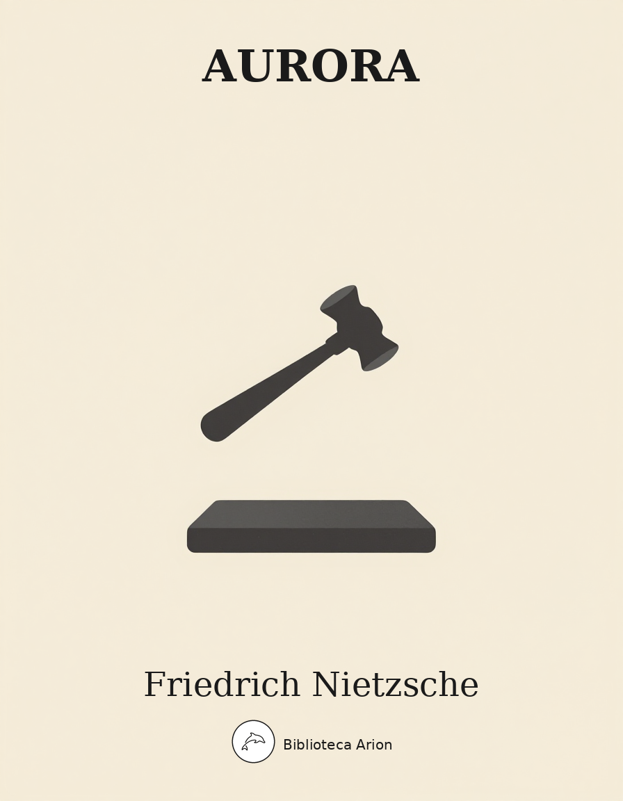

EPUBAurora
Morgenröthe. Gedanken über die moralischen Vorurtheile
Reflexions sobre els prejudicis morals. Obra central del pensament de Nietzsche on inicia la seva crítica radical de la moral, qüestionant els fonaments de la tradició moral occidental. Escrita a Gènova i publicada el 1881, amb un pròleg afegit el 1886. Conté 575 aforismes organitzats en cinc llibres. Aquesta traducció inclou el Pròleg complet, el Llibre Primer (aforismes 1-96), el Llibre Segon (aforismes 97-148) i una selecció del Llibre Cinquè.
Morgenröthe
Gedanken über die moralischen Vorurtheile
Friedrich Nietzsche (1881)
Vorrede
In diesem Buche findet man einen „Unterirdischen“ an der Arbeit, einen Bohrenden, Grabenden, Untergrabenden. Man sieht ihn, vorausgesetzt, dass man Augen für solche Arbeit der Tiefe hat —, wie er langsam, besonnen, mit sanfter Unerbittlichkeit vorwärts kommt, ohne dass die Not sich allzusehr verriete, welche jede lange Entbehrung von Licht und Luft mit sich bringt; man könnte ihn selbst bei seiner dunklen Arbeit zufrieden nennen. Scheint es nicht, dass irgend ein Glaube ihn führt, ein Trost entschädigt? Dass er vielleicht seine eigne lange Finsternis haben will, sein Unverständliches, Verborgenes, Rätselhaftes, weil er weiß, was er auch haben wird: seinen eignen Morgen, seine eigne Erlösung, seine eigne Morgenröte? … Gewiss, er wird zurückkehren: fragt ihn nicht, was er da unten will, er wird es euch selbst schon sagen, dieser scheinbare Trophonios und Unterirdische, wenn er erst wieder „Mensch geworden“ ist. Man verlernt gründlich das Schweigen, wenn man so lange, wie er, Maulwurf war, allein war — —
In der Tat, meine geduldigen Freunde, ich will es euch sagen, was ich da unten wollte, hier in dieser späten Vorrede, welche leicht hätte ein Nachruf, eine Leichenrede werden können: denn ich bin zurück gekommen und — ich bin davon gekommen. Glaubt ja nicht, dass ich euch zu dem gleichen Wagnisse auffordern werde! Oder auch nur zur gleichen Einsamkeit! Denn wer auf solchen eignen Wegen geht, begegnet Niemandem: das bringen die „eignen Wege“ mit sich. Niemand kommt, ihm dabei zu helfen; mit Allem, was ihm von Gefahr, Zufall, Bosheit und schlechtem Wetter zustößt, muss er allein fertig werden. Er hat eben seinen Weg für sich — und, wie billig, seine Bitterkeit, seinen gelegentlichen Verdruss an diesem „für sich“: wozu es zum Beispiel gehört, zu wissen, dass selbst seine Freunde nicht erraten können, wo er ist, wohin er geht, dass sie sich bisweilen fragen werden „wie? geht er überhaupt? hat er noch — einen Weg?“ — Damals unternahm ich Etwas, das nicht Jedermanns Sache sein dürfte: ich stieg in die Tiefe, ich bohrte in den Grund, ich begann ein altes Vertrauen zu untersuchen und anzugraben, auf dem wir Philosophen seit ein paar Jahrtausenden wie auf dem sichersten Grunde zu bauen pflegten, — immer wieder, obwohl jedes Gebäude bisher einstürzte ich begann unser Vertrauen zur Moral zu untergraben. Aber ihr versteht mich nicht?
Es ist bisher am schlechtesten über Gut und Böse nachgedacht worden: es war dies immer eine zu gefährliche Sache. Das Gewissen, der gute Ruf, die Hölle, unter Umständen selbst die Polizei erlaubten und erlauben keine Unbefangenheit; in Gegenwart der Moral soll eben, wie Angesichts jeder Autorität, nicht gedacht, noch weniger geredet werden: hier wird — gehorcht! So lang die Welt steht, war noch keine Autorität Willens, sich zum Gegenstand der Kritik nehmen zu lassen; und gar die Moral kritisieren, die Moral als Problem, als problematisch nehmen: wie? war das nicht — ist das nicht — unmoralisch? — Aber die Moral gebietet nicht nur über jede Art von Schreckmitteln, um sich kritische Hände und Folterwerkzeuge vom Leibe zu halten: ihre Sicherheit liegt noch mehr in einer gewissen Kunst der Bezauberung, auf die sie sich versteht, — sie weiß zu „begeistern“. Es gelingt ihr, oft mit einem einzigen Blicke, den kritischen Willen zu lähmen, sogar zu sich hinüberzulocken, ja es gibt Fälle, wo sie ihn gegen sich selbst zu kehren weiß: so dass er sich dann, gleich dem Skorpione, den Stachel in den eignen Leib sticht. Die Moral versteht sich eben von Alters her auf jede Teufelei von Ueberredungskunst: es gibt keinen Redner, auch heute noch, der sie nicht um ihre Hilfe anginge (man höre zum Beispiel selbst unsere Anarchisten reden: wie moralisch reden sie, um zu überreden! Zuletzt heißen sie sich selbst noch gar „die Guten und Gerechten“.) Die Moral hat sich eben von jeher, so lange auf Erden geredet und überredet worden ist, als die größte Meisterin der Verführung bewiesen — und, was uns Philosophen angeht, als die eigentliche Circe der Philosophen. Woran liegt es doch, dass von Plato ab alle philosophischen Baumeister in Europa umsonst gebaut haben? Dass Alles einzufallen droht oder schon in Schutt liegt, was sie selber ehrlich und ernsthaft für aere perennius hielten? Oh wie falsch ist die Antwort, welche man jetzt noch auf diese Frage bereit hält, „weil von ihnen Allen die Voraussetzung versäumt war, die Prüfung des Fundamentes, eine Kritik der gesamten Vernunft“ — jene verhängnisvolle Antwort Kant’s, der damit uns moderne Philosophen wahrhaftig nicht auf einen festeren und weniger trüglichen Boden gelockt hat! (— und nachträglich gefragt, war es nicht etwas sonderbar, zu verlangen, dass ein Werkzeug seine eigne Trefflichkeit und Tauglichkeit kritisieren solle? dass der Intellekt selbst seinen Wert, seine Kraft, seine Grenzen „erkennen“ solle? war es nicht sogar ein wenig widersinnig? — ) Die richtige Antwort wäre vielmehr gewesen, dass alle Philosophen unter der Verführung der Moral gebaut haben, auch Kant —, dass ihre Absicht scheinbar auf Gewissheit, auf „Wahrheit“, eigentlich aber auf „majestätische sittliche Gebäude“ ausging: um uns noch einmal der unschuldigen Sprache Kant’s zu bedienen, der es als seine eigne „nicht so glänzende, aber doch auch nicht verdienstlose“ Aufgabe und Arbeit bezeichnet, „den Boden zu jenen majestätischen sittlichen Gebäuden eben und baufest zu machen“ (Kritik der reinen Vernunft II, S. 257). Ach, es ist ihm damit nicht gelungen, im Gegenteil! — wie man heute sagen muss. Kant war mit einer solchen schwärmerischen Absicht eben der rechte Sohn seines Jahrhunderts, das mehr als jedes andere das Jahrhundert der Schwärmerei genannt werden darf: wie er es, glücklicher Weise, auch in Bezug auf dessen wertvollere Seiten geblieben ist (zum Beispiel mit jenem guten Stück Sensualismus, den er in seine Erkenntnistheorie hinübernahm). Auch ihn hatte die Moral-Tarantel Rousseau gebissen, auch ihm lag der Gedanke des moralischen Fanatismus auf dem Grunde der Seele, als dessen Vollstrecker sich ein andrer Jünger Rousseau’s fühlte und bekannte, nämlich Robespierre, „de fonder sur la terre l’empire de la sagesse, de la justice et de la vertu“ (Rede vom 7. Juni 1794). Andererseits konnte man es, mit einem solchen Franzosen- Fanatismus im Herzen, nicht unfranzösischer, nicht tiefer, gründlicher, deutscher treiben — wenn das Wort „deutsch“ in diesem Sinne heute noch erlaubt ist — als es Kant getrieben hat: um Raum für sein „moralisches Reich“ zu schaffen, sah er sich genötigt, eine unbeweisbare Welt anzusetzen, ein logisches „Jenseits“, — dazu eben hatte er seine Kritik der reinen Vernunft nötig! Anders ausgedrückt: er hätte sie nicht nötig gehabt, wenn ihm nicht Eins wichtiger als Alles gewesen wäre, das „moralische Reich“ unangreifbar, lieber noch ungreifbar für die Vernunft zu machen, — er empfand eben die Angreifbarkeit einer moralischen Ordnung der Dinge von Seiten der Vernunft zu stark! Denn Angesichts von Natur und Geschichte, Angesichts der gründlichen Unmoralität von Natur und Geschichte war Kant, wie jeder gute Deutsche von Alters her, Pessimist; er glaubte an die Moral, nicht weil sie durch Natur und Geschichte bewiesen wird, sondern trotzdem dass ihr durch Natur und Geschichte beständig widersprochen wird. Man darf sich vielleicht, um dies „trotzdem dass“ zu verstehen, an etwas Verwandtes bei Luther erinnern, bei jenem andern großen Pessimisten, der es einmal mit der ganzen Lutherischen Verwegenheit seinen Freunden zu Gemüte führte: „wenn man durch Vernunft es fassen könnte, wie der Gott gnädig und gerecht sein könne, der so viel Zorn und Bosheit zeigt, wozu brauchte man dann den Glauben?“ Nichts nämlich hat von jeher einen tieferen Eindruck auf die deutsche Seele gemacht, Nichts hat sie mehr „versucht“, als diese gefährlichste aller Schlussfolgerungen, welche jedem rechten Romanen eine Sünde wider den Geist ist: credo quia absurdum est: — mit ihr tritt die deutsche Logik zuerst in der Geschichte des christlichen Dogma’s auf; aber auch heute noch, ein Jahrtausend später, wittern wir Deutschen von heute, späte Deutsche in jedem Betrachte — Etwas von Wahrheit, von Möglichkeit der Wahrheit hinter dem berühmten realdialektischen Grund-Satze, mit welchem Hegel seiner Zeit dem deutschen Geiste zum Sieg über Europa verhalf — „der Widerspruch bewegt die Welt, alle Dinge sind sich selbst widersprechend“ —: wir sind eben, sogar bis in die Logik hinein, Pessimisten.
Aber nicht die logischen Werturteile sind die untersten und gründlichsten, zu denen die Tapferkeit unsers Argwohns hinunterkann: das Vertrauen auf die Vernunft, mit dem die Gültigkeit dieser Urteile steht und fällt, ist, als Vertrauen, ein moralisches Phänomen … Vielleicht hat der deutsche Pessimismus seinen letzten Schritt noch zu tun? Vielleicht muss er noch Ein Mal auf eine furchtbare Weise sein Credo und sein Absurdum neben einander stellen? Und wenn dies Buch bis in die Moral hinein, bis über das Vertrauen zur Moral hinweg pessimistisch ist, — sollte es nicht gerade damit ein deutsches Buch sein? Denn es stellt in der Tat einen Widerspruch dar und fürchtet sich nicht davor: in ihm wird der Moral das Vertrauen gekündigt — warum doch? Aus Moralität! Oder wie sollen wir’s heißen, was sich in ihm — in uns — begibt? denn wir würden unsrem Geschmacke nach bescheidenere Worte vorziehn. Aber es ist kein Zweifel, auch zu uns noch redet ein „du sollst“, auch wir noch gehorchen einem strengen Gesetze über uns, — und dies ist die letzte Moral, die sich auch uns noch hörbar macht, die auch wir noch zu leben wissen, hier, wenn irgend worin, sind auch wir noch Menschen des Gewissens: dass wir nämlich nicht wieder zurückwollen in Das, was uns als überlebt und morsch gilt, in irgend etwas „Unglaubwürdiges“, heisse es nun Gott, Tugend, Wahrheit, Gerechtigkeit, Nächstenliebe; dass wir uns keine Lügenbrücken zu alten Idealen gestatten; dass wir von Grund aus Allem feind sind, was in uns vermitteln und mischen möchte; feind jeder jetzigen Art Glauben und Christlichkeit; feind dem Halb- und Halben aller Romantik und Vaterländerei; feind auch der Artisten-Genüsslichkeit, Artisten-Gewissenlosigkeit, welche uns überreden möchte, da anzubeten, wo wir nicht mehr glauben — denn wir sind Artisten —; feind, kurzum, dem ganzen europäischen Femininismus (oder Idealismus, wenn man’s lieber hört), der ewig „hinan zieht“ und ewig gerade damit „herunter bringt“: — allein als Menschen dieses Gewissens fühlen wir uns noch verwandt mit der deutschen Rechtschaffenheit und Frömmigkeit von Jahrtausenden, wenn auch als deren fragwürdigste und letzte Abkömmlinge, wir Immoralisten, wir Gottlosen von heute, ja sogar, in gewissem Verstande, als deren Erben, als Vollstrecker ihres innersten Willens, eines pessimistischen Willens, wie gesagt, der sich davor nicht fürchtet, sich selbst zu verneinen, weil er mit Lust verneint! In uns vollzieht sich, gesetzt, dass ihr eine Formel wollt, — die Selbstaufhebung der Moral. — —
— Zuletzt aber: wozu müssten wir Das, was wir sind, was wir wollen und nicht wollen, so laut und mit solchem Eifer sagen? Sehen wir es kälter, ferner, klüger, höher an, sagen wir es, wie es unter uns gesagt werden darf, so heimlich, dass alle Welt es überhört, dass alle Welt uns überhört! Vor Allem sagen wir es langsam … Diese Vorrede kommt spät, aber nicht zu spät, was liegt im Grunde an fünf, sechs Jahren? Ein solches Buch, ein solches Problem hat keine Eile; überdies sind wir Beide Freunde des lento, ich ebensowohl als mein Buch. Man ist nicht umsonst Philologe gewesen, man ist es vielleicht noch das will sagen, ein Lehrer des langsamen Lesens: — endlich schreibt man auch langsam. Jetzt gehört es nicht nur zu meinen Gewohnheiten, sondern auch zu meinem Geschmacke — einem boshaften Geschmacke vielleicht? — Nichts mehr zu schreiben, womit nicht jede Art Mensch, die „Eile hat“, zur Verzweiflung gebracht wird. Philologie nämlich ist jene ehrwürdige Kunst, welche von ihrem Verehrer vor Allem Eins heischt, bei Seite gehn, sich Zeit lassen, still werden, langsam werden —, als eine Goldschmiedekunst und -kennerschaft des Wortes, die lauter feine vorsichtige Arbeit abzutun hat und Nichts erreicht, wenn sie es nicht lento erreicht. Gerade damit aber ist sie heute nötiger als je, gerade dadurch zieht sie und bezaubert sie uns am stärksten, mitten in einem Zeitalter der „Arbeit“, will sagen: der Hast, der unanständigen und schwitzenden Eilfertigkeit, das mit Allem gleich „fertig werden“ will, auch mit jedem alten und neuen Buche: — sie selbst wird nicht so leicht irgend womit fertig, sie lehrt gut lesen, das heißt langsam, tief, rück- und vorsichtig, mit Hintergedanken, mit offen gelassenen Türen, mit zarten Fingern und Augen lesen … Meine geduldigen Freunde, dies Buch wünscht sich nur vollkommene Leser und Philologen: lernt mich gut lesen! —
Ruta bei Genua, im Herbst des Jahres 1886.
Erstes Buch
1. Nachträgliche Vernünftigkeit
Nachträgliche Vernünftigkeit. — Alle Dinge, die lange leben, werden allmählich so mit Vernunft durchtränkt, dass ihre Abkunft aus der Unvernunft dadurch unwahrscheinlich wird. Klingt nicht fast jede genaue Geschichte einer Entstehung für das Gefühl paradox und frevelhaft? Widerspricht der gute Historiker im Grunde nicht fortwährend?
2. Vorurteil der Gelehrten
Vorurteil der Gelehrten. — Es ist ein richtiges Urteil der Gelehrten, dass die Menschen aller Zeiten zu wissen glaubten, was gut und böse, lobens- und tadelnswert sei. Aber es ist ein Vorurteil der Gelehrten, dass wir es jetzt besser wüssten, als irgend eine Zeit.
3. Alles hat seine Zeit
Alles hat seine Zeit. — Als der Mensch allen Dingen ein Geschlecht gab, meinte er nicht zu spielen, sondern eine tiefe Einsicht gewonnen zu haben: — den ungeheuren Umfang dieses Irrtums hat er sich sehr spät und jetzt vielleicht noch nicht ganz eingestanden. — Ebenso hat der Mensch Allem, was da ist, eine Beziehung zur Moral beigelegt und der Welt eine ethische Bedeutung über die Schulter gehängt. Das wird einmal ebenso viel und nicht mehr Wert haben, als es heute schon der Glaube an die Männlichkeit oder Weiblichkeit der Sonne hat.
4. Gegen die erträumte Disharmonie der Sphären
Gegen die erträumte Disharmonie der Sphären. — Wir müssen die viele falsche Großartigkeit wieder aus der Welt schaffen, weil sie gegen die Gerechtigkeit ist, auf die alle Dinge vor uns Anspruch haben! Und dazu tut not, die Welt nicht disharmonischer sehen zu wollen als sie ist!
5. Seid dankbar
Seid dankbar. — Das große Ergebnis der bisherigen Menschheit ist, dass wir nicht mehr beständige Furcht vor wilden Tieren, vor Barbaren, vor Göttern und vor unseren Träumen zu haben brauchen.
6. Der Taschenspieler und sein Widerspiel
Der Taschenspieler und sein Widerspiel. — Das Erstaunliche in der Wissenschaft ist dem Erstaunlichen in der Kunst des Taschenspielers entgegengesetzt. Denn dieser will uns dafür gewinnen, eine sehr einfache Kausalität dort zu sehen, wo in Wahrheit eine sehr komplizierte Kausalität in Tätigkeit ist. Die Wissenschaft dagegen nötigt uns, den Glauben an einfache Kausalitäten gerade dort aufzugeben, wo Alles so leicht begreiflich scheint und wir die Narren des Augenscheins sind. Die „einfachsten“ Dinge sind sehr kompliziert, — man kann sich nicht genug darüber verwundern!
7. Umlernen des Raumgefühls
Umlernen des Raumgefühls. — Haben die wirklichen Dinge oder die eingebildeten Dinge mehr zum menschlichen Glück beigetragen? Gewiss ist, dass die Weite des Raumes zwischen höchstem Glück und tiefstem Unglück erst mit Hilfe der eingebildeten Dinge hergestellt worden ist. Diese Art von Raumgefühl wird folglich, unter der Einwirkung der Wissenschaft, immer verkleinert: so wie wir von ihr gelernt haben und noch lernen, die Erde als klein, ja das Sonnensystem als Punkt zu empfinden.
8. Transfiguration
Transfiguration. — Die ratlos Leidenden, die verworren Träumenden, die überirdisch Entzückten, — dies sind die drei Grade, in welche Raffael die Menschen einteilt. So blicken wir nicht mehr in die Welt — und auch Raffael dürfte es jetzt nicht mehr: er würde eine neue Transfiguration mit Augen sehen.
9. Begriff der Sittlichkeit der Sitte
Begriff der Sittlichkeit der Sitte. — Im Verhältnis zu der Lebensweise ganzer Jahrtausende der Menschheit leben wir jetzigen Menschen in einer sehr unsittlichen Zeit: die Macht der Sitte ist erstaunlich abgeschwächt und das Gefühl der Sittlichkeit so verfeinert und so in die Höhe getragen, dass es ebenso gut als verflüchtigt bezeichnet werden kann. Deshalb werden uns, den Spätgeborenen, die Grundeinsichten in die Entstehung der Moral schwer, sie bleiben uns, wenn wir sie trotzdem gefunden haben, an der Zunge kleben und wollen nicht heraus: weil sie grob klingen! Oder weil sie die Sittlichkeit zu verleumden scheinen! So zum Beispiel gleich der Hauptsatz: Sittlichkeit ist nichts Anderes (also namentlich nicht mehr!), als Gehorsam gegen Sitten, welcher Art diese auch sein mögen; Sitten aber sind die herkömmliche Art zu handeln und abzuschätzen. In Dingen, wo kein Herkommen befiehlt, gibt es keine Sittlichkeit; und je weniger das Leben durch Herkommen bestimmt ist, um so kleiner wird der Kreis der Sittlichkeit. Der freie Mensch ist unsittlich, weil er in Allem von sich und nicht von einem Herkommen abhängen will: in allen ursprünglichen Zuständen der Menschheit bedeutet „böse“ so viel wie „individuell“, „frei“, „willkürlich“, „ungewohnt“, „unvorhergesehen“, „unberechenbar“. Immer nach dem Maßstab solcher Zustände gemessen: wird eine Handlung getan, nicht weil das Herkommen sie befiehlt, sondern aus anderen Motiven (zum Beispiel des individuellen Nutzens wegen), ja selbst aus eben den Motiven, welche das Herkommen ehemals begründet haben, so heißt sie unsittlich und wird so selbst von ihrem Täter empfunden: denn sie ist nicht aus Gehorsam gegen das Herkommen getan worden. Was ist das Herkommen? Eine höhere Autorität, welcher man gehorcht, nicht weil sie das uns Nützliche befiehlt, sondern weil sie befiehlt. — Wodurch unterscheidet sich dies Gefühl vor dem Herkommen von dem Gefühl der Furcht überhaupt? Es ist die Furcht vor einem höheren Intellekt, der da befiehlt, vor einer unbegreiflichen unbestimmten Macht, vor etwas mehr als Persönlichem, — es ist Aberglaube in dieser Furcht. — Ursprünglich gehörte die ganze Erziehung und Pflege der Gesundheit, die Ehe, die Heilkunst, der Feldbau, der Krieg, das Reden und Schweigen, der Verkehr unter einander und mit den Göttern in den Bereich der Sittlichkeit: sie verlangte, dass man Vorschriften beobachtete, ohne an sich als Individuum zu denken. Ursprünglich also war Alles Sitte, und wer sich über sie erheben wollte, musste Gesetzgeber und Medizinmann und eine Art Halbgott werden: das heißt, er musste Sitten machen, — ein furchtbares, lebensgefährliches Ding! — Wer ist der Sittlichste? Einmal Der, welcher das Gesetz am häufigsten erfüllt: also, gleich dem Brahmanen, das Bewusstsein desselben überallhin und in jeden kleinen Zeitteil trägt, sodass er fortwährend erfinderisch ist in Gelegenheiten, das Gesetz zu erfüllen. Sodann Der, der es auch in den schwersten Fällen erfüllt. Der Sittlichste ist Der, welcher am meisten der Sitte opfert: welches aber sind die größten Opfer? Nach der Beantwortung dieser Frage entfalten sich mehrere unterschiedliche Moralen; aber der wichtigste Unterschied bleibt doch jener, welcher die Moralität der häufigsten Erfüllung von der der schwersten Erfüllung trennt. Man täusche sich über das Motiv jener Moral nicht, welche die schwerste Erfüllung der Sitte als Zeichen der Sittlichkeit fordert! Die Selbstüberwindung wird nicht ihrer nützlichen Folgen halber, die sie für das Individuum hat, gefordert, sondern damit die Sitte, das Herkommen herrschend erscheine, trotz allem individuellen Gegengelüst und Vorteil: der Einzelne soll sich opfern, — so heischt es die Sittlichkeit der Sitte. — Jene Moralisten dagegen, welche wie die Nachfolger der sokratischen Fußtapfen die Moral der Selbstbeherrschung und Enthaltsamkeit dem Individuum als seinen eigensten Vorteil, als seinen persönlichsten Schlüssel zum Glück an’s Herz legen, machen die Ausnahme — und wenn es uns anders erscheint, so ist es, weil wir unter ihrer Nachwirkung erzogen sind: sie alle gehen eine neue Strasse unter höchlichster Missbilligung aller Vertreter der Sittlichkeit der Sitte, — sie lösen sich aus der Gemeinde aus, als Unsittliche, und sind, im tiefsten Verstande, böse. Ebenso erschien einem tugendhaften Römer alten Schrotes jeder Christ, welcher „am ersten nach seiner eigenen Seligkeit trachtete“, — als böse. — Überall, wo es eine Gemeinde und folglich eine Sittlichkeit der Sitte gibt, herrscht auch der Gedanke, dass die Strafe für die Verletzung der Sitte vor Allem auf die Gemeinde fällt: jene übernatürliche Strafe, deren Äußerung und Grenze so schwer zu begreifen ist und mit so abergläubischer Angst ergründet wird. Die Gemeinde kann den Einzelnen anhalten, dass er den nächsten Schaden, den seine Tat im Gefolge hatte, am Einzelnen oder an der Gemeinde wieder gut mache, sie kann auch eine Art Rache am Einzelnen dafür nehmen, dass durch ihn, als angebliche Nachwirkung seiner Tat, sich die göttlichen Wolken und Zorneswetter über der Gemeinde gesammelt haben, — aber sie empfindet die Schuld des Einzelnen doch vor Allem als ihre Schuld und trägt dessen Strafe als ihre Strafe — : die Sitten sind locker geworden, so klagt es in der Seele eines Jeden, „wenn solche Taten möglich sind“. Jede individuelle Handlung, jede individuelle Denkweise erregt Schauder; es ist gar nicht auszurechnen, was gerade die seltneren, ausgesuchteren, ursprünglicheren Geister im ganzen Verlauf der Geschichte dadurch gelitten haben müssen, dass sie immer als die bösen und gefährlichen empfunden wurden, ja dass sie sich selber so empfanden. Unter der Herrschaft der Sittlichkeit der Sitte hat die Originalität jeder Art ein böses Gewissen bekommen; bis diesen Augenblick ist der Himmel der Besten noch dadurch verdüsterter, als er sein müsste.
10. Gegenbewegung zwischen Sinn der Sittlichkeit und Sinn der Kausalität
Gegenbewegung zwischen Sinn der Sittlichkeit und Sinn der Kausalität. — In dem Maße, in welchem der Sinn der Kausalität zunimmt, nimmt der Umfang des Reiches der Sittlichkeit ab: denn jedesmal, wenn man die notwendigen Wirkungen begriffen hat und gesondert von allen Zufällen, allem gelegentlichen Nachher (post hoc) zu denken versteht, hat man eine Unzahl phantastischer Kausalitäten, an welche als Grundlagen von Sitten bisher geglaubt wurde, zerstört — die wirkliche Welt ist viel kleiner, als die phantastische — und jedesmal ist ein Stück Angstlichkeit und Zwang aus der Welt verschwunden, jedesmal auch ein Stück Achtung vor der Autorität der Sitte: die Sittlichkeit im Großen hat eingebüßt. Wer sie dagegen vermehren will, muss zu verhüten wissen, dass die Erfolge kontrolierbar werden.
11. Volksmoral und Volksmedizin
Volksmoral und Volksmedizin. — An der Moral, welche in einer Gemeinde herrscht, wird fortwährend und von Jedermann gearbeitet: die Meisten bringen Beispiele über Beispiele für das behauptete Verhältnis von Ursache und Folge, Schuld und Strafe hinzu, bestätigen es als wohlbegründet und mehren seinen Glauben: Einige machen neue Beobachtungen über Handlungen und Folgen und ziehen Schlüsse und Gesetze daraus: die Wenigsten nehmen hie und da Anstoß und lassen den Glauben an diesen Punkten schwach werden. — Alle aber sind einander gleich in der gänzlich rohen, unwissenschaftlichen Art ihrer Tätigkeit; ob es sich um Beispiele, Beobachtungen oder Anstösse handelt, ob um den Beweis, die Bekräftigung, den Ausdruck, die Widerlegung eines Gesetzes, — es ist wertloses Material und wertlose Form, wie Material und Form aller Volksmedizin. Volksmedizin und Volksmoral gehören zusammen und sollten nicht mehr so verschieden abgeschätzt werden, wie es immer noch geschieht: beides sind die gefährlichsten Scheinwissenschaften.
12. Die Folge als Zutat
Die Folge als Zutat. — Ehemals glaubte man, der Erfolg einer Tat sei nicht eine Folge, sondern eine freie Zutat — nämlich Gottes. Ist eine größere Verwirrung denkbar! Man musste sich um die Tat und um den Erfolg besonders bemühen, mit ganz verschiedenen Mitteln und Praktiken!
13. Zur neuen Erziehung des Menschengeschlechts
Zur neuen Erziehung des Menschengeschlechts. — Helft, ihr Hilfreichen und Wohlgesinnten, doch an dem Einen Werke mit, den Begriff der Strafe, der die ganze Welt überwuchert hat, aus ihr zu entfernen! Es gibt kein böseres Unkraut! Nicht nur in die Folgen unserer Handlungsweisen hat man ihn gelegt — und wie schrecklich und vernunftwidrig ist schon dies, Ursache und Wirkung als Ursache und Strafe zu verstehen! — aber man hat mehr getan und die ganze reine Zufälligkeit des Geschehens um ihre Unschuld gebracht, mit dieser verruchten Interpretationskunst des Straf-Begriffs. Ja, man hat die Tollheit so weit getrieben, die Existenz selber als Strafe empfinden zu heißen, — es ist, als ob die Phantasterei von Kerkermeistern und Henkern bisher die Erziehung des Menschengeschlechts geleitet hätte!
14. Bedeutung des Wahnsinns in der Geschichte der Moralität
Bedeutung des Wahnsinns in der Geschichte der Moralität. — Wenn trotz jenem furchtbaren Druck der „Sittlichkeit der Sitte“, unter dem alle Gemeinwesen der Menschheit lebten, viele Jahrtausende lang vor unserer Zeitrechnung und in derselben im Ganzen und Großen fort bis auf den heutigen Tag (wir selber wohnen in der kleinen Welt der Ausnahmen und gleichsam in der bösen Zone): — wenn, sage ich, trotzdem neue und abweichende Gedanken, Wertschätzungen, Triebe immer wieder herausbrachen, so geschah dies unter einer schauderhaften Geleitschaft: fast überall ist es der Wahnsinn, welcher dem neuen Gedanken den Weg bahnt, welcher den Bann eines verehrten Brauches und Aberglaubens bricht. Begreift ihr es, weshalb es der Wahnsinn sein musste? Etwas in Stimme und Gebärde so Grausenhaftes und Unberechenbares wie die dämonischen Launen des Wetters und des Meeres und deshalb einer ähnlichen Scheu und Beobachtung Würdiges? Etwas, das so sichtbar das Zeichen völliger Unfreiwilligkeit trug, wie die Zuckungen und der Schaum des Epileptischen, das den Wahnsinnigen dergestalt als Maske und Schallrohr einer Gottheit zu kennzeichnen schien? Etwas, das dem Träger eines neuen Gedankens selber Ehrfurcht und Schauder vor sich und nicht mehr Gewissensbisse gab und ihn dazu trieb, der Prophet und Märtyrer desselben zu werden? — Während es uns heute noch immer wieder nahe gelegt wird, dass dem Genie, anstatt eines Kornes Salz, ein Korn Wahnwurz beigegeben ist, lag allen früheren Menschen der Gedanke viel näher, dass überall, wo es Wahnsinn gibt, es auch ein Korn Genie und Weisheit gäbe, — etwas „Göttliches“, wie man sich zuflüsterte. Oder vielmehr: man drückte sich kräftig genug aus. „Durch den Wahnsinn sind die größten Güter über Griechenland gekommen“, sagte Plato mit der ganzen alten Menschheit. Gehen wir noch einen Schritt weiter: allen jenen überlegenen Menschen, welche es unwiderstehlich dahin zog, das Joch irgend einer Sittlichkeit zu brechen und neue Gesetze zugeben, blieb, wenn sie nicht wirklich wahnsinnig waren, Nichts übrig, als sich wahnsinnig zu machen oder zu stellen — und zwar gilt dies für die Neuerer auf allen Gebieten, nicht nur auf dem der priesterlichen und politischen Satzung: — selbst der Neuerer des poetischen Metrums musste durch den Wahnsinn sich beglaubigen. (Bis in viel mildere Zeiten hinein verblieb daraus den Dichtern eine gewisse Convention des Wahnsinns: auf welche zum Beispiel Solon zurückgriff, als er die Athener zur Wiedereroberung von Salamis aufstachelte.) — „Wie macht man sich wahnsinnig, wenn man es nicht ist und nicht wagt, es zu scheinen?“ diesem entsetzlichen Gedankengange haben fast alle bedeutenden Menschen der älteren Zivilisation nachgehangen; eine geheime Lehre von Kunstgriffen und diätetischen Winken pflanzte sich darüber fort, nebst dem Gefühle der Unschuld, ja Heiligkeit eines solchen Nachsinnens und Vorhabens. Die Rezepte, um bei den Indianern ein Medizinmann, bei den Christen des Mittelalters ein Heiliger, bei den Grönländern ein Angekok, bei den Brasilianern ein Paje zu werden, sind im Wesentlichen die selben: unsinniges Fasten, fortgesetzte geschlechtliche Enthaltung, in die Wüste gehen oder auf einen Berg oder eine Säule steigen, oder „sich auf eine bejahrte Weide setzen, die in einen See hinaussieht“ und schlechterdings an Nichts denken, als Das, was eine Verzückung und geistige Unordnung mit sich bringen kann. Wer wagt es, einen Blick in die Wildnis bitterster und überflüssigster Seelennöte zu tun, in welchen wahrscheinlich gerade die fruchtbarsten Menschen aller Zeiten geschmachtet haben! Jene Seufzer der Einsamen und Verstörten zu hören: „Ach, so gebt doch Wahnsinn, ihr Himmlischen! Wahnsinn, dass ich endlich an mich selber glaube! Gebt Delirien und Zuckungen, plötzliche Lichter und Finsternisse, schreckt mich mit Frost und Glut, wie sie kein Sterblicher noch empfand, mit Getöse und umgehenden Gestalten, lasst mich heulen und winseln und wie ein Tier kriechen: nur dass ich bei mir selber Glauben finde! Der Zweifel frisst mich auf, ich habe das Gesetz getötet, das Gesetz ängstigt mich wie ein Leichnam einen Lebendigen: wenn ich nicht mehr bin als das Gesetz, so bin ich der Verworfenste von Allen. Der neue Geist, der in mir ist, woher ist er, wenn er nicht von euch ist? Beweist es mir doch, dass ich euer bin; der Wahnsinn allein beweist es mir“. Und nur zu oft erreichte diese Inbrunst ihr Ziel zu gut: in jener Zeit, in welcher das Christentum am reichsten seine Fruchtbarkeit an Heiligen und Wüsten-Einsiedlern bewies und sich dadurch selber zu beweisen vermeinte, gab es in Jerusalem große Irrenhäuser für verunglückte Heilige, für jene, welche ihr letztes Korn Salz daran gegeben hatten.
15. Die ältesten Trostmittel
Die ältesten Trostmittel. — Erste Stufe: der Mensch sieht in jedem Übelbefinden und Missgeschick Etwas, wofür er irgend jemand Anderes leiden lassen muss, — dabei wird er sich seiner noch vorhandenen Macht bewusst, und dies tröstet ihn. Zweite Stufe: der Mensch sieht in jedem Übelbefinden und Missgeschick eine Strafe, das heißt die Sühnung der Schuld und das Mittel, sich vom bösartigen Zauber eines wirklichen oder vermeintlichen Unrechtes loszumachen. Wenn er dieses Vorteils ansichtig wird, welchen das Unglück mit sich bringt, so glaubt er einen Anderen nicht mehr dafür leiden lassen zu müssen, — er sagt sich von dieser Art Befriedigung los, weil er nun eine andere hat.
16. Erster Satz der Zivilisation
Erster Satz der Zivilisation. — Bei rohen Völkern gibt es eine Gattung von Sitten, deren Absicht die Sitte überhaupt zu sein scheint: peinliche und im Grunde überflüssige Bestimmungen (wie zum Beispiel die unter den Kamtschadalen, niemals den Schnee von den Schuhen mit dem Messer abzuschaben, niemals eine Kohle mit dem Messer zu spießen, niemals ein Eisen in’s Feuer zu legen — und der Tod trifft den, welcher in solchen Stücken zuwiderhandelt!), die aber die fortwährende Nähe der Sitte, den unausgesetzten Zwang, Sitte zu üben, fortwährend im Bewusstsein erhalten: zur Bekräftigung des großen Satzes, mit dem die Zivilisation beginnt: jede Sitte ist besser, als keine Sitte.
17. Die gute und die böse Natur
Die gute und die böse Natur. — Erst haben die Menschen sich in die Natur hineingedichtet: sie sahen überall sich und Ihresgleichen, nämlich ihre böse und launenhafte Gesinnung, gleichsam versteckt unter Wolken, Gewittern, Raubtieren, Bäumen und Kräutern: damals erfanden sie die „böse Natur“. Dann kam einmal eine Zeit, da sie sich wieder aus der Natur hinausdichteten, die Zeit Rousseau’s: man war einander so satt, dass man durchaus einen Weltwinkel haben wollte, wo der Mensch nicht hinkommt mit seiner Qual: man erfand die „gute Natur“.
18. Die Moral des freiwilligen Leidens
Die Moral des freiwilligen Leidens. — Welcher Genuss ist für Menschen im Kriegszustande jener kleinen, stets gefährdeten Gemeinde, wo die strengste Sittlichkeit waltet, der höchste? Also für kraftvolle, rachsüchtige, feindselige, tückische, argwöhnische, zum Furchtbarsten bereite, und durch Entbehrung und Sittlichkeit gehärtete Seelen? Der Genuss der Grausamkeit: so wie es auch zur Tugend einer solchen Seele in diesen Zuständen gerechnet wird, in der Grausamkeit erfinderisch und unersättlich zu sein. An dem Tun des Grausamen erquickt sich die Gemeinde und wirft einmal die Düsterkeit der beständigen Angst und Vorsicht von sich. Die Grausamkeit gehört zur ältesten Festfreude der Menschheit. Folglich denkt man sich auch die Götter erquickt und festlich gestimmt, wenn man ihnen den Anblick der Grausamkeit anbietet, — und so schleicht sich die Vorstellung in die Welt, dass das freiwillige Leiden, die selbsterwählte Marter einen guten Sinn und Wert habe. Allmählich formt die Sitte in der Gemeinde eine Praxis gemäß dieser Vorstellung: man wird bei allem ausschweifenden Wohlbefinden von nun an misstrauischer und bei allen schweren schmerzhaften Zuständen zuversichtlicher; man sagt sich: es mögen wohl die Götter ungnädig wegen des Glücks und gnädig wegen unseres Leidens auf uns sehen, — nicht etwa mitleidig! Denn das Mitleiden gilt als verächtlich und einer starken, furchtbaren Seele unwürdig; — aber gnädig, weil sie dadurch ergötzt und guter Dinge werden: denn der Grausame genießt den höchsten Kitzel des Machtgefühls. So kommt in den Begriff des „sittlichsten Menschen“ der Gemeinde die Tugend des häufigen Leidens, der Entbehrung, der harten Lebensweise, der grausamen Kasteiung, — nicht, um es wieder und wieder zu sagen, als Mittel der Zucht, der Selbstbeherrschung, des Verlangens nach individuellem Glück, — sondern als eine Tugend, welche der Gemeinde bei den bösen Göttern einen guten Geruch macht und wie ein beständiges Versöhnungsopfer auf dem Altare zu ihnen empordampft. Alle jene geistigen Führer der Völker, welche in dem trägen fruchtbaren Schlamm ihrer Sitten Etwas zu bewegen vermochten, haben außer dem Wahnsinn auch die freiwillige Marter nötig gehabt, um Glauben zu finden — und zumeist und zuerst, wie immer, den Glauben an sich selber! Je mehr gerade ihr Geist auf neuen Bahnen ging und folglich von Gewissensbissen und Ängsten gequält wurde, um so grausamer wüteten sie gegen das eigene Fleisch, das eigene Gelüste und die eigene Gesundheit, — wie um der Gottheit einen Ersatz an Lust zu bieten, wenn sie vielleicht um der vernachlässigten und bekämpften Gebräuche und der neuen Ziele willen erbittert sein sollte. Glaube man nicht zu schnell, dass wir jetzt von einer solchen Logik des Gefühls uns völlig befreit hätten! Die heldenhaftesten Seelen mögen sich darüber mit sich befragen. Jeder kleinste Schritt auf dem Felde des freien Denkens, des persönlich gestalteten Lebens ist von jeher mit geistigen und körperlichen Martern erstritten worden: nicht nur das Vorwärts-Schreiten, nein! vor Allem das Schreiten, die Bewegung, die Veränderung hat ihre unzähligen Märtyrer nötig gehabt, durch die langen pfadsuchenden und grundlegenden Jahrtausende hindurch, an welche man freilich nicht denkt, wenn man, wie gewohnt, von „Weltgeschichte“, von diesem lächerlich kleinen Ausschnitt des menschlichen Daseins redet; und selbst in dieser sogenannten Weltgeschichte, welche im Grunde ein Lärm um die letzten Neuigkeiten ist, gibt es kein eigentlich wichtigeres Thema, als die uralte Tragödie von den Märtyrern, die den Sumpf bewegen wollten. Nichts ist teurer erkauft, als das Wenige von menschlicher Vernunft und vom Gefühle der Freiheit, welches jetzt unseren Stolz ausmacht. Dieser Stolz aber ist es, dessentwegen es uns jetzt fast unmöglich wird, mit jenen ungeheuren Zeitstrecken der „Sittlichkeit der Sitte“, zu empfinden, welche der „Weltgeschichte“ vorausliegen, als die wirkliche und entscheidende Hauptgeschichte, welche den Charakter der Menschheit festgestellt hat: wo das Leiden als Tugend, die Grausamkeit als Tugend, die Verstellung als Tugend, die Rache als Tugend, die Verleugnung der Vernunft als Tugend, dagegen das Wohlbefinden als Gefahr, die Wissbegier als Gefahr, der Friede als Gefahr, das Mitleiden als Gefahr, das Bemitleidetwerden als Schimpf, die Arbeit als Schimpf, der Wahnsinn als Göttlichkeit, die Veränderung als das Unsittliche und Verderbenschwangere in Geltung war! — Ihr meint, es habe sich Alles dies geändert, und die Menschheit müsse somit ihren Charakter vertauscht haben? Oh, ihr Menschenkenner, lernt euch besser kennen!
19. Sittlichkeit und Verdummung
Sittlichkeit und Verdummung. — Die Sitte repräsentiert die Erfahrungen früherer Menschen über das vermeintlich Nützliche und Schädliche, — aber das Gefühl für die Sitte (Sittlichkeit) bezieht sich nicht auf jene Erfahrungen als solche, sondern auf das Alter, die Heiligkeit, die Indiskutabilität der Sitte. Und damit wirkt dies Gefühl dem entgegen, dass man neue Erfahrungen macht und die Sitten korrigiert: das heißt, die Sittlichkeit wirkt der Entstehung neuer und besserer Sitten entgegen: sie verdummt.
20. Freitäter und Freidenker
Freitäter und Freidenker. — Die Freitäter sind im Nachteil gegen die Freidenker, weil die Menschen sichtbarer an den Folgen von Taten, als von Gedanken leiden. Bedenkt man aber, dass diese wie jene ihre Befriedigung suchen und dass den Freidenkern schon ein Ausdenken und Aussprechen von verbotenen Dingen diese Befriedigung gibt, so ist in Ansehung der Motive Alles eins: und in Ansehung der Folgen wird der Ausschlag sogar gegen den Freidenker sein, vorausgesetzt, dass man nicht nach der nächsten und gröbsten Sichtbarkeit — das heißt: nicht wie alle Welt urteilt. Man hat viel von der Verunglimpfung wieder zurückzunehmen, mit der die Menschen alle Jene bedacht haben, welche durch die Tat den Bann einer Sitte durchbrachen, — im Allgemeinen heißen sie Verbrecher. Jeder, der das bestehende Sittengesetz umwarf, hat bisher zuerst immer als schlechter Mensch gegolten: aber wenn man, wie es vorkam, hinterher es nicht wieder aufzurichten vermochte und sich damit zufrieden gab, so veränderte sich das Prädikat allmählich; — die Geschichte handelt fast nur von diesen schlechten Menschen, welche später gutgesprochen worden sind!
21. Erfüllung des Gesetzes
„Erfüllung des Gesetzes“. — Im Falle, dass die Befolgung einer moralischen Vorschrift doch ein anderes Resultat ergibt, als versprochen und erwartet wird, und den Sittlichen nicht das verheißene Glück, sondern wider Erwarten Unglück und Elend trifft, so bleibt immer die Ausflucht des Gewissenhaften und Ängstlichen übrig: „es ist Etwas in der Ausführung versehen worden“. Im allerschlimmsten Falle wird eine tief leidende und zerdrückte Menschheit sogar dekretieren „es ist unmöglich, die Vorschrift gut auszuführen, wir sind durch und durch schwach und sündhaft und der Moralität im innersten Grunde nicht fähig, folglich haben wir auch keinen Anspruch auf Glück und Gelingen. Die moralischen Vorschriften und Verheißungen sind für bessere Wesen, als wir sind, gegeben“.
22. Werke und Glaube
Werke und Glaube. — Immer noch wird durch die protestantischen Lehrer jener Grundirrtum fortgepflanzt: dass es nur auf den Glauben ankomme und dass aus dem Glauben die Werke notwendig folgen müssen. Dies ist schlechterdings nicht wahr, aber klingt so verführerisch, dass es schon andere Intelligenzen, als die Luther’s (nämlich die des Sokrates und Plato) betört hat: obwohl der Augenschein aller Erfahrungen aller Tage dagegen spricht. Das zuversichtlichste Wissen oder Glauben kann nicht die Kraft zur Tat, noch die Gewandtheit zur Tat geben, es kann nicht die Übung jenes feinen, vielteiligen Mechanismus ersetzen, welche vorhergegangen sein muss, damit irgend Etwas aus einer Vorstellung sich in Aktion verwandeln könne. Vor Allem und zuerst die Werke! Das heißt Übung, Übung, Übung! Der dazu gehörige „Glaube“ wird sich schon einstellen, — dessen seid versichert!
23. Worin wir am feinsten sind
Worin wir am feinsten sind. — Dadurch, dass man sich viele Tausend Jahre lang die Sachen (Natur, Werkzeuge, Eigentum jeder Art) ebenfalls belebt und beseelt dachte, mit der Kraft zu schaden und sich den menschlichen Absichten zu entziehen, ist das Gefühl der Ohnmacht unter den Menschen viel größer und viel häufiger gewesen, als es hätte sein müssen: man hatte ja nötig, sich der Sachen ebenso zu versichern, wie der Menschen und Tiere, durch Gewalt, Zwang, Schmeichelei, Verträge, Opfer, — und hier ist der Ursprung der meisten abergläubischen Gebräuche, das heißt eines erheblichen, vielleicht überwiegenden und trotzdem vergeudeten und unnützen Bestandteils aller von Menschen bisher geübten Tätigkeit! — Aber weil das Gefühl der Ohnmacht und der Furcht so stark und so lange fast fortwährend in Reizung war, hat sich das Gefühl der Macht in solcher Feinheit entwickelt, dass es jetzt hierin der Mensch mit der delikatesten Goldwage aufnehmen kann. Es ist sein stärkster Hang geworden; die Mittel, welche man entdeckte, sich dieses Gefühl zu schaffen, sind beinahe die Geschichte der Kultur.
24. Der Beweis einer Vorschrift
Der Beweis einer Vorschrift. — Im Allgemeinen wird die Güte oder Schlechtigkeit einer Vorschrift, zum Beispiel der, Brot zu backen, so bewiesen, dass das in ihr versprochene Resultat sich ergibt oder nicht ergibt, vorausgesetzt, dass sie genau ausgeführt wird. Anders steht es jetzt mit den moralischen Vorschriften: denn hier sind gerade die Resultate nicht zu übersehen, oder deutbar und unbestimmt. Diese Vorschriften ruhen auf Hypothesen von dem allergeringsten wissenschaftlichen Werte, deren Beweis und deren Widerlegung aus den Resultaten im Grunde gleich unmöglich ist: — aber einstmals, bei der ursprünglichen Rohheit aller Wissenschaft und den geringen Ansprüchen, die man machte, um ein Ding für erwiesen zu nehmen, — einstmals wurde die Güte oder Schlechtigkeit einer Vorschrift der Sitte ebenso festgestellt wie jetzt die jeder anderen Vorschrift: durch Hinweisung auf den Erfolg. Wenn bei den Eingeborenen in Russisch-Amerika die Vorschrift gilt: du sollst keinen Tierknochen in’s Feuer werfen oder den Hunden geben, — so wird sie so bewiesen: „tue es und du wirst kein Glück auf der Jagd haben“. Nun aber hat man in irgend einem Sinne fast immer „kein Glück auf der Jagd“; es ist nicht leicht möglich, die Güte der Vorschrift auf diesem Wege zu widerlegen, namentlich wenn eine Gemeinde und nicht ein Einzelner als Träger der Strafe gilt; vielmehr wird immer ein Umstand eintreten, welcher die Vorschrift zu beweisen scheint.
25. Sitte und Schönheit
Sitte und Schönheit. — Zu Gunsten der Sitte sei nicht verschwiegen, dass bei Jedem, der sich ihr völlig und von ganzem Herzen und von Anbeginn an unterwirft, die Angriffs- und Verteidigungsorgane — die körperlichen und geistigen — verkümmern: das heißt, er wird zunehmend schöner! Denn die Übung jener Organe und der ihnen entsprechenden Gesinnung ist es, welche hässlich erhält und hässlicher macht. Der alte Pavian ist darum hässlicher, als der junge, und der weibliche junge Pavian ist dem Menschen am ähnlichsten: also am schönsten. — Hiernach mache man einen Schluss auf den Ursprung der Schönheit der Weiber!
26. Die Tiere und die Moral
Die Tiere und die Moral. — Die Praktiken, welche in der verfeinerten Gesellschaft gefordert werden: das sorgfältige Vermeiden des Lächerlichen, des Auffälligen, des Anmaßenden, das Zurückstellen seiner Tugenden sowohl, wie seiner heftigeren Begehrungen, das Sich-gleich-geben, Sich-einordnen, Sich-verringern, — dies Alles als die gesellschaftliche Moral ist im Groben überall bis in die tiefste Tierwelt hinab zu finden, — und erst in dieser Tiefe sehen wir die Hinterabsicht aller dieser liebenswürdigen Vorkehrungen: man will seinen Verfolgern entgehen und im Aufsuchen seiner Beute begünstigt sein. Deshalb lernen die Tiere sich beherrschen und sich in der Weise verstellen, dass manche zum Beispiel ihre Farben der Farbe der Umgebung anpassen (vermöge der sogenannten „chromatischen Funktion“), dass sie sich todt stellen oder die Formen und Farben eines anderen Tieres oder von Sand, Blättern, Flechten, Schwämmen annehmen (Das, was die englischen Forscher mit mimicry bezeichnen). So verbirgt sich der Einzelne unter der Allgemeinschaft des Begriffes „Mensch“ oder unter der Gesellschaft, oder passt sich an Fürsten, Stände, Parteien, Meinungen der Zeit oder der Umgebung an: und zu allen den feinen Arten, uns glücklich, dankbar, mächtig, verliebt zu stellen, wird man leicht das tierische Gleichnis finden. Auch jenen Sinn für Wahrheit, der im Grunde der Sinn für Sicherheit ist, hat der Mensch mit dem Tiere gemeinsam: man will sich nicht täuschen lassen, sich nicht durch sich selber irre führen lassen, man hört dem Zureden der eigenen Leidenschaften misstrauisch zu, man bezwingt sich und bleibt gegen sich auf der Lauer; dies Alles versteht das Tier gleich dem Menschen, auch bei ihm wächst die Selbstbeherrschung aus dem Sinn für das Wirkliche (aus der Klugheit) heraus. Ebenfalls beobachtet es die Wirkungen, die es auf die Vorstellung anderer Tiere ausübt, es lernt von dort aus auf sich zurückblicken, sich „objektiv“ nehmen, es hat seinen Grad von Selbsterkenntnis. Das Tier beurteilt die Bewegungen seiner Gegner und Freunde, es lernt ihre Eigentümlichkeiten auswendig, es richtet sich auf diese ein: gegen Einzelne einer bestimmten Gattung gibt es ein für allemal den Kampf auf und ebenso errät es in der Annäherung mancher Arten von Tieren die Absicht des Friedens und des Vertrags. Die Anfänge der Gerechtigkeit, wie die der Klugheit, Mäßigung, Tapferkeit, — kurz Alles, was wir mit dem Namen der sokratischen Tugenden bezeichnen, ist tierhaft: eine Folge jener Triebe, welche lehren, nach Nahrung zu suchen und den Feinden zu entgehen. Erwägen wir nun, dass auch der höchste Mensch sich eben nur in der Art seiner Nahrung und in dem Begriffe dessen, was ihm Alles feindlich ist, erhoben und verfeinert hat, so wird es nicht unerlaubt sein, das ganze moralische Phänomen als tierhaft zu bezeichnen.
27. Der Wert im Glauben an übermenschliche Leidenschaften
Der Wert im Glauben an übermenschliche Leidenschaften. — Die Institution der Ehe hält hartnäckig den Glauben aufrecht, dass die Liebe, obschon eine Leidenschaft, doch als solche der Dauer fähig sei, ja dass die dauerhafte lebenslängliche Liebe als Regel aufgestellt werden könne. Durch diese Zähigkeit eines edlen Glaubens, trotzdem dass derselbe sehr oft und fast in der Regel widerlegt wird und somit eine pia fraus ist, hat sie der Liebe einen höheren Adel gegeben. Alle Institutionen, welche einer Leidenschaft Glauben an ihre Dauer und Verantwortlichkeit der Dauer zugestehen, wider das Wesen der Leidenschaft, haben ihr einen neuen Rang gegeben: und Der, welcher von einer solchen Leidenschaft nunmehr befallen wird, glaubt sich nicht, wie früher, dadurch erniedrigt oder gefährdet, sondern vor sich und seines Gleichen gehoben. Man denke an Institutionen und Sitten, welche aus der feurigen Hingebung des Augenblicks die ewige Treue geschaffen haben, aus dem Gelüst des Zornes die ewige Rache, aus Verzweiflung die ewige Trauer, aus dem plötzlichen und einmaligen Worte die ewige Verbindlichkeit. Jedesmal ist sehr viel Heuchelei und Lüge durch eine solche Umschaffung in die Welt gekommen: jedesmal auch, und um diesen Preis, ein neuer übermenschlicher, den Menschen hebender Begriff.
28. Die Stimmung als Argument
Die Stimmung als Argument. — Was ist die Ursache freudiger Entschlossenheit zur Tat? — Diese Frage hat die Menschen viel beschäftigt. Die älteste und immer noch geläufige Antwort ist: Gott ist die Ursache, er gibt uns dadurch zu verstehen, dass er unserem Willen zustimmt. Wenn man ehemals die Orakel über ein Vorhaben befragte, wollte man von ihnen jene freudige Entschlossenheit heimbringen; und jeder beantwortete einen Zweifel, wenn ihm mehrere mögliche Handlungen vor der Seele standen, so: „ich werde Das tun, wobei jenes Gefühl sich einstellt“. Man entschied sich also nicht für das Vernünftigste, sondern für ein Vorhaben, bei dessen Bilde die Seele mutig und hoffnungsvoll wurde. Die gute Stimmung wurde als Argument in die Wagschale gelegt und überwog die Vernünftigkeit: deshalb, weil die Stimmung abergläubisch ausgelegt wurde, als Wirkung eines Gottes, der Gelingen verheißt und durch sie seine Vernunft als die höchste Vernünftigkeit reden lässt. Nun erwäge man die Folgen eines solchen Vorurteils, wenn kluge und machtdurstige Männer sich seiner bedienten — und bedienen! „Stimmung machen!“ — damit kann man alle Gründe ersetzen und alle Gegengründe besiegen!
29. Die Schauspieler der Tugend und der Sünde
Die Schauspieler der Tugend und der Sünde. — Unter den Männern des Altertums, welche durch ihre Tugend berühmt wurden, gab es, wie es scheint, eine Un- und Überzahl von solchen, die vor sich selber schauspielerten: namentlich werden die Griechen, als eingefleischte Schauspieler, dies eben ganz unwillkürlich getan und für gut befunden haben. Dazu war Jeder mit seiner Tugend im Wettstreit mit der Tugend eines Andern oder aller Anderen: wie sollte man nicht alle Künste aufgewendet haben, um seine Tugend zur Schau zu bringen, vor Allem vor sich selber, schon um der Übung willen! Was nützte eine Tugend, die man nicht zeigen konnte oder die sich nicht zu zeigen verstand! — Diesen Schauspielern der Tugend tat das Christentum Einhalt: dafür erfand es das widerliche Prunken und Paradieren mit der Sünde, es brachte die erlogene Sündhaftigkeit in die Welt (bis zum heutigen Tage gilt sie als „guter Ton“ unter guten Christen).
30. Die verfeinerte Grausamkeit als Tugend
Die verfeinerte Grausamkeit als Tugend. — Hier ist eine Moralität, die ganz auf dem Triebe nach Auszeichnung beruht, — denkt nicht zu gut von ihr! Was ist denn das eigentlich für ein Trieb und welches ist sein Hintergedanke? Man will machen, dass unser Anblick dem Anderen wehe tue und seinen Neid, das Gefühl der Ohnmacht und seines Herabsinkens wecke; man will ihm die Bitterkeit seines Fatums zu kosten geben, indem man auf seine Zunge einen Tropfen unseres Honigs träufelt und ihm scharf und schadenfroh bei dieser vermeintlichen Wohltat in’s Auge sieht. Dieser ist demütig geworden und vollkommen jetzt in seiner Demut, — suchet nach Denen, welchen er damit seit langer Zeit eine Tortur hat machen wollen! ihr werdet sie schon finden! Jener zeigt Erbarmen gegen die Tiere und wird deshalb bewundert, — aber es gibt gewisse Menschen, an welchen er eben damit seine Grausamkeit hat auslassen wollen. Dort steht ein großer Künstler: die vorempfundene Wollust am Neide bezwungener Nebenbuhler hat seine Kraft nicht schlafen lassen, bis dass er groß geworden ist, — wie viele bittere Augenblicke anderer Seelen hat er sich für das Großwerden zahlen lassen! Die Keuschheit der Nonne: mit welchen strafenden Augen sieht sie in das Gesicht anders lebender Frauen! wie viel Lust der Rache ist in diesen Augen! — Das Thema ist kurz, die Variationen darauf könnten zahllos sein, aber nicht leicht langweilig, — denn es ist immer noch eine gar zu paradoxe und fast wehetuende Neuigkeit, dass die Moralität der Auszeichnung im letzten Grunde die Lust an verfeinerter Grausamkeit ist. Im letzten Grunde — das soll hier heißen: jedesmal in der ersten Generation. Denn wenn die Gewohnheit irgend eines auszeichnenden Tuns sich vererbt, wird doch der Hintergedanke nicht mit vererbt (nur Gefühle, aber keine Gedanken erben sich fort): und vorausgesetzt, dass er nicht durch die Erziehung wieder dahintergeschoben wird, gibt es in der zweiten Generation schon keine Lust der Grausamkeit mehr dabei: sondern Lust allein an der Gewohnheit als solcher. Diese Lust aber ist die erste Stufe des „Guten“.
31. Der Stolz auf den Geist
Der Stolz auf den Geist. — Der Stolz des Menschen, der sich gegen die Lehre der Abstammung von Tieren sträubt und zwischen Natur und Mensch die große Kluft legt, — dieser Stolz hat seinen Grund in einem Vorurteil über Das, was Geist ist: und dieses Vorurteil ist verhältnismäßig jung. In der großen Vorgeschichte der Menschheit setzte man Geist überall voraus und dachte nicht daran, ihn als Vorrecht des Menschen zu ehren. Weil man im Gegenteil das Geistige (nebst allen Trieben, Bosheiten, Neigungen) zum Gemeingut und folglich gemein gemacht hatte, so schämte man sich nicht, von Tieren oder Bäumen abzustammen (die vornehmen Geschlechter glaubten sich durch solche Fabeln geehrt) und sah in dem Geiste Das, was uns mit der Natur verbindet, nicht was uns von ihr abscheidet. So erzog man sich in der Bescheidenheit, — und ebenfalls in Folge eines Vorurteils.
32. Der Hemmschuh
Der Hemmschuh. — Moralisch zu leiden und dann zu hören, dieser Art Leiden liege ein Irrtum zu Grunde, dies empört. Es gibt ja einen so einzigen Trost, durch sein Leiden eine „tiefere Welt der Wahrheit“ zu bejahen, als alle sonstige Welt ist, und man will viel lieber leiden und sich dabei über die Wirklichkeit erhaben fühlen (durch das Bewusstsein, jener „tieferen Welt der Wahrheit“ damit nahe zu kommen) als ohne Leid und dann ohne dies Gefühl des Erhabenen sein. Somit ist es der Stolz und die gewohnte Art, ihn zu befriedigen, welche sich dem neuen Verständnis der Moral entgegenstemmen. Welche Kraft wird man also anzuwenden haben, um diesen Hemmschuh zu beseitigen? Mehr Stolz? Einen neuen Stolz?
33. Die Verachtung der Ursachen, der Folgen und der Wirklichkeit
Die Verachtung der Ursachen, der Folgen und der Wirklichkeit. — Jene bösen Zufälle, welche eine Gemeinde treffen, plötzliche Wetter oder Unfruchtbarkeiten oder Seuchen, leiten alle Mitglieder auf den Argwohn, dass Verstöße gegen die Sitte begangen sind oder dass neue Gebräuche erfunden werden müssen, um eine neue dämonische Gewalt und Laune zu beschwichtigen. Diese Art Argwohn und Nachdenken geht somit gerade der Ergründung der wahren natürlichen Ursachen aus dem Wege, sie nimmt die dämonische Ursache als die Voraussetzung. Hier ist die eine Quelle der erblichen Verkehrtheit des menschlichen Intellekts: und die andere Quelle entspringt daneben, indem man ebenso grundsätzlich den wahren natürlichen Folgen einer Handlung ein viel geringeres Augenmerk schenkte, als den übernatürlichen (den sogenannten Strafen und Gnaden der Gottheit). Es sind zum Beispiel bestimmte Bäder für bestimmte Zeiten vorgeschrieben: man badet, nicht um rein zu werden, sondern weil es vorgeschrieben ist. Man lernt nicht die wirklichen Folgen der Unreinlichkeit fliehen, sondern das vermeintliche Missfallen der Götter an der Versäumnis eines Bades. Unter dem Drucke abergläubischer Angst argwöhnt man, es müsse sehr viel mehr mit diesem Abwaschen der Unreinlichkeit auf sich haben, man legt zweite und dritte Bedeutungen hinein, man verdirbt sich den Sinn und die Lust am Wirklichen und hält dies zuletzt, nur insofern es Symbol sein kann, noch für wertvoll. So verachtet der Mensch im Banne der Sittlichkeit der Sitte erstens die Ursachen, zweitens die Folgen, drittens die Wirklichkeit, und spinnt alle seine höheren Empfindungen (der Ehrfurcht, der Erhabenheit, des Stolzes, der Dankbarkeit, der Liebe) an eine eingebildete Welt an: die sogenannte höhere Welt. Und noch jetzt sehen wir die Folge: wo das Gefühl eines Menschen sich erhebt, da ist irgendwie jene eingebildete Welt im Spiel. Es ist traurig: aber einstweilen müssen dem wissenschaftlichen Menschen alle höheren Gefühle verdächtig sein, so sehr sind sie mit Wahn und Unsinn verquickt. Nicht dass sie es an sich oder für immer sein müssten: aber gewiss wird von allen allmählichen Reinigungen, welche der Menschheit bevorstehen, die Reinigung der höheren Gefühle eine der allmählichsten sein.
34. Moralische Gefühle und moralische Begriffe
Moralische Gefühle und moralische Begriffe. — Ersichtlich werden moralische Gefühle so übertragen, dass die Kinder bei den Erwachsenen starke Neigungen und Abneigungen gegen bestimmte Handlungen wahrnehmen und dass sie als geborene Affen diese Neigungen und Abneigungen nachmachen; im späteren Leben, wo sie sich voll von diesen angelernten und wohl geübten Affekten finden, halten sie ein nachträgliches Warum, eine Art Begründung, dass jene Neigungen und Abneigungen berechtigt sind, für eine Sache des Anstandes. Diese „Begründungen“ aber haben weder mit der Herkunft, noch dem Grade des Gefühls bei ihnen Etwas zu tun: man findet sich eben nur mit der Regel ab, dass man als vernünftiges Wesen Gründe für sein Für und Wider haben müsse, und zwar angebbare und annehmbare Gründe. Insofern ist die Geschichte der moralischen Gefühle eine ganz andere, als die Geschichte der moralischen Begriffe. Erstere sind mächtig vor der Handlung, letztere namentlich nach der Handlung, angesichts der Nötigung, sich über sie auszusprechen.
35. Gefühle und deren Abkunft von Urteilen
Gefühle und deren Abkunft von Urteilen. — „Vertraue deinem Gefühle!“ — Aber Gefühle sind nichts Letztes, Ursprüngliches, hinter den Gefühlen stehen Urteile und Wertschätzungen, welche in der Form von Gefühlen (Neigungen, Abneigungen) uns vererbt sind. Die Inspiration, die aus dem Gefühle stammt, ist das Enkelkind eines Urteils — und oft eines falschen! — und jedenfalls nicht deines eigenen! Seinem Gefühle vertrauen — das heißt seinem Großvater und seiner Großmutter und deren Großeltern mehr gehorchen als den Göttern, die in uns sind: unserer Vernunft und unserer Erfahrung.
36. Eine Narrheit der Pietät mit Hintergedanken
Eine Narrheit der Pietät mit Hintergedanken. — Wie! die Erfinder der uralten Kulturen, die ältesten Verfertiger der Werkzeuge und Messschnüre, der Wagen und Schiffe und Häuser, die ersten Beobachter der himmlischen Gesetzmäßigkeit und der Regeln des Einmaleins, — sie seien etwas unvergleichlich Anderes und Höheres, als die Erfinder und Beobachter unserer Zeiten? Die ersten Schritte hätten einen Wert, dem alle unsere Reisen und Weltumsegelungen im Reiche der Entdeckungen nicht gleichkämen? So klingt das Vorurteil, so argumentiert man für die Geringschätzung des gegenwärtigen Geistes. Und doch liegt auf der Hand, dass der Zufall ehemals der größte aller Entdecker und Beobachter und der wohlwollende Einbläser jener erfinderischen Alten war, und dass bei der unbedeutendsten Erfindung, die jetzt gemacht wird, mehr Geist, Zucht und wissenschaftliche Phantasie verbraucht wird, als früher in ganzen Zeitläuften überhaupt vorhanden war.
37. Falsche Schlüsse aus der Nützlichkeit
Falsche Schlüsse aus der Nützlichkeit. — Wenn man die höchste Nützlichkeit einer Sache bewiesen hat, so ist damit auch noch kein Schritt zur Erklärung ihres Ursprungs getan: das heißt, man kann mit der Nützlichkeit niemals die Notwendigkeit der Existenz verständlich machen. Aber gerade das umgekehrte Urteil hat bisher geherrscht — und bis in die Gebiete der strengsten Wissenschaft hinein. Hat man nicht selbst in der Astronomie die (angebliche) Nützlichkeit in der Anordnung der Satelliten (das durch die größere Entfernung von der Sonne abgeschwächte Licht anderweitig zu ersetzen, damit es den Bewohnern der Gestirne nicht an Licht mangele) für den Endzweck ihrer Anordnung und für die Erklärung ihrer Entstehung ausgegeben? Wobei man sich der Schlüsse des Kolumbus erinnern wird.- die Erde ist für den Menschen gemacht, also, wenn es Länder gibt, müssen sie bewohnt sein. „Ist es wahrscheinlich, dass die Sonne auf Nichts scheine und dass die nächtlichen Wachen der Sterne an pfadlose Meere und menschenleere Länder verschwendet werden?“
38. Die Triebe durch die moralischen Urteile umgestaltet
Die Triebe durch die moralischen Urteile umgestaltet. — Der selbe Trieb entwickelt sich zum peinlichen Gefühl der Feigheit, unter dem Eindruck des Tadels, den die Sitte auf diesen Trieb gelegt hat: oder zum angenehmen Gefühl der Demut, falls eine Sitte, wie die christliche, ihn sich an’s Herz gelegt und gut geheißen hat. Das heißt: es hängt sich ihm entweder ein gutes oder ein böses Gewissen an! An sich hat er, wie jeder Trieb, weder dies noch überhaupt einen moralischen Charakter und Namen, noch selbst eine bestimmte begleitende Empfindung der Lust oder Unlust: er erwirbt dies Alles erst, als seine zweite Natur, wenn er in Relation zu schon auf gut und böse getauften Trieben tritt, oder als Eigenschaft von Wesen bemerkt wird, welche vom Volke schon moralisch festgestellt und abgeschätzt sind. — So haben die älteren Griechen anders über den Neid empfunden, als wir; Hesiod zählt ihn unter den Wirkungen der guten, wohltätigen Eris auf, und es hatte nichts Anstößiges, den Göttern etwas Neidisches zuzuerkennen: begreiflich bei einem Zustande der Dinge, dessen Seele der Wettstreit war; der Wettstreit aber war als gut festgestellt und abgeschätzt. Ebenfalls waren die Griechen von uns verschieden in der Abschätzung der Hoffnung — man empfand sie als blind und tückisch; Hesiod hat das Stärkste über sie in einer Fabel angedeutet, und zwar etwas so Befremdendes, dass kein neuerer Erklärer es verstanden hat, — denn es geht wider den modernen Geist, welcher vom Christentum her an die Hoffnung als eine Tugend zu glauben gelernt hat. Bei den Griechen dagegen, welchen der Zugang zum Wissen der Zukunft nicht gänzlich verschlossen schien und denen in zahllosen Fällen eine Anfrage um die Zukunft zur religiösen Pflicht gemacht wurde, wo wir uns mit der Hoffnung begnügen, musste wohl, Dank allen Orakeln und Wahrsagern, die Hoffnung etwas degradiert werden und in’s Böse und Gefährliche hinabsinken. — Die Juden haben den Zorn anders empfunden, als wir, und ihn heilig gesprochen: dafür haben sie die düstere Majestät des Menschen, mit welcher verbunden er sich zeigte, unter sich in einer Höhe gesehen, die sich ein Europäer nicht vorzustellen vermag; sie haben ihren zornigen heiligen Jehovah nach ihren zornigen heiligen Propheten gebildet. An ihnen gemessen, sind die großen Zürner unter den Europäern gleichsam Geschöpfe aus zweiter Hand.
39. Das Vorurteil vom «reinen Geiste»
Das Vorurteil vom „reinen Geiste“. — Überall, wo die Lehre von der reinen Geistigkeit geherrscht hat, hat sie mit ihren Ausschweifungen die Nervenkraft zerstört: sie lehrte den Körper geringschätzen, vernachlässigen oder quälen, und um aller seiner Triebe willen den Menschen selber quälen und geringschätzen; sie gab verdüsterte, gespannte, gedrückte Seelen, — welche noch überdies glaubten, die Ursache ihres Elend-Gefühls zu kennen und sie vielleicht heben zu können! „Im Körper muss sie liegen! er blüht immer noch zu sehr!“ — so schlossen sie, während tatsächlich derselbe gegen seine fortwährende Verhöhnung durch seine Schmerzen Einsprache über Einsprache erhob. Eine allgemeine, chronisch gewordene Übernervosität war endlich das Loos jener tugendhaften Reingeistigen: die Lust lernten sie nur noch in der Form der Ekstase und anderer Vorläufer des Wahnsinns kennen — und ihr System kam auf seine Spitze, als es die Ekstase als das hohe Ziel des Lebens und als den verurteilenden Maßstab für alles Irdische nahm.
40. Das Grübeln über Gebräuche
Das Grübeln über Gebräuche. — Zahllose Vorschriften der Sitte, einem einmaligen seltsamen Vorkommnis flüchtig abgelesen, wurden sehr schnell unverständlich; es ließ sich ihre Absicht ebenso wenig mit Sicherheit ausrechnen wie die Strafe, welche der Übertretung folgen werde; selbst über die Folge der Zeremonien blieb Zweifel; — aber indem man darüber hin und her riet, wuchs das Objekt eines solchen Grübelns an Wert, und gerade das Absurdeste eines Gebrauches ging zuletzt in die heiligste Heiligkeit über. Man denke nicht gering von der hier in Jahrtausenden aufgewendeten Kraft der Menschheit und am wenigsten von der Wirkung dieses Grübelns über Gebräuche! Wir sind hier auf der ungeheuren Übungsstätte des Intellektes angelangt, — nicht nur dass hier die Religionen ausgesponnen und fortgesponnen werden: hier ist die würdige, obschon schauerliche Vorwelt der Wissenschaft, hier wuchs der Dichter, der Denker, der Arzt, der Gesetzgeber! Die Angst vor dem Unverständlichen, welches in zweideutiger Weise von uns Zeremonien forderte, ging allmählich in den Reiz des Schwerverständlichen über, und wo man nicht zu ergründen wusste, lernte man schaffen.
41. Zur Wertbestimmung der vita contemplativa
Zur Wertbestimmung der vita contemplativa. — Vergessen wir als Menschen der vita contemplativa nicht, welche Art von Übel und Unsegen durch die verschiedenen Nachwirkungen der Beschaulichkeit auf die Menschen der vita activa gekommen ist, — kurz, welche Gegenrechnung die vita activa uns zu machen hat, wenn wir allzu stolz mit unseren Wohltaten uns vor ihr brüsten. Erstens: die sogenannten religiösen Naturen, welche der Zahl nach unter den Kontemplativen überwiegen und folglich ihre gemeinste Spezies abgeben, haben zu allen Zeiten dahin gewirkt, den praktischen Menschen das Leben schwer zu machen und es ihnen womöglich zu verleiden: den Himmel verdüstern, die Sonne auslöschen, die Freude verdächtigen, die Hoffnungen entwerten, die tätige Hand lähmen, — das haben sie verstanden, ebenso wie sie für elende Zeiten und Empfindungen ihre Tröstungen, Almosen, Handreichungen und Segenssprüche gehabt haben. Zweitens: die Künstler, etwas seltener als die Religiösen, aber doch immer noch eine häufige Art von Menschen der vita contemplativa, sind als Personen zumeist unleidlich, launisch, neidisch, gewaltsam, unfriedlich gewesen: diese Wirkung ist von den erheiternden und erhebenden Wirkungen ihrer Werke in Abzug zu bringen. Drittens: die Philosophen, eine Gattung, in der sich religiöse und künstlerische Kräfte beisammen vorfinden, doch so, dass etwas Drittes, das Dialektische, die Lust am Demonstrieren, noch daneben Platz hat, sind die Urheber von Übeln nach der Weise der Religiösen und der Künstler gewesen und haben noch dazu durch ihren dialektischen Hang vielen Menschen Langeweile gemacht; doch war ihre Zahl immer sehr klein. Viertens: die Denker und die wissenschaftlichen Arbeiter; sie waren selten auf Wirkungen aus, sondern gruben sich still ihre Maulwurfslöcher. So haben sie wenig Verdruss und Unbehagen gemacht und oft als Gegenstand des Spottes und Gelächters sogar, ohne es zu wollen, den Menschen der vita activa das Leben erleichtert. Zuletzt ist die Wissenschaft doch etwas sehr Nützliches für Alle geworden: wenn dieses Nutzens halber jetzt sehr viele zur vita activa Vorherbestimmte sich einen Weg zur Wissenschaft bahnen, im Schweiße ihres Angesichts und nicht ohne Kopfzerbrechen und Verwünschungen, so trägt doch an solchem Ungemach die Schaar der Denker und wissenschaftlichen Arbeiter keine Schuld; es ist „selbstgeschaffene Pein“.
42. Herkunft der vita contemplativa
Herkunft der vita contemplativa. — In rohen Zeiten, wo die pessimistischen Urteile über Mensch und Welt herrschen, ist der Einzelne im Gefühle seiner vollen Kraft immer darauf aus, jenen Urteilen gemäß zu handeln, also die Vorstellung in Aktion zu übersetzen, durch Jagd, Raub, Überfall, Misshandlung und Mord, eingerechnet die blässeren Abbilder jener Handlungen, wie sie innerhalb der Gemeinde allein geduldet werden. Lässt seine Kraft aber nach, fühlt er sich müde oder krank oder schwermütig oder übersättigt und in Folge davon zeitweilig wunsch- und begierdenlos, so ist er da ein verhältnismäßig besserer, das heißt weniger schädlicher Mensch, und seine pessimistischen Vorstellungen entladen sich dann nur noch in Worten und Gedanken, zum Beispiel über den Wert seiner Genossen oder seines Weibes oder seines Lebens oder seiner Götter, — seine Urteile werden böse Urteile sein. In diesem Zustande wird er zum Denker und Vorausverkünder, oder er dichtet an seinem Aberglauben weiter und sinnt neue Gebräuche aus, oder er spottet seiner Feinde —: was er aber auch erdenkt, alle Erzeugnisse 〈seines Geistes〉 müssen seinen Zustand wiederspiegeln, also die Zunahme der Furcht und der Ermüdung, die Abnahme seiner Schätzung des Handelns und Genießens; der Gehalt dieser Erzeugnisse muss dem Gehalte dieser dichterischen, denkerischen, priesterlichen Stimmungen entsprechen; das böse Urteil muss darin regieren. Später nannte man alle Die, welche andauernd taten, was früher der Einzelne in jenem Zustande tat, welche also böse urteilten, melancholisch und tatenarm lebten, Dichter oder Denker oder Priester oder Medizinmänner —: man würde solche Menschen, weil sie nicht genug handelten, gerne gering geschätzt und aus der Gemeinde gestoßen haben; aber es gab eine Gefahr dabei, — sie waren dem Aberglauben und der Spur göttlicher Kräfte nachgegangen, man zweifelte nicht daran, dass sie über unbekannte Mittel der Macht geböten. Dies ist die Schätzung, in der das älteste Geschlecht kontemplativer Naturen lebte, — genau so weit verachtet, als sie nicht gefürchtet wurden! In solcher vermummter Gestalt, in solchem zweideutigen Ansehen, mit einem bösen Herzen und oft mit einem geängstigten Kopfe ist die Kontemplation zuerst auf der Erde erschienen, zugleich schwach und furchtbar, im Geheimen verachtet und öffentlich mit abergläubischer Ehrerbietung überschüttet! Hier, wie immer, muss es heißen: pudenda origo!
43. Wie viele Kräfte jetzt im Denker zusammenkommen müssen
Wie viele Kräfte jetzt im Denker zusammenkommen müssen. — Sich dem sinnlichen Anschauen zu entfremden, sich zum Abstrakten zu erheben, — das ist wirklich einmal als Erhebung gefühlt worden: wir können es nicht ganz mehr nachempfinden. Das Schwelgen in den blassesten Wort- und Dingbildern, das Spiel mit solchen unschaubaren, unhörbaren, unfühlbaren Wesen wurde wie ein Leben in einer anderen höheren Welt empfunden, aus der tiefen Verachtung der sinnlich tastbaren verführerischen und bösen Welt heraus. „Diese Abstrakta verführen nicht mehr, aber sie können uns führen!“ — dabei schwang man sich wie aufwärts. Nicht der Inhalt dieser Spiele der Geistigkeit, sie selber sind „das Höhere“ in den Vorzeiten der Wissenschaft gewesen. Daher Plato’s Bewunderung der Dialektik und sein begeisterter Glaube an ihre notwendige Beziehung zu dem guten entsinnlichten Menschen. Nicht nur die Erkenntnisse sind einzeln und allmählich entdeckt worden, sondern auch die Mittel der Erkenntnis überhaupt, die Zustände und Operationen, die im Menschen dem Erkennen vorausgehen. Und jedesmal schien es, als ob die neu entdeckte Operation oder der neu empfundene Zustand nicht ein Mittel zu allem Erkennen, sondern schon Inhalt, Ziel und Summe alles Erkennenswerten sei. Der Denker hat die Phantasie, den Aufschwung, die Abstraktion, die Entsinnlichung, die Erfindung, die Ahnung, die Induktion, die Dialektik, die Deduktion, die Kritik, die Materialsammlung, die unpersönliche Denkweise, die Beschaulichkeit und die Zusammenschauung und nicht am Wenigsten Gerechtigkeit und Liebe gegen Alles, was da ist, nötig, — aber alle diese Mittel haben einzeln in der Geschichte der vita contemplativa einmal als Zwecke und letzte Zwecke gegolten und jene Seligkeit ihren Erfindern gegeben, welche beim Aufleuchten eines letzten Zweckes in die menschliche Seele kommt.
44. Ursprung und Bedeutung
Ursprung und Bedeutung. — Warum kommt mir dieser Gedanke immer wieder und leuchtet mir in immer bunteren Farben? — dass ehemals die Forscher, wenn sie auf dem Wege zum Ursprung der Dinge waren, immer Etwas von dem zu finden meinten, was von unschätzbarer Bedeutung für alles Handeln und Urteilen sei, ja, dass man stets voraussetzte, von der Einsicht in den Ursprung der Dinge müsse des Menschen Heil abhängen: dass wir jetzt hingegen, je weiter wir dem Ursprunge nachgehen, um so weniger mit unseren Interessen beteiligt sind; ja, dass alle unsere Wertschätzungen und „Interessiertheiten“, die wir in die Dinge gelegt haben, anfangen ihren Sinn zu verlieren, je mehr wir mit unserer Erkenntnis zurück und an die Dinge selbst heran gelangen. Mit der Einsicht in den Ursprung nimmt die Bedeutungslosigkeit des Ursprungs zu: während das Nächste, das Um-uns und In-uns allmählich Farben und Schönheiten und Rätsel und Reichtümer von Bedeutung aufzuzeigen beginnt, von denen sich die ältere Menschheit nichts träumen ließ. Ehemals gingen die Denker gleich eingefangenen Tieren ingrimmig herum, immer nach den Stäben ihres Käfigs spähend und gegen diese anspringend, um sie zu zerbrechen: und selig schien der, welcher durch eine Lücke Etwas von dem Draußen, von dem Jenseits und der Ferne zu sehen glaubte.
45. Ein Tragödien-Ausgang der Erkenntnis
Ein Tragödien-Ausgang der Erkenntnis. — Von allen Mitteln der Erhebung sind es die Menschenopfer gewesen, welche zu allen Zeiten den Menschen am meisten erhoben und gehoben haben. Und vielleicht könnte mit Einem ungeheuren Gedanken immer noch jede andere Bestrebung niedergerungen werden, sodass ihm der Sieg über den Siegreichsten gelänge, — mit dem Gedanken der sich opfernden Menschheit. Wem aber sollte sie sich opfern? Man kann bereits darauf schwören, dass, wenn jemals das Sternbild dieses Gedankens am Horizonte erscheint, die Erkenntnis der Wahrheit als das einzige ungeheure Ziel übrig geblieben sein wird, dem ein solches Opfer angemessen wäre, weil ihm kein Opfer zu groß ist. Inzwischen ist das Problem noch nie aufgestellt worden, inwiefern der Menschheit, als einem Ganzen, Schritte möglich sind, die Erkenntnis zu fördern; geschweige denn, welcher Erkenntnistrieb die Menschheit so weit treiben könnte, sich selber darzubringen, um mit dem Leuchten einer vorwegnehmenden Weisheit im Auge zu sterben. Vielleicht, wenn einmal eine Verbrüderung mit Bewohnern anderer Sterne zum Zweck der Erkenntnis hergestellt ist, und man einige Jahrtausende lang sich sein Wissen von Stern zu Stern mitgeteilt hat: vielleicht, dass dann die Begeisterung der Erkenntnis auf eine solche Flut-Höhe kommt!
46. Zweifel am Zweifel
Zweifel am Zweifel. — „Welch’ gutes Kopfkissen ist der Zweifel für einen wohlgebauten Kopf!“ — dies Wort Montaigne’s hat Pascal immer erbittert, denn es verlangte Niemanden gerade so stark nach einem guten Kopfkissen, als ihn. Woran fehlte es doch? —
47. Die Worte liegen uns im Wege
Die Worte liegen uns im Wege! — Überall, wo die Uralten ein Wort hinstellten, da glaubten sie eine Entdeckung gemacht zu haben. Wie anders stand es in Wahrheit! — sie hatten an ein Problem gerührt und indem sie wähnten, es gelöst zu haben, hatten sie ein Hemmnis der Lösung geschaffen. — Jetzt muss man bei jeder Erkenntnis über steinharte verewigte Worte stolpern, und wird dabei eher ein Bein brechen, als ein Wort.
48. «Erkenne dich selbst» ist die ganze Wissenschaft
„Erkenne dich selbst“ ist die ganze Wissenschaft. — Erst am Ende der Erkenntnis aller Dinge wird der Mensch sich selber erkannt haben. Denn die Dinge sind nur die Grenzen des Menschen.
49. Das neue Grundgefühl: unsere endgültige Vergänglichkeit
Das neue Grundgefühl: unsere endgültige Vergänglichkeit. — Ehemals suchte man zum Gefühl der Herrlichkeit des Menschen zu kommen, indem man auf seine göttliche Abkunft hinzeigte: dies ist jetzt ein verbotener Weg geworden, denn an seiner Tür steht der Affe, nebst anderem greulichen Getier, und fletscht verständnisvoll die Zähne, wie um zu sagen: nicht weiter in dieser Richtung! So versucht man es jetzt in der entgegengesetzten Richtung: der Weg, wohin die Menschheit geht, soll zum Beweise ihrer Herrlichkeit und Gottverwandtschaft dienen. Ach, auch damit ist es Nichts! Am Ende dieses Weges steht die Graburne des letzten Menschen und Totengräbers (mit der Aufschrift „nihil humani a me alienum puto“). Wie hoch die Menschheit sich entwickelt haben möge — und vielleicht wird sie am Ende gar tiefer, als am Anfang stehen! — es gibt für sie keinen Übergang in eine höhere Ordnung, so wenig die Ameise und der Ohrwurm am Ende ihrer „Erdenbahn“ zur Gottverwandtschaft und Ewigkeit emporsteigen. Das Werden schleppt das Gewesensein hinter sich her: warum sollte es von diesem ewigen Schauspiele eine Ausnahme für irgend ein Sternchen und wiederum für ein Gattungchen auf ihm geben! Fort mit solchen Sentimentalitäten!
50. Der Glaube an den Rausch
Der Glaube an den Rausch. — Die Menschen der erhabenen und verzückten Augenblicke, denen es für gewöhnlich, um des Gegensatzes willen und wegen der verschwenderischen Abnützung ihrer Nervenkräfte, elend und trostlos zu Mute ist, betrachten jene Augenblicke als das eigentliche Selbst, als „sich“, das Elend und die Trostlosigkeit als die Wirkung des „Außer-sich“; und deshalb denken sie an ihre Umgebung, ihre Zeit, ihre ganze Welt mit rachsüchtigen Gefühlen. Der Rausch gilt ihnen als das wahre Leben, als das eigentliche Ich: in allem Anderen sehen sie die Gegner und Verhinderer des Rausches, sei dieser nun geistiger, sittlicher, religiöser oder künstlerischer Natur. Diesen schwärmerischen Trunkenbolden verdankt die Menschheit viel übles: denn sie sind die unersättlichen Unkraut-Aussäer der Unzufriedenheit mit sich und den Nächsten, der Zeit- und Weltverachtung und namentlich der Welt-Müdigkeit. Vielleicht könnte eine ganze Hölle von Verbrechern nicht diese drückende, land- und luftverderbende, unheimliche Nachwirkung in die fernste Ferne hin haben, wie jene kleine edle Gemeinde von Unbändigen, Phantasten, Halbverrückten, von Genie’s, die sich nicht beherrschen können und allen möglichen Genuss an sich erst dann haben, wenn sie sich völlig verlieren: während der Verbrecher sehr oft noch einen Beweis von ausgezeichneter Selbstbeherrschung, Aufopferung und Klugheit gibt und diese Eigenschaften bei Denen, welche ihn fürchten, wach erhält. Durch ihn wird der Himmel über dem Leben vielleicht gefährlich und düster, aber die Luft bleibt kräftig und streng. — Zu alledem pflanzen jene Schwärmer mit allen ihren Kräften den Glauben an den Rausch als an das Leben im Leben: einen furchtbaren Glauben! Wie die Wilden jetzt schnell durch das „Feuerwasser“ verdorben werden und zu Grunde gehen, so ist die Menschheit im Ganzen und Grossen langsam und gründlich durch die geistigen Feuerwässer trunken machender Gefühle und durch Die, welche die Begierde darnach lebendig erhielten, verdorben worden: vielleicht geht sie noch daran zu Grunde.
51. So wie wir noch sind!
So wie wir noch sind! — „Seien wir nachsichtig gegen die großen Einäugigen!“ — hat Stuart Mill gesagt: als ob Nachsicht zu erbitten nötig wäre, wo man gewöhnt ist, ihnen Glauben und beinahe Anbetung zu zollen! Ich sage: seien wir nachsichtig gegen die Zweiäugigen, große und kleine, — denn höher, als bis zur Nachsicht werden wir, so wie wir sind, es doch nicht bringen!
52. Wo sind die neuen Ärzte der Seele?
Wo sind die neuen Ärzte der Seele? — Die Mittel des Trostes sind es gewesen, durch welche das Leben erst jenen leidvollen Grundcharakter, an den man jetzt glaubt, bekommen hat; die größte Krankheit der Menschen ist aus der Bekämpfung ihrer Krankheiten entstanden, und die anscheinenden Heilmittel haben auf die Dauer Schlimmeres erzeugt, als Das war, was mit ihnen beseitigt werden sollte. Aus Unkenntnis hielt man die augenblicklich wirkenden, betäubenden und berauschenden Mittel, die sogenannten Tröstungen, für die eigentlichen Heilkräfte, ja, man merkte es nicht einmal, dass man diese sofortigen Erleichterungen oft mit der allgemeinen und tiefen Verschlechterung des Leidens bezahlte, dass die Kranken an der Nachwirkung des Rausches, später an der Entbehrung des Rausches und noch später an einem drückenden Gesamtgefühl von Unruhe, Nervenzittern und Ungesundheit zu leiden hatten. Wenn man bis zu einem gewissen Grade erkrankt war, genas man nicht mehr, — dafür sorgten die Ärzte der Seele, die allgemein beglaubigten und angebeteten. — Man sagt Schopenhauern nach, und mit Recht, dass er die Leiden der Menschheit endlich einmal wieder ernst genommen habe: wo ist Der, welcher endlich auch einmal die Gegenmittel gegen diese Leiden ernst nimmt und die unerhörte Quacksalberei an den Pranger stellt, mit der, unter den herrlichsten Namen, bis jetzt die Menschheit ihre Seelenkrankheiten zu behandeln gewöhnt ist?
53. Missbrauch der Gewissenhaften
Missbrauch der Gewissenhaften. — Die Gewissenhaften und nicht die Gewissenlosen waren es, die so furchtbar unter dem Druck von Bußpredigten und Höllenängsten zu leiden hatten, zumal wenn sie zugleich Menschen der Phantasie waren. Also ist gerade Denen das Leben am meisten verdüstert worden, welche Heiterkeit und anmutige Bilder nötig hatten — nicht nur zu ihrer Erholung und Genesung von sich selber, sondern damit die Menschheit sich ihrer erfreuen könne und von ihrer Schönheit einen Strahl in sich hinüber nehme. Oh, wie viel überflüssige Grausamkeit und Tierquälerei ist von jenen Religionen ausgegangen, welche die Sünde erfunden haben! Und von den Menschen, welche durch sie den höchsten Genuss ihrer Macht haben wollten!
54. Die Gedanken über die Krankheit
Die Gedanken über die Krankheit! — Die Phantasie des Kranken beruhigen, dass er wenigstens nicht, wie bisher, mehr von seinen Gedanken über seine Krankheit zu leiden hat, als von der Krankheit selber, — ich denke, das ist Etwas! Und es ist nicht Wenig! Versteht ihr nun unsere Aufgabe?
55. Die «Wege»
Die „Wege“. — Die angeblichen „kürzeren Wege“ haben die Menschheit immer in große Gefahr gebracht; sie verlässt immer bei der frohen Botschaft, dass ein solcher kürzerer Weg gefunden sei, ihren Weg — und verliert den Weg.
56. Der Apostat des freien Geistes
Der Apostat des freien Geistes. — Wer hat denn gegen fromme glaubensstarke Menschen eine Abneigung? Umgekehrt, sehen wir sie nicht mit stiller Hochachtung an und freuen uns ihrer, mit einem gründlichen Bedauern, dass diese trefflichen Menschen nicht mit uns zusammenempfinden? Aber woher stammt jener tiefe plötzliche Widerwille ohne Gründe gegen Den, der einmal alle Freiheit des Geistes hatte und am Ende „gläubig“ wurde? Denken wir daran, so ist es uns, als hätten wir einen ekelhaften Anblick gehabt, den wir schnell von der Seele wegwischen müssten! Würden wir nicht dem verehrtesten Menschen den Rücken drehen, wenn er in dieser Beziehung uns verdächtig würde? Und zwar nicht aus einer moralischen Verurteilung, sondern aus einem plötzlichen Ekel und Grausen! Woher diese Schärfe der Empfindung! Vielleicht wird uns Dieser oder Jener zu verstehen geben, dass wir im Grunde unser selber nicht ganz sicher seien? Dass wir bei Zeiten Dornenhecken der spitzesten Verachtung um uns pflanzten, damit wir im entscheidenden Augenblicke, wo das Alter uns schwach und vergesslich mache, über unsere eigene Verachtung nicht hinwegkönnten? — Aufrichtig: diese Vermutung greift fehl, und wer sie macht, weiß Nichts von dem, was den freien Geist bewegt und bestimmt: wie wenig erscheint ihm das Verändern seiner Meinungen an sich als verächtlich! Wie verehrt er umgekehrt in der Fähigkeit, seine Meinungen zu wechseln, eine seltene und hohe Auszeichnung, namentlich wenn sie bis in’s Alter hineinreicht! Und selbst zu den verbotenen Früchten des spernere se sperni und des spernere se ipsum greift sein Ehrgeiz hinauf (und nicht sein Kleinmut): geschweige dass er die Angst des Eitlen und Bequemen davor hätte! Zu alledem gilt ihm die Lehre von der Unschuld aller Meinungen so sicher wie die Lehre von der Unschuld aller Handlungen: wie könnte er vor dem Apostaten der geistigen Freiheit zum Richter und Henker werden! Vielmehr berührt ihn sein Anblick, wie der Anblick eines widerlich Erkrankten den Arzt berührt: der physische Ekel vor dem Schwammigen, Erweichten, Überwuchernden, Eiternden siegt einen Augenblick über die Vernunft und den Willen, zu helfen. So wird unser guter Wille von der Vorstellung der ungeheuren Unredlichkeit überwältigt, welche im Apostaten des freien Geistes gewaltet haben muss: von der Vorstellung einer allgemeinen und bis in’s Knochengerüste des Charakters greifenden Entartung. —
57. Andere Furcht, andere Sicherheit
Andere Furcht, andere Sicherheit. — Das Christentum hatte dem Leben eine ganz neue und unbegränzte Gefährlichkeit beigelegt, und damit ebenfalls ganz neue Sicherheiten, Genüsse, Erholungen und Abschätzungen aller Dinge geschaffen. Diese Gefährlichkeit leugnet unser Jahrhundert, und mit gutem Gewissen: und doch schleppt es die alten Gewohnheiten der christlichen Sicherheit, des christlichen Genießens, Sich-Erholens, Abschätzens noch mit sich fort! Und bis in seine edelsten Künste und Philosophien hinein! Wie matt und verbraucht, wie halb und linkisch, wie willkürlich-fanatisch und vor Allem: wie unsicher muss das Alles sich ausnehmen, jetzt, da jener furchtbare Gegensatz dazu, die allgegenwärtige Furcht des Christen für sein ewiges Heil verloren gegangen ist!
58. Das Christentum und die Affekte
Das Christentum und die Affekte. — Aus dem Christentum ist auch ein großer volkstümlicher Protest gegen die Philosophie herauszuhören: die Vernunft der alten Weisen hatte den Menschen die Affekte widerraten, das Christentum will dieselben ihnen wiedergeben. Zu diesem Zwecke spricht es der Tugend, so wie sie von den Philosophen gefasst war, — als Sieg der Vernunft über den Affekt — allen moralischen Wert ab, verurteilt überhaupt die Vernünftigkeit und fordert die Affekte heraus, sich in ihrer äußersten Stärke und Pracht zu offenbaren: als Liebe zu Gott, Furcht vor Gott, als fanatischen Glauben an Gott, als blindestes Hoffen auf Gott.
59. Irrtum als Labsal
Irrtum als Labsal. — Man mag sagen, was man will: das Christentum hat die Menschen von der Last der moralischen Anforderungen befreien wollen, dadurch, dass es einen kürzeren Weg zur Vollkommenheit zu zeigen meinte: ganz so, wie einige Philosophen sich der mühseligen und langwierigen Dialektik und der Sammlung streng geprüfter Tatsachen entschlagen zu können wähnten und auf einen „königlichen Weg zur Wahrheit“ verwiesen. Es war beide Male ein Irrtum, — aber doch ein großes Labsal für Übermüde und Verzweifelnde in der Wüste.
60. Aller Geist wird endlich leiblich sichtbar
Aller Geist wird endlich leiblich sichtbar. — Das Christentum hat den gesamten Geist zahlloser Unterwerfungslustiger, aller jener feinen und groben Enthusiasten der Demütigung und Anbetung in sich geschlungen, es ist damit aus einer ländlichen Plumpheit — an welche man zum Beispiel bei dem ältesten Bilde des Apostels Petrus stark erinnert wird — eine sehr geistreiche Religion geworden, mit Tausenden von Falten, Hintergedanken und Ausflüchten im Gesichte; es hat die Menschheit Europa’s gewitzigt und nicht nur theologisch verschlagen gemacht. In diesem Geiste und im Bunde mit der Macht und sehr oft mit der tiefsten Überzeugung und Ehrlichkeit der Hingebung hat es vielleicht die feinsten Gestalten der menschlichen Gesellschaft ausgemeisselt, die es bisher gegeben hat: die Gestalten der höheren und höchsten katholischen Geistlichkeit, namentlich wenn diese einem vornehmen Geschlechte entsprossen waren und von vornherein angeborene Anmut der Gebärden, herrschende Augen und schöne Hände und Füße hinzubrachten. Hier erreicht das menschliche Antlitz jene Durchgeistigung, die durch die beständige Ebbe und Flut der zwei Arten des Glückes (des Gefühls der Macht und des Gefühls der Ergebung) hervorgebracht wird, nachdem eine ausgedachte Lebensweise das Tier im Menschen gebändigt hat; hier hält eine Tätigkeit, die im Segnen, Sündenvergeben und Repräsentieren der Gottheit besteht, fortwährend das Gefühl einer übermenschlichen Mission in der Seele, ja auch im Leibe wach; hier herrscht jene vornehme Verachtung gegen die Gebrechlichkeit von Körper und Wohlfahrt des Glückes, wie sie geborenen Soldaten zu eigen ist; man hat im Gehorchen seinen Stolz, was das Auszeichnende aller Aristokraten ausmacht; man hat in der ungeheueren Unmöglichkeit seiner Aufgabe seine Entschuldigung und seine Idealität. Die mächtige Schönheit und Feinheit der Kirchenfürsten hat immerdar für das Volk die Wahrheit der Kirche bewiesen; eine zeitweilige Brutalisierung der Geistlichkeit (wie zu Zeiten Luther’s) führte immer den Glauben an das Gegenteil mit sich. — Und dies Ergebnis menschlicher Schönheit und Feinheit in der Harmonie von Gestalt, Geist und Aufgabe wäre, mit dem Ende der Religionen, auch zu Grabe getragen? Und Höheres ließe sich nicht erreichen, nicht einmal ersinnen?
61. Das Opfer, das not tut
Das Opfer, das not tut. — Diese ernsten, tüchtigen, rechtlichen, tief empfindenden Menschen, welche jetzt noch von Herzen Christen sind: sie sind es sich schuldig, einmal auf längere Zeit versuchsweise ohne Christentum zu leben, sie sind es ihrem Glauben schuldig, einmal auf diese Art einen Aufenthalt „in der Wüste“ zu nehmen, — nur damit sie sich das Recht erwerben, in der Frage, ob das Christentum nötig sei, mitzureden. Einstweilen kleben sie an ihrer Scholle und lästern von da aus die Welt jenseits der Scholle: ja, sie sind böse und erbittert, wenn Jemand zu verstehen gibt, dass jenseits der Scholle eben noch die ganze, ganze Welt liegt! dass das Christentum, Alles in Allem, eben nur ein Winkel ist! Nein, euer Zeugnis wiegt nicht eher Etwas, als bis ihr Jahre lang ohne Christentum gelebt habt, mit einer ehrlichen Inbrunst darnach, es im Gegenteile des Christentums auszuhalten: bis ihr weit, weit von ihm fortgewandert seid. Nicht wenn das Heimweh euch zurücktreibt, sondern das Urteil auf Grund einer strengen Vergleichung, so hat euer Heimkehren Etwas zu bedeuten! — Die zukünftigen Menschen werden es einmal so mit allen Wertschätzungen der Vergangenheit machen; man muss sie freiwillig noch einmal durchleben, und ebenso ihr Gegenteil, — um schließlich das Recht zu haben, sie durch das Sieb fallen zu lassen.
62. Vom Ursprung der Religionen
Vom Ursprung der Religionen. — Wie kann Einer seine eigene Meinung über die Dinge als eine Offenbarung empfinden? Dies ist das Problem von der Entstehung der Religionen: jedesmal hat es einen Menschen dabei gegeben, in welchem jener Vorgang möglich war. Die Voraussetzung ist, dass er vorher schon an Offenbarungen glaubte. Nun gewinnt er eines Tages plötzlich seinen neuen Gedanken, und das Beseligende einer eigenen großen Welt und Dasein umspannenden Hypothese tritt so gewaltig in sein Bewusstsein, dass er sich nicht als Schöpfer einer solchen Seligkeit zu fühlen wagt und die Ursache davon und wieder die Ursache der Ursache jenes neuen Gedankens seinem Gotte zuschreibt: als dessen Offenbarung. Wie sollte ein Mensch der Urheber eines so großen Glückes sein können! — lautet sein pessimistischer Zweifel. Dazu wirken nun im Verborgenen andere Hebel: zum Beispiele man bekräftigt eine Meinung vor sich dadurch, dass man sie als Offenbarung empfindet, man streicht damit das Hypothetische weg, man entzieht sie der Kritik, ja dem Zweifel, man macht sie heilig. So erniedrigt man sich zwar selber zum Organon, aber unser Gedanke siegt zuletzt als Gottesgedanke, — dieses Gefühl, damit am Ende Sieger zu bleiben, erringt die Oberhand über jenes Gefühl der Erniedrigung. Auch ein anderes Gefühl spielt im Hintergrunde: wenn man sein Erzeugnis über sich selber erhebt und scheinbar vom eigenen Werte absieht, so gibt es doch dabei ein Frohlocken von Vaterliebe und Vaterstolz, das Alles ausgleicht und mehr als ausgleicht.
63. Nächsten-Hass
Nächsten-Hass. — Gesetzt, wir empfänden den Anderen so, wie er sich selber empfindet — Das, was Schopenhauer Mitleid nennt und was richtiger Ein-Leid, Einleidigkeit hieße —, so würden wir ihn hassen müssen, wenn er sich selber, gleich Pascal, hassenswert findet. Und so empfand wohl auch Pascal im Ganzen gegen die Menschen, und ebenso das alte Christentum, das man, unter Nero, des odium generis humani „überführte“, wie Tacitus meldet.
64. Die Verzweifelnden
Die Verzweifelnden. — Das Christentum hat den Instinkt des Jägers für alle Die, welche irgend wodurch überhaupt zur Verzweiflung zu bringen sind, — nur eine Auswahl der Menschheit ist deren fähig. Hinter ihnen ist es immer her, ihnen lauert es auf. Pascal machte den Versuch, ob nicht mit Hilfe der schneidendsten Erkenntnis Jedermann zur Verzweiflung gebracht werden könnte; — der Versuch misslang, zu seiner zweiten Verzweiflung.
65. Brahmanen- und Christentum
Brahmanen- und Christentum. — Es gibt Rezepte zum Gefühle der Macht, einmal für Solche, welche sich selber beherrschen können und welche bereits dadurch in einem Gefühle der Macht zu Hause sind: sodann für Solche, welchen gerade dies fehlt. Für Menschen der ersten Gattung hat das Brahmanentum Sorge getragen, für Menschen der zweiten Gattung das Christentum.
66. Fähigkeit der Vision
Fähigkeit der Vision. — Durch das ganze Mittelalter hindurch galt als das eigentliche und entscheidende Merkmal des höchsten Menschentums: dass man der Vision — das heißt einer tiefen geistigen Störung! — fähig sei. Und im Grunde gehen die mittelalterlichen Lebensvorschriften aller höheren Naturen (der religiosi) darauf hinaus, den Menschen der Vision fähig zu machen! Was Wunder, wenn noch in unsere Zeit hinein eine Überschätzung halbgestörter, phantastischer, fanatischer, sogenannter genialer Personen überströmte; „sie haben Dinge gesehen, die Andere nicht sehen“ — gewiss! und dies sollte uns vorsichtig gegen sie stimmen, aber nicht gläubig!
67. Preis der Gläubigen
Preis der Gläubigen. — Wer solchen Wert darauf legt, dass an ihn geglaubt werde, dass er den Himmel für diesen Glauben gewährleistet, und Jedermann, sei es selbst ein Schächer am Kreuze, — der muss an einem furchtbaren Zweifel gelitten und jede Art von Kreuzigung kennen gelernt haben: er würde sonst seine Gläubigen nicht so teuer kaufen.
68. Der erste Christ
Der erste Christ. — Alle Welt glaubt noch immer an die Schriftstellerei des „heiligen Geistes“ oder steht unter der Nachwirkung dieses Glaubens: wenn man die Bibel aufmacht, so geschieht es, um sich zu „erbauen“, um in seiner eigenen, persönlichen großen oder kleinen Not einen Fingerzeig des Trostes zu finden, — kurz, man liest sich hinein und sich heraus. Dass in ihr auch die Geschichte einer der ehrgeizigsten und aufdringlichsten Seelen und eines ebenso abergläubischen als verschlagenen Kopfes beschrieben steht, die Geschichte des Apostels Paulus, — wer weiß das, einige Gelehrte abgerechnet? Ohne diese merkwürdige Geschichte aber, ohne die Verwirrungen und Stürme eines solchen Kopfes, einer solchen Seele, gäbe es keine Christenheit; kaum würden wir von einer kleinen jüdischen Sekte erfahren haben, deren Meister am Kreuze starb. Freilich: hätte man eben diese Geschichte zur rechten Zeit begriffen, hätte man die Schriften des Paulus nicht als die Offenbarungen des „heiligen Geistes“, sondern mit einem redlichen und freien eigenen Geiste, und ohne an alle unsere persönliche Not dabei zu denken, gelesen, wirklich gelesen — es gab anderthalb Jahrtausend keinen solchen Leser —, so würde es auch mit dem Christentum längst vorbei sein: so sehr legen diese Blätter des jüdischen Pascal den Ursprung des Christentums blos, wie die Blätter des französischen Pascal sein Schicksal und Das, woran es zu Grunde gehen wird, bloslegen. Dass das Schiff des Christentums einen guten Teil des jüdischen Ballastes über Bord warf, dass es unter die Heiden ging und gehen konnte, — das hängt an der Geschichte dieses Einen Menschen, eines sehr gequälten, sehr bemitleidenswerten, sehr unangenehmen und sich selber unangenehmen Menschen. Er litt an einer fixen Idee, oder deutlicher: an einer fixen, stets gegenwärtigen, nie zur Ruhe kommenden Frage: welche Bewandtniss es mit dem jüdischen Gesetze habe? Und zwar mit der Erfüllung dieses Gesetzes? In seiner Jugend hatte er ihm selber genugtun wollen, heisshungrig nach dieser höchsten Auszeichnung, welche die Juden zu denken vermochten, — dieses Volk, welches die Phantasie der sittlichen Erhabenheit höher als irgend ein anderes Volk getrieben hat und welchem allein die Schöpfung eines heiligen Gottes, nebst dem Gedanken der Sünde als eines Vergehens an dieser Heiligkeit, gelungen ist. Paulus war zugleich der fanatische Verteidiger und Ehrenwächter dieses Gottes und seines Gesetzes geworden und fortwährend im Kampfe und auf der Lauer gegen die Übertreter und Anzweifler desselben, hart und böse gegen sie und zum Äußersten der Strafen geneigt. Und nun erfuhr er an sich, dass er — hitzig, sinnlich, melancholisch, bösartig im Hass, wie er war — das Gesetz selber nicht erfüllen konnte, ja, was ihm das Seltsamste schien: dass seine ausschweifende Herrschsucht fortwährend gereizt wurde, es zu übertreten, und dass er diesem Stachel nachgeben musste. Ist es wirklich die „Fleischlichkeit“, welche ihn immer wieder zum Übertreter macht? Und nicht vielmehr, wie er später argwöhnte, hinter ihr das Gesetz selber, welches sich fortwährend als unerfüllbar beweisen muss und mit unwiderstehlichem Zauber zur Übertretung lockt? Aber damals hatte er diesen Ausweg noch nicht. Vielerlei lag ihm auf dem Gewissen — er deutet hin auf Feindschaft, Mord, Zauberei, Bilderdienst, Unzucht, Trunkenheit und Lust an ausschweifenden Gelagen — und wie sehr er auch diesem Gewissen, und noch mehr seiner Herrschsucht, durch den äußersten Fanatismus der Gesetzes-Verehrung und -Verteidigung wieder Luft zu machen suchte: es kamen Augenblicke, wo er sich sagte „Es ist Alles umsonst! die Marter des unerfüllten Gesetzes ist nicht zu überwinden“. Ähnlich mag Luther empfunden haben, als er der vollkommene Mensch des geistlichen Ideals in seinem Kloster werden wollte: und ähnlich wie Luther, der eines Tages das geistliche Ideal und den Papst und die Heiligen und die ganze Klerisei zu hassen begann, mit einem wahren tödtlichen Hass, je weniger er ihn sich eingestehen durfte, — ähnlich erging es Paulus. Das Gesetz war das Kreuz, an welches er sich geschlagen fühlte: wie hasste er es! wie trug er es ihm nach! wie suchte er herum, um ein Mittel zu finden, es zu vernichten, — nicht mehr es für seine Person zu erfüllen! Und endlich leuchtete ihm der rettende Gedanke auf, zugleich mit einer Vision, wie es bei diesem Epileptiker nicht anders zugehen konnte: ihm, dem wütenden Eiferer des Gesetzes, der innerlich dessen totmüde war, erschien auf einsamer Strasse jener Christus, den Lichtglanz Gottes auf seinem Gesichte, und Paulus hörte die Worte: „warum verfolgst du mich?“ Das Wesentliche, was da geschah, ist aber diess: sein Kopf war auf einmal hell geworden; „es ist unvernünftig, hatte er sich gesagt, gerade diesen Christus zu verfolgen! Hier ist ja der Ausweg, hier ist ja die vollkommene Rache, hier und nirgends sonst habe und halte ich ja den Vernichter des Gesetzes!“ Der Kranke des gequältesten Hochmutes fühlt sich mit Einem Schlage wieder hergestellt, die moralische Verzweiflung ist wie fortgeblasen, denn die Moral ist fortgeblasen, vernichtet, — nämlich erfüllt, dort am Kreuze! Bisher hatte ihm jener schmähliche Tod als Hauptargument gegen die „Messianität“, von der die Anhänger der neuen Lehre sprachen, gegolten: wie aber, wenn er nötig war, um das Gesetz abzutun! — Die ungeheuren Folgen dieses Einfalls, dieser Rätsellösung wirbeln vor seinem Blicke, er wird mit Einem Male der glücklichste Mensch, — das Schicksal der Juden, nein, aller Menschen scheint ihm an diesen Einfall, an diese Sekunde seines plötzlichen Aufleuchtens gebunden, er hat den Gedanken der Gedanken, den Schlüssel der Schlüssel, das Licht der Lichter; um ihn selber dreht sich fürderhin die Geschichte! Denn er ist von jetzt ab der Lehrer der Vernichtung des Gesetzes! Dem Bösen absterben — das heißt, auch dem Gesetz absterben; im Fleische sein — das heißt, auch im Gesetze sein! Mit Christus Eins geworden — das heißt, auch mit ihm der Vernichter des Gesetzes geworden; mit ihm gestorben — das heißt, auch dem Gesetze abgestorben! Selbst wenn es noch möglich wäre, zu sündigen, so doch nicht mehr gegen das Gesetz, „ich bin außerhalb desselben“. „Wenn ich jetzt das Gesetz wieder aufnehmen und mich ihm unterwerfen wollte, so würde ich Christus zum Mithelfer der Sünde machen“; denn das Gesetz war dazu da, dass gesündigt werde, es trieb die Sünde immer hervor, wie ein scharfer Saft die Krankheit; Gott hätte den Tod Christi nie beschließen können, wenn überhaupt ohne diesen Tod eine Erfüllung des Gesetzes möglich gewesen wäre; jetzt ist nicht nur alle Schuld abgetragen, sondern die Schuld an sich vernichtet; jetzt ist das Gesetz tot, jetzt ist die Fleischlichkeit, in der es wohnt, tot — oder wenigstens in fortwährendem Absterben, gleichsam verwesend. Noch kurze Zeit inmitten dieser Verwesung! — das ist das Loos des Christen, bevor er, Eins geworden mit Christus, aufersteht mit Christus, an der göttlichen Herrlichkeit teilnimmt mit Christus und „Sohn Gottes“ wird, gleich Christus. — Damit ist der Rausch des Paulus auf seinem Gipfel, und ebenfalls die Zudringlichkeit seiner Seele, — mit dem Gedanken des Einswerdens ist jede Scham, jede Unterordnung, jede Schranke von ihr genommen, und der unbändige Wille der Herrschsucht offenbart sich als ein vorwegnehmendes Schwelgen in göttlichen Herrlichkeiten. — Dies ist der erste Christ, der Erfinder der Christlichkeit! Bis dahin gab es nur einige jüdische Sektirer. —
69. Unnachahmlich
Unnachahmlich. — Es gibt eine ungeheure Spannung und Spannweite zwischen Neid und Freundschaft, zwischen Selbstverachtung und Stolz: in der ersten lebte der Grieche, in der zweiten der Christ.
70. Wozu ein grober Intellekt nütze ist
Wozu ein grober Intellekt nütze ist. — Die christliche Kirche ist eine Enzyklopädie von vorzeitlichen Kulten und Anschauungen der verschiedensten Abkunft und deshalb so missionsfähig: sie mochte ehemals, sie mag jetzt kommen, wohin sie will, sie fand und findet etwas Ähnliches vor, dem sie sich anpassen und dem sie allmählich ihren Sinn unterschieben kann. Nicht das Christliche an ihr, sondern das Universal-Heidnische ihrer Gebräuche ist der Grund für die Ausbreitung dieser Weltreligion; ihre Gedanken, die zugleich im Jüdischen und im Hellenischen wurzeln, haben von Anbeginn an über die nationalen und rassemäßigen Absonderungen und Feinheiten, gleich als über Vorurteile, sich zu erheben gewusst. Mag man diese Kraft, das Verschiedenste in einander wachsen zu lassen, immerhin bewundern: nur vergesse man auch die verächtliche Eigenschaft dieser Kraft nicht, — die erstaunliche Grobheit und Genügsamkeit ihres Intellektes in der Zeit der Kirchenbildung, um dergestalt mit jeder Kost fürlieb zu nehmen und Gegensätze wie Kieselsteine zu verdauen.
71. Die christliche Rache an Rom
Die christliche Rache an Rom. — Nichts ermüdet vielleicht so sehr als der Anblick eines beständigen Siegers, — man hatte Rom zweihundert Jahre lang ein Volk nach dem andern sich unterwerfen sehen, der Kreis war umspannt, alle Zukunft schien am Ende, alle Dinge wurden auf einen ewigen Zustand eingerichtet, — ja wenn das Reich baute, so baute man mit dem Hintergedanken des „aere perennius“; — wir, die wir nur die „Melancholie der Ruinen“ kennen, können kaum jene ganz andersartige Melancholie der ewigen Bauten verstehen, gegen welche man sich zu retten suchen musste, wie es gehen wollte, — zum Beispiel mit dem Leichtsinne Horazens. Andere suchten andere Trostmittel gegen die an Verzweiflung grenzende Müdigkeit, gegen das tötende Bewusstsein, dass alle Gedanken- und Herzensgänge nunmehr ohne Hoffnung seien, dass überall die große Spinne sitze, dass sie unerbittlich alles Blut trinken werde, wo es auch noch quelle. — Dieser jahrhundertalte wortlose Hass der ermüdeten Zuschauer gegen Rom, so weit nur Rom herrschte, entlud sich endlich im Christentume, indem es Rom, die „Welt“ und die „Sünde“ in Eine Empfindung zusammenfasste: man rächte sich an ihm, indem man den plötzlichen Untergang der Welt sich in der Nähe dachte: man rächte sich an ihm, indem man wieder eine Zukunft vor sich stellte — Rom hatte Alles zu seiner Vorgeschichte und Gegenwart zu machen gewusst — und eine Zukunft, in Vergleich zu welcher Rom nicht mehr als das Wichtigste erschien; man rächte sich an ihm, indem man vom letzten Gericht träumte, — und der gekreuzigte Jude als Symbol des Heils war der tiefste Spott auf die prachtvollen römischen Prätoren in der Provinz, denn nun erschienen sie als die Symbole des Unheils und der zum Untergange reifen „Welt“. —
72. Das «Nach-dem-Tode»
72.Das „Nach-dem-Tode“. — Das Christentum fand die Vorstellung von Höllenstrafen im ganzen römischen Reiche vor: über ihr haben die zahlreichen geheimen Kulte mit besonderem Wohlgefallen gebrütet, als über dem fruchtbarsten Ei ihrer Macht. Epikur hatte für seines Gleichen nichts Größeres zu tun geglaubt, als die Wurzeln dieses Glaubens auszureißen: sein Triumph, der am schönsten im Munde des düsteren und doch hell gewordenen Jüngers seiner Lehre, des Römers Lukretius, ausklingt, kam zu früh, — das Christentum nahm den bereits verwelkenden Glauben an die unterirdischen Schrecknisse in seinen besonderen Schutz, und tat klug daran! Wie hätte es ohne diesen kühnen Griff in’s volle Heidentum den Sieg über die Popularität der Mithras- und Isiskulte davontragen können! So brachte es die Furchtsamen auf seine Seite, — die stärksten Anhänger eines neuen Glaubens! Die Juden, als ein Volk, welches am Leben hieng und hängt, gleich den Griechen und mehr als die Griechen, hatten jene Vorstellungen wenig angebaut: der endgültige Tod als die Strafe des Sünders und niemals wieder auferstehen, als äußerste Drohung, — das wirkte schon stark genug auf diese sonderbaren Menschen, welche ihren Leib nicht loswerden wollten, sondern ihn, mit ihrem verfeinerten Agypticismus, in alle Ewigkeit zu retten hofften. (Ein jüdischer Märtyrer, von dem im zweiten Buche der Makkabäer zu lesen ist, denkt nicht daran, auf seine herausgerissenen Eingeweide Verzicht zu leisten: bei der Auferstehung will er sie haben, — so ist es jüdisch!) Den ersten Christen lag der Gedanke an ewige Qualen ganz fern, sie dachten „vom Tode“ erlöst zu sein und erwarteten von Tag zu Tage eine Verwandlung und nicht mehr ein Sterben. (Wie seltsam muss der erste Todesfall unter diesen Wartenden gewirkt haben! Wie mischten sich da Verwunderung, Frohlocken, Zweifel, Scham, Inbrunst! — wahrlich ein Vorwurf für große Künstler!) Paulus wusste nichts Besseres seinem Erlöser nachzusagen, als dass er den Zugang zur Unsterblichkeit für Jedermann eröffnet habe, — er glaubt noch nicht an die Auferstehung der Unerlösten, ja, in Folge seiner Lehre vom unerfüllbaren Gesetze und vom Tode als Folge der Sünde argwöhnt er, im Grunde sei bisher Niemand (oder sehr Wenige, und dann aus Gnade und ohne Verdienst) unsterblich geworden; jetzt erst beginne die Unsterblichkeit ihre Tore aufzutun, — und zuletzt seien auch für sie sehr Wenige auserwählt: wie der Hochmut des Auserwählten nicht unterlassen kann hinzuzufügen. — Anderwärts, wo der Trieb nach Leben nicht gleich groß war, wie unter Juden und Judenchristen, und die Aussicht auf Unsterblichkeit nicht ohne Weiteres wertvoller erschien, als die Aussicht auf einen endgültigen Tod, wurde jener heidnische und doch auch nicht ganz unjüdische Zusatz von der Hölle ein erwünschtes Werkzeug in der Hand der Missionäre: es erhob sich die neue Lehre, dass auch der Sünder und Unerlöste unsterblich sei, die Lehre vom Ewig-Verdammten, und sie war mächtiger, als der nunmehr ganz verbleichende Gedanke vom endgültigen Tode. Erst die Wissenschaft hat ihn sich wieder zurückerobern müssen, und zwar indem sie zugleich jede andere Vorstellung vom Tode und jedes jenseitige Leben ablehnte. Wir sind um Ein Interesse ärmer geworden: das „Nach-dem-Tode“ geht uns Nichts mehr an! — eine unsägliche Wohltat, welche nur noch zu jung ist, um als solche weit- und breithin empfunden zu werden. — Und von Neuem triumphirt Epikur!
73. Für die «Wahrheit»
Für die „Wahrheit“! — „Für die Wahrheit des Christentums sprach der tugendhafte Wandel der Christen, ihre Standhaftigkeit im Leiden, der feste Glaube und vor Allem die Verbreitung und das Wachstum trotz aller Trübsal“, — so redet ihr auch heute noch! Es ist zum Erbarmen! So lernt doch, dass dies Alles nicht für und nicht gegen die Wahrheit spricht, dass die Wahrheit anders bewiesen wird, als die Wahrhaftigkeit, und dass letztere durchaus kein Argument für die erstere ist!
74. Christlicher Hintergedanke
Christlicher Hintergedanke. — Sollte dies nicht der gewöhnlichste Hintergedanke des Christen des ersten Jahrhunderts gewesen sein: „es ist besser, sich seine Schuld einzureden, als seine Unschuld, denn man weiß nicht genau, wie ein so mächtiger Richter gesinnt ist, — fürchten aber muss man, dass er lauter Schuldbewusste zu finden hofft! Bei seiner großen Macht wird er leichter einen Schuldigen begnadigen, als zugestehen, dass einer vor ihm im Rechte sei“. — So empfanden die armen Leute in der Provinz vor dem römischen Prätor: „er ist zu stolz, als dass wir unschuldig sein dürften“, — wie sollte sich nicht gerade diese Empfindung bei der christlichen Vergegenwärtigung des höchsten Richters wieder eingestellt haben!
75. Nicht europäisch und nicht vornehm
Nicht europäisch und nicht vornehm. — Es ist etwas Orientalisches und etwas Weibliches im Christentum: das verrät sich in dem Gedanken „wen Gott lieb hat, den züchtigt er;“ denn die Frauen im Orient betrachten Züchtigungen und strenge Abschließung ihrer Person gegen die Welt als ein Zeichen der Liebe ihres Mannes und beschweren sich, wenn diese Zeichen ausbleiben.
76. Böse denken heißt böse machen
Böse denken heißt böse machen. — Die Leidenschaften werden böse und tückisch, wenn sie böse und tückisch betrachtet werden. So ist es dem Christentum gelungen, aus Eros und Aphrodite — großen idealfähigen Mächten — höllische Kobolde und Truggeister zu schaffen, durch die Martern, welche es in dem Gewissen der Gläubigen bei allen geschlechtlichen Erregungen entstehen ließ. Ist es nicht schrecklich, notwendige und regelmäßige Empfindungen zu einer Quelle des inneren Elends zu machen und dergestalt das innere Elend bei jedem Menschen notwendig und regelmäßig machen zu wollen! Noch dazu bleibt es ein geheim gehaltenes und dadurch tiefer wurzelndes Elend: denn nicht Alle haben den Mut Shakespeare’s, ihre christliche Verdüsterung in diesem Punkte so zu bekennen, wie er es in seinen Sonetten getan hat. — Muss denn Etwas, gegen das man zu kämpfen, das man in Schranken zu halten oder sich unter Umständen ganz aus dem Sinne zu schlagen hat, immer böse heißen! Ist es nicht gemeiner Seelen Art, sich einen Feind immer böse zu denken! Und darf man Eros einen Feind nennen! An sich ist den geschlechtlichen wie den mitleidenden und anbetenden Empfindungen gemeinsam, dass hier der eine Mensch durch sein Vergnügen einem anderen Menschen wohltut, — man trifft derartige wohlwollende Veranstaltungen nicht zu häufig in der Natur! Und gerade eine solche verlästern und sie durch das böse Gewissen verderben! Die Zeugung des Menschen mit dem bösen Gewissen verschwistern! — Zuletzt hat diese Verteufelung des Eros einen Komödien-Ausgang bekommen: der „Teufel“ Eros ist allmählich den Menschen interessanter als alle Engel und Heiligen geworden, Dank der Munkelei und Geheimtuerei der Kirche in allen erotischen Dingen: sie hat bewirkt, bis in unsere Zeiten hinein, dass die Liebesgeschichte das einzige wirkliche Interesse wurde, das allen Kreisen gemein ist, — in einer dem Altertum unbegreiflichen Übertreibung, der später einmal auch noch das Gelächter nachfolgen wird. Unsere ganze Dichterei und Denkerei, vom Größten bis zum Niedrigsten, ist durch die ausschweifende Wichtigkeit, mit der die Liebesgeschichte darin als Hauptgeschichte auftritt, gezeichnet und mehr als gezeichnet: vielleicht dass ihrethalben die Nachwelt urteilt, auf der ganzen Hinterlassenschaft der christlichen Kultur liege etwas Kleinliches und Verrücktes.
77. Von den Seelen-Martern
Von den Seelen-Martern. — Bei irgend welchen Martern, die Einer einem fremden Leibe zufügt, schreit jetzt Jedermann laut auf; die Ernpörung gegen einen Menschen, der dessen fähig ist, bricht sofort los; ja, wir zittern schon bei der Vorstellung einer Marter, welche einem Menschen oder Tiere zugefügt werden könnte, und leiden ganz unerträglich, von einer fest bewiesenen Tatsache dieser Art zu vernehmen. Aber man ist noch weit entfernt, in Betreff der Seelen-Martern und der Entsetzlichkeit ihrer Zufügung ebenso allgemein und bestimmt zu empfinden. Das Christentum hat sie in einem unerhörten Maße zur Anwendung gebracht und predigt diese Art Folter noch fortwährend, ja, es klagt ganz unschuldig über Abfall und Lauwerden, wenn es einen Zustand ohne solche Martern antrifft, — Alles mit dem Ergebnis, dass die Menschheit sich gegen den geistigen Feuertod, die geistigen Foltern und Folterwerkzeuge heute noch mit der gleichen ängstlichen Geduld und Unentschlossenheit benimmt, wie ehemals gegen die Grausamkeit am Leibe von Mensch und Tier. Die Hölle ist wahrlich kein bloses Wort geblieben: und den neu geschaffenen wirklichen Höllenängsten hat auch eine neue Gattung des Mitleidens entsprochen, ein grässliches zentnerschweres, früheren Zeiten unbekanntes Erbarmen mit solchen „unwiderruflich zur Hölle Verdammten“, wie es zum Beispiel der steinerne Gast gegen Don Juan zu erkennen gibt und welches in den christlichen Jahrhunderten wohl zum Öfteren schon Steine zum Wehklagen gebracht hat. Plutarch gibt ein düsteres Bild vom Zustand eines Abergläubischen innerhalb des Heidentums: dies Bild wird harmlos, wenn man den Christen des Mittelalters dagegen hält, welcher mutmaßt, er möchte der „ewigen Qual“ nicht mehr entrinnen können. Ihm zeigen sich entsetzliche Ankündiger: vielleicht ein Storch, der eine Schlange im Schnabel hält und noch zögert, sie zu verschlucken. Oder die Natur wird plötzlich bleich, oder es fliegen glühende Farben über den Boden hin. Oder die Gestalten von verstorbenen Anverwandten nahen, mit Gesichtern, welche Spuren furchtbarer Leiden tragen. Oder die dunklen Wände im Zimmer des Schlafenden erhellen sich und auf ihnen zeigen sich in gelbem Qualme Marterwerkzeuge und ein Gewirr von Schlangen und Teufeln. Ja, welche entsetzliche Stätte hat das Christentum schon dadurch aus der Erde zu machen gewusst, dass es überall das Kruzifix aufrichtete und dergestalt die Erde als den Ort bezeichnete, „wo der Gerechte zu Tode gemartert wird“! Und wenn die Gewalt großer Bußprediger einmal all das heimliche Leiden der Einzelnen, die Marter des „Kämmerleins“ in die Öffentlichkeit trieb, wenn zum Beispiel ein Whitefield predigte „wie ein Sterbender zu Sterbenden“, bald heftig weinend, bald laut stampfend und leidenschaftlich, mit den einschneidendsten und plötzlichsten Tönen, und ohne Scheu davor, die ganze Wucht eines Angriffs auf eine einzelne anwesende Person zu richten und sie auf eine furchtbare Weise aus der Gemeinde auszusondern, — wie schien sich da jedesmal die Erde wirklich in die „Wiese des Unheils“ umwandeln zu wollen! Man sah dann ganze zusammengeströmte Massen wie unter dem Anfall Eines Wahnsinns; Viele in Krämpfen der Angst; Andre lagen da, ohne Bewusstsein, bewegungslos: Einige zitterten heftig oder durchschnitten die Luft mit durchdringendem, stundenlang anhaltendem Geschrei überall ein lautes Atmen, wie von Leuten, die halberwürgt nach Lebensluft schnappten. „Und wirklich, sagt ein Augenzeuge einer solchen Predigt, waren fast alle zu Gehör kommenden Laute diejenigen von Menschen, die in bitterer Qual sterben“. — Vergessen wir nie, wie erst das Christentum es war, das aus dem Sterbebett ein Marterbett gemacht hat, und dass mit den Szenen, welche auf ihm zeither gesehen wurden, mit den entsetzlichen Tönen, welche hier zum ersten Male möglich erschienen, die Sinne und das Blut zahlloser Zeugen für ihr Leben und das ihrer Nachkommen vergiftet worden sind! Man denke sich einen harmlosen Menschen, der es nicht verwinden kann, einmal solche Worte gehört zu haben: „Oh Ewigkeit! Oh dass ich keine Seele hätte! Oh dass ich nie geboren wäre! Ich bin verdammt, verdammt, auf immer verloren. Vor sechs Tagen hättet ihr mir helfen können. Aber es ist vorbei. Ich gehöre jetzt dem Teufel, ich will mit ihm zur Hölle gehen. Brechet, brechet, arme steinerne Herzen! Wollt ihr nicht brechen? Was kann noch mehr geschehen für steinerne Herzen? Ich bin verdammt, damit ihr gerettet werdet! Da ist er! Ja, da ist er! Komm, guter Teufel! Komm!“ —
78. Die strafende Gerechtigkeit
Die strafende Gerechtigkeit. — Unglück und Schuld, — diese beiden Dinge sind durch das Christentum auf Eine Wage gesetzt worden: sodass, wenn das Unglück groß ist, das auf eine Schuld folgt, jetzt immer noch unwillkürlich die Größe der Schuld selber darnach zurückbemessen wird. Dies aber ist nicht antik, und deshalb gehört die griechische Tragödie, in der so reichlich und doch in so anderem Sinne von Unglück und Schuld die Rede ist, zu den großen Befreierinnen des Gemüts, in einem Maße, wie es die Alten selber nicht empfinden konnten. Sie waren so harmlos geblieben, zwischen Schuld und Unglück keine „adäquate Relation“ anzusetzen. Die Schuld ihrer tragischen Heroen ist wohl der kleine Stein, über welchen diese stolpern und deswegen sie wohl den Arm brechen oder sich ein Auge ausschlagen: die antike Empfindung sagte dazu: „Ja, er hätte etwas bedachtsamer und weniger übermütig seinen Weg machen sollen!“ Aber erst dem Christentum war es vorbehalten, zu sagen: „Hier ist ein schweres Unglück, und hinter ihm muss eine schwere, gleichschwere Schuld verborgen liegen, ob wir sie schon nicht deutlich sehen! Empfindest du Unglücklicher nicht so, so bist du verstockt, — du wirst noch Schlimmeres zu erleben haben!“ — Sodann gab es im Altertum wirklich noch Unglück, reines, unschuldiges Unglück; erst im Christentum wird alles Strafe, wohlverdiente Strafe: es macht die Phantasie des Leidenden auch noch leidend, sodass er bei allem Übel-ergehen sich moralisch verwerflich und verworfen fühlt. Arme Menschheit! — Die Griechen haben ein eigenes Wort für die Empörung über das Unglück des Andern: dieser Affekt war unter christlichen Völkern unstatthaft und hat sich wenig entwickelt, und so fehlt ihnen auch der Name für diesen männlicheren Bruder des Mitleidens.
79. Ein Vorschlag
Ein Vorschlag. — Wenn unser Ich, nach Pascal und dem Christentume, immer hassenswert ist, wie dürften wir es auch nur gestatten und annehmen, dass Andre es liebten — sei es Gott oder Mensch! Es wäre wider allen guten Anstand, sich lieben zu lassen und dabei recht wohl zu wissen, dass man nur Hass verdiene, — um von anderen, abwehrenden Empfindungen zu schweigen. — „Aber dies ist eben das Reich der Gnade“. — So ist euch eure Nächstenliebe eine Gnade? Euer Mitleid eine Gnade? Nun, wenn euch dies möglich ist, so tut noch einen Schritt weiter: liebt euch selber aus Gnade, — dann habt ihr euren Gott gar nicht mehr nötig, und das ganze Drama von Sündenfall und Erlösung spielt sich in euch selber zu Ende!
80. Der mitleidige Christ
Der mitleidige Christ. — Die Kehrseite des christlichen Mitleidens am Leiden des Nächsten ist die tiefe Beargwöhnung aller Freude des Nächsten, seiner Freude an Allem, was er will und kann.
81. Humanität des Heiligen
Humanität des Heiligen. — Ein Heiliger war unter die Gläubigen geraten und konnte ihren beständigen Hass auf die Sünde nicht mehr aushalten. Zuletzt sagte er: „Gott hat alle Dinge geschaffen, nur die Sünde nicht: was Wunder, dass er ihr nicht gewogen ist? — Aber der Mensch hat die Sünde geschaffen — und er sollte dies sein einziges Kind verstoßen, blos weil es Gott, dem Großvater der Sünde, missfällt! Ist das human? Alle Ehre Dem, dem Ehre gebührt! — aber Herz und Pflicht sollten doch zuerst für das Kind sprechen — und zuzweit erst für die Ehre des Großvaters!“
82. Der geistliche Überfall
Der geistliche Überfall. — „Das musst du mit dir selber ausmachen, denn es gilt dein Leben“, mit diesem Zurufe springt Luther heran und meint, wir fühlten uns das Messer an den Hals gelegt. Wir aber wehren ihn mit den Worten eines Höheren und Bedachtsameren von uns ab: „Es steht bei uns, über Dies und Das keine Meinung zu bilden und so unsrer Seele die Unruhe zu ersparen. Denn die Dinge selbst können ihrer Natur nach uns keine Urteile abnötigen“.
83. Arme Menschheit
Arme Menschheit! — Ein Tropfen Blut zu viel oder zu wenig im Gehirn kann unser Leben unsäglich elend und hart machen, dass wir mehr an diesem Tropfen zu leiden haben, als Prometheus an seinem Geier. Aber zum Schrecklichsten kommt es erst, wenn man nicht einmal weiß, dass jener Tropfen die Ursache ist. Sondern „der Teufel“! Oder „die Sünde“! —
84. Die Philologie des Christentums
Die Philologie des Christentums. — Wie wenig das Christentum den Sinn für Redlichkeit und Gerechtigkeit erzieht, kann man ziemlich gut nach dem Charakter der Schriften seiner Gelehrten abschätzen: sie bringen ihre Mutmaßungen so dreist vor wie Dogmen und sind über der Auslegung einer Bibelstelle selten in einer redlichen Verlegenheit. Immer wieder heißt es „ich habe Recht, denn es steht geschrieben — “ und nun folgt eine unverschämte Willkürlichkeit der Auslegung, dass ein Philologe, der es hört, mitten zwischen Ingrimm und Lachen stehen bleibt und sich immer wieder fragt: ist es möglich! ist dies ehrlich? Ist es auch nur anständig? — Was in dieser Hinsicht immer noch auf protestantischen Kanzeln an Unredlichkeit verübt wird, wie plump der Prediger den Vorteil ausbeutet, dass ihm hier Niemand in’s Wort fällt, wie hier die Bibel gezwickt und gezwackt und die Kunst des Schlecht-Lesens dem Volke in aller Form beigebracht wird: das unterschätzt nur Der, welcher nie oder immer in die Kirche geht. Zuletzt aber: was soll man von den Nachwirkungen einer Religion erwarten, welche in den Jahrhunderten ihrer Begründung jenes unerhörte philologische Possenspiel um das alte Testament aufgeführt hat: ich meine den Versuch, das alte Testament den Juden unter dem Leibe wegzuziehen, mit der Behauptung, es enthalte Nichts als christliche Lehren und gehöre den Christen als dem wahren Volke Israel: während die Juden es sich nur angemaßt hätten. Und nun ergab man sich einer Wut der Ausdeutung und Unterschiebung, welche unmöglich mit dem guten Gewissen verbunden gewesen sein kann: wie sehr auch die jüdischen Gelehrten protestierten; überall sollte im alten Testament von Christus und nur von Christus die Rede sein, überall namentlich von seinem Kreuze, und wo nur ein Holz, eine Ruthe, eine Leiter, ein Zweig, ein Baum, eine Weide, ein Stab genannt wird, da bedeute dies eine Prophezeiung auf das Kreuzesholz: selbst die Aufrichtung des Einhorns und der ehernen Schlange, selbst Moses, wenn er die Arme zum Gebet ausbreitet, ja selbst die Spiesse, an denen das Passahlamm gebraten wird, — alles Anspielungen und gleichsam Vorspiele des Kreuzes! Hat dies jemals Jemand geglaubt, der es behauptete? Man erwäge, dass die Kirche nicht davor erschrak, den Text der Septuaginta zu bereichern (z. B. bei Psalm 961 V. 10), um die eingeschmuggelte Stelle nachher im Sinne der christlichen Prophezeiung auszunützen. Man war eben im Kampfe und dachte an die Gegner, und nicht an die Redlichkeit.
85. Feinheit im Mangel
Feinheit im Mangel. — Spottet nur nicht über die Mythologie der Griechen, weil sie so wenig eurer tiefsinnigen Metaphysik gleicht! Ihr solltet ein Volk bewundern, das seinem scharfen Verstande hier gerade Halt gebot und lange Zeit Takt genug hatte, der Gefahr der Scholastik und des spitzfindigen Aberglaubens auszuweichen!
86. Die christlichen Interpreten des Leibes
Die christlichen Interpreten des Leibes. — Was nur immer von dem Magen, den Eingeweiden, dem Herzschlage, den Nerven, der Galle, dem Samen herkomme — alle jene Verstimmungen, Entkräftungen, Überreizungen, die ganze Zufälligkeit der uns so unbekannten Maschine! — Alles das muss so ein Christ wie Pascal als ein moralisches und religiöses Phänomen nehmen, mit der Frage, ob Gott oder Teufel, ob gut oder böse, ob Heil oder Verdammnis darin ruhen! Oh über den unglücklichen Interpreten! Wie er sein System winden und quälen muss! Wie er sich selber winden und quälen muss, um Recht zu behalten!
87. Das sittliche Wunder
Das sittliche Wunder. — Das Christentum kennt im Sittlichen nur das Wunder: die plötzliche Veränderung aller Werturteile, das plötzliche Aufgeben aller Gewohnheiten, die plötzliche unwiderstehliche Neigung zu neuen Gegenständen und Personen. Es fasst dieses Phänomen als die Wirkung Gottes und nennt es den Akt der Wiedergeburt, es gibt ihm einen einzigen unvergleichlichen Wert, — Alles, was sonst Sittlichkeit heißt und ohne Bezug zu jenem Wunder ist, wird dem Christen damit gleichgültig, ja vielleicht sogar, als Wohlgefühl, Stolzgefühl, ein Gegenstand der Furcht. Im neuen Testament ist der Kanon der Tugend, des erfüllten Gesetzes aufgestellt: aber so, dass es der Kanon der unmöglichen Tugend ist: die sittlich noch strebenden Menschen sollen sich im Angesichte eines solchen Kanons ihrem Ziele immer ferner fühlen lernen, sie sollen an der Tugend verzweifeln und sich endlich dem Erbarmenden an’s Herz werfen, — nur mit diesem Abschlusse konnte das sittliche Bemühen bei einem Christen noch als wertvoll gelten, vorausgesetzt also, dass es immer ein erfolgloses, unlustiges, melancholisches Bemühen bleibe; so konnte es noch dazu dienen, jene ekstatische Minute herbeizuführen, wo der Mensch den „Durchbruch der Gnade“ und das sittliche Wunder erlebt: — aber notwendig ist dieses Ringen nach Sittlichkeit nicht, denn jenes Wunder überfällt nicht selten gerade den Sünder, wenn er gleichsam vom Aussatze der Sünde blüht; ja, es scheint selber der Sprung aus der tiefsten und gründlichsten Sündhaftigkeit in ihr Gegenteil etwas Leichteres und, als sinnfälliger Beweis des Wunders, auch etwas Wünschbareres zu sein. — Was übrigens ein solcher plötzlicher vernunftloser und unwiderstehlicher Umschlag, ein solcher Wechsel von tiefstem Elend und tiefstem Wohlgefühl physiologisch zu bedeuten habe (ob vielleicht eine maskierte Epilepsie?), — das mögen die Irrenärzte erwägen, welche ja dergleichen „Wunder“ (zum Beispiel als Mordmanie, Manie des Selbstmordes) reichlich zu beobachten haben. Der verhältnismäßig „angenehmere Erfolg“ im Falle des Christen macht keinen wesentlichen Unterschied. —
88. Luther der große Wohltäter
Luther der große Wohltäter. — Das Bedeutendste, was Luther gewirkt hat, liegt in dem Misstrauen, welches er gegen die Heiligen und die ganze christliche vita contemplativa geweckt hat: seitdem erst ist der Weg zu einer unchristlichen vita contemplativa in Europa wieder zugänglich geworden und der Verachtung der weltlichen Tätigkeit und der Laien ein Ziel gesetzt. Luther, der ein wackerer Bergmannssohn blieb, als man ihn in’s Kloster gesperrt hatte und hier, in Ermangelung anderer Tiefen und „Teufen“, in sich einstieg und schreckliche dunkle Gänge bohrte, — er merkte endlich, dass ein beschauliches heiliges Leben ihm unmöglich sei und dass seine angeborene „Aktivität“ in Seele und Leib ihn zu Grunde richten werde. Allzulange versuchte er mit Kasteiungen den Weg zum Heiligen zu finden, — endlich fasste er seinen Entschluss und sagte bei sich: „es gibt gar keine wirkliche vita contemplativa! Wir haben uns betrügen lassen! Die Heiligen sind nicht mehr wert gewesen, als wir Alle“. — Das war freilich eine bäuerische Art, Recht zu behalten, — aber für Deutsche jener Zeit die rechte und einzige: wie erbaute es sie, nun in ihrem Lutherischen Katechismus zu lesen: „außer den zehn Geboten gibt es kein Werk, das Gott gefallen könnte, — die gerühmten geistlichen Werke der Heiligen sind selbsterdachte“.
89. Zweifel als Sünde
Zweifel als Sünde. — Das Christentum hat das Äußerste getan, um den Zirkel zu schließen und schon den Zweifel für Sünde erklärt. Man soll ohne Vernunft, durch ein Wunder, in den Glauben hineingeworfen werden und nun in ihm wie im hellsten und unzweideutigsten Elemente schwimmen: schon der Blick nach einem Festlande, schon der Gedanke, man sei vielleicht nicht zum Schwimmen allein da, schon die leise Regung unserer amphibischen Natur — ist Sünde! Man merke doch, dass damit die Begründung des Glaubens und alles Nachdenken über seine Herkunft ebenfalls schon als sündhaft ausgeschlossen sind. Man will Blindheit und Taumel und einen ewigen Gesang über den Wellen, in denen die Vernunft ertrunken ist!
90. Egoismus gegen Egoismus
Egoismus gegen Egoismus. — Wie Viele schließen immer noch: „es wäre das Leben nicht auszuhalten, wenn es keinen Gott gäbe!“ (oder, wie es in den Kreisen der Idealisten heißt: „es wäre das Leben nicht auszuhalten, wenn ihm die ethische Bedeutsamkeit seines Grundes fehlte!“) — folglich müsse es einen Gott (oder eine ethische Bedeutsamkeit des Daseins) geben! In Wahrheit steht es nur so, dass, wer sich an diese Vorstellungen gewöhnt hat, ein Leben ohne sie nicht wünscht: dass es also für ihn und seine Erhaltung notwendige Vorstellungen sein mögen, — aber welche Anmaßung, zu dekretieren, dass Alles, was für meine Erhaltung notwendig ist, auch wirklich da sein müsse! Als ob meine Erhaltung etwas Notwendiges sei! Wie, wenn Andere umgekehrt empfänden! wenn sie gerade unter den Bedingungen jener beiden Glaubensartikel nicht leben möchten und das Leben dann nicht mehr lebenswert fänden! — Und so steht es jetzt!
91. Die Redlichkeit Gottes
Die Redlichkeit Gottes. — Ein Gott, der allwissend und allmächtig ist und der nicht einmal dafür sorgt, dass seine Absicht von seinen Geschöpfen verstanden wird, — sollte das ein Gott der Güte sein? Der die zahllosen Zweifel und Bedenken fortbestehen lässt, Jahrtausende lang, als ob sie für das Heil der Menschheit unbedenklich wären, und der doch wieder die entsetzlichsten Folgen bei einem Sich-vergreifen an der Wahrheit in Aussicht stellt? Würde es nicht ein grausamer Gott sein, wenn er die Wahrheit hätte und es ansehen könnte, wie die Menschheit sich jämmerlich um sie quält? — Aber vielleicht ist es doch ein Gott der Güte, — und er konnte sich nur nicht deutlicher ausdrücken! So fehlte es ihm vielleicht an Geist dazu? Oder an Beredtsamkeit? Um so schlimmer! Dann irrte er sich vielleicht auch in dem, was er seine „Wahrheit“ nennt, und er ist selber dem „armen betrogenen Teufel“ nicht so fern! Muss er dann nicht beinahe Höllenqualen ausstehen, seine Geschöpfe um seiner Erkenntnis willen so, und in alle Ewigkeit fort noch schlimmer, leiden zu sehen und nicht raten und helfen zu können, außer wie ein Taubstummer, der allerhand vieldeutige Zeichen macht, wenn seinem Kinde oder Hunde die schrecklichste Gefahr auf dem Nacken sitzt? — Einem derartig schließenden und bedrängten Gläubigen wäre wahrlich zu verzeihen, wenn ihm das Mitleiden mit dem leidenden Gott näher läge, als das Mitleiden mit den „Nächsten“, — denn es sind nicht mehr seine Nächsten, wenn jener Einsamste, Uranfänglichste auch der Leidendste, Trostbedürftigste von Allen ist. — Alle Religionen zeigen ein Merkmal davon, dass sie einer frühen unreifen Intellektualität der Menschheit ihre Herkunft verdanken, — sie alle nehmen es erstaunlich leicht mit der Verpflichtung, die Wahrheit zu sagen: sie wissen noch Nichts von einer Pflicht Gottes, gegen die Menschheit wahrhaftig und deutlich in der Mitteilung zu sein. — Über den „verborgenen Gott“ und über die Gründe, sich so verborgen zu halten und immer nur halb mit der Sprache an’s Licht zu kommen, ist Niemand beredter gewesen, als Pascal, zum Zeichen, dass er sich nie darüber hat beruhigen können: aber seine Stimme klingt so zuversichtlich, als ob er einmal mit hinter dem Vorhang gesessen hätte. Er hatte die Witterung einer Unmoralität in dem „deus absconditus“ und die größte Scham und Scheu davor, sich dies einzugestehen: und so redete er, wie Einer, der sich fürchtet, so laut als er konnte.
92. Am Sterbebette des Christentums
Am Sterbebette des Christentums. — Die wirklich aktiven Menschen sind jetzt innerlich ohne Christentum, und die mäßigeren und betrachtsameren Menschen des geistigen Mittelstandes besitzen nur noch ein zurechtgemachtes, nämlich ein wunderlich vereinfachtes Christentum. Ein Gott, der in seiner Liebe Alles so fügt, wie es uns schließlich am besten sein wird, ein Gott, der uns unsere Tugend wie unser Glück gibt und nimmt, sodass es im Ganzen immer recht und gut zugeht und kein Grund bleibt, das Leben schwer zu nehmen oder gar zu verklagen, kurz, die Resignation und Bescheidenheit zur Gottheit erhoben, — das ist das Beste und Lebendigste, was vom Christentum noch übrig geblieben ist. Aber man sollte doch merken, dass damit das Christentum in einen sanften Moralismus übergetreten ist: nicht sowohl „Gott, Freiheit und Unsterblichkeit“ sind übrig geblieben, als Wohlwollen und anständige Gesinnung und der Glaube, dass auch im ganzen All Wohlwollen und anständige Gesinnung herrschen werden: es ist die Euthanasie des Christentums.
93. Was ist Wahrheit?
Was ist Wahrheit? — Wer wird sich den Schluss der Gläubigen nicht gefallen lassen, welchen sie gern machen: „die Wissenschaft kann nicht wahr sein, denn sie leugnet Gott. Folglich ist sie nicht aus Gott; folglich ist sie nicht wahr, — denn Gott ist die Wahrheit“. Nicht der Schluss, sondern die Voraussetzung enthält den Fehler: wie, wenn Gott eben nicht die Wahrheit wäre, und eben dies bewiesen würde? wenn er die Eitelkeit, das Machtgelüst, die Ungeduld, der Schrecken, der entzückte und entsetzte Wahn der Menschen wäre?
94. Heilmittel der Verstimmten
Heilmittel der Verstimmten. — Schon Paulus meinte, ein Opfer sei nötig, damit die tiefe Verstimmung Gottes über die Sünde aufgehoben werde: und seitdem haben die Christen nicht aufgehört, ihr Missbehagen über sich selber an einem Opfer auszulassen, — sei dies nun die „Welt“ oder die „Geschichte“ oder die „Vernunft“ oder die Freude oder die friedliche Ruhe anderer Menschen, — irgend etwas Gutes muss für ihre Sünde sterben (wenn auch nur in effigie)!
95. Die historische Widerlegung als die endgültige
Die historische Widerlegung als die endgültige. — Ehemals suchte man zu beweisen, dass es keinen Gott gebe, heute zeigt man, wie der Glaube, dass es einen Gott gebe, entstehen konnte und wodurch dieser Glaube seine Schwere und Wichtigkeit erhalten hat: dadurch wird ein Gegenbeweis, dass es keinen Gott gebe, überflüssig. — Wenn man ehemals die vorgebrachten „Beweise vom Dasein Gottes“ widerlegt hatte, blieb immer noch der Zweifel, ob nicht noch bessere Beweise aufzufinden seien, als die eben widerlegten: damals verstanden die Atheisten sich nicht darauf, reinen Tisch zu machen.
96. In hoc signo vinces
„In hoc signo vinces“. — So vorgeschritten Europa auch sonst sein mag: in religiösen Dingen hat es noch nicht die freisinnige Naivität der alten Brahmanen erreicht, zum Zeichen, dass in Indien vor vier Jahrtausenden mehr gedacht wurde und mehr Lust am Denken vererbt zu werden pflegte, als jetzt unter uns. Jene Brahmanen nämlich glaubten erstens, dass die Priester mächtiger seien, als die Götter, und zweitens, dass die Bräuche es seien, worin die Macht der Priester begriffen liege: weshalb ihre Dichter nicht müde wurden, die Bräuche (Gebete, Zeremonien, Opfer, Lieder, Metren) als die eigentlichen Geber alles Guten zu preisen. Wie viel Dichterei und Aberglaube hier auch immer dazwischengelaufen sein mag: die Sätze sind wahr! Einen Schritt weiter: und man warf die Götter bei Seite, — was Europa auch einmal tun muss! Noch einen Schritt weiter: und man hatte auch die Priester und Vermittler nicht mehr nötig, und der Lehrer der Religion der Selbsterlösung, Buddha, trat auf: — wie ferne ist Europa noch von dieser Stufe der Kultur! Wenn endlich auch alle Bräuche und Sitten vernichtet sind, auf welche die Macht der Götter, der Priester und Erlöser sich stützt, wenn also die Moral im alten Sinne gestorben sein wird: dann kommt — ja was kommt dann? Doch raten wir nicht herum, sondern sehen wir zunächst zu, dass Europa nachholt, was in Indien, unter dem Volke der Denker, schon vor einigen Jahrtausenden als Gebot des Denkens getan wurde! Es gibt jetzt vielleicht zehn bis zwanzig Millionen Menschen unter den verschiedenen Völkern Europa’s, welche nicht mehr „an Gott glauben“, — ist es zu viel gefordert, dass sie einander ein Zeichen geben? Sobald sie sich derartig erkennen, werden sie sich auch zu erkennen geben, — sie werden sofort eine Macht in Europa sein und, glücklicherweise, eine Macht zwischen den Völkern! Zwischen den Ständen! Zwischen Arm und Reich! Zwischen Befehlenden und Unterworfenen! Zwischen den unruhigsten und den ruhigsten, beruhigendsten Menschen!
Zweites Buch
97. Man wird moralisch, — nicht weil man moralisch ist
Man wird moralisch, — nicht weil man moralisch ist! — Die Unterwerfung unter die Moral kann sklavenhaft oder eitel oder eigennützig oder resigniert oder dumpf-schwärmerisch oder gedankenlos oder ein Akt der Verzweiflung sein, wie die Unterwerfung unter einen Fürsten: an sich ist sie nichts Moralisches.
98. Wandel der Moral
Wandel der Moral. — Es gibt ein fortwährendes Umwandeln und Arbeiten an der Moral, — das bewirken die Verbrechen mit glücklichem Ausgange (wozu zum Beispiel alle Neuerungen des moralischen Denkens gehören).
99. Worin wir Alle unvernünftig sind
Worin wir Alle unvernünftig sind. — Wir ziehen immer noch die Folgerungen von Urteilen, die wir für falsch halten, von Lehren, an die wir nicht mehr glauben, — durch unsere Gefühle.
100. Vom Traume erwachen
Vom Traume erwachen. — Edle und weise Menschen haben einmal an die Musik der Sphären geglaubt: edle und weise Menschen glauben noch immer an die „sittliche Bedeutung des Daseins“. Aber eines Tages wird auch diese Sphärenmusik ihrem Ohre nicht mehr vernehmbar sein! Sie erwachen und merken, dass ihr Ohr geträumt hatte.
101. Bedenklich
Bedenklich. — Einen Glauben annehmen, bloßweil er Sitte ist, — das heißt doch: unredlich sein, feige sein, faul sein! — Und so wären Unredlichkeit, Feigheit und Faulheit die Voraussetzungen der Sittlichkeit?
102. Die ältesten moralischen Urteile
Die ältesten moralischen Urteile. — Wie machen wir es doch bei der Handlung eines Menschen in unsrer Nähe? — Zunächst sehen wir darauf hin, was aus ihr für uns herauskommt, — wir sehen sie nur unter diesem Gesichtspunkt. Diese Wirkung nehmen wir als die Absicht der Handlung — und endlich legen wir ihm das Haben solcher Absichten als dauernde Eigenschaft bei und nennen ihn zum Beispiel von nun an „einen schädlichen Menschen“. Dreifache Irrung! Dreifacher uralter Fehlgriff! Vielleicht unsre Erbschaft von den Tieren und ihrer Urteilskraft her! Ist nicht der Ursprung aller Moral in den abscheulichen kleinen Schlüssen zu suchen: „was mir schadet, das ist etwas Böses (an sich Schädigendes); was mir nützt, das ist etwas Gutes (an sich Wohltuendes und Nutzenbringendes); was mir einmal oder einigemale schadet, das ist das Feindliche an sich und in sich; was mir einmal oder einigemale nützt, das ist das Freundliche an sich und in sich“. O pudenda origo! Heisst das nicht: die erbärmliche, gelegentliche, oft zufällige Relation eines Anderen zu uns als sein Wesen und Wesentlichstes auszudichten, und zu behaupten, er sei gegen alle Welt und gegen sich selber eben nur solcher Relationen fähig, dergleichen wir ein- oder einigemal erlebt haben? Und sitzt hinter dieser wahren Narrheit nicht noch der unbescheidenste aller Hintergedanken, dass wir selber das Prinzip des Guten sein müssen, weil sich Gutes und Böses nach uns bemisst? —
103. Es gibt zwei Arten von Leugnern der Sittlichkeit
Es gibt zwei Arten von Leugnern der Sittlichkeit. — „Die Sittlichkeit leugnen“ — das kann einmal heißen: leugnen, dass die sittlichen Motive, welche die Menschen angeben, wirklich sie zu ihren Handlungen getrieben haben, — es ist also die Behauptung, dass die Sittlichkeit in Worten bestehe und zur groben und feinen Betrügerei (namentlich Selbstbetrügerei) der Menschen gehöre, und vielleicht gerade bei den durch Tugend Berühmtesten am meisten. Sodann kann es heißen: leugnen, dass die sittlichen Urteile auf Wahrheiten beruhen. Hier wird zugegeben, dass sie Motive des Handelns wirklich sind, dass aber auf diese Weise Irrtümer, als Grund alles sittlichen Urteilens, die Menschen zu ihren moralischen Handlungen treiben. Dies ist mein Gesichtspunkt: doch möchte ich am wenigsten verkennen, dass in sehr vielen Fällen ein feines Misstrauen nach Art des ersten Gesichtspunktes, also im Geiste des La Rochefoucauld, auch im Rechte und jedenfalls vom höchsten allgemeinen Nutzen ist. — Ich leugne also die Sittlichkeit wie ich die Alchymie leugne, das heißt, ich leugne ihre Voraussetzungen: nicht aber, dass es Alchymisten gegeben hat, welche an diese Voraussetzungen glaubten und auf sie hin handelten. — Ich leugne auch die Unsittlichkeit: nicht, dass zahllose Menschen sich unsittlich fühlen, sondern dass es einen Grund in der Wahrheit gibt, sich so zu fühlen. Ich leugne nicht, wie sich von selber versteht — vorausgesetzt, dass ich kein Narr bin —, dass viele Handlungen, welche unsittlich heißen, zu vermeiden und zu bekämpfen sind; ebenfalls, dass viele, die sittlich heißen, zu tun und zu fördern sind, — aber ich meine: das Eine wie das Andere aus anderen Gründen, als bisher. Wir haben umzulernen, — um endlich, vielleicht sehr spät, noch mehr zu erreichen: umzufühlen.
104. Unsere Wertschätzungen
Unsere Wertschätzungen. — Alle Handlungen gehen auf Wertschätzungen zurück, alle Wertschätzungen sind entweder eigene oder angenommene, — letztere bei Weitem die meisten. Warum nehmen wir sie an? Aus Furcht, — das heißt: wir halten es für ratsamer, uns so zu stellen, als ob sie auch die unsrigen wären — und gewöhnen uns an diese Verstellung, sodass sie zuletzt unsere Natur ist. Eigene Wertschätzung: das will besagen, eine Sache in Bezug darauf messen, wie weit sie gerade uns und niemandem Anderen Lust oder Unlust macht, — etwas äußerst Seltenes! — Aber wenigstens muss doch unsre Wertschätzung des Anderen, in der das Motiv dafür liegt, dass wir uns in den meisten Fällen seiner Wertschätzung bedienen, von uns ausgehen, unsere eigene Bestimmung sein? Ja, aber als Kinder machen wir sie, und lernen selten wieder um; wir sind meist zeitlebens die Narren kindlicher angewöhnter Urteile, in der Art, wie wir über unsre Nächsten (deren Geist, Rang, Moralität, Vorbildlichkeit, Verwerflichkeit) urteilen und es nötig finden, vor ihren Wertschätzungen zu huldigen.
105. Der Schein-Egoismus
Der Schein-Egoismus. — Die Allermeisten, was sie auch immer von ihrem „Egoismus“ denken und sagen mögen, tun trotzdem ihr Lebenlang Nichts für ihr ego, sondern nur für das Phantom von ego, welches sich in den Köpfen ihrer Umgebung über sie gebildet und sich ihnen mitgeteilt hat, — in Folge dessen leben sie Alle zusammen in einem Nebel von unpersönlichen, halbpersönlichen Meinungen und willkürlichen, gleichsam dichterischen Wertschätzungen, Einer immer im Kopfe des Andern, und dieser Kopf wieder in anderen Köpfen: eine wunderliche Welt der Phantasmen, welche sich dabei einen so nüchternen Anschein zu geben weiß! Dieser Nebel von Meinungen und Gewöhnungen wächst und lebt fast unabhängig von den Menschen, die er einhüllt; in ihm liegt die ungeheure Wirkung allgemeiner Urteile über „den Menschen“ — alle diese sich selber unbekannten Menschen glauben an das blutlose Abstraktum „Mensch“, das heißt, an eine Fiktion; und jede Veränderung, die mit diesem Abstraktum vorgenommen wird, durch die Urteile einzelner Mächtiger (wie Fürsten und Philosophen), wirkt außerordentlich und in unvernünftigem Maße auf die große Mehrzahl, — Alles aus dem Grunde, dass jeder Einzelne in dieser Mehrzahl kein wirkliches, ihm zugängliches und von ihm ergründetes ego der allgemeinen blassen Fiktion entgegenzustellen und sie damit zu vernichten vermag.
106. Gegen die Definitionen der moralischen Ziele
Gegen die Definitionen der moralischen Ziele. — Man hört allerwärts jetzt das Ziel der Moral ungefähr so bestimmt: es sei die Erhaltung und Förderung der Menschheit; aber das heißt eine Formel haben wollen und weiter Nichts. Erhaltung, worin? muss man sofort dagegen fragen, Förderung wohin? Ist nicht gerade das Wesentliche, die Antwort auf dieses Worin? und Wohin? in der Formel ausgelassen? Was lässt sich also mit ihr für die Pflichtenlehre festsetzen, was nicht Schon, stillschweigend und gedankenlos, jetzt als festgesetzt gilt! Kann man aus ihr genügend absehen, ob man eine möglichst lange Existenz der Menschheit in’s Auge zu fassen habe? Oder die möglichste Enttierung der Menschheit? Wie verschieden würden in beiden Fällen die Mittel, das heißt die praktische Moral, sein müssen! Gesetzt, man wollte der Menschheit die höchste ihr mögliche Vernünftigkeit geben: dies hieße gewiss nicht ihr die höchste ihr mögliche Dauer verbürgen! Oder gesetzt, man dächte an ihr „höchstes Glück“ als das Wohin und Worin: meint man dann den höchsten Grad, den allmählich einzelne Menschen erreichen könnten? Oder eine, übrigens gar nicht zu berechnende letztens erreichbare Durchschnitts-Glückseligkeit Aller? Und warum wäre die Moralität gerade der Weg dahin? Ist nicht durch sie, im Großen gesehen, eine solche Fülle von Unlust-Quellen aufgetan worden, dass man eher urteilen könnte, mit jeder Verfeinerung der Sittlichkeit sei der Mensch bisher mit sich, mit seinem Nächsten und mit seinem Loose des Daseins unzufriedener geworden? Ist nicht der bisher moralischste Mensch des Glaubens gewesen, der einzig berechtigte Zustand des Menschen im Angesichte der Moral sei die tiefste Unseligkeit?
107. Unser Anrecht auf unsere Torheit
Unser Anrecht auf unsere Torheit. — Wie soll man handeln? Wozu soll man handeln? — Bei den nächsten und gröbsten Bedürfnissen des Einzelnen beantworten sich diese Fragen leicht genug, aber in je feinere, umfänglichere und wichtigere Gebiete des Handelns man aufsteigt, um so unsicherer, folglich um so willkürlicher wird die Beantwortung sein. Nun aber soll hier gerade die Willkürlichkeit der Entscheidungen ausgeschlossen sein! — so heischt es die Autorität der Moral: eine unklare Angst und Ehrfurcht soll den Menschen unverzüglich gerade bei jenen Handlungen leiten, deren Zwecke und Mittel ihm am wenigsten sofort deutlich sind! Diese Autorität der Moral unterbindet das Denken, bei Dingen, wo es gefährlich sein könnte, falsch zu denken —: dergestalt pflegt sie sich vor ihren Anklägern zu rechtfertigen. Falsch: das heißt hier „gefährlich“, — aber gefährlich für wen? Gewöhnlich ist es eigentlich nicht die Gefahr des Handelnden, welche die Inhaber der autoritativen Moral im Auge haben, sondern ihre Gefahr, ihre mögliche Einbusse an Macht und Geltung, sobald das Recht, willkürlich und töricht, nach eigener, kleiner oder großer Vernunft zu handeln, Allen zugestanden wird: für sich selber nämlich machen sie unbedenklich Gebrauch von dem Rechte der Willkürlichkeit und Torheit, — sie befehlen, auch wo die Fragen „wie soll ich handeln? wozu soll ich handeln?“ kaum oder schwierig genug zu beantworten sind. — Und wenn die Vernunft der Menschheit so außerordentlich langsam wächst, dass man dieses Wachstum für den ganzen Gang der Menschheit oft geleugnet hat: was trägt mehr die Schuld daran, als diese feierliche Anwesenheit, ja Allgegenwart moralischer Befehle, welche der individuellen Frage nach dem Wozu? und dem Wie? gar nicht gestattet, laut zu werden? Sind wir nicht daraufhin erzogen, gerade dann pathetisch zu fühlen und uns in’s Dunkle zu flüchten, wenn der Verstand so klar und kalt wie möglich blicken sollte! Nämlich bei allen höheren und wichtigeren Angelegenheiten.
108. Einige Thesen
Einige Thesen. — Dem Individuum, sofern es sein Glück will, soll man keine Vorschriften über den Weg zum Glück geben: denn das individuelle Glück quillt aus eigenen, Jedermann unbekannten Gesetzen, es kann mit Vorschriften von Außen her nur verhindert, gehemmt werden. — Die Vorschriften, welche man „moralisch“ nennt, sind in Wahrheit gegen die Individuen gerichtet und wollen durchaus nicht deren Glück. Ebenso wenig beziehen sich diese Vorschriften auf das „Glück und die Wohlfahrt der Menschheit“, — mit welchen Worten strenge Begriffe zu verbinden überhaupt nicht möglich ist, geschweige dass man sie als Leitsterne auf dem dunklen Ozean moralischer Bestrebungen gebrauchen könnte. — Es ist nicht wahr, dass die Moralität, wie das Vorurteil will, der Entwickelung der Vernunft günstiger sei als die Unmoralität. — Es ist nicht wahr, dass das unbewusste Ziel in der Entwickelung jedes bewussten Wesens (Tier, Mensch, Menschheit u. s. w.) sein „höchstes Glück“ sei: vielmehr gibt es auf allen Stufen der Entwickelung ein besonderes und unvergleichbares, weder höheres noch niederes, sondern eben eigentümliches Glück zu erlangen. Entwickelung will nicht Glück, sondern Entwickelung und weiter Nichts. — Nur wenn die Menschheit ein allgemein anerkanntes Ziel hätte, könnte man vorschlagen „so und so soll gehandelt werden“: einstweilen gibt es kein solches Ziel. Also soll man die Forderungen der Moral nicht in Beziehung zur Menschheit setzen, es ist dies Unvernunft und Spielerei. — Der Menschheit ein Ziel anempfehlen ist etwas ganz Anderes: dann ist das Ziel als Etwas gedacht, das in unserem Belieben ist; gesetzt, es beliebte der Menschheit so wie vorgeschlagen wird, so könnte sie sich daraufhin auch ein Moralgesetz geben, ebenfalls aus ihrem Belieben heraus. Aber bisher sollte das Moralgesetz über dem Belieben stehen: man wollte dies Gesetz sich nicht eigentlich geben, sondern es irgendwoher nehmen oder irgendwo es auffinden oder irgendwoher es sich befehlen lassen.
109. Selbst-Beherrschung und Mäßigung und ihr letztes Motiv
Selbst-Beherrschung und Mäßigung und ihr letztes Motiv. — Ich finde nicht mehr als sechs wesentlich verschiedene Methoden, um die Heftigkeit eines Triebes zu bekämpfen. Einmal kann man den Anlässen zur Befriedigung des Triebes ausweichen und durch lange und immer längere Zeitstrecken der Nichtbefriedigung ihn schwächen und abdorren machen. Sodann kann man eine strenge regelmäßige Ordnung in seiner Befriedigung sich zum Gesetz machen; indem man in ihn selber auf diese Weise eine Regel bringt und seine Flut und Ebbe in feste Zeitgrenzen einschließt, hat man Zwischenzeiten gewonnen, wo er nicht mehr stört, — und von da aus kann man vielleicht zur ersten Methode übergehen. Drittens kann man sich absichtlich einer wilden und unbändigen Befriedigung eines Triebes überlassen, um den Ekel davon einzuernten und mit dem Ekel eine Macht über den Trieb zu erlangen: vorausgesetzt, dass man es nicht dem Reiter gleich tut, der sein Pferd zu Tode hetzt und selber dabei den Hals bricht, — was leider die Regel bei diesem Versuche ist. Viertens gibt es einen intellektuellen Kunstgriff, nämlich mit der Befriedigung überhaupt irgend einen sehr peinlichen Gedanken so fest zu verbinden, dass, nach einiger Übung, der Gedanke der Befriedigung immer sogleich selber als sehr peinlich empfunden wird (zum Beispiel wenn der Christ sich gewöhnt, an die Nähe und den Hohn des Teufels beim Geschlechtsgenusse, oder an ewige Höllenstrafen für einen Mord aus Rache, oder auch nur an die Verächtlichkeit zu denken, welche zum Beispiel einem Geld-Diebstahl im Auge der von ihm verehrtesten Menschen folgt, oder wenn Mancher schon zu hundert Malen einem heftigen Verlangen nach dem Selbstmord die Vorstellung des Jammers und der Selbstvorwürfe von Verwandten und Freunden entgegengestellt und damit sich auf der Schwebe des Lebens erhalten hat: — jetzt folgen diese Vorstellungen in ihm auf einander, wie Ursache und Wirkung). Hierhin gehört es auch, wenn der Stolz des Menschen, wie zum Beispiel bei Lord Byron und Napoleon, sich aufbäumt, und das Übergewicht eines einzelnen Affektes über die gesamte Haltung und die Ordnung der Vernunft als Beleidigung empfindet: woraus dann die Gewohnheit und die Lust entsteht, den Trieb zu tyrannisieren und ihn gleichsam knirschen zu machen. („Ich will nicht der Sklave irgend eines Appetites sein“ — schrieb Byron in sein Tagebuch.) Fünftens: man nimmt eine Dislokation seiner Kraftmengen vor, indem man sich irgend eine besonders schwere und anstrengende Arbeit auferlegt oder sich absichtlich einem neuen Reize und Vergnügen unterwirft und dergestalt Gedanken und physisches Kräftespiel in andere Bahnen lenkt. Eben darauf läuft es auch hinaus, wenn man einen anderen Trieb zeitweilig begünstigt, ihm reiche Gelegenheit der Befriedigung gibt und ihn so zum Verschwender jener Kraft macht, über welche sonst der durch seine Heftigkeit lästig gewordene Trieb gebieten würde. Dieser oder Jener versteht es wohl auch, den einzelnen Trieb, der den Gewaltherrn spielen möchte, dadurch im Zaume zu halten, dass er allen seinen ihm bekannten anderen Trieben eine zeitweilige Aufmunterung und Festzeit gibt und sie das Futter aufzehren heißt, welches der Tyrann für sich allein haben will. Endlich sechstens: wer es aushält und vernünftig findet, seine gesamte leibliche und seelische Organisation zu schwächen und niederzudrücken, der erreicht natürlich das Ziel der Schwächung eines einzelnen heftigen Triebes ebenfalls damit: wie zum Beispiel Der tut, welcher seine Sinnlichkeit aushungert und dabei freilich auch seine Rüstigkeit und nicht selten seinen Verstand mit aushungert und zu Schanden macht, gleich dem Asketen. — Also: den Anlässen ausweichen, Regel in den Trieb hineinpflanzen, Übersättigung und Ekel an ihm erzeugen, und die Assoziation eines quälenden Gedankens (wie den der Schande, der bösen Folgen oder des beleidigten Stolzes) zu Stande bringen, sodann die Dislocation der Kräfte und endlich die allgemeine Schwächung und Erschöpfung, — das sind die sechs Methoden: dass man aber überhaupt die Heftigkeit eines Triebes bekämpfen will, steht nicht in unserer Macht, ebenso wenig, auf welche Methode man verfällt, ebenso wenig, ob man mit dieser Methode Erfolg hat. Vielmehr ist unser Intellekt bei diesem ganzen Vorgange ersichtlich nur das blinde Werkzeug eines anderen Triebes, welcher ein Rival dessen ist, der uns durch seine Heftigkeit quält: sei es der Trieb nach Ruhe oder die Furcht vor Schande und anderen bösen Folgen oder die Liebe. Während „wir“ uns also über die Heftigkeit eines Triebes zu beklagen meinen, ist es im Grunde ein Trieb, welcher über einen anderen klagt; das heißt: die Wahrnehmung des Leidens an einer solchen Heftigkeit setzt voraus, dass es einen ebenso heftigen oder noch heftigeren anderen Trieb gibt, und dass ein Kampf bevorsteht, in welchem unser Intellekt Partei nehmen muss.
110. Das, was sich widersetzt
Das, was sich widersetzt. — Man kann folgenden Vorgang an sich beobachten, und ich wollte, er würde oft beobachtet und bestätigt. Es entsteht in uns die Witterung einer Art von Lust, die wir noch nicht kannten, und folglich entsteht ein neues Verlangen. Nun kommt es darauf an, was diesem Verlangen sich widersetzt: sind es Dinge und Rücksichten gemeinerer Art, auch Menschen, welche wenig in unserer Achtung gelten, — so umkleidet sich das Ziel des neuen Verlangens mit der Empfindung „edel, gut, lobenswert, opferwürdig“, die ganze vererbte moralische Anlage nimmt es nunmehr in sich auf, legt es zu ihren als moralisch empfundenen Zielen — und jetzt meinen wir nicht mehr nach einer Lust, sondern nach einer Moralität zu streben: was die Zuversichtlichkeit unseres Strebens sehr vermehrt.
111. An die Bewunderer der Objektivität
An die Bewunderer der Objektivität. — Wer als Kind mannigfaltige und starke Gefühle, aber wenig feines Urteil und Lust an der intellektualen Gerechtigkeit, bei den Verwandten und Bekannten, unter denen er aufwuchs, wahrgenommen und folglich im Nachbilden von Gefühlen seine beste Kraft und Zeit verbraucht hat: bemerkt als Erwachsener an sich, dass jedes neue Ding, jeder neue Mensch sofort Zuneigung oder Abneigung oder Neid oder Verachtung in ihm rege macht; unter dem Drucke dieser Erfahrung, gegen den er sich ohnmächtig fühlt, bewundert er die Neutralität der Empfindung, oder die „Objektivität“, wie ein Wunderding, als Sache des Genie’s oder der seltensten Moralität, und will nicht daran glauben, dass auch sie nur das Kind der Zucht und Gewohnheit ist.
112. Zur Naturgeschichte von Pflicht und Recht
Zur Naturgeschichte von Pflicht und Recht. — Unsere Pflichten — das sind die Rechte Anderer auf uns. Wodurch haben sie diese erworben? Dadurch, dass sie uns für vertrags- und vergeltungsfähig nahmen, für gleich und ähnlich mit sich ansetzten, dass sie uns daraufhin Etwas anvertrauten, uns erzogen, zurechtwiesen, unterstützten. Wir erfüllen unsre Pflicht — das heißt: wir rechtfertigen jene Vorstellung von unserer Macht, auf welche hin uns Alles erwiesen wurde, wir geben zurück, in dem Maße, als man uns gab. So ist es unser Stolz, der die Pflicht zu tun gebeut, — wir wollen unsre Selbstherrlichkeit wiederherstellen, wenn wir dem, was Andre für uns taten, Etwas entgegenstellen, das wir für sie tun, — denn Jene haben damit in die Sphäre unserer Macht eingegriffen und würden dauernd ihre Hand in ihr haben, wenn wir nicht mit der „Pflicht“ eine Wiedervergeltung übten, das heißt in ihre Macht eingriffen. Nur auf Das, was in unsrer Macht steht, können sich die Rechte Anderer beziehen; es wäre unvernünftig, wenn sie Etwas von uns wollten, das uns selber nicht gehört. Genauer muss man sagen: nur auf Das, was sie meinen, dass es in unserer Macht steht, voraussetzend, dass es das Selbe ist, von dem wir meinen, es stehe in unserer Macht. Es könnte leicht auf beiden Seiten der gleiche Irrtum sein: das Gefühl der Pflicht hängt daran, dass wir in Bezug auf den Umkreis unserer Macht den selben Glauben haben, wie die Anderen: nämlich dass wir bestimmte Dinge versprechen, uns zu ihnen verpflichten können („Freiheit des Willens“). — Meine Rechte: das ist jener Teil meiner Macht, den mir die Anderen nicht nur zugestanden haben, sondern in welchem sie mich erhalten wollen. Wie kommen diese Anderen dazu? Einmal: durch ihre Klugheit und Furcht und Vorsicht: sei es, dass sie etwas Ähnliches von uns zurückerwarten (Schutz ihrer Rechte), dass sie einen Kampf mit uns für gefährlich oder unzweckmäßig halten, dass sie in jeder Verringerung unserer Kraft einen Nachteil für sich erblicken, weil wir dann zum Bündnis mit ihnen im Gegensatz zu einer feindseligen dritten Macht ungeeignet werden. Sodann: durch Schenkung und Abtretung. In diesem Falle haben die Anderen Macht genug und übergenug, um davon abgeben zu können und das abgegebene Stück Dem, welchem sie es schenkten, zu verbürgen: wobei ein geringes Machtgefühl bei Dem, der sich beschenken lässt, vorausgesetzt wird. So entstehen Rechte: anerkannte und gewährleistete Machtgrade. Verschieben sich die Machtverhältnisse wesentlich, so vergehen Rechte und es bilden sich neue, — dies zeigt das Völkerrecht in seinem fortwährenden Vergehen und Entstehen. Nimmt unsere Macht wesentlich ab, so verändert sich das Gefühl Derer, welche bisher unser Recht gewährleisteten: sie ermessen, ob sie uns wieder in den alten Vollbesitz bringen können, — fühlen sie sich hierzu außer Stande, so leugnen sie von da an unsere „Rechte“. Ebenso, wenn unsere Macht erheblich zunimmt, verändert sich das Gefühl Derer, welche sie bisher anerkannten und deren Anerkennung wir nun nicht mehr brauchen: sie versuchen wohl, dieselbe auf das frühere Maß herabzudrücken, sie werden eingreifen wollen und sich auf ihre „Pflicht“ dabei berufen, — aber dies ist nur ein unnützes Wortemachen. Wo Recht herrscht, da wird ein Zustand und Grad von Macht aufrecht erhalten, eine Verminderung und Vermehrung abgewehrt. Das Recht Anderer ist die Konzession unseres Gefühls von Macht an das Gefühl von Macht bei diesen Anderen. Wenn sich unsere Macht tief erschüttert und gebrochen zeigt, so hören unsere Rechte auf: dagegen hören, wenn wir sehr viel mächtiger geworden sind, die Rechte Anderer für uns auf, wie wir sie bis jetzt ihnen zugestanden. — Der „billige Mensch“ bedarf fortwährend des feinen Taktes einer Wage: für die Macht- und Rechtsgrade, welche, bei der vergänglichen Art der menschlichen Dinge, immer nur eine kurze Zeit im Gleichgewichte schweben werden, zumeist aber sinken oder steigen: — billig sein ist folglich schwer und erfordert viel Übung, viel guten Willen und sehr viel sehr guten Geist. —
113. Das Streben nach Auszeichnung
Das Streben nach Auszeichnung. — Das Streben nach Auszeichnung hat forwährend ein Augenmerk auf den Nächsten und will wissen, wie es ihm zu Mute ist: aber die Mitempfindung und das Mitwissen, welche dieser Trieb zu seiner Befriedigung nötig hat, sind weit davon entfernt, harmlos oder mitleidig oder gütig zu sein. Man will vielmehr wahrnehmen oder erraten, wie der Nächste an uns äußerlich oder innerlich leidet, wie er die Gewalt über sich verliert und dem Eindrucke nachgibt, den unsere Hand oder auch nur unser Anblick auf ihn machen; und selbst wenn der nach Auszeichnung Strebende einen freudigen, erhebenden oder erheiternden Eindruck macht und machen wollte, so genießt er diesen Erfolg doch nicht, insofern er dabei den Nächsten erfreute, erhob, erheiterte, sondern insofern er sich der fremden Seele eindrückte, deren Form veränderte und nach seinem Willen über ihr waltete. Das Streben nach Auszeichnung ist das Streben nach Überwältigung des Nächsten, sei es auch eine sehr mittelbare und nur gefühlte oder gar erträumte. Es gibt eine lange Reihe von Graden dieser heimlich begehrten Überwältigung, und ein vollständiges Verzeichnis derselben käme beinahe einer Geschichte der Kultur gleich, von der ersten noch fratzenhaften Barbarei an bis zur Fratze der Überfeinerung und der krankhaften Idealität hinauf. Das Streben nach Auszeichnung bringt für den Nächsten mit sich — um nur einige Stufen dieser langen Leiter mit Namen zu nennen —: Martern, dann Schläge, dann Entsetzen, dann angstvolles Erstaunen, dann Verwunderung, dann Neid, dann Bewunderung, dann Erhebung, dann Freude, dann Heiterkeit, dann Lachen, dann Verlachen, dann Verspotten, dann Verhöhnen, dann Schläge-austeilen, dann Martern-antun: — hier am Ende der Leiter steht der Asket und Märtyrer, er empfindet den höchsten Genuss dabei, eben Das als Folge seines Triebes nach Auszeichnung selber davon zu tragen, was sein Gegenbild auf der ersten Sprosse der Leiter, der Barbar, dem Anderen zu leiden gibt, an dem und vor dem er sich auszeichnen will. Der Triumph des Asketen über sich selber, sein dabei nach Innen gewendetes Auge, welches den Menschen zu einem Leidenden und zu einem Zuschauenden zerspaltet sieht und fürderhin in die Außenwelt nur hineinblickt, um aus ihr gleichsam Holz zum eigenen Scheiterhaufen zu sammeln, diese letzte Tragödie des Triebes nach Auszeichnung, bei der es nur noch Eine Person gibt, welche in sich selber verkohlt, — das ist der würdige Abschluss, der zu dem Anfange gehört: beidemal ein unsägliches Glück beim Anblick von Martern! In der Tat, das Glück, als das lebendigste Gefühl der Macht gedacht, ist vielleicht auf der Erde nirgendwo größer gewesen, als in den Seelen abergläubischer Asketen. Dies drücken die Brahmanen in der Geschichte vom König Viçvamitra aus, der aus tausendjährigen Bussübungen eine solche Kraft Schöpfte, dass er es unternahm, einen neuen Himmel zu erbauen. Ich glaube, in dieser ganzen Gattung innerer Erlebnisse sind wir jetzt grobe Neulinge und tastende Rätselrater; vier Jahrtausende früher wusste man mehr von diesen verruchten Verfeinerungen des Selbstgenusses. Die Schöpfung der Welt: vielleicht, dass sie damals von einem indischen Träumer als eine asketische Prozedur gedacht worden ist, welche ein Gott mit sich vornimmt! Vielleicht, dass der Gott sich in die bewegte Natur wie in ein Marterwerkzeug bannen wollte, um dabei seine Seligkeit und Macht verdoppelt zu fühlen! Und gesetzt, es wäre gar ein Gott der Liebe: welcher Genuss für einen solchen, leidende Menschen zu schaffen, an der ungestillten Marter im Anblick derselben recht göttlich und übermenschlich zu leiden und sich dergestalt selber zu tyrannisieren! Und gar gesetzt, es wäre nicht nur ein Gott der Liebe, sondern auch ein Gott der Heiligkeit und Sündlosigkeit: welche Delirien des göttlichen Asketen sind zu ahnen, wenn er Sünde und Sünder und ewige Verdammnisse und unter seinem Himmel und Throne eine ungeheure Stätte der ewigen Qual und des ewigen Stöhnens und Seufzens schafft! — Es ist nicht ganz unmöglich, dass auch die Seelen des Paulus, des Dante, des Calvin und ihres Gleichen einmal in die schauerlichen Geheimnisse solcher Wollüste der Macht eingedrungen sind; — und angesichts solcher Seelen kann man fragen: ja, ist denn wirklich der Kreislauf im Streben nach Auszeichnung mit dem Asketen am letzten Ende angelangt und in sich abgerollt? Könnte dieser Kreis nicht noch einmal von Anfang an durchlaufen werden, mit der festgehaltenen Grundstimmung des Asketen und zugleich des mitleidenden Gottes? Also Anderen wehe tun, um sich dadurch wehe zu tun, um damit wiederum über sich und sein Mitleiden zu triumphieren und in der äußersten Macht zu schwelgen! — Verzeihung für die Ausschweifung im Nachdenken über Alles, was in der seelischen Ausschweifung des Machtgelüstes auf Erden schon möglich gewesen sein kann!
114. Von der Erkenntnis des Leidenden
Von der Erkenntnis des Leidenden. — Der Zustand kranker Menschen, die lange und furchtbar von ihren Leiden gemartert werden und deren Verstand trotzdem dabei sich nicht trübt, ist nicht ohne Wert für die Erkenntnis, — noch ganz abgesehen von den intellektuellen Wohltaten, welche jede tiefe Einsamkeit, jede plötzliche und erlaubte Freiheit von allen Pflichten und Gewohnheiten mit sich bringen. Der Schwerleidende sieht aus seinem Zustande mit einer entsetzlichen Kälte hinaus auf die Dinge: alle jene kleinen lügnerischen Zaubereien, in denen für gewöhnlich die Dinge schwimmen, wenn das Auge des Gesunden auf sie blickt, sind ihm verschwunden: ja, er selber liegt vor sich da ohne Flaum und Farbe. Gesetzt, dass er bisher in irgend einer gefährlichen Phantasterei lebte: diese höchste Ernüchterung durch Schmerzen ist das Mittel, ihn herauszureißen: und vielleicht das einzige Mittel. (Es ist möglich, dass dies dem Stifter des Christentums am Kreuze begegnete: denn die bittersten aller Worte „mein Gott, warum hast du mich verlassen!“ enthalten, in aller Tiefe verstanden, wie sie verstanden werden dürfen, das Zeugnis einer allgemeinen Enttäuschung und Aufklärung über den Wahn seines Lebens; er wurde in dem Augenblicke der höchsten Qual hellsichtig über sich selber, so wie der Dichter es von dem armen sterbenden Don Quixote erzählt.) Die ungeheure Spannung des Intellektes, welcher dem Schmerz Widerpart halten will, macht, dass Alles, worauf er nun blickt, in einem neuen Lichte leuchtet: und der unsägliche Reiz, den alle neuen Beleuchtungen geben, ist oft mächtig genug, um allen Anlockungen zum Selbstmorde Trotz zu bieten und das Fortleben dem Leidenden als höchst begehrenswert erscheinen zu lassen. Mit Verachtung gedenkt er der gemütlichen warmen Nebelwelt, in der der Gesunde ohne Bedenken wandelt; mit Verachtung gedenkt er der edelsten und geliebtesten Illusionen, in denen er früher mit sich selber spielte; er hat einen Genuss daran, diese Verachtung wie aus der tiefsten Hölle heraufzubeschwören und der Seele so das bitterste Leid zu machen: durch dieses Gegengewicht hält er eben dem physischen Schmerze Stand, — er fühlt es, dass gerade dies Gegengewicht jetzt nottut! In einer schauerlichen Hellsichtigkeit über sein Wesen ruft er sich zu: „sei einmal dein eigener Ankläger und Henker, nimm einmal dein Leiden als die von dir über dich verhängte Strafe! Genieße deine Überlegenheit als Richter; mehr noch: genieße dein Belieben, deine tyrannische Willkür! Erhebe dich über dein Leben wie über dein Leiden, sieh hinab in die Gründe und die Grundlosigkeit!“ Unser Stolz bäumt sich auf, wie noch nie: es hat für ihn einen Reiz ohne Gleichen, gegen einen solchen Tyrannen wie der Schmerz ist, und gegen alle die Einflüsterungen, die er uns macht, damit wir gegen das Leben Zeugnis ablegen, — gerade das Leben gegen den Tyrannen zu vertreten. In diesem Zustande wehrt man sich mit Erbitterung gegen jeden Pessimismus, damit er nicht als Folge unseres Zustandes erscheine und uns als Besiegte demütige. Nie ist ebenfalls der Reiz, Gerechtigkeit des Urteils zu üben, größer, als jetzt, denn jetzt ist es ein Triumph über uns und den reizbarsten aller Zustände, der jede Ungerechtigkeit des Urteils entschuldbar machen würde; — aber wir wollen nicht entschuldigt sein, gerade jetzt wollen wir zeigen, dass wir „ohne Schuld“ sein können. Wir befinden uns in förmlichen Krämpfen des Hochmuts. — Und nun kommt der erste Dämmerschein der Milderung, der Genesung — und fast die erste Wirkung ist, dass wir uns gegen die Übermacht unseres Hochmutes wehren: wir nennen uns darin albern und eitel, — als ob wir Etwas erlebt hätten, das einzig wäre! Wir demütigen ohne Dankbarkeit den allmächtigen Stolz, durch den wir eben den Schmerz ertrugen und verlangen heftig nach einem Gegengift des Stolzes: wir wollen uns entfremdet und entpersönlicht werden, nachdem der Schmerz uns zu gewaltsam und zu lange persönlich gemacht hatte. „Weg, weg mit diesem Stolze! rufen wir, er war eine Krankheit und ein Krampf mehr!“ Wir sehen wieder hin auf Menschen und Natur — mit einem verlangenderen Auge: wir erinnern uns wehmütig lächelnd, dass wir Einiges in Bezug auf sie jetzt neu und anders wissen, als vorher, dass ein Schleier gefallen ist, — aber es erquickt uns so, wieder die gedämpften Lichter des Lebens zu sehen und aus der furchtbaren nüchternen Helle herauszutreten, in welcher wir als Leidende die Dinge und durch die Dinge hindurch sahen. Wir zürnen nicht, wenn die Zaubereien der Gesundheit wieder zu spielen beginnen, — wir sehen wie umgewandelt zu, milde und immer noch müde. In diesem Zustande kann man nicht Musik hören, ohne zu weinen. —
115. Das sogenannte „Ich”
Das sogenannte „Ich“. — Die Sprache und die Vorurteile, auf denen die Sprache aufgebaut ist, sind uns vielfach in der Ergründung innerer Vorgänge und Triebe hinderlich: zum Beispiel dadurch, dass eigentlich Worte allein für superlativische Grade dieser Vorgänge und Triebe da sind — ; nun aber sind wir gewohnt, dort, wo uns Worte fehlen, nicht mehr genau zu beobachten, weil es peinlich ist, dort noch genau zu denken; ja, ehedem schloss man unwillkürlich, wo das Reich der Worte aufhöre, höre auch das Reich des Daseins auf. Zorn, Hass, Liebe, Mitleid, Begehren, Erkennen, Freude, Schmerz, — das sind Alles Namen für extreme Zustände: die milderen mittleren und gar die immerwährend spielenden niederen Grade entgehen uns, und doch weben sie gerade das Gespinnst unseres Charakters und Schicksals. Jene extremen Ausbrüche — und selbst das mäßigste uns bewusste Wohlgefallen oder Missfallen beim Essen einer Speise, beim Hören eines Tones ist vielleicht immer noch, richtig abgeschätzt, ein extremer Ausbruch — zerreißen sehr oft das Gespinnst und sind dann gewalttätige Ausnahmen, zumeist wohl in Folge von Aufstauungen: — und wie vermögen sie als solche den Beobachter irre zu führen! Nicht weniger, als sie den handelnden Menschen in die Irre führen. Wir sind Alle nicht Das, als was wir nach den Zuständen erscheinen, für die wir allein Bewusstsein und Worte — und folglich Lob und Tadel — haben; wir verkennen uns nach diesen gröberen Ausbrüchen, die uns allein bekannt werden, wir machen einen Schluss aus einem Material, in welchem die Ausnahmen die Regel überwiegen, wir verlesen uns in dieser scheinbar deutlichsten Buchstabenschrift unseres Selbst. Unsere Meinung über uns aber, die wir auf diesem falschen Wege gefunden haben, das sogenannte „Ich“, arbeitet fürderhin mit an unserem Charakter und Schicksal. —
116. Die unbekannte Welt des „Subjekts”
Die unbekannte Welt des „Subjekts“. — Das, was den Menschen so schwer zu begreifen fällt, ist ihre Unwissenheit über sich selber, von den ältesten Zeiten bis jetzt! Nicht nur in Bezug auf gut und böse, sondern in Bezug auf viel Wesentlicheres! Noch immer lebt der uralte Wahn, dass man wisse, ganz genau wisse, wie das menschliche Handeln zu Stande komme, in jedem Falle. Nicht nur „Gott, der in’s Herz sieht“, nicht nur der Täter, der seine Tat überlegt, — nein, auch jeder Andere zweifelt nicht, das Wesentliche im Vorgange der Handlung jedes Andern zu verstehen. „Ich weiß, was ich will, was ich getan habe, ich bin frei und verantwortlich dafür, ich mache den Andern verantwortlich, ich kann alle sittlichen Möglichkeiten und alle inneren Bewegungen, die es vor einer Handlung gibt, beim Namen nennen; ihr mögt handeln, wie ihr wollt, — ich verstehe darin mich und euch Alle!“ — so dachte ehemals Jeder, so denkt fast noch Jeder. Sokrates und Plato, in diesem Stücke große Zweifler und bewunderungswürdige Neuerer, waren doch harmlos gläubig in Betreff jenes verhängnisvollsten Vorurteils, jenes tiefsten Irrtums, dass „der richtigen Erkenntnis die richtige Handlung folgen müsse“, — sie waren in diesem Grundsatze immer noch die Erben des allgemeinen Wahnsinns und Dünkels: dass es ein Wissen um das Wesen einer Handlung gebe. „Es wäre ja schrecklich, wenn der Einsicht in das Wesen der rechten Tat nicht die rechte Tat folgte“, — dies ist die einzige Art, wie jene Großen diesen Gedanken zu beweisen für nötig hielten, das Gegenteil schien ihnen undenkbar und toll — und doch ist dies Gegenteil gerade die nackte, seit Ewigkeiten täglich und stündlich bewiesene Wirklichkeit! Ist es nicht gerade die „schreckliche“ Wahrheit: dass, was man von einer Tat überhaupt wissen kann, niemals ausreicht, sie zu tun, dass die Brücke von der Erkenntnis zur Tat in keinem einzigen Falle bisher geschlagen worden ist? Die Handlungen sind niemals Das, als was sie uns erscheinen! Wir haben so viel Mühe gehabt, zu lernen, dass die äußeren Dinge nicht so sind, wie sie uns erscheinen, — nun wohlan! mit der inneren Welt steht es ebenso! Die moralischen Handlungen sind in Wahrheit „etwas Anderes“, — mehr können wir nicht sagen: und alle Handlungen sind wesentlich unbekannt. Das Gegenteil war und ist der allgemeine Glaube: wir haben den ältesten Realismus gegen uns; bis jetzt dachte die Menschheit: „eine Handlung ist Das, als was sie uns erscheint“. (Beim Wiederlesen dieser Worte kommt mir eine sehr ausdrückliche Stelle Schopenhauer’s in’s Gedächtnis, welche ich anführen will, zum Beweise, dass auch er noch, und zwar ohne jeden Scrupel, in diesem moralischen Realismus hängt und hängen geblieben ist: „wirklich ist Jeder von uns ein kompetenter und vollkommen moralischer Richter, Gutes und Böses genau kennend, heilig, indem er das Gute liebt und das Böse verabscheut, — dies Alles ist Jeder, insofern nicht seine eigenen, sondern fremde Handlungen untersucht werden und er bloßzu billigen und zu missbilligen hat, die Last der Ausführung aber von fremden Schultern getragen wird. Jeder kann demnach als Beichtiger ganz und gar die Stelle Gottes vertreten“.)
117. Im Gefängnis
Im Gefängnis. — Mein Auge, wie stark oder schwach es nun ist, sieht nur ein Stück weit, und in diesem Stück webe und lebe ich, diese Horizont-Linie ist mein nächstes großes und kleines Verhängnis, dem ich nicht entlaufen kann. Um jedes Wesen legt sich derart ein konzentrischer Kreis, der einen Mittelpunkt hat und der ihm eigentümlich ist. Ähnlich schließt uns das Ohr in einen kleinen Raum ein, ähnlich das Getast. Nach diesen Horizonten, in welche, wie in Gefängnissmauern, Jeden von uns unsere Sinne einschließen, messen wir nun die Welt, wir nennen Dieses nah und Jenes fern, Dieses groß und Jenes klein, Dieses hart und Jenes weich: dies Messen nennen wir Empfinden, — es sind Alles, Alles Irrtümer an sich! Nach der Menge von Erlebnissen und Erregungen, die uns durchschnittlich in einem Zeitpunkte möglich sind, misst man sein Leben, als kurz oder lang, arm oder reich, voll oder leer: und nach dem durchschnittlichen menschlichen Leben misst man das aller anderen Geschöpfe, — es sind Alles, Alles Irrtümer an sich! Hätten wir hundertfach schärfere Augen für die Nähe, so würde uns der Mensch ungeheuer lang erscheinen; ja, es sind Organe denkbar, vermöge deren er als unermesslich empfunden würde. Andererseits könnten Organe so beschaffen sein, dass ganze Sonnensysteme verengt und zusammengeschnürt gleich einer einzigen Zelle empfunden werden: und vor Wesen entgegengesetzter Ordnung könnte Eine Zelle des menschlichen Leibes sich als ein Sonnensystem in Bewegung, Bau und Harmonie darstellen. Die Gewohnheiten unserer Sinne haben uns in Lug und Trug der Empfindung eingesponnen: diese wieder sind die Grundlagen aller unserer Urteile und „Erkenntnisse“, — es gibt durchaus kein Entrinnen, keine Schlupf- und Schleichwege in die wirkliche Welt! Wir sind in unserem Netze, wir Spinnen, und was wir auch darin fangen, wir können gar Nichts fangen, als was sich eben in unserem Netze fangen lässt.
118. Was ist denn der Nächste
Was ist denn der Nächste! — Was begreifen wir denn von unserem Nächsten, als seine Grenzen, ich meine, Das, womit er sich auf und an uns gleichsam einzeichnet und eindrückt? Wir begreifen Nichts von ihm, als die Veränderungen an uns, deren Ursache er ist, — unser Wissen von ihm gleicht einem hohlen geformten Raume. Wir legen ihm die Empfindungen bei, die seine Handlungen in uns hervorrufen, und geben ihm so eine falsche umgekehrte Positivität. Wir bilden ihn nach unserer Kenntnis von uns, zu einem Satelliten unseres eigenen Systems: und wenn er uns leuchtet oder sich verfinstert, und wir von Beidem die letzte Ursache sind, — so glauben wir doch das Gegenteil! Welt der Phantome, in der wir leben! Verkehrte, umgestülpte, leere, und doch voll und gerade geträumte Welt!
119. Erleben und Erdichten
Erleben und Erdichten. — Wie weit Einer seine Selbstkenntnis auch treiben mag, Nichts kann doch unvollständiger sein, als das Bild der gesamten Triebe, die sein Wesen konstituiren. Kaum dass er die gröberen beim Namen nennen kann: ihre Zahl und Stärke, ihre Ebbe und Flut, ihr Spiel und Widerspiel unter einander, und vor Allem die Gesetze ihrer Ernährung bleiben ihm ganz unbekannt. Diese Ernährung wird also ein Werk des Zufalls: unsere täglichen Erlebnisse werfen bald diesem, bald jenem Triebe eine Beute zu, die er gierig erfasst, aber das ganze Kommen und Gehen dieser Ereignisse steht außer allem vernünftigen Zusammenhang mit den Nahrungsbedürfnissen der gesamten Triebe: sodass immer Zweierlei eintreten wird, das Verhungern und Verkümmern der einen und die Überfütterung der anderen. Jeder Moment unseres Lebens lässt einige Polypenarme unseres Wesens wachsen und einige andere verdorren, je nach der Nahrung, die der Moment in sich oder nicht in sich trägt. Unsere Erfahrungen, wie gesagt, sind alle in diesem Sinne Nahrungsmittel, aber ausgestreut mit blinder Hand, ohne Wissen um den, der hungert, und den, der schon Überfluss hat. Und in Folge dieser zufälligen Ernährung der Teile wird der ganze ausgewachsene Polyp etwas ebenso Zufälliges sein, wie es sein Werden ist. Deutlicher gesprochen: gesetzt, ein Trieb befindet sich in dem Punkte, wo er Befriedigung begehrt — oder Übung seiner Kraft, oder Entladung derselben oder Sättigung einer Leere — es ist Alles Bilderrede —: so sieht er jedes Vorkommnis des Tages darauf an, wie er es zu seinem Zwecke brauchen kann; ob der Mensch nun läuft oder ruht oder zürnt oder liest oder spricht oder kämpft oder jubelt, der Trieb in seinem Durste betastet gleichsam jeden Zustand, in den der Mensch gerät, und durchschnittlich findet er Nichts für sich daran, er muss warten und weiter dürsten: eine Weile noch und dann wird er matt, und noch ein paar Tage oder Monate der Nicht-Befriedigung, dann dorrt er ab, wie eine Pflanze ohne Regen. Vielleicht würde diese Grausamkeit des Zufalls noch greller in die Augen fallen, wenn alle Triebe es so gründlich nehmen wollten, wie der Hunger: der sich nicht mit geträumter Speise zufrieden gibt; aber die meisten Triebe, namentlich die sogenannten moralischen, tun gerade diess, — wenn meine Vermutung erlaubt ist, dass unsere Träume eben den Wert und Sinn haben, bis zu einem gewissen Grade jenes zufällige Ausbleiben der „Nahrung“ während des Tages zu kompensieren. Warum war der Traum von gestern voller Zärtlichkeit und Tränen, der von vorgestern scherzhaft und übermütig, ein früherer abenteuerlich und in einem beständigen düsteren Suchen? Weshalb genieße ich in diesem unbeschreibliche Schönheiten der Musik, weshalb schwebe und fliege ich in einem anderen mit der Wonne eines Adlers hinauf nach fernen Bergspitzen? Diese Erdichtungen, welche unseren Trieben der Zärtlichkeit oder des Scherzes oder der Abenteuerlichkeit oder unserm Verlangen nach Musik und Gebirge Spielraum und Entladung geben — und Jeder wird seine schlagenderen Beispiele zur Hand haben —, sind Interpretationen unserer Nervenreize während des Schlafens, sehr freie, sehr willkürliche Interpretationen von Bewegungen des Blutes und der Eingeweide, vom Druck des Armes und der Decken, von den Tönen der Turmglocken, der Wetterhähne, der Nachtschwärmer und anderer Dinge der Art. Dass dieser Text, der im Allgemeinen doch für eine Nacht wie für die andere sehr ähnlich bleibt, so verschieden kommentiert wird, dass die dichtende Vernunft heute und gestern so verschiedene Ursachen für die selben Nervenreize sich vorstellt: das hat darin seinen Grund, dass der Souffleur dieser Vernunft heute ein anderer war, als er gestern war, — ein anderer Trieb wollte sich befriedigen, betätigen, üben, erquicken, entladen, — gerade er war in seiner hohen Flut, und gestern war ein anderer darin. — Das wache Leben hat nicht diese Freiheit der Interpretation wie das träumende, es ist weniger dichterisch und zügellos, — muss ich aber ausführen, dass unsere Triebe im Wachen ebenfalls nichts Anderes tun, als die Nervenreize interpretieren und nach ihrem Bedürfnisse deren „Ursachen“ ansetzen? dass es zwischen Wachen und Träumen keinen wesentlichen Unterschied gibt? dass selbst bei einer Vergleichung sehr verschiedener Kulturstufen die Freiheit der wachen Interpretation in der einen der Freiheit der anderen im Träumen Nichts nachgibt? dass auch unsere moralischen Urteile und Wertschätzungen nur Bilder und Phantasien über einen uns unbekannten physiologischen Vorgang sind, eine Art angewöhnter Sprache, gewisse Nervenreize zu bezeichnen? dass all unser sogenanntes Bewusstsein ein mehr oder weniger phantastischer Kommentar über einen ungewussten, vielleicht unwissbaren, aber gefühlten Text ist? — Man nehme ein kleines Erlebnis. Gesetzt, wir bemerken eines Tages, dass Jemand auf dem Markte über uns lacht, da wir vorübergehen: jenachdem dieser oder jener Trieb in uns gerade auf seiner Höhe ist, wird dies Ereignis für uns dies oder das bedeuten, — und je nach der Art Mensch, die wir sind, ist es ein ganz verschiedenes Ereignis. Der Eine nimmt es hin wie einen Regentropfen, der Andere schüttelt es von sich wie ein Insekt, Einer sucht daraus Händel zu machen, Einer prüft seine Kleidung, ob sie Anlass zum Lachen gebe, Einer denkt über das Lächerliche an sich in Folge davon nach, Einem tut es wohl, zur Heiterkeit und zum Sonnenschein der Welt, ohne zu wollen, einen Strahl gegeben zu haben — und in jedem Falle hat ein Trieb seine Befriedigung daran, sei es der des Ärgers oder der Kampflust oder des Nachdenkens oder des Wohlwollens. Dieser Trieb ergriff das Vorkommnis wie seine Beute: warum er gerade? Weil er durstig und hungernd auf der Lauer lag. — Neulich Vormittags um elf Uhr fiel unmittelbar und senkrecht vor mir ein Mann plötzlich zusammen, wie vom Blitz getroffen, alle Weiber der Umgebung schrieen laut auf; ich selber stellte ihn auf seine Füße und wartete ihn ab, bis die Sprache sich wieder einstellte, — während dem regte sich bei mir kein Muskel des Gesichts und kein Gefühl, weder das des Schreckens, noch das des Mitleidens, sondern ich tat das Nächste und Vernünftigste und ging kalt fort. Gesetzt, man hätte mir Tags vorher angekündigt, dass morgen um elf Uhr Jemand neben mir in dieser Weise niederstürzen werde, — ich hätte Qualen aller Art vorher gelitten, die Nacht nicht geschlafen und wäre vielleicht im entscheidenden Augenblick dem Manne gleich geworden, anstatt ihm zu helfen. Inzwischen hätten nämlich alle möglichen Triebe Zeit gehabt, das Erlebnis sich vorzustellen und zu kommentieren. — Was sind denn unsere Erlebnisse? Viel mehr Das, was wir hineinlegen, als Das, was darin liegt! Oder muss es gar heißen: an sich liegt Nichts darin? Erleben ist ein Erdichten? —
120. Zur Beruhigung des Skeptikers
Zur Beruhigung des Skeptikers. — „Ich weiß durchaus nicht, was ich tue! Ich weiß durchaus nicht, was ich tun soll!“ — Du hast Recht, aber zweifle nicht daran: du wirst getan! in jedem Augenblicke! Die Menschheit hat zu allen Zeiten das Aktivum und das Passivum verwechselt, es ist ihr ewiger grammatikalischer Schnitzer.
121. Ursache und Wirkung
„Ursache und Wirkung“! — Auf diesem Spiegel — und unser Intellekt ist ein Spiegel — geht Etwas vor, das Regelmäßigkeit zeigt, ein bestimmtes Ding folgt jedesmal wieder auf ein anderes bestimmtes Ding, — das nennen wir, wenn wir es wahrnehmen und nennen wollen, Ursache und Wirkung, wir Toren! Als ob wir da irgend Etwas begriffen hätten und begreifen könnten! Wir haben ja Nichts gesehen, als die Bilder von „Ursachen und Wirkungen“! Und eben diese Bildlichkeit macht ja die Einsicht in eine wesentlichere Verbindung, als die der Aufeinanderfolge ist, unmöglich!
122. Die Zwecke in der Natur
Die Zwecke in der Natur. — Wer, als unbefangener Forscher, der Geschichte des Auges und seiner Formen bei den niedrigsten Geschöpfen nachgeht und das ganze schrittweise Werden des Auges zeigt, muss zu dem großen Ergebnis kommen: dass das Sehen nicht die Absicht bei der Entstehung des Auges gewesen ist, vielmehr sich eingestellt hat, als der Zufall den Apparat zusammengebracht hatte. Ein einziges solches Beispiel: und die „Zwecke“ fallen uns wie Schuppen von den Augen!
123. Vernunft
Vernunft. — Wie die Vernunft in die Welt gekommen ist? Wie billig, auf eine unvernünftige Weise, durch einen Zufall. Man wird ihn erraten müssen, wie ein Rätsel.
124. Was ist Wollen
Was ist Wollen! — Wir lachen über Den, welcher aus seiner Kammer tritt, in der Minute, da die Sonne aus der ihren tritt, und sagt: „ich will, dass die Sonne aufgehe“; und über Den, welcher ein Rad nicht aufhalten kann und sagt: „ich will, dass es rolle“; und über Den, welcher im Ringkampf niedergeworfen wird und sagt: „hier liege ich, aber ich will hier liegen!“ Aber, trotz allem Gelächter! Machen wir es denn jemals anders, als einer von diesen Dreien, wenn wir das Wort gebrauchen: „ich will“?
125. Vom „Reich der Freiheit”
Vom „Reich der Freiheit“. — Wir können viel, viel mehr Dinge denken, als tun und erleben, — das heißt, unser Denken ist oberflächlich und zufrieden mit der Oberfläche, ja, es merkt sie nicht. Wäre unser Intellekt streng nach dem Maße unserer Kraft und unserer Übung der Kraft entwickelt, so würden wir den Grundsatz zu oberst in unserem Denken haben, dass wir nur begreifen können, was wir tun können, — wenn es überhaupt ein Begreifen gibt. Der Durstige entbehrt des Wassers, aber seine Gedankenbilder führen ihm unaufhörlich das Wasser vor die Augen, wie als ob Nichts leichter zu beschaffen wäre, — die oberflächliche und leicht zufriedengestellte Art des Intellektes kann das eigentliche notleidende Bedürfnis nicht fassen und fühlt sich dabei überlegen: er ist stolz darauf, mehr zu können, schneller zu laufen, im Augenblick fast am Ziele zu sein, — und so erscheint das Reich der Gedanken im Vergleich mit dem Reiche des Tuns, Wollens und Erlebens als ein Reich der Freiheit: während es, wie gesagt, nur ein Reich der Oberfläche und der Genügsamkeit ist.
126. Vergessen
Vergessen. — Dass es ein Vergessen gibt, ist noch nicht bewiesen; was wir wissen, ist allein, dass die Wiedererinnerung nicht in unserer Macht steht. Vorläufig haben wir in diese Lücke unserer Macht jenes Wort „Vergessen“ gesetzt: gleich als ob es ein Vermögen mehr im Register sei. Aber was steht zuletzt in unserer Macht! — Wenn jenes Wort in einer Lücke unserer Macht steht, sollten nicht die anderen Worte in einer Lücke unseres Wissens um unsere Macht stehen?
127. Nach Zwecken
Nach Zwecken. — Von allen Handlungen werden wohl am wenigsten die nach Zwecken verstanden, weil sie immer als die verständlichsten gegolten haben und für unser Bewusstsein das Alltäglichste sind. Die großen Probleme liegen auf der Gasse.
128. Der Traum und die Verantwortlichkeit
Der Traum und die Verantwortlichkeit. — In Allem wollt ihr verantwortlich sein! Nur nicht für eure Träume! Welche elende Schwächlichkeit, welcher Mangel an folgerichtigem Mute! Nichts ist mehr euer Eigen, als eure Träume! Nichts mehr euer Werk! Stoff, Form, Dauer, Schauspieler, Zuschauer, — in diesen Komödien seid ihr Alles ihr selber! Und hier gerade scheut und schämt ihr euch vor euch, und schon Oedipus, der weise Oedipus wusste sich Trost aus dem Gedanken zu schöpfen, dass wir Nichts für Das können, was wir träumen! Ich schließe daraus: dass die große Mehrzahl der Menschen sich abscheulicher Träume bewusst sein muss. Wäre es anders: wie sehr würde man seine nächtliche Dichterei für den Hochmut des Menschen ausgebeutet haben! — Muss ich hinzufügen, dass der weise Oedipus Recht hatte, dass wir wirklich nicht für unsere Träume, — aber ebenso wenig für unser Wachen verantwortlich sind, und dass die Lehre von der Freiheit des Willens im Stolz und Machtgefühl des Menschen ihren Vater und ihre Mutter hat? Ich sage dies vielleicht zu oft: aber wenigstens wird es dadurch noch nicht zum Irrtum.
129. Der angebliche Kampf der Motive
Der angebliche Kampf der Motive. — Man redet vom „Kampf der Motive“, aber bezeichnet damit einen Kampf, der nicht der Kampf der Motive ist. Nämlich: in unserm überlegenden Bewusstsein treten vor einer Tat der Reihe nach die Folgen verschiedener Taten hervor, welche alle wir meinen tun zu können, und wir vergleichen diese Folgen. Wir meinen, zu einer Tat entschieden zu sein, wenn wir festgestellt haben, dass ihre Folgen die überwiegend günstigeren sein werden; ehe es zu diesem Abschluss unserer Erwägung kommt, quälen wir uns oft redlich, wegen der großen Schwierigkeit, die Folgen zu erraten, sie in ihrer ganzen Stärke zu sehen und zwar alle, ohne Fehler der Auslassung zu machen: wobei die Rechnung überdies noch mit dem Zufalle dividiert werden muss. Ja, um das Schwierigste zu nennen: alle die Folgen, die einzeln so schwer festzustellen sind, müssen nun mit einander auf Einer Wage gegen einander abgewogen werden; und so häufig fehlt uns für diese Kasuistik des Vorteils die Wage nebst den Gewichten, wegen der Verschiedenheit in der Qualität aller dieser möglichen Folgen. Gesetzt aber, auch damit kämen wir in’s Reine, und der Zufall hätte uns gegenseitig abwägbare Folgen auf die Wage gelegt: so haben wir jetzt in der Tat im Bilde der Folgen Einer bestimmten Handlung ein Motiv, gerade diese Handlung zu tun, — ja! Ein Motiv! Aber im Augenblicke, da wir schließlich handeln, werden wir häufig genug von einer anderen Gattung Motiven bestimmt, als es die hier besprochene Gattung, die des „Bildes der Folgen“, ist. Da wirkt die Gewohnheit unseres Kräftespiels, oder ein kleiner Anstoß von einer Person, die wir fürchten oder ehren oder lieben, oder die Bequemlichkeit, welche vorzieht, was vor der Hand liegt zu tun, oder die Erregung der Phantasie, durch das nächste beste kleinste Ereignis im entscheidenden Augenblick herbeigeführt, es wirkt Körperliches, das ganz unberechenbar auftritt, es wirkt die Laune, es wirkt der Sprung irgend eines Affektes, der gerade zufällig bereit ist, zu springen: kurz, es wirken Motive, die wir zum Teil gar nicht, zum Teil sehr schlecht kennen und die wir nie vorher gegen einander in Rechnung setzen können. Wahrscheinlich, dass auch unter ihnen ein Kampf Statt findet, ein Hin- und Wegtreiben, ein Aufwiegen und Niederdrücken von Gewichtteilen — und dies wäre der eigentliche „Kampf der Motive“: — etwas für uns völlig Unsichtbares und Unbewusstes. Ich habe die Folgen und Erfolge berechnet und damit Ein sehr wesentliches Motiv in die Schlachtreihe der Motive eingestellt, — aber diese Schlachtreihe selber stelle ich ebensowenig auf, als ich sie sehe: der Kampf selber ist mir verborgen, und der Sieg als Sieg ebenfalls; denn wohl erfahre ich, was ich schließlich tue, — aber welches Motiv damit eigentlich gesiegt hat, erfahre ich nicht. Wohl aber sind wir gewohnt, alle diese unbewussten Vorgänge nicht in Anschlag zu bringen und uns die Vorbereitung einer Tat nur so weit zu denken, als sie bewusst ist: und so verwechseln wir den Kampf der Motive mit der Vergleichung der möglichen Folgen verschiedener Handlungen, — eine der folgenreichsten und für die Entwickelung der Moral verhängnisvollsten Verwechselungen!
130. Zwecke
Zwecke? Willen? — Wir haben uns gewöhnt an zwei Reiche zu glauben, an das Reich der Zwecke und des Willens und an das Reich der Zufälle; in letzterem geht es sinnlos zu, es geht, steht und fällt darin, ohne dass Jemand sagen könnte weshalb? wozu? — Wir fürchten uns vor diesem mächtigen Reiche der großen kosmischen Dummheit, denn wir lernen es meistens so kennen, dass es in die andere Welt, in die der Zwecke und Absichten, hineinfällt wie ein Ziegelstein vom Dache, und uns irgend einen schönen Zweck totschlägt. Dieser Glaube an die zwei Reiche ist eine uralte Romantik und Fabel: wir klugen Zwerge, mit unserem Willen und unseren Zwecken, werden durch die dummen, erzdummen Riesen, die Zufälle, belästigt, über den Haufen gerannt, oft tot getreten, — aber trotz alledem möchten wir nicht ohne die schauerliche Poesie dieser Nachbarschaft sein, denn jene Untiere kommen oft, wenn uns das Leben im Spinnennetze der Zwecke zu langweilig oder zu ängstlich geworden ist und geben eine erhabene Diversion, dadurch dass ihre Hand einmal das ganze Netz zerreißt, — nicht dass sie es gewollt hätten, diese Unvernünftigen! Nicht dass sie es nur merkten! Aber ihre groben Knochenhände greifen durch unser Netz hindurch, wie als ob es Luft wäre. — Die Griechen nannten dies Reich des Unberechenbaren und der erhabenen ewigen Borniertheit Moira und stellten es als den Horizont um ihre Götter, über den sie weder hinauswirken, noch -sehen können: mit jenem heimlichen Trotz gegen die Götter, welcher bei mehreren Völkern sich vorfindet, in der Gestalt, dass man sie zwar anbetet, aber einen letzten Trumpf gegen sie in der Hand behält, zum Beispiel wenn man als Inder oder Perser sie sich abhängig vom Opfer der Sterblichen denkt, sodass die Sterblichen schlimmsten Falls die Götter hungern und verhungern lassen können; oder wenn man wie der harte melancholische Skandinavier mit der Vorstellung einer einstmaligen Götter- Dämmerung sich den Genuss der stillen Rache schafft, zum Entgelt für die beständige Furcht, welche seine bösen Götter ihm machen. Anders das Christentum mit seinem weder indischen, noch persischen, noch griechischen, noch skandinavischen Grundgefühle, welches den Geist der Macht im Staube anbeten und den Staub noch küssen hiess: dies gab zu verstehen, dass jenes allmächtige „Reich der Dummheit“ nicht so dumm sei wie es aussehe, dass wir vielmehr die Dummen seien, die nicht merkten, dass hinter ihm — der liebe Gott stehe, er, der zwar die dunklen, krummen und wunderbaren Wege liebe, aber zuletzt doch Alles „herrlich hinausführe“. Diese neue Fabel vom lieben Gott, der bisher als Riesengeschlecht oder Moira verkannt worden sei und der Zwecke und Netze selber spinne, feiner noch als die unseres Verstandes — sodass sie demselben unverständlich, ja unverständig erscheinen müssten — diese Fabel war eine so kühne Umkehrung und ein so gewagtes Paradoxum, dass die zu fein gewordene alte Welt nicht zu widerstehen vermochte, so toll und widerspruchsvoll die Sache auch klang; — denn, im Vertrauen gesagt, es war ein Widerspruch darin: wenn unser Verstand den Verstand und die Zwecke Gottes nicht erraten kann, woher erriet er diese Beschaffenheit seines Verstandes? und diese Beschaffenheit von Gottes Verstande? — In der neueren Zeit ist in der Tat das Misstrauen groß geworden, ob der Ziegelstein, der vom Dache fällt, wirklich von der, „göttlichen Liebe“ herabgeworfen werde — und die Menschen fangen wieder an, in die alte Spur der Riesen- und Zwergen-Romantik zurückzugeraten. Lernen wir also, weil es hohe Zeit dazu ist: in unserm vermeintlichen Sonderreiche der Zwecke und der Vernunft regieren ebenfalls die Riesen! Und unsere Zwecke und unsere Vernunft sind keine Zwerge, sondern Riesen! Und unsere eigenen Netze werden durch uns selber ebenso oft und ebenso plump zerrissen wie von dem Ziegelsteine! Und es ist nicht Alles Zweck, was so genannt wird, und noch weniger Alles Wille, was Wille heißt! Und, wenn ihr schließen wolltet: „es gibt also nur Ein Reich, das der Zufälle und der Dummheit?“ — so ist hinzuzufügen: ja, vielleicht gibt es nur Ein Reich, vielleicht gibt es weder Willen noch Zwecke, und wir haben sie uns eingebildet. Jene eisernen Hände der Notwendigkeit, welche den Würfelbecher des Zufalls schütteln, spielen ihr Spiel unendliche Zeit: da müssen Würfe vorkommen, die der Zweckmäßigkeit und Vernünftigkeit jedes Grades vollkommen ähnlich sehen. Vielleicht sind unsere Willensakte, unsere Zwecke nichts Anderes, als eben solche Würfe — und wir sind nur zu beschränkt und zu eitel dazu, unsere äußerste Beschränktheit zu begreifen: die nämlich, dass wir selber mit eisernen Händen den Würfelbecher schütteln, dass wir selber in unseren absichtlichsten Handlungen Nichts mehr tun, als das Spiel der Notwendigkeit zu spielen. Vielleicht! — Um über dies Vielleicht hinauszukommen, müsste man schon in der Unterwelt und jenseits aller Oberflächen zu Gaste gewesen sein und am Tische der Persephone mit ihr selber gewürfelt und gewettet haben.
131. Die moralischen Moden
Die moralischen Moden. — Wie sich die moralischen Gesamt-Urteile verschoben haben! Diese größten Wunder der antiken Sittlichkeit, zum Beispiel Epiktet, wussten Nichts von der jetzt üblichen Verherrlichung des Denkens an Andere, des Lebens für Andere; man würde sie nach unserer moralischen Mode geradezu unmoralisch nennen müssen, denn sie haben sich mit allen Kräften für ihr ego und gegen die Mitempfindung mit den Anderen (namentlich mit deren Leiden und sittlichen Gebrechen) gewehrt. Vielleicht dass sie uns antworten würden: „habt ihr an euch selber einen so langweiligen oder hässlichen Gegenstand, so denkt doch ja an Andere mehr, als an euch! Ihr tut gut daran!“
132. Die ausklingende Christlichkeit in der Moral
Die ausklingende Christlichkeit in der Moral. — „On n’est bon que par la pitié: il faut donc qu’il y ait quelque pitié dans tous nos sentiments“ — so klingt jetzt die Moral! Und woher kommt das? — Dass der Mensch der sympathischen, uninteressierten, gemeinnützigen, gesellschaftlichen Handlungen jetzt als der moralische empfunden wird, — das ist vielleicht die allgemeinste Wirkung und Umstimmung, welche das Christentum in Europa hervorgebracht hat: obwohl sie weder seine Absicht, noch seine Lehre gewesen ist. Aber es war das residuum christlicher Stimmungen, als der sehr entgegengesetzte, streng egoistische Grundglaube an das „Eins ist not“, an die absolute Wichtigkeit des ewigen persönlichen Heils, mit den Dogmen, auf denen er ruhte, allmählich zurücktrat, und der Nebenglaube an die „Liebe“, an die „Nächstenliebe“, zusammenstimmend mit der ungeheuren Praxis der kirchlichen Barmherzigkeit, dadurch in den Vordergrund gedrängt wurde. Je mehr man sich von den Dogmen loslöste, um so mehr suchte man gleichsam die Rechtfertigung dieser Loslösung in einem Kultus der Menschenliebe: hierin hinter dem christlichen Ideale nicht zurückzubleiben, sondern es womöglich zu überbieten, war ein geheimer Sporn bei allen französischen Freidenkern, von Voltaire bis auf Auguste Comte: und Letzterer hat mit seiner berühmten Moralformel vivre pour autrui in der Tat das Christentum überchristlicht. Auf deutschem Boden hat Schopenhauer, auf englischem John Stuart Mill der Lehre von den sympathischen Affektionen und vom Mitleiden oder vom Nutzen Anderer als dem Prinzip des Handelns die meiste Berühmtheit gegeben: aber sie selber waren nur ein Echo, — jene Lehren sind mit einer gewaltigen Triebkraft überall und in den gröbsten und feinsten Gestalten zugleich aufgeschossen, ungefähr von der Zeit der französischen Revolution an, und alle sozialistischen Systeme haben sich wie unwillkürlich auf den gemeinsamen Boden dieser Lehren gestellt. Es gibt vielleicht jetzt kein besser geglaubtes Vorurteil, als dies: dass man wisse, was eigentlich das Moralische ausmache. Es scheint jetzt Jedermann wohlzutun, wenn er hört, dass die Gesellschaft auf dem Wege sei, den Einzelnen den allgemeinen Bedürfnissen anzupassen und dass das Glück und zugleich das Opfer des Einzelnen darin liege, sich als ein nützliches Glied und Werkzeug des Ganzen zu fühlen: nur dass man gegenwärtig noch sehr schwankt, worin dieses Ganze zu suchen sei, ob in einem bestehenden oder zu begründenden Staate, oder in der Nation oder in einer Völker-Verbrüderung oder in kleinen neuen wirtschaftlichen Gemeinsamkeiten. Hierüber gibt es jetzt viel Nachdenken, Zweifeln, Kämpfen, viel Aufregung und Leidenschaft; aber wundersam und wohltönend ist die Eintracht in der Forderung, dass das ego sich zu verleugnen habe, bis es, in der Form der Anpassung an das Ganze, auch wieder seinen festen Kreis von Rechten und Pflichten bekomme, — bis es etwas ganz Neues und Anderes geworden sei. Man will nichts Geringeres — ob man es sich nun eingesteht oder nicht —, als eine gründliche Umbildung, ja Schwächung und Aufhebung des Individuums: man wird nicht müde, alles das Böse und Feindselige, das Verschwenderische, das Kostspielige, das Luxushafte in der bisherigen Form des individuellen Daseins aufzuzählen und anzuklagen, man hofft wohlfeiler, ungefährlicher, gleichmäßiger, einheitlicher zu wirtschaften, wenn es nur noch große Körper und deren Glieder gibt. Als gut wird Alles empfunden, was irgendwie diesem körper- und gliederbildenden Triebe und seinen Hilfstrieben entspricht, dies ist der moralische Grundstrom in unserem Zeitalter; Mitempfindung und soziale Empfindung spielen dabei in einander über. (Kant steht noch außerhalb dieser Bewegung: er lehrt ausdrücklich, dass wir gegen fremde Leiden unempfindlich sein müssen, wenn unser Wohltun moralischen Wert haben soll, — was Schopenhauer, sehr ergrimmt, wie man begreifen wird, die Kantische Abgeschmacktheit nennt.)
133. „Nicht mehr an sich denken”
„Nicht mehr an sich denken“. — Man überlege es sich doch recht gründlich: warum springt man Einem, der vor uns in’s Wasser fällt, nach, obschon man ihm gar nicht geneigt ist? Aus Mitleid: man denkt da nur noch an den Anderen, — sagt die Gedankenlosigkeit. Warum empfindet man Schmerz und Unbehagen mit Einem, der Blut speit, während man ihm sogar böse und feindlich gesinnt ist? Aus Mitleid: man denkt dabei eben nicht mehr an sich, — sagt die selbe Gedankenlosigkeit. Die Wahrheit ist: im Mitleid — ich meine in dem, was irreführender Weise gewöhnlich Mitleid genannt zu werden pflegt, — denken wir zwar nicht mehr bewusst an uns, aber sehr stark unbewusst, wie wenn wir beim Ausgleiten eines Fußes, für uns jetzt unbewusst, die zweckmäßigsten Gegenbewegungen machen und dabei ersichtlich allen unseren Verstand gebrauchen. Der Unfall des Andern beleidigt uns, er würde uns unserer Ohnmacht, vielleicht unserer Feigheit überführen, wenn wir ihm nicht Abhilfe brächten. Oder er bringt schon an sich eine Verringerung unsrer Ehre vor Anderen oder vor uns selber mit sich. Oder es liegt im Unfalle und Leiden eines Anderen ein Fingerzeig der Gefahr für uns; und schon als Merkmale der menschlichen Gefährdetheit und Gebrechlichkeit überhaupt können sie auf uns peinlich wirken. Diese Art Pein und Beleidigung weisen wir zurück und vergelten sie durch eine Handlung des Mitleidens, in ihr kann eine feine Notwehr oder auch Rache sein. Dass wir im Grunde stark an uns denken, lässt sich aus der Entscheidung erraten, welche wir in allen den Fällen treffen, wo wir dem Anblicke des Leidenden, Darbenden, Jammernden aus dem Wege gehen können: wir entschließen uns, es nicht zu tun, wenn wir als die Mächtigeren, Helfenden hinzukommen können, des Beifalls sicher sind, unsern Glücks-Gegensatz empfinden wollen oder auch uns durch den Anblick aus der Langenweile herauszureißen hoffen. Es ist irreführend, das Leid, welches uns bei einem solchen Anblick angetan wird und das sehr verschiedener Art sein kann, Mit-Leid zu benennen, denn unter allen Umständen ist es ein Leid, von dem der vor uns Leidende frei ist: es ist uns zu eigen, wie ihm sein Leiden zu eigen ist. Nur dieses eigne Leid aber ist es, welches wir von uns abtun, wenn wir Handlungen des Mitleidens verüben. Doch tun wir Etwas der Art nie aus Einem Motive; so gewiss wir uns dabei von einem Leiden befreien wollen, so gewiss geben wir bei der gleichen Handlung einem Antriebe der Lust nach, — Lust entsteht beim Anblick eines Gegensatzes unsrer Lage, bei der Vorstellung, helfen zu können, wenn wir nur wollten, bei dem Gedanken an Lob und Erkenntlichkeit, im Falle wir hälfen, bei der Tätigkeit der Hilfe selber, insofern der Akt gelingt und als etwas schrittweise Gelingendes dem Ausführenden an sich Ergötzen macht, namentlich aber in der Empfindung, dass unsere Handlung einer empörenden Ungerechtigkeit ein Ziel setzt (schon das Auslassen seiner Empörung erquickt). Dies Alles, Alles, und noch viel Feineres hinzugerechnet, ist „Mitleid“: — wie plump fällt die Sprache mit ihrem Einen Worte über so ein polyphones Wesen her! — Dass dagegen das Mitleiden einartig mit dem Leiden sei, bei dessen Anblick es entsteht, oder dass es ein besonders feines durchdringendes Verstehen für dasselbe habe, dies Beides widerspricht der Erfahrung, und wer es gerade in diesen beiden Hinsichten verherrlicht hat, dem fehlte eben auf diesem Bereiche des Moralischen die ausreichende Erfahrung. Das ist mein Zweifel bei all den unglaublichen Dingen, welche Schopenhauer vom Mitleide zu berichten weiß: er, der uns damit zum Glauben an seine große Neuigkeit bringen möchte, das Mitleiden — eben das von ihm so mangelhaft beobachtete, so schlecht beschriebene Mitleiden — sei die Quelle aller und jeder ehemaligen und zukünftigen moralischen Handlung — und gerade um der Fähigkeiten willen, die er ihm erst angedichtet hat. — Was unterscheidet schließlich die Menschen ohne Mitleid von den mitleidigen? Vor Allem — um auch hier nur im Groben zu zeichnen — haben sie nicht die reizbare Phantasie der Furcht, das feine Vermögen der Witterung für Gefahr; auch ist ihre Eitelkeit nicht so schnell beleidigt, wenn Etwas geschieht, das sie verhindern könnten (ihre Vorsicht des Stolzes gebietet ihnen, sich nicht unnütz in fremde Dinge zu mischen, ja sie lieben es von sich selbst aus, dass Jeder sich selber helfe und seine eigenen Karten spiele). Zudem sind sie an das Ertragen von Schmerzen meistens gewöhnter, als die Mitleidigen; auch will es ihnen nicht so unbillig dünken, dass Andere leiden, da sie selber gelitten haben. Zuletzt ist ihnen der Zustand der Weichherzigkeit peinlich, wie den Mitleidigen der Zustand des stoischen Gleichmutes; sie belegen ihn mit herabsetzenden Worten und meinen, dass ihre Männlichkeit und kalte Tapferkeit dabei in Gefahr sei, — sie verheimlichen die Träne vor Anderen und wischen sie ab, unwillig über sich selber. Es ist eine andere Art von Egoisten, als die Mitleidigen; — sie aber im ausgezeichneten Sinne böse, und die Mitleidigen gut zu nennen, ist Nichts, als eine moralische Mode, welche ihre Zeit hat: wie auch die umgekehrte Mode ihre Zeit gehabt hat, und eine lange Zeit!
134. In wie fern man sich vor dem Mitleiden zu hüten hat
In wie fern man sich vor dem Mitleiden zu hüten hat. — Das Mitleiden, sofern es wirklich Leiden schafft — und dies sei hier unser einziger Gesichtspunkt —, ist eine Schwäche, wie jedes Sich- verlieren an einen schädigenden Affekt. Es vermehrt das Leiden in der Welt: mag mittelbar auch hie und da in Folge des Mitleidens ein Leiden verringert oder gehoben werden, so darf man diese gelegentlichen und im Ganzen unbedeutenden Folgen nicht benutzen, um sein Wesen zu rechtfertigen, welches, wie gesagt, schädigend ist. Gesetzt, es herrschte auch nur Einen Tag: so ginge die Menschheit an ihm sofort zu Grunde. An sich hat es so wenig einen guten Charakter, wie irgend ein Trieb: erst dort, wo es gefordert und gelobt wird — und dies geschieht dort, wo man das Schädigende in ihm nicht begreift, aber eine Quelle der Lust darin entdeckt —, hängt sich ihm das gute Gewissen an, erst dann gibt man sich ihm gern hin und scheut nicht seine Kundgebung. Unter anderen Verhältnissen, wo begriffen wird, dass es schädigend ist, gilt es als Schwäche: oder, wie bei den Griechen, als ein krankhafter periodischer Affekt, dem man durch zeitweilige willkürliche Entladungen seine Gefährlichkeit nehmen könne. — Wer einmal, versuchsweise, den Anlässen zum Mitleiden im praktischen Leben eine Zeitlang absichtlich nachgeht und sich alles Elend, dessen er in seiner Umgebung habhaft werden kann, immer vor die Seele stellt, wird unvermeidlich krank und melancholisch. Wer aber gar als Arzt in irgend einem Sinne der Menschheit dienen will, wird gegen jene Empfindung sehr vorsichtig werden müssen, — sie lähmt ihn in allen entscheidenden Augenblicken und unterbindet sein Wissen und seine hilfreiche feine Hand.
135. Das Bemitleidetwerden
Das Bemitleidetwerden. — Unter Wilden denkt man mit moralischem Schauder an’s Bemitleidetwerden: da ist man aller Tugend bar. Mitleid-gewähren heißt so viel wie Verachten: ein verächtliches Wesen will man nicht leiden sehen, es gewährt dies keinen Genuss. Dagegen einen Feind leiden zu sehen, den man als ebenbürtig-stolz anerkennt und der unter Martern seinen Stolz nicht preisgibt, und überhaupt jedes Wesen, welches sich nicht zum Mitleid- Anrufen, das heißt zur schmählichsten und tiefsten Demütigung verstehen will, — das ist ein Genuss der Genüsse, dabei erhebt sich die Seele des Wilden zur Bewunderung: er tötet zuletzt einen solchen Tapferen, wenn er es in der Hand hat, und gibt ihm, dem Ungebrochenen, seine letzte Ehre: hätte er gejammert, den Ausdruck des kalten Hohnes aus dem Gesichte verloren, hätte er sich verächtlich gezeigt, — nun, so hätte er leben bleiben dürfen, wie ein Hund, — er hätte den Stolz des Zuschauenden nicht mehr gereizt und an Stelle der Bewunderung wäre Mitleiden getreten.
136. Das Glück im Mitleiden
Das Glück im Mitleiden. — Wenn man, wie die Inder, als Ziel der ganzen intellektuellen Tätigkeit die Erkenntnis des menschlichen Elendes aufstellt und durch viele Geschlechter des Geistes hindurch einem solchen entsetzlichen Vorsatze treu bleibt: so bekommt endlich, im Auge solcher Menschen des erblichen Pessimismus, das Mitleiden einen neuen Wert, als lebenerhaltende Macht, um das Dasein doch auszuhalten, ob es gleich wert erscheint, vor Ekel und Grausen weggeworfen zu werden. Mitleiden wird das Gegenmittel gegen den Selbstmord, als eine Empfindung, welche Lust enthält und Überlegenheit in kleinen Dosen zu kosten gibt: es zieht von uns ab, macht das Herz voll, verscheucht die Furcht und die Erstarrung, regt zu Worten, Klagen und Handlungen an, — es ist verhältnismäßig ein Glück, gemessen am Elende der Erkenntnis, welche das Individuum von allen Seiten in die Enge und Dunkelheit treibt und ihm den Atem nimmt. Glück aber, welches es auch sei, gibt Luft, Licht und freie Bewegung.
137. Warum das „Ich” verdoppeln
Warum das „Ich“ verdoppeln! — Unsere eigenen Erlebnisse mit dem Auge ansehen, mit dem wir sie anzusehen pflegen, wenn es die Erlebnisse Anderer sind, — dies beruhigt sehr und ist eine ratsame Medizin. Dagegen die Erlebnisse Anderer so ansehen und aufnehmen, wie als ob sie die unseren wären — die Forderung einer Philosophie des Mitleidens —, dies würde uns zu Grunde richten, und in sehr kurzer Zeit: man mache doch nur den Versuch damit und phantasiere nicht länger! Gewiss ist außerdem jene erste Maxime der Vernunft und dem guten Willen zur Vernünftigkeit gemäßer, denn wir urteilen über den Wert und Sinn eines Ereignisses objektiver, wenn es an Anderen hervortritt und nicht an uns: zum Beispiel über den Wert eines Sterbefalles, eines Geldverlustes, einer Verleumdung. Mitleiden als Prinzip des Handelns, mit der Forderung: „leide so an dem übel des Andern, wie er selber leidet“, brächte dagegen mit sich, dass der Ich-Gesichtspunkt, mit seiner Übertreibung und Ausschweifung, auch noch der Gesichtspunkt des Anderen, des Mitleidenden, werden müsste: sodass wir an unserem Ich und am Ich des Anderen zugleich zu leiden hätten und uns derart freiwillig mit einer doppelten Unvernunft beschwerten, anstatt die Last der eigenen so gering wie möglich zu machen.
138. Das Zärtlicherwerden
Das Zärtlicherwerden. — Wenn wir Jemanden lieben, ehren, bewundern und nun, hinterher, finden, dass er leidet, — immer mit großem Erstaunen, weil wir nicht anders denken, als dass unser von ihm herströmendes Glück aus einem überreichen Borne eigenen Glückes komme, — so ändert sich unser Gefühl der Liebe, Verehrung und Bewunderung in etwas Wesentlichem: es wird zärtlicher, das heißt: die Kluft zwischen ihm und uns scheint sich zu überbrücken, eine Annäherung an Gleichheit scheint Statt zu finden. Jetzt erst gilt es uns als möglich, ihm zurückgeben zu können, während er früher über unsere Dankbarkeit erhaben in unserer Vorstellung lebte. Es macht uns dieses Zurückgebenkönnen eine große Freude und Erhebung. Wir suchen zu erraten, was seinen Schmerz lindert, und geben ihm dies; will er tröstliche Worte, Blicke, Aufmerksamkeiten, Dienste, Geschenke, — wir geben es; vor Allem aber: will er uns leidend über sein Leid, so geben wir uns als leidend, haben aber bei alledem den Genuss der tätigen Dankbarkeit: als welche, kurz gesagt, die gute Rache ist. Will und nimmt er gar Nichts von uns an, so gehen wir erkältet und traurig, fast gekränkt fort: es ist, als ob unsere Dankbarkeit zurückgewiesen würde, — und in diesem Ehrenpunkte ist der Gütigste noch kitzlich. — Aus dem Allen folgt, dass, selbst für den günstigsten Fall, im Leiden etwas Erniedrigendes und im Mitleiden etwas Erhöhendes und Überlegenheit-Gebendes liegt; was beide Empfindungen auf ewig von einander trennt.
139. Angeblich höher
Angeblich höher! — Ihr sagt, die Moral des Mitleidens sei eine höhere Moral, als die des Stoizismus? Beweist es! aber bemerkt, dass über „höher“ und „niedriger“ in der Moral nicht wiederum nach moralischen Ellen abzumessen ist: denn es gibt keine absolute Moral. Nehmt also die Maßstäbe anders woher und — nun seht euch vor!
140. Loben und Tadeln
Loben und Tadeln. — Läuft ein Krieg unglücklich aus, so fragt man nach Dem, der „Schuld“ am Kriege sei; geht er siegreich zu Ende, so preist man seinen Urheber. Die Schuld wird überall gesucht, wo ein Misserfolg ist; denn dieser bringt eine Verstimmung mit sich, gegen welche das einzige Heilmittel unwillkürlich angewendet wird: eine neue Erregung des Machtgefühls — und diese findet sich in der Verurteilung des „Schuldigen“. Dieser Schuldige ist nicht etwa der Sündenbock der Schuld Anderer: er ist das Opfer der Schwachen, Gedemütigten, Herabgestimmten, welche irgend woran sich beweisen wollen, dass sie noch Stärke haben. Auch sich selber verurteilen kann ein Mittel sein, nach einer Niederlage sich zum Gefühl der Stärke zu verhelfen. — Dagegen ist die Verherrlichung des Urhebers oftmals das ebenso blinde Ergebnis eines anderen Triebes, der sein Opfer haben will, — und diesmal riecht das Opfer dem Opfertiere selber süß und einladend —: wenn nämlich das Gefühl der Macht in einem Volke, in einer Gesellschaft durch einen großen und bezaubernden Erfolg überfüllt ist und eine Ermüdung am Siege eintritt, so gibt man von seinem Stolze ab; es erhebt sich das Gefühl der Hingebung und sucht sich sein Objekt. — Ob wir getadelt oder gelobt werden, wir sind gewöhnlich dabei die Gelegenheiten, und allzuoft die willkürlich am Schopf gefassten und herbeigeschleppten Gelegenheiten für unsere Nächsten, den in ihnen angeschwollenen Trieb des Tadelns oder Lobens ausströmen zu lassen: wir erzeigen ihnen in beiden Fällen eine Wohltat, an der wir kein Verdienst und für die sie keinen Dank haben.
141. Schöner, aber weniger wert
Schöner, aber weniger wert. — Malerische Moralität: das ist die Moralität der steil aufschießenden Affekte, der schroffen Übergänge, der pathetischen, eindringlichen, furchtbaren, feierlichen Gebärden und Töne. Es ist die halbwilde Stufe der Moralität: man lasse sich durch ihren ästhetischen Reiz nicht verlocken, ihr einen höheren Rang anzuweisen.
142. Mitempfindung
Mitempfindung. — Um den Anderen zu verstehen, das heißt, um sein Gefühl in uns nachzubilden, gehen wir zwar häufig auf den Grund seines so und so bestimmten Gefühls zurück und fragen zum Beispiel: warum ist er betrübt? — um dann aus dem selben Grunde selber betrübt zu werden; aber viel gewöhnlicher ist es, dies zu unterlassen und das Gefühl nach den Wirkungen, die es am Anderen übt und zeigt, in uns zu erzeugen, indem wir den Ausdruck seiner Augen, seiner Stimme, seines Ganges, seiner Haltung (oder gar deren Abbild in Wort, Gemälde, Musik) an unserem Leibe nachbilden (mindestens bis zu einer leisen Ähnlichkeit des Muskelspiels und der Innervation). Dann entsteht in uns ein ähnliches Gefühl, in Folge einer alten Association von Bewegung und Empfindung, welche darauf eingedrillt ist, rückwärts und vorwärts zu laufen. In dieser Geschicklichkeit, die Gefühle des Andern zu verstehen, haben wir es sehr weit gebracht, und fast unwillkürlich sind wir in Gegenwart eines Menschen immer in der Übung dieser Geschicklichkeit: man sehe sich namentlich das Linienspiel in den weiblichen Gesichtern an, wie es ganz vom unaufhörlichen Nachbilden und Wiederspiegeln dessen, was um sie herum empfunden wird, erzittert und glänzt. Am deutlichsten aber zeigt uns die Musik, welche Meister wir im schnellen und feinen Erraten von Gefühlen und in der Mitempfindung sind: wenn nämlich Musik ein Nachbild vom Nachbild von Gefühlen ist und doch, trotz dieser Entfernung und Unbestimmtheit, uns noch oft genug derselben teilhaftig macht, sodass wir traurig werden, ohne den geringsten Anlass zur Trauer, wie vollkommene Narren, bloßweil wir Töne und Rhythmen hören, welche irgendwie an den Stimmklang und die Bewegung von Trauernden, oder gar von deren Gebräuchen, erinnern. Man erzählt von einem dänischen König, dass er von der Musik eines Sängers so in kriegerische Begeisterung hineingerissen wurde, dass er aufsprang und fünf Personen seines versammelten Hofstaates tötete: es gab keinen Krieg, keinen Feind, vielmehr von Allem das Gegenteil, aber die vom Gefühle zur Ursache zurückschließende Kraft war stark genug, um den Augenschein und die Vernunft zu überwältigen. Allein, dies ist eben fast immer die Wirkung der Musik (gesetzt, dass sie eben wirkt — ) und man braucht so paradoxer Fälle nicht, um dies einzusehen: der Zustand des Gefühls, in den uns die Musik bringt, ist fast jedesmal im Widerspruch mit dem Augenschein unserer wirklichen Lage und der Vernunft, welche diese wirkliche Lage und ihre Ursachen erkennt. — Fragen wir, wodurch die Nachbildung der Gefühle Anderer uns so geläufig geworden ist, so bleibt kein Zweifel über die Antwort: der Mensch, als das furchtsamste aller Geschöpfe, vermöge seiner feinen und zerbrechlichen Natur, hat in seiner Furchtsamkeit die Lehrmeisterin jener Mitempfindung, jenes schnellen Verständnisses für das Gefühl des Andern (auch des Tieres) gehabt. In langen Jahrtausenden sah er in allem Fremden und Belebten eine Gefahr: er bildete sofort bei einem solchen Anblick den Ausdruck der Züge und der Haltung nach und machte seinen Schluss über die Art der bösen Absicht hinter diesen Zügen und dieser Haltung. Dieses Ausdeuten aller Bewegungen und Linien auf Absichten hat der Mensch sogar auf die Natur der unbeseelten Dinge angewendet — im Wahne, dass es nichts Unbeseeltes gebe: ich glaube, Alles, was wir Naturgefühl nennen, beim Anblick von Himmel, Flur, Fels, Wald, Gewitter, Sternen, Meer, Landschaft, Frühling, hat hier seine Herkunft, — ohne die uralte Übung der Furcht, dies Alles auf einen zweiten dahinterliegenden Sinn hin zu sehen, hätten wir jetzt keine Freude an der Natur, wie wir keine Freude an Mensch und Tier haben würden, ohne jene Lehrmeisterin des Verstehens, die Furcht. Die Freude und das angenehme Erstaunen, endlich das Gefühl des Lächerlichen, sind nämlich die später geborenen Kinder der Mitempfindung und die viel jüngeren Geschwister der Furcht. — Die Fähigkeit des raschen Verstehens — welche somit auf der Fähigkeit beruht, sich rasch zu verstellen — nimmt bei stolzen selbstherrlichen Menschen und Völkern ab, weil sie weniger Furcht haben: dagegen sind alle Arten des Verstehens und Sich-Verstellens unter den ängstlichen Völkern zu Hause; hier ist auch die rechte Heimat der nachahmenden Künste und der höheren Intelligenz. — Wenn ich von einer solchen Theorie der Mitempfindung aus, wie ich sie hier vorschlage, an die jetzt gerade beliebte und heilig gesprochene Theorie eines mystischen Prozesses denke, vermöge dessen das Mitleid aus zwei Wesen eines macht und dergestalt dem einen das unmittelbare Verstehen des anderen ermöglicht: wenn ich mich erinnere, dass ein so heller Kopf wie der Schopenhauer’s an solchem schwärmerischen und nichtswürdigen Krimskrams seine Freude hatte und diese Freude wieder auf helle und halbhelle Köpfe übergepflanzt hat: so weiß ich der Verwunderung und des Erbarmens kein Ende. Wie groß muss unsere Lust am unbegreiflichen Unsinn sein! Wie nahe dem Verrückten steht immer noch der ganze Mensch, wenn er auf seine geheimen intellektuellen Wünsche hinhört! — (Wofür eigentlich fühlte sich Schopenhauer gegen Kant so dankbar gestimmt, so tief verpflichtet? Es verrät sich einmal ganz unzweideutig: Jemand hatte davon gesprochen, wie dem kategorischen Imperative Kant’s die qualitas occulta genommen und er begreiflich gemacht werden könne. Darüber bricht Schopenhauer in diese Worte aus: „Begreiflichkeit des kategorischen Imperativs! Grundverkehrter Gedanke! Ägyptische Finsternis! Das verhüte der Himmel, dass der nicht noch begreiflich werde! Eben dass es ein Unbegreifliches gibt, dass dieser Jammer des Verstandes und seine Begriffe begrenzt, bedingt, endlich, trüglich ist; diese Gewissheit ist Kant’s großes Geschenk“. — Man erwäge, ob Jemand einen guten Willen zur Erkenntnis der moralischen Dinge hat, der von vornherein durch den Glauben an die Unbegreiflichkeit dieser Dinge sich beseligt fühlt! Einer, der noch ehrlich an Erleuchtungen von Oben, an Magie und Geistererscheinungen und die metaphysische Hässlichkeit der Kröte glaubt!)
143. Wehe, wenn dieser Trieb erst wütet
Wehe, wenn dieser Trieb erst wütet! — Gesetzt, der Trieb der Anhänglichkeit und Fürsorge für Andere (die „sympathische Affektion“) wäre doppelt so stark, als er ist, so wäre es gar nicht auf der Erde auszuhalten. Man bedenke doch nur, was Jeder aus Anhänglichkeit und Fürsorge für sich selber an Torheiten begeht, täglich und stündlich, und wie unausstehlich er dabei anzusehen ist: wie wäre es, wenn wir für Andere das Objekt dieser Torheiten und Zudringlichkeiten würden, mit denen sie sich bisher nur selber heimgesucht haben! Würde man dann nicht blindlings flüchten, sobald ein „Nächster“ uns nahe käme? Und die sympathische Affektion mit ebenso bösen Worten belegen, mit denen wir jetzt den Egoismus belegen?
144. Die Ohren vor dem Jammer zuhalten
Die Ohren vor dem Jammer zuhalten. — Wenn wir uns durch den Jammer und das Leiden der anderen Sterblichen verdüstern lassen und unsern eigenen Himmel mit Wolken bedecken, wer hat dann die Folgen dieser Verdüsterung zu tragen? Eben doch die anderen Sterblichen, und zu allen ihren Lasten noch hinzu! Wir können weder hilfreich noch erquicklich für sie sein, wenn wir das Echo ihres Jammers sein wollen, ja auch wenn wir immer nur nach ihm hin unser Ohr richten, — es sei denn, dass wir die Kunst der Olympier erlernten und uns fürderhin am Unglück der Menschen erbauten, anstatt daran unglücklich zu werden. Das ist aber etwas zu olympierhaft für uns: obwohl wir, mit dem Genuss der Tragödie, schon einen Schritt nach diesem idealischen Götter-Kanibalentum getan haben.
145. Unegoistisch
„Unegoistisch!“ — Jener ist hohl und will voll werden, Dieser ist überfüllt und will sich ausleeren, — Beide treibt es, sich ein Individuum zu suchen, das ihnen dazu dient. Und diesen Vorgang, im höchsten Sinne verstanden, nennt man beidemal mit Einem Worte: Liebe, — wie? die Liebe sollte etwas Unegoistisches sein?
146. Auch über den Nächsten hinweg
Auch über den Nächsten hinweg. — Wie? Das Wesen des wahrhaft Moralischen liege darin, dass wir die nächsten und unmittelbarsten Folgen unserer Handlungen für den Anderen in’s Auge fassen und uns darnach entscheiden? Dies ist nur eine enge und kleinbürgerliche Moral, wenn es auch Moral sein mag: aber höher und freier scheint es mir gedacht, auch über diese nächsten Folgen für den Anderen hinwegzusehen und entferntere Zwecke unter Umständen auch durch das Leid des Anderen zu fördern, — zum Beispiel die Erkenntnis zu fördern, auch trotz der Einsicht, dass unsere Freigeisterei zunächst und unmittelbar die Anderen in Zweifel, Kummer und Schlimmeres werfen wird. Dürfen wir unseren Nächsten nicht wenigstens so behandeln, wie wir uns behandeln? Und wenn wir bei uns nicht so eng und kleinbürgerlich an die unmittelbaren Folgen und Leiden denken: warum müssten wir es bei ihm tun? Gesetzt, wir hätten den Sinn der Aufopferung für uns: was würde uns verbieten, den Nächsten mit aufzuopfern? — so wie es bisher der Staat und der Fürst taten, die den einen Bürger den anderen zum Opfer brachten, „der allgemeinen Interessen wegen“, wie man sagte. Aber auch wir haben allgemeine und vielleicht allgemeinere Interessen: warum sollten den kommenden Geschlechtern nicht einige Individuen der gegenwärtigen Geschlechter zum Opfer gebracht werden dürfen? sodass ihr Gram, ihre Unruhe, ihre Verzweiflung, ihre Fehlgriffe und Angstschritte für nötig befunden würden, weil eine neue Pflugschar den Boden brechen und fruchtbar für Alle machen solle? — Endlich: wir teilen zugleich die Gesinnung an den Nächsten mit, in der er sich als Opfer fühlen kann, wir überreden ihn zu der Aufgabe, für die wir ihn benützen. Sind wir denn ohne Mitleid? Aber wenn wir auch über unser Mitleid hinweg gegen uns selber den Sieg erringen wollen, ist dies nicht eine höhere und freiere Haltung und Stimmung, als jene, bei der man sich sicher fühlt, wenn man herausgebracht hat, ob eine Handlung dem Nächsten wohl oder wehe tut? Wir dagegen würden doch durch das Opfer — in welchem wir und die Nächsten einbegriffen sind — das allgemeine Gefühl der menschlichen Macht stärken und höher heben, gesetzt auch, dass wir nicht Mehr erreichten. Aber schon dies wäre eine positive Vermehrung des Glückes. — Zuletzt, wenn dies sogar — — doch hier kein Wort mehr! Ein Blick genügt, ihr habt mich verstanden.
147. Ursache des Altruismus
Ursache des „Altruismus“. — Von der Liebe haben die Menschen im Ganzen deshalb so emphatisch und vergöttlichend gesprochen, weil sie Wenig davon gehabt haben und sich niemals an dieser Kost satt essen durften: so wurde sie ihnen „Götterkost“. Möge ein Dichter einmal im Bilde einer Utopie die allgemeine Menschenliebe als vorhanden zeigen: gewiss, er wird einen qualvollen und lächerlichen Zustand zu beschreiben haben, dessengleichen die Erde noch nicht sah, — Jedermann nicht von Einem Liebenden umschwärmt, belästigt und ersehnt, wie es jetzt vorkommt, sondern von Tausenden, ja von Jedermann, vermöge eines unbezwingbaren Triebes, den man dann ebenso beschimpfen und verfluchen wird, wie es die ältere Menschheit mit der Selbstsucht getan hat; und die Dichter jenes Zustandes, wenn man ihnen zum Dichten die Ruhe lässt, von Nichts träumend als von der seligen liebelosen Vergangenheit, der göttlichen Selbstsucht, der einstmals auf Erden noch möglichen Einsamkeit, Ungestörtheit, Unbeliebtheit, Gehasstheit, Verachtetheit und wie immer die ganze Niedertracht unserer lieben Tierwelt heißt, in der wir leben.
148. Ausblick in die Ferne
Ausblick in die Ferne. — Sind nur die Handlungen moralisch, wie man wohl definiert hat, welche um des Anderen willen und nur um seinetwillen getan werden, so gibt es keine moralischen Handlungen! Sind nur die Handlungen moralisch — wie eine andere Definition lautet —, welche in Freiheit des Willens getan werden, so gibt es ebenfalls keine moralischen Handlungen! — Und was ist also Das, was man so nennt und das doch jedenfalls existiert und erklärt sein will? Es sind die Wirkungen einiger intellektueller Fehlgriffe. — Und gesetzt, man machte sich von diesen Irrtümern frei, was würde aus den „moralischen Handlungen“? — Vermöge dieser Irrtümer teilten wir bisher einigen Handlungen einen höheren Wert zu, als sie haben: wir trennten sie von den „egoistischen“ und den „unfreien“ Handlungen ab. Wenn wir sie jetzt diesen wieder zuordnen, wie wir tun müssen, so verringern wir gewiss ihren Wert (ihr Wertgefühl), und zwar unter das billige Maß hinab, weil die „egoistischen“ und „unfreien“ Handlungen bisher zu niedrig geschätzt wurden, auf Grund jener angeblichen tiefsten und innerlichsten Verschiedenheit. — So werden gerade sie von jetzt ab weniger oft getan werden, weil sie von nun an weniger geschätzt werden? — Unvermeidlich! Wenigstens für eine gute Zeit, so lange die Wage des Wertgefühls unter der Reaktion früherer Fehler steht! Aber unsere Gegenrechnung ist die, dass wir den Menschen den guten Mut zu den als egoistisch verschrieenen Handlungen zurückgeben und den Wert derselben wiederherstellen, — wir rauben diesen das böse Gewissen! Und da diese bisher weit die häufigsten waren und in alle Zukunft es sein werden, so nehmen wir dem ganzen Bilde der Handlungen und des Lebens seinen bösen Anschein! Dies ist ein sehr hohes Ergebnis! Wenn der Mensch sich nicht mehr für böse hält, hört er auf, es zu sein!
Drittes Buch
149. Kleine abweichende Handlungen tun not
Kleine abweichende Handlungen tun not! — In den Angelegenheiten der Sitte auch einmal wider seine bessere Einsicht handeln; hier in der Praxis nachgeben und sich die geistige Freiheit vorbehalten; es so machen wie Alle und damit Allen eine Artigkeit und Wohltat erweisen, zur Entschädigung gleichsam für das Abweichende unserer Meinungen: — das gilt bei vielen leidlich freigesinnten Menschen nicht nur als unbedenklich, sondern als „honett“, „human“, „tolerant“, „nicht pedantisch“, und wie die schönen Worte lauten mögen, mit denen das intellektuelle Gewissen in Schlaf gesungen wird: und so bringt Dieser sein Kind zur christlichen Taufe herzu und ist dabei Atheist, und Jener tut Kriegsdienste wie alle Welt, so sehr er auch den Völkerhass verdammt, und ein Dritter läuft mit einem Weibchen in die Kirche, weil es eine fromme Verwandtschaft hat, und macht Gelübde vor einem Priester, ohne sich zu schämen. „Es ist nicht wesentlich, wenn Unsereiner auch tut, was Alle immerdar tun und getan haben“ — so klingt das grobe Vorurteil! Der grobe Irrtum! Denn es gibt nichts Wesentlicheres, als wenn das bereits Mächtige, Altherkömmliche und vernunftlos Anerkannte durch die Handlung eines anerkannt Vernünftigen noch einmal bestätigt wird: damit erhält es in den Augen Aller, die davon hören, die Sanction der Vernunft selber! Alle Achtung vor eueren Meinungen! Aber kleine abweichende Handlungen sind mehr wert!
150. Der Zufall der Ehen
Der Zufall der Ehen. — Wäre ich ein Gott, und ein wohlwollender Gott, so würden mich die Ehen der Menschen mehr als alles Andere ungeduldig machen. Weit, weit kann ein Einzelner vorwärts kommen, in seinen siebenzig, ja in seinen dreissig Jahren, — es ist zum Erstaunen, selbst für Götter! Aber sieht man dann, wie er das Erbe und Vermächtnis dieses Ringens und Siegens, den Lorber seiner Menschlichkeit, an den ersten besten Ort aufhängt, wo ihn ein Weiblein zerpflückt; sieht man, wie gut er zu erringen, wie schlecht zu bewahren versteht, ja wie er gar nicht daran denkt, dass er vermittelst der Zeugung ein noch siegreicheres Leben vorbereiten könne: so wird man, wie gesagt, ungeduldig und sagt sich „es kann aus der Menschheit auf die Dauer Nichts werden, die Einzelnen werden verschwendet, der Zufall der Ehen macht alle Vernunft eines großen Ganges der Menschheit unmöglich; — hören wir auf, die eifrigen Zuschauer und Narren dieses Schauspiels ohne Ziel zu sein!“ — In dieser Stimmung zogen sich einstmals die Götter Epikur’s in ihre göttliche Stille und Seligkeit zurück: sie waren der Menschen und ihrer Liebeshändel müde.
151. Hier sind neue Ideale zu erfinden
Hier sind neue Ideale zu erfinden. — Es sollte nicht erlaubt sein, im Zustande der Verliebtheit einen Entschluss über sein Leben zu fassen und einer heftigen Grille wegen den Charakter seiner Gesellschaft ein für allemal festzusetzen: man sollte die Schwüre der Liebenden öffentlich für ungültig erklären und ihnen die Ehe verweigern: — und zwar, weil man die Ehe unsäglich wichtiger nehmen sollte! so dass sie in solchen Fällen, wo sie bisher zu Stande kam, für gewöhnlich gerade nicht zu Stande käme! Sind nicht die meisten Ehen der Art, dass man keinen Dritten als Zeugen wünscht? Und gerade dieser Dritte fehlt fast nie — das Kind — und ist mehr als ein Zeuge, nämlich der Sündenbock!
152. Eidformel
Eidformel. — „Wenn ich jetzt lüge, so bin ich kein anständiger Mensch mehr, und Jeder soll es mir in’s Gesicht sagen dürfen“. — Diese Formel empfehle ich an Stelle des gerichtlichen Eides und der üblichen Anrufung Gottes dabei: sie ist stärker. Auch der Fromme hat keinen Grund, sich ihr zu widersetzen: sobald nämlich der bisherige Eid nicht mehr hinreichend nützt, muss der Fromme auf seinen Katechismus hören, welcher vorschreibt „du sollst den Namen Gottes deines Herrn nicht unnützlich führen!“
153. Ein Unzufriedener
Ein Unzufriedener. — Das ist einer jener alten Tapferen: er ärgert sich über die Zivilisation, weil er meint, dieselbe ziele darauf, alle guten Dinge, Ehren, Schätze, schöne Weiber, — auch den Feigen zugänglich zu machen.
154. Trost der Gefährdeten
Trost der Gefährdeten. — Die Griechen, in einem Leben, welches großen Gefahren und Umstürzen sehr nahe stand, suchten im Nachdenken und Erkennen eine Art Sicherheit des Gefühls und letztes refugium. Wir, in einem unvergleichlich sichreren Zustande, haben die Gefährlichkeit in’s Nachdenken und Erkennen getragen, und erholen und beruhigen uns von ihr am Leben.
155. Erloschene Skepsis
Erloschene Skepsis. — Kühne Wagnisse sind in der neuen Zeit seltener, als in der alten und mittelalterlichen, — wahrscheinlich deshalb, weil die neue Zeit nicht mehr den Glauben an Vorzeichen, Orakel, Gestirne und Wahrsager hat. Das heißt: wir sind dazu unfähig geworden, an eine uns bestimmte Zukunft zu glauben, so wie die Alten glaubten, welche — anders, als wir — in Beziehung auf Das, was kommt, viel weniger Skeptiker waren, als in Beziehung auf das, was da ist.
156. Aus Übermut böse
Aus Übermut böse. — „Dass wir uns nur nicht zu wohl fühlen!“ — das war die heimliche Herzensangst der Griechen in der guten Zeit. Deshalb predigten sie sich das Maß. Und wir!
157. Kultus der „Naturlaute”
Kultus der „Naturlaute“. — Wohin weist es, dass unsere Kultur gegen die Äußerungen des Schmerzes, gegen Tränen, Klagen, Vorwürfe, Gebärden der Wut oder der Demütigung, nicht nur geduldig ist, dass sie dieselben gut heißt und unter die edleren Unvermeidlichkeiten rechnet? — während der Geist der antiken Philosophie mit Verachtung auf sie sah und ihnen durchaus keine Notwendigkeit zuerkannte. Man erinnere sich doch, wie Plato — das heißt: keiner von den unmenschlichsten Philosophen — von dem Philoktet der tragischen Bühne redet. Sollte unsrer modernen Kultur vielleicht „die Philosophie“ fehlen? Sollten wir, nach der Abschätzung jener alten Philosophen, vielleicht samt und sonders zum „Pöbel“ gehören?
158. Klima des Schmeichlers
Klima des Schmeichlers. — Die hündischen Schmeichler muss man jetzt nicht mehr in der Nähe der Fürsten suchen, — diese haben alle den militärischen Geschmack, und der Schmeichler geht wider diesen. Aber in der Nähe der Banquiers und Künstler wächst jene Blume auch jetzt noch.
159. Die Totenerwecker
Die Totenerwecker. — Eitle Menschen schätzen ein Stück Vergangenheit von dem Augenblick an höher, von dem an sie es nachzuempfinden vermögen (zumal wenn dies schwierig ist), ja sie wollen es womöglich jetzt wieder von den Toden erwecken. Da der Eiteln aber immer eine Unzahl da ist, so ist die Gefahr der historischen Studien, sobald eine ganze Zeit ihnen obliegt, in der Tat nicht gering: es wird zu viel Kraft an alle möglichen Toden-Erweckungen weggeworfen. Vielleicht versteht man die ganze Bewegung der Romantik am besten aus diesem Gesichtspunkte.
160. Eitel, begehrlich und wenig weise
Eitel, begehrlich und wenig weise. — Eure Begierden sind größer, als euer Verstand, und eure Eitelkeit ist noch größer, als eure Begierden, — solchen Menschen, wie ihr seid, ist von Grund aus recht viel christliche Praxis und dazu ein Wenig Schopenhauerische Theorie anzuraten!
161. Schönheit gemäß dem Zeitalter
Schönheit gemäß dem Zeitalter. — Wenn unsere Bildhauer, Maler und Musiker den Sinn der Zeit treffen wollen, so müssen sie die Schönheit gedunsen, riesenhaft und nervös bilden: so wie die Griechen, im Banne ihrer Moral des Maßes, die Schönheit als Apollo vom Belvedere sahen und bildeten. Wir sollten ihn eigentlich hässlich nennen! Aber die albernen „Klassizisten“ haben uns um alle Ehrlichkeit gebracht!
162. Die Ironie der Gegenwärtigen
Die Ironie der Gegenwärtigen. — Augenblicklich ist es Europäer-Art, alle großen Interessen mit Ironie zu behandeln, weil man vor Geschäftigkeit in ihrem Dienste keine Zeit hat, sie ernst zu nehmen.
163. Gegen Rousseau
Gegen Rousseau. — Wenn es wahr ist, dass unsere Zivilisation etwas Erbärmliches an sich hat: so habt ihr die Wahl, mit Rousseau weiterzuschließen „diese erbärmliche Zivilisation ist Schuld an unserer schlechten Moralität“ oder gegen Rousseau zurückzuschließen „unsere gute Moralität ist Schuld an dieser Erbärmlichkeit der Zivilisation. Unsere schwachen, unmännlichen gesellschaftlichen Begriffe von gut und böse und die ungeheuere Überherrschaft derselben über Leib und Seele haben alle Leiber und alle Seelen endlich schwach gemacht und die selbständigen, unabhängigen, unbefangenen Menschen, die Pfeiler einer starken Zivilisation, zerbrochen: wo man der schlechten Moralität jetzt noch begegnet, da sieht man die letzten Trümmer dieser Pfeiler“. So stehe denn Paradoxon gegen Paradoxon! Unmöglich kann hier die Wahrheit auf beiden Seiten sein: und ist sie überhaupt auf einer von beiden? Man prüfe.
164. Vielleicht verfrüht
Vielleicht verfrüht. — Gegenwärtig scheint es so, dass unter allerhand falschen irreführenden Namen und zumeist in großer Unklarheit von Seiten Derer, welche sich nicht an die bestehenden Sitten und Gesetze gebunden halten, die ersten Versuche gemacht werden, sich zu organisieren und damit sich ein Recht zu schaffen: während sie bisher, als Verbrecher, Freidenker, Unsittliche, Bösewichte verschrieen, unter dem Banne der Vogelfreiheit und des schlechten Gewissens, verderbt und verderbend, lebten. Dies sollte man im Ganzen und Großen billig und gut finden, wenn es auch das kommende Jahrhundert zu einem gefährlichen macht und Jedem das Gewehr um die Schulter hängt: schon damit eine Gegenmacht da ist, die immer daran erinnert, dass es keine allein-moralisch-machende Moral gibt und dass jede ausschließlich sich selber bejahende Sittlichkeit zu viel gute Kraft tötet und der Menschheit zu teuer zu stehen kommt. Die Abweichenden, welche so häufig die Erfinderischen und Fruchtbaren sind, sollen nicht mehr geopfert werden; es soll nicht einmal mehr für schändlich gelten, von der Moral abzuweichen, in Taten und Gedanken; es sollen zahlreiche neue Versuche des Lebens und der Gemeinschaft gemacht werden; es soll eine ungeheuere Last von schlechtem Gewissen aus der Welt geschafft werden, — diese allgemeinsten Ziele sollten von allen Redlichen und Wahrheitsuchenden anerkannt und gefördert werden!
165. Welche Moral nicht langweilt
Welche Moral nicht langweilt. — Die sittlichen Hauptgebote, die ein Volk sich immer wieder lehren und vorpredigen lässt, stehen in Beziehung zu seinen Hauptfehlern, und deshalb werden sie ihm nicht langweilig. Die Griechen, denen die Mäßigung, der kalte Mut, der gerechte Sinn und überhaupt die Verständigkeit allzuoft abhanden kamen, hatten ein Ohr für die vier sokratischen Tugenden, — denn man hatte sie so nötig und doch gerade für sie so wenig Talent!
166. Am Scheidewege
Am Scheidewege. — Pfui! ihr wollt in ein System hinein, wo man entweder Rad sein muss, voll und ganz, oder unter die Räder gerät! wo es sich von selber versteht, dass Jeder Das ist, wozu er von Oben her gemacht wird! Wo das Suchen nach „Konnexion“ zu den natürlichen Pflichten gehört! wo Keiner sich beleidigt fühlt, wenn er auf einen Mann mit dem Winke aufmerksam gemacht wird „er kann Ihnen einmal nützen“; wo man sich nicht schämt, Besuche zu machen, um die Fürsprache einer Person zu erbitten! wo man nicht einmal ahnt, wie man sich durch eine geflissentliche Einordnung in solche Sitten ein für allemal als geringe Töpferwaare der Natur bezeichnet hat, welche Andere verbrauchen und zerbrechen dürfen, ohne sich sehr dafür verantwortlich zu fühlen; gleich als ob man sagte: „an solcher Art, wie ich bin, wird es nie Mangel geben: nehmt mich hin! Ohne Umstände!“ —
167. Die unbedingten Huldigungen
Die unbedingten Huldigungen. — Wenn ich an den gelesensten deutschen Philosophen, an den gehörtesten deutschen Musiker und an den angesehensten deutschen Staatsmann denke, so muss ich mir eingestehen: es wird den Deutschen, diesem Volke der unbedingten Gefühle, jetzt recht sauer gemacht, und zwar von ihren eigenen großen Männern. Es gibt da dreimal ein prachtvolles Schauspiel zu sehen: jedesmal einen Strom, in seinem eigenen, selbstgegrabenen Strombette, und so mächtig bewegt, dass es öfter scheinen könnte, als wollte er den Berg hinaufströmen. Und dennoch, wie weit man seine Verehrung auch treiben möge: wer möchte nicht gern anderer Meinung sein, als Schopenhauer, im Ganzen und Großen! — Und wer könnte jetzt Einer Meinung mit Richard Wagner sein, im Ganzen und im Kleinen? so wahr es auch sein mag, was Jemand gesagt hat, dass. überall, wo er Anstoß nimmt und wo er Anstoß gibt, ein Problem vergraben liegt, — genug, er selber bringt es nicht an das Licht. — Und endlich, wie Viele möchten von ganzem Herzen mit Bismarck Einer Meinung sein, wenn er selber nur mit sich Einer Meinung wäre oder auch nur Miene machte, es fürderhin zu sein! Zwar: ohne Grundsätze, aber mit Grundtrieben, ein beweglicher Geist im Dienste starker Grundtriebe, und eben deshalb ohne Grundsätze, — das sollte an einem Staatsmanne nichts Auffälliges haben, vielmehr als das Rechte und Naturgemäße gelten; aber leider war es bisher so durchaus nicht deutsch! ebenso wenig, als Lärm um Musik, und Missklang und Missmut um den Musiker, ebenso wenig, als die neue und außerordentliche Stellung, welche Schopenhauer wählte: nämlich weder über den Dingen, noch auf den Knieen vor den Dingen — beides hätte noch deutsch heißen können —, sondern gegen die Dinge! Unglaublich! Und unangenehm! Sich in Eine Reihe mit den Dingen stellen und doch als ihr Gegner, zu guterletzt gar als der Gegner seiner selber! — was kann der unbedingte Verehrer mit einem solchen Vorbilde anfangen! Und was überhaupt mit drei solchen Vorbildern, die unter einander selber nicht Frieden halten wollen! Da ist Schopenhauer ein Gegner der Musik Wagner’s, und Wagner ein Gegner der Politik Bismarck’s, und Bismarck ein Gegner aller Wagnerei und Schopenhauerei! Was bleibt da zu tun! Wohin sich mit seinem Durste nach der „Huldigung in Bausch und Bogen“ flüchten! Könnte man sich vielleicht aus der Musik des Musikers einige hundert Takte guter Musik auslesen, die sich Einem an’s Herz legen und denen man sich gern an’s Herz legt, weil sie ein Herz haben, — könnte man mit diesem kleinen Raub bei Seite gehen und den ganzen Rest vergessen? Und ein eben solches Abkommen in Hinsicht des Philosophen und des Staatsmannes ausfindig machen, — auslesen, sich an’s Herz legen und namentlich den Rest vergessen? Ja, wenn nur das Vergessen nicht so schwer wäre! Da gab es einen sehr stolzen Menschen, der durchaus nur von sich selber Etwas annehmen wollte, Gutes und Schlimmes: als er aber das Vergessen nötig hatte, konnte er es sich selber nicht geben, sondern musste dreimal die Geister beschwören; sie kamen, sie hörten sein Verlangen, und zuletzt sagten sie: „nur dies gerade steht nicht in unserer Macht!“ Sollten die Deutschen sich die Erfahrung Manfred’s nicht zu Nutze machen? Warum erst noch die Geister beschwören! Es ist unnütz, man vergisst nicht, wenn man vergessen will. Und wie groß wäre „der Rest“, den man hier, von diesen drei Größen der Zeit, vergessen müsste, um fürderhin ihr Verehrer in Bausch und Bogen sein zu können! Da ist es doch rätlicher, die gute Gelegenheit zu benutzen und etwas Neues zu versuchen: nämlich in der Redlichkeit gegen sich selber zuzunehmen und aus einem Volke des gläubigen Nachsprechens und der bitterbösen blinden Feindseligkeit ein Volk der bedingten Zustimmung und der wohlwollenden Gegnerschaft zu werden; zunächst aber zu lernen, dass unbedingte Huldigungen vor Personen etwas Lächerliches sind, dass hierin Umlernen auch für Deutsche nicht unrühmlich ist, und dass es einen tiefen, beherzigenswerten Spruch gibt: „Ce qui importe, ce ne sont point les personnes: mais les choses“. Dieser Spruch ist wie Der, welcher ihn sprach, groß, brav, einfach und schweigsam, — ganz wie Carnot, der Soldat und der Republikaner. — Aber darf man jetzt so von einem Franzosen zu Deutschen sprechen, noch dazu von einem Republicaner? Vielleicht nicht; ja, vielleicht darf man nicht einmal daran erinnern, was Niebuhr seiner Zeit den Deutschen sagen durfte: Niemand habe ihm so sehr den Eindruck der wahren Größe gegeben, als Carnot.
168. Ein Vorbild
Ein Vorbild. — Was liebe ich an Thukydides, was macht, dass ich ihn höher ehre, als Plato? Er hat die umfänglichste und unbefangenste Freude an allem Typischen des Menschen und der Ereignisse und findet, dass zu jedem Typus ein Quantum guter Vernunft gehört: diese sucht er zu entdecken. Er hat eine größere praktische Gerechtigkeit, als Plato; er ist kein Verlästerer und Verkleinerer der Menschen, die ihm nicht gefallen oder die ihm im Leben wehe getan haben. Im Gegenteil: er sieht etwas Großes in alle Dinge und Personen hinein und zu ihnen hinzu, indem er nur Typen sieht; was hätte auch die ganze Nachwelt, der er sein Werk weiht, mit dem zu schaffen, was nicht typisch wäre! So kommt in ihm, dem Menschen-Denker, jene Kultur der unbefangensten Weltkenntniss zu einem letzten herrlichen Ausblühen, welche in Sophokles ihren Dichter, in Perikles ihren Staatsmann, in Hippokrates ihren Arzt, in Demokrit ihren Naturforscher hatte: jene Kultur, welche auf den Namen ihrer Lehrer, der Sophisten, getauft zu werden verdient und leider von diesem Augenblicke der Taufe an uns auf einmal blass und unfassbar zu werden beginnt, — denn nun argwöhnen wir, es müsse eine sehr unsittliche Kultur gewesen sein, gegen welche ein Plato mit allen sokratischen Schulen kämpfte! Die Wahrheit ist hier so verzwickt und verhäkelt, dass es Widerwillen macht, sie aufzudröseln: so laufe der alte Irrtum (error veritate simplicior) seinen alten Weg!
169. Das Griechische uns sehr fremd
Das Griechische uns sehr fremd. — Orientalisch oder Modern, Asiatisch oder Europäisch: im Verhältnis zum Griechischen ist diesem Allem die Massenhaftigkeit und der Genuss an der großen Quantität als der Sprache des Erhabenen zu eigen, während man in Pästum, Pompeji und Athen und vor der ganzen griechischen Architektur so erstaunt darüber wird, mit wie kleinen Massen die Griechen etwas Erhabenes auszusprechen wissen und auszusprechen lieben. — Ebenfalls: wie einfach waren in Griechenland die Menschen sich selber in ihrer Vorstellung! Wie weit übertreffen wir sie in der Menschenkenntnis! Wie labyrinthisch aber auch nehmen sich unsere Seelen und unsere Vorstellungen von den Seelen gegen die ihrigen aus! Wollten und wagten wir eine Architektur nach unserer Seelen-Art (wir sind zu feige dazu!) — so müsste das Labyrinth unser Vorbild sein! Die uns eigene und uns wirklich aussprechende Musik lässt es schon erraten! (In der Musik nämlich lassen sich die Menschen gehen, weil sie wähnen, es sei Niemand da, der sie selber unter ihrer Musik zu sehen vermöge.)
170. Andere Perspektive des Gefühls
Andere Perspektive des Gefühls. — Was ist unser Geschwätz von den Griechen! Was verstehen wir denn von ihrer Kunst, deren Seele — die Leidenschaft für die männliche nackte Schönheit ist! — Erst von da aus empfanden sie die weibliche Schönheit. So hatten sie also für sie eine völlig andere Perspektive, als wir. Und ähnlich stand es mit ihrer Liebe zum Weibe: sie verehrten anders, sie verachteten anders.
171. Die Ernährung des modernen Menschen
Die Ernährung des modernen Menschen. — Er versteht Vieles, ja fast Alles zu verdauen, — es ist seine Art Ehrgeiz: aber er würde höherer Ordnung sein, wenn er dies gerade nicht verstünde; homo pamphagus ist nicht die feinste Spezies. Wir leben zwischen einer Vergangenheit, die einen verrückteren und eigensinnigeren Geschmack hatte, als wir, und einer Zukunft, die vielleicht einen gewählteren haben wird, — wir leben zu sehr in der Mitte.
172. Tragödie und Musik
Tragödie und Musik. — Männer in einer kriegerischen Grundverfassung des Gemüts, wie zum Beispiel die Griechen in der Zeit des Aschylus, sind schwer zu rühren, und wenn das Mitleiden einmal über ihre Härte siegt, so ergreift es sie wie ein Taumel und gleich einer „dämonischen Gewalt“, — sie fühlen sich dann unfrei und von einem religiösen Schauder erregt. Hinterher haben sie ihre Bedenken gegen diesen Zustand; so lange sie in ihm sind, genießen sie das Entzücken des Außer-sich-seins und des Wunderbaren, gemischt mit dem bittersten Wermut des Leidens: es ist das so recht ein Getränk für Krieger, etwas Seltenes, Gefährliches und Bittersüßes, das Einem nicht leicht zu Teil wird. — An Seelen, die so das Mitleiden empfinden, wendet sich die Tragödie, an harte und kriegerische Seelen, welche man schwer besiegt, sei es durch Furcht, sei es durch Mitleid, welchen es aber nütze ist, von Zeit zu Zeit erweicht zu werden: aber was soll die Tragödie Denen, welche den „sympathischen Affektionen“ offen stehen wie die Segel den Winden! Als die Athener weicher und empfindsamer geworden waren, zur Zeit Plato’s, — ach, wie ferne waren sie noch von der Rührseligkeit unserer Groß- und Kleinstädter! — aber doch klagten schon die Philosophen über die Schädlichkeit der Tragödie. Ein Zeitalter voller Gefahren, wie das eben beginnende, in welchem die Tapferkeit und Männlichkeit im Preise steigen, wird vielleicht allmählich die Seelen wieder so hart machen, dass tragische Dichter ihnen not tun: einstweilen aber waren diese ein Wenig überflüssig, — um das mildeste Wort zu gebrauchen. — So kommt vielleicht auch für die Musik noch einmal das bessere Zeitalter (gewiss wird es das bösere sein!), dann, wenn die Künstler sich mit ihr an streng persönliche, in sich harte, vom dunklen Ernste eigener Leidenschaft beherrschte Menschen zu wenden haben: aber was soll die Musik diesen heutigen allzubeweglichen, unausgewachsenen, halbpersönlichen, neugierigen und nach Allem lüsternen Seelchen des verschwindenden Zeitalters?
173. Die Lobredner der Arbeit
Die Lobredner der Arbeit. — Bei der Verherrlichung der „Arbeit“, bei dem unermüdlichen Reden vom „Segen der Arbeit“ sehe ich den selben Hintergedanken, wie bei dem Lobe der gemeinnützigen unpersönlichen Handlungen: den der Furcht vor allem Individuellen. Im Grunde fühlt man jetzt, beim Anblick der Arbeit — man meint immer dabei jene harte Arbeitsamkeit von früh bis spät —, dass eine solche Arbeit die beste Polizei ist, dass sie jeden im Zaume hält und die Entwickelung der Vernunft, der Begehrlichkeit, des Unabhängigkeitsgelüstes kräftig zu hindern versteht. Denn sie verbraucht außerordentlich viel Nervenkraft und entzieht dieselbe dem Nachdenken, Grübeln, Träumen, Sorgen, Lieben, Hassen, sie stellt ein kleines Ziel immer in’s Auge und gewährt leichte und regelmäßige Befriedigungen. So wird eine Gesellschaft, in welcher fortwährend hart gearbeitet wird, mehr Sicherheit haben: und die Sicherheit betet man jetzt als die oberste Gottheit an. — Und nun! Entsetzen! Gerade der „Arbeiter“ ist gefährlich geworden! Es wimmelt von „gefährlichen Individuen“! Und hinter ihnen die Gefahr der Gefahren — das individuum!
174. Moralische Mode einer handeltreibenden Gesellschaft
Moralische Mode einer handeltreibenden Gesellschaft. — Hinter dem Grundsatze der jetzigen moralischen Mode: „moralische Handlungen sind die Handlungen der Sympathie für Andere“ sehe ich einen sozialen Trieb der Furchtsamkeit walten, welcher sich in dieser Weise intellektuell vermummt: dieser Trieb will, als Oberstes, Wichtigstes, Nächstes, dass dem Leben alle Gefährlichkeit genommen werde, welche es früher hatte und dass daran Jeder und mit allen Kräften helfen solle: deshalb dürfen nur Handlungen, welche auf die gemeinsame Sicherheit und das Sicherheitsgefühl der Gesellschaft abzielen, das Prädikat „gut“ bekommen! — Wie wenig Freude müssen doch jetzt die Menschen an sich haben, wenn eine solche Tyrannei der Furchtsamkeit ihnen das oberste Sittengesetz vorschreibt, wenn sie es sich so widerspruchslos anbefehlen lassen, über sich, neben sich wegzusehen, aber für jeden Notstand, für jedes Leiden anderwärts Luchs-Augen zu haben! Sind wir denn bei einer solchen ungeheuren Absichtlichkeit, dem Leben alle Schärfen und Kanten abzureiben, nicht auf dem besten Wege, die Menschheit zu Sand zu machen? Sand! Kleiner, weicher, runder, unendlicher Sand! Ist das euer Ideal, ihr Herolde der sympathischen Affektionen? — Inzwischen bleibt selbst die Frage unbeantwortet, ob man dem Anderen mehr nützt, indem man ihm unmittelbar fortwährend beispringt und hilft — was doch nur sehr oberflächlich geschehen kann, wo es nicht zu einem tyrannischen übergreifen und Umbilden wird — oder indem man aus sich selber Etwas formt, was der Andere mit Genuss sieht, etwa einen schönen, ruhigen, in sich abgeschlossenen Garten, welcher hohe Mauern gegen die Stürme und den Staub der Landstrassen, aber auch eine gastfreundliche Pforte hat.
175. Grundgedanke einer Kultur der Handeltreibenden
Grundgedanke einer Kultur der Handeltreibenden. — Man sieht jetzt mehrfach die Kultur einer Gesellschaft im Entstehen, für welche das Handeltreiben ebenso sehr die Seele ist, als der persönliche Wettkampf es für die älteren Griechen und als Krieg, Sieg und Recht es für die Römer waren. Der Handeltreibende versteht Alles zu taxieren, ohne es zu machen, und zwar zu taxieren nach dem Bedürfnisse der Konsumenten, nicht nach seinem eigenen persönlichsten Bedürfnisse; „wer und wie Viele konsumieren dies?“ ist seine Frage der Fragen. Diesen Typus der Taxation wendet er nun instinktiv und immerwährend an: auf Alles, und so auch auf die Hervorbringungen der Künste und Wissenschaften, der Denker, Gelehrten, Künstler, Staatsmänner, der Völker und Parteien, der ganzen Zeitalter: er fragt bei Allem, was geschaffen wird, nach Angebot und Nachfrage, um für sich den Wert einer Sache festzusetzen. Dies zum Charakter einer ganzen Kultur gemacht, bis in’s Unbegrenzte und Feinste durchgedacht und allem Wollen und Können aufgeformt: das ist es, worauf ihr Menschen des nächsten Jahrhunderts stolz sein werdet: wenn die Propheten der handeltreibenden Klasse Recht haben, dieses in euren Besitz zu geben! Aber ich habe wenig Glauben an diese Propheten. Credat Judaeus Apella — mit Horaz zu reden.
176. Die Kritik über die Väter
Die Kritik über die Väter. — Warum verträgt man jetzt die Wahrheit schon über die jüngste Vergangenheit? Weil immer schon eine neue Generation da ist, die sich im Gegensatz zu dieser Vergangenheit fühlt und die Erstlinge des Gefühles der Macht in dieser Kritik genießt. Ehemals wollte umgekehrt die neue Generation sich auf die ältere gründen, und sie begann sich zu fühlen, indem sie die Ansichten der Väter nicht nur annahm, sondern womöglich strenger nahm. Die Kritik über die Väter war damals lasterhaft: jetzt beginnen die jüngeren Idealisten damit.
177. Einsamkeit lernen
Einsamkeit lernen. — Oh, ihr armen Schelme in den großen Städten der Weltpolitik, ihr jungen, begabten, vom Ehrgeiz gemarterten Männer, welche es für ihre Pflicht halten, zu allen Begebenheiten — es begibt sich immer Etwas — ihr Wort zu sagen! Welche, wenn sie auf diese Art Staub und Lärm machen, glauben, der Wagen der Geschichte zu sein! Welche, weil sie immer horchen, immer auf den Augenblick passen, wo sie ihr Wort hineinwerfen können, jede echte Produktivität verlieren! Mögen sie auch noch so begehrlich nach großen Werken sein: die tiefe Schweigsamkeit der Schwangerschaft kommt nie zu ihnen! Das Ereignis des Tages jagt sie wie Spreu vor sich her, während sie meinen, das Ereignis zu jagen, — die armen Schelme! — Wenn man einen Helden auf der Bühne abgeben will, darf man nicht daran denken, Chorus zu machen, ja, man darf nicht einmal wissen, wie man Chorus macht.
178. Die Täglich-Abgenutzten
Die Täglich-Abgenützten. — Diesen jungen Männern fehlt es weder an Charakter, noch an Begabung, noch an Fleiss: aber man hat ihnen nie Zeit gelassen, sich selber eine Richtung zu geben, vielmehr sie von Kindesbeinen an gewöhnt, eine Richtung zu empfangen. Damals, als sie reif genug waren, um „in die Wüste geschickt zu werden“, tat man etwas Anderes, — man benutzte sie, man entwendete sie sich selber, man erzog sie zu dem täglichen Abgenutztwerden, man machte ihnen eine Pflichtenlehre daraus — und jetzt können sie es nicht mehr entbehren und wollen es nicht anders. Nur darf man diesen armen Zugtieren ihre „Ferien“ nicht versagen — wie man es nennt, dies Muße-Ideal eines überarbeiteten Jahrhunderts: wo man einmal nach Herzenslust faulenzen und blödsinnig und kindisch sein darf.
179. So wenig als möglich Staat
So wenig als möglich Staat! — Alle politischen und wirtschaftlichen Verhältnisse sind es nicht wert, dass gerade die begabtesten Geister sich mit ihnen befassen dürften und müssten: ein solcher Verbrauch des Geistes ist im Grunde schlimmer, als ein Notstand. Es sind und bleiben Gebiete der Arbeit für die geringeren Köpfe, und andere als die geringen Köpfe sollten dieser Werkstätte nicht zu Diensten stehen: möge lieber die Maschine wieder einmal in Stücke gehen! So wie es aber jetzt steht, wo nicht nur Alle täglich darum glauben wissen zu müssen, sondern auch Jedermann alle Augenblicke dafür tätig sein will und seine eigene Arbeit darüber im Stiche lässt, ist es ein großer und lächerlicher Wahnsinn. Man bezahlt die „allgemeine Sicherheit“ viel zu teuer um diesen Preis: und, was das Tollste ist, man bringt überdies das Gegenteil der allgemeinen Sicherheit damit hervor, wie unser liebes Jahrhundert zu beweisen unternimmt: als ob es noch nie bewiesen wäre! Die Gesellschaft diebessicher und feuerfest und unendlich bequem für jeden Handel und Wandel zu machen und den Staat zur Vorsehung im guten und schlimmen Sinne umzuwandeln, — dies sind niedere, mäßige und nicht durchaus unentbehrliche Ziele, welche man nicht mit den höchsten Mitteln und Werkzeugen erstreben sollte, die es überhaupt gibt, — den Mitteln, die man eben für die höchsten und seltensten Zwecke sich aufzusparen hätte! Unser Zeitalter, so viel es von Ökonomie redet, ist ein Verschwender: es verschwendet das Kostbarste, den Geist.
180. Die Kriege
Die Kriege. — Die großen Kriege der Gegenwart sind die Wirkungen des historischen Studiums.
181. Regieren
Regieren. — Die Einen regieren, aus Lust am Regieren; die Andern, um nicht regiert zu werden: — Diesen ist es nur das geringere von zwei Übeln.
182. Die grobe Konsequenz
Die grobe Konsequenz. — Man sagt mit großer Auszeichnung: „das ist ein Charakter!“ — ja! wenn er grobe Konsequenz zeigt, wenn die Konsequenz auch dem stumpfen Auge einleuchtet! Aber sobald ein feinerer und tieferer Geist waltet und auf seine höhere Weise folgerichtig ist, leugnen die Zuschauer das Vorhandensein des Charakters. Deshalb spielen verschlagene Staatsmänner ihre Komödie gewöhnlich hinter einem Deckmantel der groben Konsequenz.
183. Die Alten und die Jungen
Die Alten und die Jungen. — „Es ist etwas Unmoralisches an den Parlamenten — so denkt Der und’ Jener immer noch — , denn man darf da auch Ansichten gegen die Regierung haben!” — „Man muss immer die Ansicht von der Sache haben, welche der gnädige Herr befiehlt” — das ist das elfte Gebot in manchem braven alten Kopfe, namentlich im nördlichen Deutschland. Man lacht darüber wie über eine veraltete Mode: aber ehemals war es die Moral! Vielleicht, dass man auch wieder einmal über Das lacht, was jetzt, unter dem parlamentarisch erzogenen jüngeren Geschlechte als moralisch gilt: nämlich die Politik der Partei über die eigne Weisheit zu stellen und jede Frage des öffentlichen Wohles so zu beantworten, wie es gerade guten Wind für die Segel der Partei macht. „Man muss die Ansicht von der Sache haben, welche die Situation der Partei erheischt” — so würde der Kanon lauten. Im Dienste einer solchen Moral giebt es jetzt jede Art von Opfer, Selbstüberwindung und Martyrium.
184. Der Staat als Erzeugniss der Anarchisten
Der Staat als Erzeugniss der Anarchisten. — In den Ländern der gebändigten Menschen giebt es immer noch genug von den rückständigen und ungebändigen: augenblicklich sammeln sie sich in den socialistischen Lagern mehr als irgendwo anders. Sollte es
dazu kommen, dass diese einmal Gesetze geben, so kann man darauf rechnen, dass sie sich an eine eiserne Kette legen und furchtbare Disciplin üben werden: — sie kennen sich! Und sie werden diese Gesetze aushalten, im Bewusstsein, dass sie selber dieselben gegeben haben, — das Gefühl der Macht, und dieser Macht, ist zu jung und entzückend für sie, als dass sie nicht Alles um seinetwillen litten.
185. Bettler,
Bettler, — Man soll die Bettler abschaffen: denn man ärgert sich, ihnen zu geben, und ärgert sich, ihnen nicht zu geben.
186. Geschäftsleute
Geschäftsleute. — Euer Geschäft — das ist euer grösstes Vorurtheil, es bindet euch an euren Ort, an eure Gesellschaft, an eure Neigungen. Im Geschäft fleissig, -— aber im Geiste faul, mit eurer Dürftigkeit zufrieden und die Schürze der Pflicht über diese Zufriedenheit gehängt: so lebt ihr, so wollt ihr eure Kinder!
187. Aus einer möglichen Zukunft
Aus einer möglichen Zukunft. — Ist ein Zustand undenkbar, wo der Übelthäter sich »selber zur Anzeige bringt, sich selber seine Strafe öffentlich dictirt, im stolzen Gefühle, dass er so das Gesetz ehrt, das er selber gemacht hat, dass er seine Macht ausübt, indem er sich straft, die Macht des Gesetzgebers; er kann sich einmal vergehen, aber er erhebt sich durch die freiwillige Strafe über sein Vergehen, er wischt das Vergehen durch Freimüthigkeit, Grösse und Ruhe nicht nur aus: er thut eine öffentliche Wohlthat hinzu. —
Diess wäre der Verbrecher einer möglichen Zukunft, welcher freilich auch eine Gesetzgebung der Zukunft voraussetzt, des Grundgedankens: »,ich beuge mich nur dem Gesetze, welches ich selber gegeben habe, im Kleinen und Grossen«” Es müssen so viele Versuche noch gemacht werden! Es muss so manche Zukunft noch an’s Licht kommen!
188.
Rausch und Ernährung. — Die Volker werden so sehr betrogen, weil sie immer einen Betrüger suchen, nämlich einen aufregenden Wein für ihre Sinne. Wenn sie nur den haben können, dann nehmen sie wohl mit schlechtem Brode furlieb. Der Rausch gilt ihnen mehr, als die Nahrung, — hier ist der Köder, an dem sie immer anbeissen werden! Was sind ihnen Männer, aus ihrer Mitte gewählt — und seien es die sachkundigsten Praktiker — gegen glänzende Eroberer, oder alte prunkhafte Fürstenhäuser! Mindestens muss der Volksmann ihnen Eroberungen und Prunk in Aussicht stellen: so findet er vielleicht Glauben. Sie gehorchen immer, und thim noch mehr, als gehorchen, vorausgesetzt, dass sie sich dabei berauschen können! Man darf ihnen selbst die Ruhe und das Vergnügen nicht anbieten, ohne den Lorberkranz und seine verrückt machende Kraft darin. Dieser pöbelhafte Geschmack, welcher den Rausch wichtiger nimmt, als die Ernährung, ist aber keineswegs in der Tiefe des Pöbels entstanden: er ist vielmehr dorthin getragen, dorthin verpflanzt und dort nur noch am meisten rückständig und üppig aufschiessend, während er von den höchsten Intelligenzen her seinen Ursprung nimmt und Jahrtausende lang in ihnen geblüht hat. Das Volk ist der letzte wilde Boden, auf
dem dieses glänzende Unkraut noch gedeihen kann. — Wie! Und ihm gerade sollte man die Politik anvertrauen? Damit es sich aus ihr seinen täglichen Rausch mache?
189. Von der grossen Politik
Von der grossen Politik. — Soviel auch der Nutzen und die Eitelkeit , von Einzelnen wie von Völkern, in der grossen Politik mitwirken mögen: das gewaltigste Wasser, das sie vorwärts treibt, ist das Bedürfniss des Machtgefühls, welches nicht nur in den Seelen der Fürsten und Mächtigen, sondern nicht zum geringsten Theil gerade in den niederen Schichten des Volkes aus unversieglichen Quellen von Zeit zu Zeit hervorstösst. Es kommt immer wieder die Stunde, wo die Masse ihr Leben, ihr Vermögen, ihr Gewissen, ihre Tugend daranzusetzen bereit ist, um jenen ihren höchsten Genuss sich zu scha£Fen und als siegreiche, tyrannisch willkürliche Nation über andere Nationen zu schalten (oder sich schaltend zu denken). Da quellen die verschwenderischen, aufopfernden, hoffenden, vertrauenden, überverwegenen, phantastischen Gefühle so reichlich herauf, dass der ehrgeizige oder klug vorsorgende Fürst einen Krieg vom Zaune brechen und das gute Gewissen des Volkes seinem Unrecht unterschieben kann. Die grossen Eroberer haben immer die pathetische Sprache der Tugend im Munde gefuhrt: sie hatten immer Massen um sich, welche sich im Zustande der Erhebung befanden und nur die erhobenste Sprache hören wollten. Wunderliche Tollheit der moralischen Urtheilel Wenn der Mensch im Gefühle der Macht ist, so fohlt und nennt er sich gut: und gerade dann fühlen und nennen ihn die Anderen, an denen er seine Macht
auslassen muss, böse! — Hesiod hat in der Fabel von den Menschenaltern das selbe Zeitalter, das der homerischen Helden, zweimal hinter einander gemalt und zwei aus einem gemacht: von Denen aus gesehen, welche unter dem ehernen, entsetzlichen Druck dieser abenteuernden Gewaltmenschen standen oder durch ihre Vorfahren davon wussten, erschien es böse: aber die Nachkonunen dieser ritterlichen Geschlechter verehrten in ihm eine gute alte, selig-halbselige Zeit. Da wusste sich der Dichter nicht anders zu helfen, als er gethan hat, — er hatte wohl Zuhörer beider Gattungen um sich!
190. Die ehemalige deutsche Bildung
Die ehemalige deutsche Bildung. — Als die Deutschen den anderen Völkern Europa’s anfiengen interessant zu werden — es ist nicht zu lange her — , geschah es vermöge einer Bildung, die sie jetzt nicht mehr besitzen, ja die sie mit einem blinden Eifer abgeschüttelt haben, wie als ob sie eine Krankheit gewesen sei: und doch wussten sie nichts Besseres dagegen einzutauschen, als den politischen und nationalen Wahnsinn. Freilich haben sie mit ihm erreicht, dass sie den anderen Völkern noch weit interessanter geworden sind, als sie es damals durch ihre Bildimg waren: und so mögen sie ihre Zufriedenheit haben I Inzwischen ist nicht zu leugnen, dass jene deutsche Bildimg die Europäer genarrt hat und dass sie eines solchen Interesses, ja einer solchen Nachahmung und wetteifernden Aneignung nicht werth war. Man sehe sich heute einmal nach Schiller, Wilhelm von Humboldt, Schleiermacher, Hegel, Schelling um, man lese ihre Briefwechsel und fiihre sich in den grossen Kreis ihrer
— 174 -
Anhänger ein: was ist ihnen gemeinsam, was an ihnen wirkt auf uns, wie wir jetzt sind, bald so unausstehlich, bald so rührend und bemitleidenswerth? Einmal die Sucht, um jeden Preis moralisch erregt zu erscheinen; sodann das Verlangen nach glänzenden knochenlosen Allgemeinheiten, nebst der Absicht auf ein Schonersehen-wollen in Bezug auf Alles (Charaktere, Leidenschaften, Zeiten, Sitten), — leider „schön” nach einem schlechten verschwommenen Geschmack, der sich nichtsdestoweniger griechischer Abkunft rühmte. Es ist ein weicher, gutartiger, silbern glitzernder Idealismus, welcher vor Allem edel verstellte Gebärden und edel verstellte Stimmen haben will, ein Ding, ebenso anmaasslich als harmlos, beseelt vom herzlichsten Widerwillen gegen die „kalte oder „trockene Wirklichkeit, gegen die Anatomie, gegen die vollständigen Leidenschaften, gegen jede Art philosophischer Enthaltsamkeit und Skepsis, zirnial aber gegen die Naturerkenntniss, sofern sie sich nicht zu einer religiösen Symbolik gebrauchen Hess. Diesem Treiben der deutschen Bildung sah Goethe zu, in seiner Art: danebenstehend, mild widerstrebend, schweigsam, sich auf seinem eignen, besseren Wege immer mehr bestärkend. Dem sah etwas später auch Schopenhauer zu, — üun war viel wirkliche Welt und Teufelei der Welt wieder sichtbar geworden, und er sprach davon ebenso grob als begeistert: denn diese Teufelei hat ihre SchönheitI — Und was verführte im Grunde die Ausländer, dass sie dem nicht so zusahen, wie Goethe und Schopenhauer, oder einfach davon absahen? Es war jener matte Glanz, jenes räthselhafte Milchstrassen-Licht, welches um diese Bildung leuchtete: dabei sagte sich der Ausländer „Das ist uns sehr, sehr
- 175 —
ferne, da hört für uns Sehen, Hören, Verstehen, Gemessen, Abschätzen auf; trotzdem könnten es Sterne sein! Sollten die Deutschen in aller Stille eine Ecke des Himmels entdeckt und sich dort niedergelassen haben? Man muss suchen, den Deutschen näher zu kommen.’* Und man kam ihnen näher: während kaum viel später die selben Deutschen sich zu bemühen anfiengen, den Milchstrassen-Glanz von sich abzustreifen; sie wussten zu gut, dass sie nicht im Himmel gewesen waren, — sondern in einer Wolke!
191. Bessere Menschen!
Bessere Menschen! — Man sagt mir, unsere Kunst wende sich an die gierigen, unersättlichen, ungebändigten, verekelten, zerquälten Menschen der Gegenwart und zeige ihnen ein Bild von Seligkeit, Höhe und Entweltlichimg neben dem Bilde ihrer Wüstheit: sodass sie einmal vergessen und aufathmen können, ja vielleicht den Antrieb zur Flucht und Umkehr mit aus jenem Vergessen zurückbringen. Arme Künstler, mit einem solchen Publicimil Mit solchen halb priesterlichen, halb irrenarztlichen Hintergedanken! Um wie viel glücklicher war Corneille — „unser grosser Corneille”, wie Frau von S6vign6, mit einem Accent des Weibes vor einem ganzen Manne, ausruft, — um wie viel höher seine Zuhörerschaft, welcher er mit den Bildern ritterlicher Tugenden, strenger Pflicht, grossmüthiger Aufopferung, heldenhafter Bändigung seiner selber wohlthun konnte ! Wie anders liebten er und sie das Dasein, nicht aus einem blinden wüsten „Willen” heraus, den man verflucht, weil man ihn nicht zu tödten vermag, sondern als einen Ort, auf dem Grösse und Humanität mitsam-
men möglich sind und wo selbst der strengste Zwang der Formen, die Unterwerfung unter eine fürstliche und geistliche Willkür weder den Stolz, noch die Ritterlichkeit, noch die Anmuth, noch den Geist aller Einzelnen unterdrücken können, vimehr als ein Reiz und Sporn des Gegensatzes zur angeborenen Selbstherrlichkeit und Vornehmheit, zur ererbten Macht des Wollens und der Leidenschaft empfunden werden 1
192. Sich vollkommene Gegner wünschen
Sich vollkommene Gegner wünschen. — Man kann es den Franzosen nicht streitig machen, dass sie das christlichste Volk der Erde gewesen sind: nicht in Hinsicht darauf, dass die Gläubigkeit der Masse bei ihnen grösser gewesen sei, als anderwärts, sondern desshalb, weil bei ihnen die schwierigsten christlichen Ideale sich in Menschen verwandelt haben und nicht nurVorstellimg, Ansatz, Halbheit geblieben sind. Da steht Pascal, in der Vereinigung von Gluth, Geist und Redlichkeit der erste aller Christen, — und man erwäge, was sich hier zu vereinigen hatte! Da steht Fenelon, der vollkommene und bezaubernde Ausdruck der kirchlichen Cultur in allen ihren Kräften: eine goldene Mitte, die man als Historiker geneigt sein könnte, als etwas Unmögliches zu beweisen, während sie nur etwas unsäglich Schwieriges und Unwahrscheinliches gewesen ist. Da steht Frau von Giiyon unter ihres Gleichen, den französischen Quietisten: und Alles, was die Beredtsamkeit und die Brunst des Apostels Paulus vom Zustande der erhabensten, liebendsten, stillsten, verzücktesten Halbgöttlichkeit des Christen zu errathen gesucht hat, ist da Wahrheit geworden und hat dabei
jene jüdische Zudringlichkeit, welche Paulus gegen Gott hat, abgestreift, Dank einer ächten, frauenhaften, feinen, vornehmen, altfranzösischen Naivität in Wort und Gebärde. Da steht der Gründer der Trappistenklöster, er, der mit dem asketischen Ideale des Christenthums den letzten Ernst gemacht hat, nicht als eine Ausnahme unter Franzosen, sondern recht als Franzose: denn bis zu diesem Augenblick vermochte seine düstere Schöpfung nur unter Franzosen heimisch und kräftig zu bleiben, sie folgte ihnen in den Elsass und nach Algerien. Vergessen wir die Hugenotten nicht: schöner ist die Vereinigung des kriegerischen und arbeitsamen Sinnes, der feineren Sitte und der christlichen Strenge bisher nicht dagewesen. Und in Port Royal kam zum letzten Male das grosse christliche Gelehrtenthum zum Blühen: und das Blühen verstehen grosse Menschen in Frankreich besser, als anderwärts. Feme davon, oberflächlich zu sein, hat ein grosser Franzose immer doch seine Oberfläche, eine natürliche Haut für seinen Inhalt und seine Tiefe, — während die Tiefe eines grossen Deutschen zumeist wie in einer krausförmigen Kapsel verschlossen gehalten wird, als ein Elixir, das vor Licht und leichtfertigen Händen durch seine harte und wunderliche Hülle sich zu schützen sucht. — Und nun errathe man, warum dieses Volk der vollendeten Typen der Christlichkeit auch die vollendeten Gegentypen des unchristlichen Freigeistes erzeugen musste! Der französische Freigeist kämpfte in sich immer mit grossen Menschen und nicht nur mit Dogmen und erhabenen Missgeburten, wie die Freigeister anderer Völker.
Nietzsche, Morgenröthe. 12
193Esprit und Moral, — Der Deutsche, welcher sich auf das Geheimniss versteht, mit Geist, Wissen und Gemüth langweilig zu sein, und sich gewohnt hat, die Langeweile als moralisch zu empfinden, — hat vor dem französischen esprit die Angst, er möchte der Moral die Augen ausstechen — und doch eine Angst und Lust, wie das Vöglein vor der Klapperschlange. Von den berühmten Deutschen hat vielleicht Niemand mehr esprit gehabt, als Hegel, — aber er hatte dafür auch eine so grosse deutsche Angst vor ihm, dass sie seinen eigenthümlichen schlechten Stil geschaffen hat. Dessen Wesen ist nämlich, dass ein Kern umwickelt und nochmals und wiederum umwickelt wird, bis er kaum noch hindurchblickt, verschämt und neugierig, — wie „junge Frau’n durch ihre Schleier blicken”, um mit dem alten Weiberhasser Aeschylus zu reden — : jener Kern ist aber ein witziger, oft vorlauter Einfall über die geistigsten Dinge, eine feine, gewagte Wortverbindung, wie so Etwas in die Gesellschaft von Denkern gehört, als Zukost der Wissenschaft, — aber in jenen Umwickelungen präsentirt es sich als abstruse Wissenschaft selber und durchaus als höchst moralische Langeweile! Da hatten die Deutschen eine ihnen erlaubte Form des esprit und sie genossen sie mit solchem ausgelassenen Entzücken, dass Schopenhauer’s guter, sehr guter Verstand davor stille stand, — er hat zeitlebens gegen das Schauspiel, welches ihm die Deutschen boten, gepoltert, aber es nie sich zu erklären vermocht.
179
194. Eitelkeit der Morallehrer
Eitelkeit der Morallehrer. — - Der im Ganzen geringe Erfolg der Morallehrer hat darin seine Erklärung, dass sie zu viel auf Ein Mal wollten, das heisst, dass sie zu ehrgeizig waren: sie wollten allzugern Vorschriften für Alle geben. Diess aber heisst im Unbestimmten schweifen und Reden an die Thiere halten, um sie zu Menschen zu machen: was Wunder, dass die Thiere diess langweilig finden! Man sollte begränzte Kreise sich aussuchen und für sie die Moral suchen und fordern, also zum Beispiel Reden vor den Wölfen halten, tun sie zu Hunden zu machen. Vor Allem aber bleibt der grosse Erfolg immer Dem, welcher weder Alle, noch begränzte Kreise, sondern Einen erziehen will und gar nicht nach rechts und links ausspäht. Das vorige Jahrhundert ist dem unseren eben dadurch überlegen, dass es in ihm so viele einzeln erzogene Menschen gab, nebst eben so vielen Erziehern, welche hier die Aufgabe ihres Lebens gefunden hatten — und mit der Aufgabe auch Würde, vor sich und aller anderen „guten Gesellschaft”.
195. Die sogenannte classische Erziehung
Die sogenannte classische Erziehung. — Zu entdecken, dass unser Leben der Erkenntniss geweiht ist; dass wir es wegwerfen würden, nein! dass wir es weggeworfen hätten, wenn nicht diese Weihe es vor uns selber schützte; jenen Vers sich oft und mit Erschütterung vorsprechen:
„Schicksal, ich folge dir! Und wollt’ ich nicht, ich müsst* es doch und unter Seufzen thuni”
12»
- 180 -
— Und nun, bei einem Rückblick auf den Weg des Lebens, ebenfalls entdecken, dass Etwas nicht wieder gut zu machen ist: die Vergeudung unserer Jugend, als unsre Erzieher jene wissbegierigen, heissen und durstigen Jahre nicht dazu verwandten, uns der Erkenntnis s der Dinge entgegenzufuhren, sondern der sogenannten „classischen Bildung”! Die Vergeudung unserer Jugend, als man uns ein dürftiges Wissen um Griechen und Römer und deren Sprachen ebenso ungeschickt, als quälerisch beibrachte und zuwider dem obersten Satze aller Bildung: dciss man nur Dem, der Hunger darnach hat, eine Speise gebe! Als man uns Mathematik und Physik auf eine gewaltsame Weise aufzwang, anstatt uns erst in die Verzweiflung der Unwissenheit zu führen und unser kleines tagliches Leben, unsere Hantierungen und Alles, was sich zwischen Morgen und Abend im Hause, in der Werkstatt, am Himmel, in der Landschaft begiebt, in Tausende von Problemen aufzulösen, von peinigenden, beschämenden, aufreizenden Problemen, — um unsrer Begierde dann zu zeigen, dass wir ein mathematisches und mechanisches Wissen zu allemächst nöthig haben und uns dann das erste wissenschaftliche Entzücken an der absoluten Folgerichtigkeit dieses Wissens zu lehren! Hätte man uns auch nur die Ehrfurcht vor diesen Wissenschaften gelehrt, hätte man uns mit dem Ringen und Unterliegen und Wieder -Weiterkämpfen der Grossen, von dem Mart)rrium, welches die Geschichte der strengen Wissenschaft ist, auch nur Ein Mal die Seele erzittern machen! Vielmehr blies uns der Hauch einer gewissen Geringschätzung der eigentlichen Wissenschaften an, zu Gunsten der Historie, der „formalen Bildung” und der
„Classicitat” ! Und wir Hessen uns so leicht betrügen! Formale Bildung! Hätten wir nicht auf die besten Lehrer unserer Gymnasien zeigen können, lachend und fragend: „wo ist denn da die formale Bildung? Und wenn sie fehlt, wie sollen sie dieselbe lehren?” Und Clstssicität! Lernten wir Etwas von dem, worin gerade die Alten ihre Jugend erzogen? Lernten wir sprechen wie sie, schreiben wie sie? Übten wir uns unablässig in der Fechtkunst des Gesprächs, in der Dialektik? Lernten wir uns schön und stolz bewegen wie sie, ringen, werfen, faustkämpfen wie sie? Lernten wir Etwas von der praktischen Asketik aller griechischen Philosophen? Wurden wir in einer einzigen antiken Tugend geübt und in der Weise, wie die Alten sie übten? Fehlte nicht überhaupt das ganze Nachdenken über Moral in unserer Erziehung, um wieviel mehr gar die einzig mögliche Kritik desselben, jene strengen und muthigen Versuche, in dieser oder jener Moral zu leben? Erregte man in uns irgend ein Gefühl, das den Alten höher galt, als den Neueren? Zeigte man uns die Eintheilung des Tages und des Lebens und die Ziele über dem Leben in einem antiken Geiste? Lernten wir auch nur die alten Sprachen so, wie wir die lebender Völker lernen, — nämlich zum Sprechen und z\mi Bequem- und Gut-Sprechen? Nirgends ein wirkliches Können, ein neues Vermögen als Ergebniss mühseliger Jahre! Sondern ein Wissen darum, was ehemals Menschen gekonnt und vermocht haben! Und was für ein Wissen! Nichts wird mir von Jahr zu Jahr deutlicher, als dass alles griechische und antike Wesen, so schlicht und weltbekannt es vor uns zu liegen scheint, sehr schwer verständlich, ja, kaum zugänglich ist, und dass die übliche Leichtigkeit, mit der von den Alten
- 182 —
geredet wird, entweder eine Leichtfertigkeit oder ein alter erblicher Dünkel der Gedankenlosigkeit ist. Die ähnlichen Worte und BegrifiFe tauschen uns: aber hinter ihnen liegt immer eine Empfindung versteckt, welche dem modernen Empfinden fremd, unverständlich oder peinlich sein müsste. Das sind mir Gebiete, auf denen sich Knaben tummeln dürften! Genug, wir haben es gethan, als wir Knaben waren und uns beinahe für immer dabei einen Widerwillen gegen das Alterthum heimgeholt, den Widerwillen einer scheinbar allzugrossen Vertraulichkeit! Denn so weit geht die stolze Einbildung unserer classischen Erzieher, gleichsam im Besitze der Alten zu sein, dass sie diesen Dünkel noch auf die Erzogenen überfliessen lassen, nebst dem Verdachte, dass ein solcher Besitz nicht wohl selig machen könne, sondern dass er gut genug für rechtschaffene, arme, närrische alte Bücher-Drachen sei: „mögen diese auf ihrem Horte brüten! er wird wohl ihrer würdig sein!” -»- mit diesem stillen Hintergedanken vollendete sich unsere classische Erziehung. — Diess ist nicht wieder gut zu machen — an uns! Aber denken wir nicht nur an uns!
196. Die persönlichsten Fragen der Wahrheit
Die persönlichsten Fragen der Wahrheit. — „Was ist Das eigentlich, was ich thue? Und was will gerade ich damit?” — das ist die Frage der Wahrheit, welche bei unserer jetzigen Art Bildung nicht gelehrt und folglich nicht gefragt wird, für sie giebt es keine Zeit. Dagegen mit Kindern von Possen zu reden und nicht von der Wahrheit, mit Frauen, die später Mütter werden sollen, Artigkeiten zu reden und nicht von der Wahrheit, mit Jünglingen von ihrer Zukunft und ihrem
- 183 —
Vergnügen zu reden und nicht von der Wahrheit, — dafür ist immer Zeit und Lust da! — Aber weis sind auch siebenzig Jahre I — das läuft hin und ist bald zu Ende; es liegt so Wenig dauan, dass die Welle wisse, wie und wohin sie laufe! Ja, es konnte Klugheit sein, es nicht zu wissen. — „Zugegeben: aber stolz ist es nicht, auch nicht einmal darnach zu fragen; unsere Bildung macht die Menschen nicht stolz.” — Um so besser! — „Wirklich?”
197. Die Feindschaft der Deutschen gegen die Aufklärung
Die Feindschaft der Deutschen gegen die Aufklärung. — Man überschlage den Beitrag, den die Deutschen der ersten Hälfte dieses Jahrhunderts mit ihrer geistigen Arbeit der allgemeinen Cultur gebracht haben und nehme erstens die deutschen Philosophen: sie sind auf die erste und älteste Stufe der Speculation zurückgegangen, denn sie fanden in BegrifiFen ihr Genüge, anstatt in Erklärungen, gleich den Denkern träumerischer Zeitalter, — eine vorwissenschaftliche Art der Philosophie wurde durch sie wieder lebendig gemacht. Zweitens die deutschen Historiker und Romantiker: ihre allgemeine Bemühung gieng dahin, ältere, primitive Empfindungen und namentlich das Christenthum, die Volksseele, Volkssage, Volkssprache, die Mittelalterlichkeit, die orientalische Asketik, das Inderthum zu Ehren zu bringen. Drittens die Naturforscher: sie kämpften gegen Newton’s und Voltaire’s Geist und suchten, gleich Goethe und Schopenhauer, den Gedanken einer vergöttlichten oder verteufelten Natur und ihrer durchgängigen ethischen und symbolischen Bedeutsamkeit wieder aufrecht zu stellen. Der ganze grosse Hang der Deutschen gieng gegen die Auf-
- 184 —
klärung, und gegen die Revolution der Gesellschaft, welche mit grobem Missverständniss als deren Folge galt: die Pietät gegen alles noch Bestehende suchte sich in Pietät gegen Alles, was bestanden hat, umzusetzen, nur damit Herz und Geist wieder einmal voll würden und keinen Raum mehr für zukünftige und neuemde Ziele hätten. Der Cultus des Gefühls wurde aufgerichtet an Stelle des Cultus’ der Vernunft, und die deutschen Musiker, als die Künstler des Unsichtbaren, Schwärmerischen, Märchenhaften, Sehnsüchtigen, bauten an dem neuen Tempel erfolgreicher, als alle Künstler des Wortes und der Gedanken. Bringen wir in Anrechnung, dass unzähliges Gute im Einzelnen gesagt und erforscht worden ist und Manches seitdem billiger beurtheilt wird, als jemals: so bleibt doch übrig, vom Ganzen zu sagen, dass es keine geringe allgemeine Gefahr war, unter dem Anscheine der vollund endgültigsten Erkenntniss des Vergangenen die Erkeimtniss überhaupt unter das Gefühl hinabzudrücken und — um mit Kant zu reden, der so seine eigene “Aufgabe bestimmte — „dem Glauben wieder Bahn zu machen, indem man dem Wissen seine Gränzen wies.” Athmen wir wieder freie Luft: die Stunde dieser Gefahr ist vorübergegangen 1 Und seltsam: gerade die Geister, welche von den Deutschen so beredt beschworen wurden, sind auf die Dauer den Absichten ihrer Beschworer am schädlichsten geworden, — die Historie, das Verständniss des Ursprungs und der Entwickelung, die Mitempfindung für das Vergangene, die neu erregte Leidenschaft des Gefühls und der Erkenntniss, nachdem sie alle eine Zeit lang hülfreiche Gesellen des verdunkelnden, schwärmenden, zurückbildenden Geistes
schienen, haben eines Tses eine andere Natur angenommen und fliegen nun mit den breitesten Flügeln an ihren alten Beschwörern vorüber und hinauf, als neue und stärkere Genien eben jener Aufklärung, wider welche sie beschworen waren. Diese Aufklärung haben wir jetzt weiterzuführen, — unbekümmert darum, dass es eine „grosse Revolution’ und wiederum eine „grosse Reaction’’ gegen dieselbe gegeben hat, ja dass es Beides noch griebt: es sind doch nur Wellenspiele, im Vergleiche mit der wahrhaft grossen Fluth, in welcher wir treiben und treiben wollen!
198. Seinem Volke den Rang geben
Seinem Volke den Rang geben. — Viele grosse innere Erfahrungen haben, und auf und über ihnen mit einem geistigen Auge ruhen, — das macht die Menschen der Cultur, welche ihrem Volke den Rang geben. In Frankreich und Italien that diess der Adel, in Deutschland, wo der Adel bisher im Ganzen zu den Armen im Geiste gehörte (vielleicht nicht mehr auf lange), thaten es Priester, Lehrer und deren Nachkommen.
199. Wir sind vornehmer
Wir sind vornehmer. — Treue, Grrossmuth, die Scham des guten Rufs: diese Drei in Einer Gesinnung verbunden — das nennen wir adelig, vornehm, edel, und damit übertreffen wir die Grriechen. Wir wollen es ja nicht preisgeben, aus dem Gefühle, dass die alten Gegenstände dieser Tugenden in der Achtung gesunken sind (und mit Recht), sondern behutsam diesem unserem köstlichen Erbtriebe neue Gegenstände unterschieben. — Um zu begreifen, dass die Gesinnung der vornehmsten
— 186 -
Griechen inmitten unserer immer noch ritterlichen und feudalistischen Vornehmheit als gering und kaimi anständig empfunden werden müsste, erinnere man sich jenes Trostspruches, den Odysseus in schmählichen Lagen im Munde führt: „Ertragt es nur, mein liebes Herz! du hast schon Hundemässigeres ertragen!” Und dazu nehme man als Nutzanwendung des m3rthischen Vorbildes die Geschichte von jenem athenischen Of&cier, der, vor dem ganzen Generalstabe, von einem andern Officier mit dem Stocke bedroht, diese Schmach mit dem Worte von sich abschüttelte: „Schlagt mich nur! Nun aber höre mich auch!” (Diess that Themistokles, jener vielgewandte Odysseus des classischen Zeitalters, der recht der Mann dazu war, in diesem schmählichen Augenblick jenen Trost- und Nothvers an sein „liebes Herz** hinunterzuschicken.) Es lag den Griechen ferne, Leben und Tod einer Beschimpfung halber so leicht zu nehmen, wie wir es thun, unter dem Eindruck vererbter ritterlicher Abenteuerlichkeit und Opferlust; oder Gelegenheiten aufzusuchen, wo man Beides auf ein ehrenvolles Spiel setzen könne, wie wir bei Duellen; oder die Erhaltung des guten Namens (Ehre) höher zu achten, als die Eroberung des bösen Namens, wenn Letzteres mit Ruhm und Machtgefühl verträglich ist; oder den standischen Vorurtheilen und Glaubensartikeln Treue zu halten, wenn sie verhindern könnten, ein Tyrann zu werden. Denn diess ist das unedle Geheimniss jedes guten griechischen Aristokraten:’ er hält aus tiefster Eifersucht jeden seiner Standesgenossen auf gleichem Fusse mit sich, ist aber jeden Augenblick wie ein Tiger bereit, auf seine Beute, die Gewaltherrschaft, loszustürzen: was ist ihm dabei Lüge, Mord, Verrath, Ver-
- 187 -
kauf der Vaterstadt! Die Gerechtigkeit wurde dieser Art Menschen ausserordentlich schwer, sie galt beinahe für etwas Unglaubliches; „der Gerechte” — das klang unter Griechen wie „der Heilige” unter Christen. Wenn aber gar Sokrates sagte: „der Tugendhafte ist der Glücklichste”, so traute man seinen Ohren nicht, man glaubte etwas Verrücktes gehört zu haben. Denn bei dem Bilde des Glücklichsten dachte jeder Mann vornehmer Abkunft an die vollendete Rücksichtslosigkeit und Teufelei des Tyrannen, der seinem Übermuthe und seiner Lust Alles und Alle opfert. Unter Menschen, welche im Geheimen über ein solches Glück wild phantasirten, konnte freilich die Verehrung des Staates nicht tief genug gepflanzt werden, — aber ich meine: Menschen, deren Machtgelüst nicht mehr so blind wüthet, wie das jener vornehmen Griechen, haben auch jene Abgötterei des Staats-Begriffes nicht mehr nothig, mit welcher damals jenes Gelüst im Zaume geheilten wurde.
200. Armuth ertragen
Armuth ertragen. — Der grosse Vorzug sideliger Abkunft ist, dass sie die Armuth besser ertragen lässt.
201. Zukunft des Adels
Zukunft des Adels. — Die Gebärden der vornehmen Welt drücken aus, dass in ihren Gliedern fortwährend das Bewusstsein der Macht sein reizvolles Spiel spielt. So lässt sich der Mensch von adeliger Sitte, Mann oder Weib, nicht gern wie ganz erschöpft in den Sessel fallen, er vermeidet es, wo alle Welt es sich bequem macht, zum Beispiel auf der Eisenbahn, den Rücken anzulehnen, er scheint nicht müde zu werden.
- 188 —
wenn er stundenlang bei Hofe auf seinen Füssen steht, er richtet sein Haus nicht auf das Behagliche, sondern grossräumig und würdevoll, wie zu einem Aufenthalt grösserer (auch- längerer) Wesen ein, er beantwortet eine herausfordernde Rede mit Haltung und geistiger Helle, nicht wie entsetzt, zermalmt, beschämt, ausser Athem, nach Art des Plebejers. So wie er den Anschein einer beständig gegenwärtigen hohen physischen Kraft zu wahren weiss, wünscht er auch durch beständige Heiterkeit und Verbindlichkeit, selbst in peinlichen Lagen, den Eindruck aufrecht zu erhalten, dass seine Seele und sein Geist den Gefahren und den Überraschungen gewachsen ist. Eine vornehme Cultur kann in Absicht der Leidenschaften entweder dem Reiter gleichen, der Wonne empfindet, ein leidenschaftliches stolzes Thier im spanischen Tritt gehen zu lassen — man stelle sich das Zeitalter Ludwig’s des Vierzehnten vor Augen — , oder dem Reiter, der sein Pferd wie eine Naturgewalt unter sich hinschiessen fühlt, hart an der Gränze, wo Pferd und Reiter den Kopf verlieren, aber im Genuss der Wonne, gerade jetzt noch den Kopf oben zu behalten: in beiden Fällen athmet die vornehme Cultur Macht, und wenn sie sehr oft in ihren Sitten auch nur den Schein des Machtgefuhls fordert, so wächst doch durch den Eindruck, welchen dieses Spiel auf die Nicht -Vornehmen macht, und durch das Schauspiel dieses Eindrucks, das wirkliche Gefühl der Überlegenheit fortwährend. — Diess unbestreitbare Glück der vornehmen Cultur, welches auf dem Gefühl der Überlegenheit sich aufbaut, beginnt jetzt auf eine noch höhere Stufe zu steigen, da es nunmehr, Dank allen freien Geistern, dem adelig Geborenen und Er-
zogenen erlaubt und nicht mehr schimpflich ist, in den Orden der Erkenntniss zu treten und dort geistigere Weihen zu holen, höhere Ritterdienste zu lernen, als bisher, und zu jenem Ideal der siegreichen Weisheit aufzuschauen, welches noch keine Zeit mit so gutem Gewissen vor sich aufstellen durfte, wie die Zeit, welche gerade jetzt kommen will. Zu gfuterletzt: womit soll sich denn furderhin der Adel beschäftigen, wenn es von Tag zu Tage mehr den Anschein hat, dass es unanständig wird, sich mit Politik zu befassen?
202, Zur Pflege der Gesundheit. — Man hat kaum angefangen, über die Physiologie der Verbrecher nachzudenken und doch steht man schon vor der unabweislichen Einsicht, dass zwischen Verbrechern und Geisteskranken kein wesentlicher Unterschied besteht: vorausgesetzt, dass man glaubt, die übliche moralische Denkweise sei die Denkweise der geistigen Gesundheit. Kein Glaube aber wird jetzt so gut noch geglaubt, wie dieser, und so scheue man sich nicht, seine Consequenz zu ziehen und den Verbrecher wie einen Geisteskranken zu behandeln: vor Allem nicht mit hochmüthiger Barmherzigkeit, sondern mit ärztlicher Klugheit, ärztlichem guten Willen. Es thut ihm Luftwechsel, andere Gesellschaft, zeitweiliges Verschwinden, vielleicht Alleinsein und eine neue Beschäftignng noth, — gut! Vielleicht findet er es selber in seinem Vortheil, eine Zeit hindurch in einem Gewahrsam zu leben, um so Schutz gegen sich selber und einen lästigen tyrannischen Trieb zu finden, — gt! Man soll ihm die Möglichkeit und die Mittel des Geheiltwerdens (der Aus-
rottung, Umbildung, Sublimirung jenes Triebes) ganz klar vorlegen, auch, im schlimmen Falle, die Unwahrscheinlichkeit desselben; man soll dem unheilbaren Verbrecher, der sich selber zum Greuel geworden ist, die Gelegenheit ziun Selbstmord anbieten. Diess als äusserstes Mittel der Erleichterung vorbehalten: soll man Nichts verabsäimien, um vor Allem dem Verbrecher den guten Muth und die Freiheit des Gemüthes wieder zu geben; man soll Gewissensbisse wie eine Sache der Unreinlichkeit ihm von der Seele wischen und ihm Fingerzeige geben, wie er den Schaden, welchen er vielleicht an dem Einen geübt, durch eine Wohlthat am Anderen, ja vielleicht an der Gesammtheit ausgleichen und überbieten könne. Alles in äusserster Schonung! Und namentlich in Anonymität oder imter neuen Namen und mit häufigerem Ortswechsel, damit die Unbescholtenheit des Rufes und sein künftiges Leben so wenig wie möglich dabei Gefahr laufe. Jetzt zwar will immer noch Der, welchem ein Schaden zugefügt ist, ganz abgesehen davon, wie dieser Schaden etwa gut zu machen ist, seine Rache haben und wendet sich ihrethalben an die Gerichte, — und diess hält einstweilen unsere abscheulichen Strafordnungen noch aufrecht, sammt ihrer Krämerwage und dem Aufwiegenwollen der Schuld durch die Strafe: aber dürften wir nicht hierüber hinaus kommen können? Wie erleichtert wäre das allgemeine Gefühl des Lebens, wenn man mit dem Glauben an die Schuld auch vom alten Instinct der Rache sich losmachte und es selbst als eine feine Klugheit der Glücklichen betrachtete, mit dem Christenthum den Segen über seine Feinde zu sprechen und Denen wohlzuthun, die uns beleidigt
haben! Schaffen wir den Begriff der Sünde aus der Welt — und schicken wir ihm den Begriff der Strafe bald hinterdrein! Mögen diese verbannten Unholde irgendwo anders fürderhin, als. unter Menschen, leben, wenn sie durchaus leben wollen und nicht am eigenen Ekel zu Ghrunde gehen! — Inzwischen erwäge man, dass die Einbusse, welche die Gesellschaft und die Einzelnen durch die Verbrecher erleiden, der Einbusse ganz gleichartig ist, welche sie von den Kranken erleiden: die Kranken verbreiten Sorge, Missmuth, produciren nicht, zehren den Ertrag Anderer auf, brauchen Wärter, Ärzte, Unterhaltung und leben von der Zeit und den Kräften der Gesunden. Trotzdem würde man jetzt Den als unmenschlich bezeichnen, welcher dafiir an den Kranken Rache nehmen wollte. Ehedem freilich that man diess; in rohen Zuständen der Cultur und jetzt noch bei manchen wilden Völkern, wird der Kranke in der That als Verbrecher behandelt, als die Gefahr der Gemeinde und als Wohnsitz irgend eines dämonischen Wesens, welches sich ihm in Folge einer Schuld einverleibt hat, — da heisst es: jeder Kranke ist ein Schuldiger! Und wir, — sollten wir noch nicht reif für die entgegengesetzte Anschauxmg sein? sollten wir noch mcht sagen dürfen: jeder „Schuldige” ist ein Kranker? — Nein, die Stunde dafiir ist noch nicht gekommen. Noch fehlen vor Allem die Ärzte, fiir welche Das, was wir bisher praktische Moral nannten, sich in ein Stück ihrer Heilkunst und Heilwissenschaft umgewandelt haben muss; noch fehlt allgemein jenes hungrige Interesse an diesen Dingen, das vielleicht einmal dem Sturm und Drang jener alten religiösen Erregungen nicht unähnlich erscheinen wird; noch sind die Kirchen nicht im Besitz
- 192 -
der Pfleger der Gesundheit; noch gehört die Lehre von dem Leibe und von der Diät nicht zu den Verpflichtungen aller niederen und höheren Schulen; noch giebt es keine stillen Vereine Solcher, welche sich unter einander verpflichtet haben, auf die Hülfe der Gerichte und auf Strafe und Rache an ihren Übelthätern zu verzichten; noch hat kein Denker den Muth gehabt, die Gesundheit einer Gesellschaft und der Einzelnen darnach zu bemessen, wie viel Parasiten sie ertragen kann, und noch fand sich kein Staatengründer, welcher die Pflugschar im Geiste jener freigebigen und mildherzigen Rede führte: „willst du das Land bauen, so baue mit dem Pfluge: da geneusst dein der Vogel und der Wolf, der hinter deinem Pfluge geht, — es geneusst dein alle Creatur/*
203. Gegen die schlechte Diät
Gegen die schlechte Diät. — Pfui über die Mahlzeiten, welche jetzt die Menschen machen, in den Gasthäusern sowohl als überall, wo die wohlbestellte Classe der Gesellschaft lebt! Selbst wenn hochiEmsehnliche Gelehrte zusammenkommen, ist es die selbe Sitte, welche ihren Tisch wie den des Banquiers füllt: nach dem Gesetz des „Viel zu viel” und des „Vielerlei”, — woraus folgt, dass die Speisen auf den Effect und, nicht auf die Wirkung hin zubereitet werden, und aufregende Getränke helfen müssen, die Schwere im Magen und Gehirn zu vertreiben. Pfui, welche Wüstheit und Überempfindsamkeit muss die allgemeine Folge seini Pfui, welche Träume müssen ihnen kommen! Pfui, welche Künste und Bücher werden der Nachtisch solcher Mahlzeiten sein! Und mögen sie thun, was sie wollen: in ihrem Thun wird der Pfeffer und der Widerspruch oder
— 193 -
die Weltmüdigkeit regieren 1 (Die reiche Classe in England hat ihr Christenthum nöthig, um ihre Verdauxmgsbeschwerden und ihre Kopfschmerzen ertragen zu können.) Zuletzt, um das Lustige an der Sache und nicht nur deren Ekelhaftes zu sagen, sind diese Menschen keineswegs Schlemmer; unser Jahrhundert xmd seine Art Geschäftigkeit ist mächtiger über ihre Glieder, als ihr Bauch: was wollen also diese Mahlzeiten? — Sie repräsentiren! Was, in aller Heiligen Namen? Den Stand? — Nein, das Geld: man hat keinen Stand mehr! Man ist „Individuum”’! Aber Geld ist Macht, Ruhm, Würde, Vorrang, Einfluss; Geld macht jetzt das grosse oder kleine moralische Vorurtheil für einen Menschen, je nachdem er davon hat! Niemand will es unter den Scheffel, Niemand mochte es auf den Tisch stellen; folglich muss das Geld einen Repräsentanten haben, den man auf den Tisch stellen kann: siehe unsere Mahlzeiten! —
204. Danae und Gott im Golde
Danae und Gott im Golde. — Woher diese unmässige Ungeduld, welche jetzt den Menschen zum Verbrecher macht, in Zuständen, welche den entgegengesetzten Hang besser erklären würden? Denn, wenn Dieser falsches Gewicht gebraucht, Jener sein Haus anbrennt, nachdem er es hoch versichert hat, ein Dritter am Ptägen falschen Geldes Antheil nimmt, wenn drei Viertel der höheren Gesellschaft dem erlaubten Betrüge nachhängt und am schlechten Gewissen der Börse und der Speculation zu trsen hat: was treibt sie? Nicht die eigentliche Noth, es geht ihnen nicht so ganz schlecht, vielleicht sogar essen und trinken sie ohne Sorge, — aber eine furchtbare Ungeduld darüber, dass das Geld sich zu
Nietitche, liorfonröthe. 13
langsam häuft und eine ebenso furchtbare Lust und Liebe zu gehäuftem Gelde drangt sie bei Tag und bei der Nacht. In dieser Ungeduld und dieser Liebe aber kommt jener Fanatismus des Machtgelüstes wieder zum Vorschein, welcher ehemals durch den Glauben, im Besitz der Wahrheit zu sein, entzündet wurde und der so schöne Namen trug, dass man es daraufhin wagen konnte, mit gutem Gewissen unmenschlich zu sein (Juden, Ketzer und gute Bücher zu verbrennen und ganze höhere Culturen wie die von Peru und Mexiko auszurotten). Die Mittel des Machtgelüstes haben sich verändert, aber der selbe Vulcan glüht noch immer, die Ungeduld und die unmässige Liebe wollen ihre Opfer: und was man ehedem „um Gottes willen” that, thut man jetzt um des Geldes willen, das heisst um dessen willen, was jetzt am höchsten Machtgefuhl und gutes Gewissen giebt,
205. Vom Volke Israel
Vom Volke Israel. — Zu den Schauspielen, auf welche uns das nächste Jahrhundert einladet, gehört die Entscheidung im Schicksale der europäischen Juden. Dass sie ihren Würfel geworfen, ihren Rubikon überschritten haben, greift man jetzt mit beiden Händen: es bleibt ihnen nur noch übrig, entweder die Herren Europa’s zu werden oder Europa zu verlieren, so wie sie einst vor langen Zeiten Aegypten verloren, wo sie sich vor ein ähnliches Entweder-Oder gestellt hatten. In Europa aber haben sie eine Schule von achtzehn Jahrhunderten durchgemacht, wie sie hier kein andres Volk aufweisen kann, und zwar so, dass nicht eben der Gemeinschaft, aber umsomehr den Einzelnen die Erfahrungen dieser entsetzlichen Übungszeit zu Gute ge-
kommen sind. In Folge davon sind die seelischen und geistigen Hülfsquellen bei den jetzigen Juden ausserordentlich; sie greifen in der Noth am seltensten von Allen, die Europa bewohnen, zum Becher oder zum Selbstmord, um einer tiefen Verlegenheit zu entgehen, — was dem geringer Begabten so nahe liegt. Jeder Jude hat in der Geschichte seiner Väter und Grrossväter eine Fundgrube von Beispielen kältester Besonnenheit und Beharrlichkeit in furchtbaren Lagen, von feinster Überlistung und Ausnützung des Unglücks und des Zufalls; ihre Tapferkeit unter dem Deckmantel erbärmlicher Unterwerfung, ihr Heroismus im spemere se spemi übertrifft die Tugenden aller Heiligen. Man hat sie verächtlich machen wollen, dadurch dass man sie zwei Jahrtausende lang verächtlich behandelte und ihnen den Zugang zu allen Ehren, zu allem Ehrbaren verwehrte, dafür sie um so tiefer in die schmutzigeren Gewerbe hineinstiess, — und wahrhaftig, sie sind unter dieser Procedur nicht reinlicher geworden. Aber verächtlich? Sie haben selber nie aufgehört, sich zu den höchsten Dingen berufen zu glauben, und ebenso haben die Tugenden aller Leidenden nie aufgehört, sie zu schmücken. Die Art, wie sie ihre Väter und ihre Kinder ehren, die Vernunft ihrer Ehen und Ehesitten zeichnet sie unter allen Europäern aus. Zu alledem verstanden sie es, ein Gefühl der Macht und der ewigen Rache sich aus eben den Gewerben zu schaffen, welche man ihnen überliess (oder denen man sie überliess); man muss es zur Entschuldigung selbst ihres Wuchers sagen, dass sie ohne diese gelegentliche angenehme und nützliche Folterung ihrer Verächter es schwerlich ausgehalten hätten, sich so lange selbst zu achten. Denn unsere Achtung vor uns selber
13*
— igelst daran gebunden, dass wir Wiedervergeltung im Gruten und Schlimmen üben können. Dabei reisst sie ihre Rache nicht leicht zu weit: denn sie haben Alle die Freisinnigkeit, auch die der Seele, zu welcher der häufige Wechsel des Ortes, des Klima’s, der Sitten von Nachbarn und Unterdrückern den Menschen erzieht, sie besitzen die bei Weitem grosste Erfahrung in allem menschlichen Verkehre und üben selbst in der Leidenschaft noch die Vorsicht dieser Erfahrung. Ihrer geistigen Geschmeidigkeit und Gewitztheit sind sie so sicher, dass sie nie, selbst in der bittersten Lage nicht, nothig haben, mit der physischen Kraft, als grobe Arbeiter, Lastträger, Ackerbausclaven ihrBrod zu erwerben. Ihren Manieren merkt man noch an, dass man ihnen niemals ritterlich vornehme Empfindungen in die Seele und schöne Waffen um den Leib gegeben hat: etwas Zudringliches wechselt mit einer oft zärtlichen, fast stets peinlichen Unterwürfigkeit. Aber jetzt, da sie unvermeidlich von Jahr zu Jahr mehr sich mit dem besten Adel Europa’s verschwägern, werden sie bald eine gute Erbschaft von Manieren des Geistes und Leibes gemacht haben: sodass sie in hundert Jahren schon vornehm genug dreinschauen werden, um als Herren bei den ihnen Unterworfenen nicht Scham zu erregen. Und darauf kommt es an! Desshalb ist ein Austrag ihrer Sache für jetzt noch verfrüht 1 Sie wissen selber am besten, dass an eine Eroberung Europa’s und an irgend welche Gewaltsamkeit für sie nicht zu denken ist: wohl aber, dass Europa irgendwann einmal wie eine völlig reife Frucht ihnen in die Hand fallen dürfte, welche sich ihr nur leicht entgegenstreckt. Inzwischen haben sie dazu nöthig, auf allen Gebieten der euro-
— 197 -
päischen Auszeichnung sich auszuzeichnen und unter den Ersten zu stehen: bis sie es so weit bringen. Das, was auszeichnen soll, selber zu bestimmen. Dann werden sie die Erfinder und Wegzeiger der Europäer heissen und nicht mehr deren Scham beleidigen. Und wohin soll auch diese Fülle angesammelter grosser Eindrücke, welche die jüdische Geschichte für jede- jüdische Familie ausmacht, diese Fülle von Leidenschaften, Tugenden, Entschlüssen, Entsagungen, Kämpfen, Siegen aller Art, — wohin soll sie sich ausströmen, wenn nicht zuletzt in grosse geistige Menschen und Werke! Dann, wenn die Juden auf solche Edelsteine und goldene Gefasse als ihr Werk hinzuweisen haben, wie sie die europäischen Volker kürzerer und weniger tiefer Erfahrung nicht hervorzubringen vermögen und vermochten, wenn Israel seine ewige Rache in eine ewige Segnung Europa’s verwandelt haben wird: dann wird jener siebente Tag wieder einmal da sein, an dem der alte Judengott sich seiner selber, seiner Schöpfung und seines auserwählten Volkes freuen darf, — und wir Alle, Alle wollen uns mit ihm freun!
206. Der unmögliche Stand
Der unmögliche Stand. — Arm, fröhlich und unabhängig! — das ist beisammen möglich; arm, fröhlich und Sclave! — das ist auch möglich, — und ich wüsste den Arbeitern der Fabrik-Sclaverei nichts Besseres zu sagen: gesetzt, sie empfinden es nicht überhaupt als Schande, dergestalt, wie es geschieht, als Schrauben einer Maschine und gleichsam als Lückenbüsser der menschlichen Erfindungskunst verbraucht zu werden! Pfui! zu glauben, dass durch höhere Zahlung das Wesentliche ihres Elends, ich meine, ihre unper-
sönliche Verknechtung, gehoben werden könne! Pfui! sich aufreden zu lassen» durch eine Steigerung dieser Unpersönlichkeit, innerhalb des maschinenhaften Getriebes einer neuen Gresellschaft könne die Schande der Sclaverei zur Tugend gemacht werden! Pfui! einen Preis zu haben, für den man nicht mehr Person sondern Schraube wird! Seid ihr die Mitverschworenen in der jetzigen Narrheit der Nationen, welche vor Allem möglichst Viel produciren und möglichst reich sein wollen? Eure Sache wäre es, ihnen die Gegenrechnung vorzuhalten: wie grosse Summen inneren Werthes für ein solches äusserliches Ziel weggeworfen werden! Wo ist aber euer innerer Werth, wenn ihr nicht mehr wisst, was frei athmen heisst? euch selber nicht einmal nothdürfüg in der Gewalt habt? eurer wie eines abgestandenen Getränkes allzu oft überdrüssig werdet? nach der Zeitung hinhorcht und den reichen Nachbar anschielt, lüstern getnacht durch das schnelle Steigen und Fallen von Macht, Geld und Meinungen? wenn ihr keinen Glauben mehr an die Philosophie, die Lumpen trägst, an die Freimüthigkeit des Bedürfhisslosen habt? wenn euch die freiwillige idyllische Armuth, Berufs- und Ehelosigkeit, wie sie recht wohl den Geistigeren unter euch anstehen sollte, zum Gelächter geworden ist? Dagegen die Pfeife der socialistischen Rattenfänger inuner im Ohre tönt, die euch mit* tollen Hoffnungen brünstig machen wollen? welche euch heissen, bereit zu sein und Nichts weiter, bereit von heute auf morgen, sodass ihr auf Etwas von Aussen her wartet und wartet und in Allem sonst lebt, wie ihr sonst gelebt habt, — bis dieses Warten zum Hunger und zum Durst und zum Fieber und ziun Wahnsinn wird, und endlich der Tag
der bestia triumphans in aller Herrlichkeit aufgeht? — Dagegen sollte doch Jeder bei sich denken: ,,lieber auswandern, in wilden und frischen Gegenden der Welt Herr zu werden suchen und vor Allem Herr über mich selber; den Ort so lange wechseln, als noch irgend ein Zeichen von Sclaverei mir winkt; dem Abenteuer und dem Kriege nicht aus dem Wege gehen und für die schlimmsten Zufalle den Tod in Bereitschaft halten: nur nicht länger diese unanständige Knechtschaft, nur picht länger diess Sauer- und Giftig- und Verschwörerischwerden!” Diess wäre die rechte Gesinnung: die Arbeiter in Europa sollten sich als Stand fiirderhin für eine Menschen -Unmöglichkeit, und nicht nur, wie meistens geschieht, als etwas hart und unzweckmässig Eingerichtetes erklären; sie sollten ein Zeitalter des grossen Ausschwärmens im europäischen Bienenstppke herauffuhren, wie dergleichen bisher noch nicht erlebt wurde, und, durch diese That der Freizügigkeit im grossen Stil, gegen die Maschine, das Capital und die jetzt ihnen drohende Wahl protestiren, entweder Sclave des Staates oder Sclave einer Umsturz-Partei werden zu müssen. Möge sich Europa des vierten Theiles seiner Bewohner erleichtern! Ihm und ihnen wird es leichter um’s Herz werden! In der Feme erst, bei den Unternehmungen schwärmender Colonisten-Züge wird man recht erkennen, wie viel gute Vemimft und Billigkeit, wie viel gesundes Misstrauen die Mutter Europa ihren Söhnen einverleibt hat, — diesen Söhnen, welche es neben ihr, dem verdumpften alten Weibe, nicht mehr aushalten konnten und Gefahr liefen, griesgrämig, reizbar und genusssüchtig, wie sie selber, zu werden. Ausserhalb Europa’s werden die Tugenden Europa’s mit diesen Arbeitern
- 200 -
auf der Wanderschaft sein; und Das» was zu gefahr* lichem Missmuth und verbrecherischem Hange innerhalb der Heimath zu entarten begann, wird draussen eine wilde schöne Natürlichkeit gewinnen und Heroismus heissen. — So käme doch endlicfi auch wieder reinere Luft in das alte, jetzt übervölkerte und in sich brütende Europa! Mag es immerhin dann an „Arbeitskräften” etwas fehlen! Vielleicht wird man sich dabei besinnen, dass man an viele Bedürfhisse sich erst seitdem gewöhnt hat, als es so leicht wurde, sie zu befriedigen, — man wird einige Bedürfhisse wieder verlernen! Vielleicht auch wird man dann Chinesen hereinholen: und diese würden die Denk- und LebensVeise mitbringen, welche sich für arbeitsame Ameisen schickt. Ja, sie könnten im Ganzen dazu helfen, dem unruhigen und sich aufreibenden Europa etwas asiatische Ruhe und Betrachtsamkeit und — was am meisten wohl noth thut — asiatische Dauerhaftigkeit in’s Greblüt zu geben.
207. Verhalten der Deutschen zur Moral
Verhalten der Deutschen zur Moral. — Ein Deutscher ist grosser Dinge fähig, aber es ist unwahrscheinlich, dass er sie thut: denn er gehorcht, wo er kann, wie diess einem an sich trägen Geiste wohlthut. Wird er in die Noth gebracht, allein zu stehen und seine Trägheit abzuwerfen, ist es ihm nicht mehr möglich, als Ziffer in einer Summe unterzuducken (in dieser Eigenschaft ist er bei Weitem nicht so viel werth wie ein Franzose oder Engländer) — so entdeckt er seine Kräfte: dann wird er gefahrlich, böse, tief, verwegen und bringt den Schatz von schlafender Energie an’s Licht, den er in sich trägt und an den sonst Niemand
(und er selber nicht) glaubte. Wenn ein Deutscher sich in solchem Falle selbst gehorcht — es ist die grosse Ausnahme — , so geschieht es mit der gleichen Schwerfälligkeit, Unerbittlichkeit und Dauer, mit der er sonst seinem Fürsten, seinen amtlichen Obliegenheiten ge* horcht: sodass er, wie gesagt, dann gprossen Dingen gewachsen ist, die zu dem „schwachen Charakter«, den er bei sich voraussetzt, in gar keinem Verhältniss stehen. Für gewohnlich aber furchtet er sich, von sich allein abzuhängen, zu improvisiren: desshalb verbraucht Deutschland so viel Beamte, so viel Tinte. — Der Leichtänn ist ihm fremd, für ihn ist er zu ängstlich; aber in ganz neuen Lagen, die ihn aus der Schläfrigkeit herausziehen, ist er beinahe leichtsinnig; er geniesst dann die Seltenheit der neuen Lage wie einen Rausch, und er versteht sich auf den Rausch I So ist der Deutsche jetzt in der Politik beinahe leichtsinnig: hat er das Vorurtheil der Gründlichkeit und des Ernstes auch hier für sich und benutzt er es im Verkehr mit den anderen politischen Mächten reichlich, so ist er doch insgeheim voller Übermuth, einmal schwärmen und launenhaft und neuerungssüchtig sein zu dürfen und mit Personen, Parteien, Hoffnungen wie mit Masken zu wechseln. — Die deutschen Gelehrten, welche bisher das Ansehen hatten, die Deutschesten unter den Deutschen zu sein, waren und sind vielleicht noch so gut wie die deutschen Soldaten, wegen ihres tiefen, fast kindlichen Hanges zum Gehorchen in allen äusseren Dingen und der Nöthigung, in der Wissenschaft viel allein zu stehen und Viel zu verantworten; wenn sie ihre stolze, schlichte und geduldige Art und ihre Freiheit von politischer Narrheit zu sichern wissen, in Zeiten, wo der Wind anders bläst,
- 202 —
so steht noch Grosses von ihnen zu erwarten: so wie sie sind (oder waren), sind sie der embryonische Zustand von etwas Höherem. — Der Vortheil und der Nachtheil der Deutschen, und selbst ihrer Gelehrten, war bisher, dass sie dem Aberglauben und der Lust, zu glauben, näher standen, als andere Volker; ihre Laster sind, nach wie vor, der Trunk und der Hang zum Selbstmord (dieser ein Zeichen von Schwerfälligkeit des Geistes, der schnell dazu gebracht werden kann, die Zügel wegzuwerfen); ihre Gefahr liegt in Allem, was die Verstandeskräfte bindet und die Affecte entfesselt (wie zum Beispiel der übermässige Gebrauch der Musik und der geistigen Getränke): denn der deutsche Affect ist gegen den eigenen Nutzen gerichtet und selbstzerstörerisch wie der des Trunkenboldes. Die Begeisterung selber ist in Deutschland weniger werth, als anderwärts, denn sie ist unfruchtbar. Wenn je ein Deutscher etwas Grosses that, so geschah es in der Noth, im Zustande der Tapferkeit, der zusammengebissenen Zähne, der gespanntesten Besonnenheit und oft der Grossmuth. — Der Umgang mit ihnen wäre wohl anzurathen, — denn fast jeder Deutsche hat Etwas zu geben» wenn man versteht, ihn dahin zu bringen, dass er es findet,
wiederfindet (er ist unordentlich in sich). Wenn
nun ein Volk dieser Art sich mit Moral abgiebt: welche Moral wird es sein, die gerade ihm genugthut? Sicherlich wird es zuerst wollen, dass sein herzlicher Hang zum Gehorsam in ihr idealisirt erscheine. „Der Mensch muss Etwas haben, dem er unbedingt gehorchen kann” — das ist eine deutsche Empfindung, eine deutsche Folgerichtigkeit: man begegnet ihr auf dem Grunde aller deutschen Morallehren. Wie anders ist der Eindruck,
wenn man sich vor die gesammte antike Moral stellt! Alle diese griechischen Denker, so vielartig ihr Bild uns entgegenkommt, scheinen als Moralisten dem Tummeister zu gleichen, der einem Jünglinge zuspricht „Komm! Folge mir! Ergieb dich meiner Zucht! So wirst du es vielleicht so hoch bringen, vor allen Hellenen einen Preis davonzutragen.” Persönliche Auszeichnung, — das ist die antike Tugend. Sich unterwerfen, folgen, öffentlich oder in der Verborgenheit, — das ist deutsche Tugend. Lange vor Kant und seinem kategorischen Imperativ hatte Luther aus der selben Empfindung gesagt: es müsse ein Wesen geben, dem der Mensch unbedingt vertrauen könne, — es war sein Gottesbeweis, er wollte, gröber und volksthümlicher als Kant, dass man nicht einem Begriff, sondern einer Person unbedingt gehorche und schliesslich hat auch Kant seinen Umweg um die Moral nur desshalb genommen, um zum Gehorsam gegen die Person zu gelangen: das ist eben der Cultus des Deutschen, je weniger ihm gerade vom Cultus in der Religion übrig geblieben ist. Griechen und Römer empfanden anders und würden über ein solches „es muss ein Wesen geben” — gespottet haben: es gehörte zu ihrer südländischen Freiheit des Gefühls, sich des „unbedingten Vertrauens” zu erwehren und im letzten Verschluss des Herzens eine kleine Skepsis gegen Alles und Jedes, sei es Gott oder Mensch oder Begriff, zurückzubehalten. Gar der antike Philosoph! Nil admirari — in diesem Satze sieht er die Philosophie. Und ein Deutscher, nämlich Schopenhauer, geht so weit im Gegentheil, zu sagen: admirari id est philosophari. — Wie aber nun, wenn der Deutsche einmal, wie es vorkommt, in den
Zustand geräth, wo er grosser Dinge fähig ist? Wenn die Stunde der Ausnahme, die Stunde des Ungehorsams konrnit? — Ich glaube nicht, dass Schopenhauer mit Recht sagt, es sei der einzige Vorzug der Deutschen vor anderen Völkern, dass es unter ihnen mehr Atheisten gebe, als anderwärts, — aber Das weiss ich : wenn der Deutsche in den Zustand geräth, wo er grosser Dinge fähig ist, so erhebt er sich allemal über die Moral! Und wie sollte er nicht? Jetzt muss er etwas Neues thun, nämlich befehlen — sich oder Anderen! Das Befehlen hat ihn aber seine deutsche Moral nicht gelehrt! Das Befehlen ist in ihr vergessen!
Viertes Buch.
208. Gewissensfrage
Gewissensfrage. — „Und in summa: was wollt ihr eig-entlich Neues?” — Wir wollen nicht mehr die Ursachen zu Sündern und die Folgen zu Henkern machen.
209. Die Nützlichkeit der strengsten Theorien
Die Nützlichkeit der strengsten Theorien. — Man sieht einem Menschen viele Schwächen der Moralität nach und handhabt dabei ein grobes Sieb, vorausgesetzt, dass er sich immer zur strengsten Theorie der Moral bekennt 1 Dagegen hat man das Leben der freigeistischen Moralisten immer unter das Mikroskop gestellt: mit dem Hintergedanken, dass ein Fehltritt des Lebens das sicherste Argument gegen eine unwillkonmiene Erkenntniss sei.
210. Das „an sich”
Das „an sich”. — Ehemals fragte man: was ist das Lächerliche? wie als ob es ausser uns Dinge gebe, welchen das Lächerliche als Eigenschaft anhafte, und man erschöpfte sich in Einfallen (ein Theologe meinte sogar, dass es „die Naivität der Sünde” sei). Jetzt fragt man: was ist das Lachen? Wie entsteht das Lachen? Man hat sich besonnen und endlich festgestellt, dass es nichts Gutes, nichts Schönes, nichts Erhabenes, nichts Böses an sich giebt, wohl aber Seelenzustände, in denen wir die Dinge ausser und in uns mit solchen Worten belegen. Wir haben die Prädicate der Dinge wieder
— 208 -
zurückgenommen, oder wenigstens uns daran erinnert, dass wir sie ihnen geliehen haben: — sehen wir zu, dass wir bei dieser Einsicht die Fähigkeit zum Verleihen nicht verlieren, und dass wir nicht zugleich reicher und geiziger geworden sind.
211. An die Träumer der Unsterblichkeit
An die Träumer der Unsterblichkeit. — Diesem schönen Bewusstsein eurer selbst wünscht ihr also ewige Dauer? Ist das nicht schamlos? Denkt ihr denn nicht an alle anderen Dinge, die euch dann in alle Ewigkeit zu ertragen hätten, wie sie euch bisher ertragen haben mit einer mehr als christlichen Geduld? Oder meint ihr, ihnen ein ewiges Wohlgefuhl an euch geben zu können? Ein einziger unsterblicher Mensch auf der Erde wäre ja schon genug, um alles Andere, das noch da wäre, durch Überdruss an ihm in eine allgemeine Sterbeund Aufhängewuth zu versetzen! Und ihr Erdenbewohner mit euren Begriffelchen von ein paar Tausend Zeitminütchen wollt dem ewigen allgemeinen Dasein ewig lästig fallen! Giebt es etwas Zudringlicheres! — Zuletzt: seien wir milde gegen ein Wesen von siebenzig Jahren! — es hat seine Phantasie im Ausmalen der eignen „ewigen Langenweile” nicht üben können, — es fehlte ihm an der Zeit!
212. Worin man sich kennt
Worin man sich kennt. — Sobald ein Thier ein anderes sieht, so misst es sich im Geiste mit ihm; und ebenso machen es die Menschen wilder Zeitalter. Daraus ergiebt sich, dass sich da jeder Mensch fast nur in Hinsicht auf seine Wehr- und Angriffskräfte kennen lernt.
- 209 —
213Die Menschen des verfehlten Lebens. — Die Einen sind aus solchem Stoffe, dass es der Ge-» Seilschaft erlaubt ist, Diess oder Jenes aus ihnen zu machen: xmter allen Umständen werden sie sich gut dabei befinden und nicht über ein verfehltes Leben zu klagen haben. Andere sind von zu besonderem Stoffe — es braucht desshalb noch kein besonders edler, sondern eben nur ein seltnerer zu sein — , als dass sie nicht sich schlecht befinden müssten, den einzigen Fall ausgenommen, dass sie ihrem einzigen Zwecke gemäss leben können: — in allen anderen Fällen hat die Gesellschaft den Schaden davon. Denn Alles, was dem Einzelnen als verfehltes, missrathenes Leben erscheint, seine ganze Bürde von Missmuth, Lähmung, Erkrankung, Reizbarkeit, Begehrlichkeit, wirft er auf die Gesellschaft zurück — und so bildet sich um sie eine schlechte dumpfe Luft und, im günstigsten Falle, eine Gewitterwolke.
214. Was Nachsicht!
Was Nachsicht! — Ihr leidet, und verlangt, dass wir nachsichtig gegen euch sind, wenn ihr im Leiden den Dingen und Menschen Unrecht thut! Aber was liegt an unserer Nachsicht! Ihr aber solltet vorsichtiger um euer selbst willen sein! Das ist eine schöne Art, sich für sein Leiden so zu entschädigen, dass man noch dazu sein Urtheil schädigt! Auf euch selber fallt eure eigne Rache zurück, wenn ihr Etwas verunglimpft; ihr trübt damit euer Auge, nicht das der Anderen: ihr gewöhnt euch an das Falsch- und SchiefSehen!
Nietssche, Morgenrdthe. 14
210
215Moral der Opferthiere. — „Sich begeistert hingeben”, „sich selber zum Opfer bringen” — diess sind die Stichworte eurer Moral, und ich glaube es gerne, dass ihr, wie ihr sagt, „es damit ehrlich meint”: nur kenne ich euch besser, als ihr euch kennt, wenn eure „Ehrlichkeit” mit einer solchen Moral Arm in Arm zu gehen vermag. Ihr seht von der Höhe derselben herab auf jene andere nüchterne Moral, welche Selbstbeherrschung, Strenge, Gehorsam fordert, ihr nennt sie wohl gar egoistisch, und gewiss! — ihr seid ehrlich gegen euch, wenn sie euch missfallt, — sie muss euch missfallen! Denn indem ihr euch begeistert hingebt und aus euch ein Opfer macht, geniesst ihr jenen Rausch des Gedankens, nunmehr eins zu sein mit dem Mächtigen, sei es ein Gott oder ein Mensch, dem ihr euch weiht: ihr schwelgt in dem Gefühle seiner Macht, die eben wieder durch ein Opfer bezeugt ist. In Wahrheit scheint ihr euch nur zu opfern, ihr wandelt euch vielmehr in Gedanken zu Göttern um und geniesst euch als solche. Von diesem Genüsse aus gerechnet, — wie schwach und arm dünkt euch jene „egoistische” Moral des Gehorsams, der Pflicht, derVemünftigkeit: sie missfällt euch, weil hier wirklich geopfert und hingegeben werden muss, ohne dass der Opferer sich in einen Gott verwandelt wähnt, wie ihr wähnt. Kurz, ihr wollt den Rausch und das Übermaass, und jene von euch verachtete Moral hebt den Finger auf gegen Rausch und Übermaass, — ich glaube euch wohl, dass sie euch Missbehagen macht!
- 211 -
2l6.
Die Bösen und die Musik. — Sollte die volle Seligkeit der Liebe, welche im unbedingten Vertrauen liegt, jemals anderen Personen zu Theil geworden sein, als tief misstrauischen, bösen und galligen? Diese nämlich gemessen in ihr die ungeheure, nie geglaubte und glaubliche Ausnahme ihrer Seele! Eines Tages kommt jene gränzenlose, traumhafte Empfindung über sie, gegen die sich ihr ganzes übriges heimliches und sichtbares Leben abhebt: wie ein köstliches Räthsel und Wunder, voll goldenen Glanzes und über alle Worte und Bilder hinaus. Das unbedingte Vertrauen macht stumm; ja, selbst ein Leiden und eine Schwere ist in diesem seligen Stummwerden, wesshalb auch solche vom Glück gedrückte Seelen der Musik dankbarer zu sein pflegen, als alle anderen und besseren: denn durch die Musik hindurch, sehen und hören sie, wie durch einen farbigen Rauch, ihre Liebe gleichsam ferner, rührender und weniger schwer geworden; Musik ist ihnen das einzige Mittel, ihrem ausserordentlichen Zustande zuzuschauen und mit einer Art von Entfremdung und Erleichterung erst seines Anblicks theilhaft zu werden. Jeder Liebende denkt bei der Musik: „sie redet von mir, sie redet an meiner Statt, sie weiss
Alles!” —
217. Der Künstler
Der Künstler. — Die Deutschen wollen durch den Künstler in eine Art erträumter Passion kommen; die Italiäner wollen durch ihn von ihren wirklichen Passionen ausruhen; die Franzosen wollen von ihm Gelegenheit, ihr Urtheil zu beweisen, und Anlässe zum Reden haben. Also seien wir billig!
14*
— 212 -
2l8.
Mit seinen Schwächen als Künstler schalten. Wenn wir durchaus Schwächen haben sollen und sie als Gesetze über uns endlich auch anerkennen müssen, so wünsche ich Jedem wenigstens so viel künstlerische Kraft, dass er aus seinen Schwächen die Folie seiner Tugenden und durch seine Schwächen uns begehrlich nach seinen Tugenden zu machen verstehe: Das, was in so ausgezeichnetem Maasse die grossen Musiker verstanden haben. Wie häufig ist in Beethoven’s Musik ein grober rechthaberischer, ungeduldiger Ton, bei Moz£irt eine Jovialität biederer Gesellen, bei der Herz und Geist ein Wenig fiirlieb nehmen müssen, bei Richard Wagner eine abspringende und zudringende Unruhe, bei der dem Geduldigsten die gte Laune eben abhanden kommen will: da aber kehrt er zu seiner Klraft zurück, und ebenso Jene; sie Alle haben uns mit ihren Schwächen einen Heisshimger nach ihren Tugenden und eine zehnmal empfindlichere Zunge für jeden Tropfen tonenden Geistes, tönender Schönheit, tönender Giite
gemacht.
219. Der Betrug bei der Demüthigung
Der Betrug bei der Demüthigung. — Du hast deinem Nächsten mit deiner Unvernunft ein tiefes Leid zugefugt und ein unwiederbringliches Glück zerstört — und nun gewinnst du es über deine Eitelkeit, zu ihm zu gehen, du demüthigst dich vor ihm, giebst deine Unvernunft vor ihm der Verachtung preis und meinst, nach dieser harten, für dich äusserst beschwerlichen Scene sei im Grunde Alles wieder in Ordnung gebracht, — deine freiwillige Einbusse an Ehre gleiche die unfreiwillige Einbusse des Andern an Glück aus: mit
- 213 —
dlem ‘GefuWe gehst du erhoben und in deiner Tugend wiederhergestellt davon. Aber der Andere hat sein tiefes Leid wie vorher, es liegt ihm gar nichts Tröstliches darin, dass du unvernünftig bist und es gesagt hast, er erinnert sich sogar des peinlichen Anblicks, den du ihm gegeben hast, als du dich vor ihm selbst verachtetest, wie einer neuen Wunde, welche er dir verdankt, — aber er denkt nicht an Rache und begreift nicht, wie zwischen dir und ihm Etwas ausgeglichen werden konnte. Im Grunde hast du jene Scene vor dir selber aufgeführt und für dich selber: du hattest einen Zeugen dazu eingeladen, deinetwegen wiederum und nicht seinetwegen, — betrüge dich nicht!
220. Würde und Furchtsamkeit
Würde und Furchtsamkeit. — Die Ceremonien, die Amts- und Standestrachten, die ernsten Mienen» das feierliche Dreinschauen, die langsame Gangart, die gewundene Rede und Alles überhaupt, was Würde heisst: das ist die Verstellungsform Derer, welche im Grrunde furchtsam sind, — sie wollen damit furchten machen (sich oder Das, was sie repräsentiren). Die Furchtlosen, das heisst ursprünglich: die jederzeit und unzweifelhaft Fürchterlichen haben Würde und Ceremonien nicht nöthig, sie bringen die Ehrlichkeit, das Geradezu in Worten und Gebärden in Ruf und noch mehr in Verruf, als Anzeichen der selbstbewussten Fürchterlichkeit.
221. Moralität des Opfers
Moralität des Opfers. — Die Moralitat, welche sich nach der Aufopferung bemisst, ist die der halbwilden Stufe. Die Vernunft hat da nur einen schwierigen
- 214 -
und blutigen Sieg innerhalb der Seele, es sind gewaltige Gegentriebe niederzuwerfen; ohne eine Art Grrausamkeit, wie bei den Opfern, welche kanibalische Götter verlangen, geht es dabei nicht ab.
222. Wo Fanatismus zu wünschen ist
Wo Fanatismus zu wünschen ist. — Phlegmatische Naturen sind nur so zu begeistern, dass man sie fanatisirt.
223. Das gefürchtete Auge
Das gefürchtete Auge. — Nichts wird von Künstlern, Dichtem und Schriftstellern mehr gefurchtet, als jenes Auge, welches ihren kleinen Betrug sieht, welches nachträglich wahrnimmt, wie oft sie an dem Grränzwege gestanden haben, wo es entweder zur imschuldigen Lust an sich selber oder zum Effect-machen abführte; welches ihnen nachrechnet, wenn sie Wenig für Viel verkaufen wollten, wenn sie zu erheben und zu schmücken suchten, ohne selber erhoben zu sein; welches den Gedanken durch allen Trug ihrer Kunst hindurch so sieht, wie er zuerst vor ihnen stand, vielleicht wie eine entzückende Lichtgestalt, vielleicht aber auch als ein Diebstahl an aller Welt, als ein Alltags -Gedanke, den sie dehnen, kürzen, färben, einwickeln, würzen mussten, um Etwas aus ihm zu machen, anstatt dass der Gedanke Etwas aus ihnen machte, — oh dieses Auge, welches alle eure Unruhe, euer Spähen und Gieren, euer Nachmachen und Überbieten (diess ist nur ein neidisches Nachmachen) eurem Werke anmerkt, welches eure Schamröthe so gut kennt, wie eure Kunst, diese Röthe zu verbergen und vor euch selber umzudeuten!
224. Das „Erhebende” am Unglück des Nächsten. Er ist im Unglück, und nun kommen die „Mitleidigen” und malen ihm seih Unglück aus,
Das „Erhebende” am Unglück des Nächsten. Er ist im Unglück, und nun kommen die „Mitleidigen” und malen ihm seih Unglück aus, — endlich gehen sie befinedigt und erhoben fort: sie haben sich an dem Entsetzen des Unglücklichen wie an dem eigenen Entsetzen geweidet und sich einen guten Nachmittag gemacht.
225. Mittel, um schnell verachtet zu werden
Mittel, um schnell verachtet zu werden. — Ein Mensch, der schnell und viel spricht, sinkt ausserordentlich tief in unserer Achtung, nach dem kürzesten Verkehre, und selbst wenn er verständig spricht, — - nicht nur in dem Maasse als er lästig fällt, sondern weit tiefer. Denn wir errathen, wie vielen Menschen er schon lästig gefallen ist, und rechnen zu dem Missbehagen, das er macht, noch die Missachtung hinzu, welche wir für ihn voraussetzen.
226. Vom Verkehre mit Celebritäten
Vom Verkehre mit Celebritäten. — A: Aber warum weichst du diesem grossen Manne aus? — B: Ich mochte ihn nicht verkennen lernen! Unsere Fehler vertragen sich nicht bei einander: ich bin kurzsichtig und misstrauisch, und er trägt seine falschen Diamanten so gern wie seine ächten.
227. Kettenträger
Kettenträger. — Vorsicht vor allen Geistern, die
an Ketten liegen! Zum Beispiel vor den klugen Frauen,
welche ihr Schicksal in eine kleine, dumpfe Umgebunggebannt hat und die darin alt werden. Zweir liegen sie
- 216 -
scheinbar träge und halb blind in der Sonne da: aber bei jedem fremden Tritt, bei allem Unvermutheten fahren sie auf, um zu beissen; sie nehmen an Allem Rache,, was ihrer Hundehütte entkommen ist.
228. Rache im Lobe
Rache im Lobe. — Hier ist eine geschriebene Seite voller Lob, und ihr nennt sie flach: aber wenn ihr errathet, dass Rache in diesem Lobe verborgen liegt, so werdet ihr sie fast überfein finden und an dem Reichthum kleiner kühner Striche und Figuren euch sehr ergötzen. Nicht der Mensch, sondern seine Rache ist so fein, reich und erfinderisch; er selber merkt kaum Etwas davon.
229. Stolz
Stolz. — Ach, ihr kennt alle das Gefühl nicht, welches der Gefolterte nach der Folterung hat, wenn er in die Zelle zurückgebracht wird und sein Geheimniss mit ihm! — er hält es immer noch mit den Zähnen fest. Was wisst ihr vom Jubel des menschlichen Stolzes!
230. „Utilit arisch”
„Utilit arisch”. — Jetzt gehen die Empfindungen in moralischen Dingen so kreuz und quer, dass man für diesen Menschen eine Moral durch ihre Nützlichkeit beweist, für jenen gerade durch die Nützlichkeit widerlegt.
Von der deutschen Tugend. — Wie entartet in seinem Geschmack, wie sclavisch vor Würden, Stän den, Trachten, Pomp und Prunk muss ein Volk gewesen sein, als es das Schlichte als das Schlechte, den
schlichten Mann als den schlechten Mann abschätzte! Man soll dem moralischen Hochmuthe der Deutschen immer diess Wörtlein „schlecht” und Nichts weiter entgegenhalten!
Aus einer Disputation. — A: Freund, Sie haben sich heiser gesprochen! — B: So bin ich widerlegt. Reden wir nicht weiter davon,
233. Die „Gewissenhaften”
Die „Gewissenhaften”. — Habt ihr Acht gegeben, was für Menschen am meisten Werth auf strengste Gewissenhaftigkeit legen? Die, welche sich vieler, erbärmlicher Empfindungen bewusst sind, ängstlich von sich und an sich denken und Angst vor Anderen haben, die ihr Inneres so sehr wie möglich verbergen wollen,
— sie suchen sich selber zu imponiren, durch jene Strenge der Gewissenhaftigkeit und Härte der Pflicht, vermöge des strengen und harten Eindrucks, den Andere von ihnen dadurch bekommen müssen (namentlich
Untergebene).
234. Scheu vor dem Ruhme
Scheu vor dem Ruhme. — A: Dass Einer seinem Ruhme ausweicht, dass Einer seinen Lobredner absichtlich beleidigt, dass Einer sich scheut, Urtheile über sich zu hören, aus Scheu vor dem Lobe, — das findet man, das giebt es, — glaubt oder glaubt es nicht!
— B: Das findet sich, das giebt sich! Nur etwas Geduld, Junker Hochmuth! —
235Dank abweisen. — Man darf wohl eine Bitte abweisen, aber nimmermehr darf man einen Dank ab-
weisen (oder, was das Selbe ist, ihn kalt und conventioneil annehmen). Diess beleidigt tief — und warum?
236. Strafe
Strafe. — Ein seltsames Ding, unsere Strafe! Sie reinigt nicht den Verbrecher, sie ist kein Abbüssen: im Gegentheil, sie beschmutzt mehr, als das Verbrechen selber.
237Eine Partei noth. — Es giebt eine lächerliche, aber nicht ungefährliche Betrübniss fast in jeder Partei: an ihr leiden alle Die, welche die jahrelangen, treuen und ehrenwerthen Verfechter der Parteimeinung waren und plötzlich, eines Tages, merken, dass ein viel Mächtigerer die Trompete in die Hand genommen hat. Wie wollen sie es ertragen, stumm gemacht zu sein! Und so werden sie laut und mitunter in neuen Tönen.
238. Das Streben nach Anmuth
Das Streben nach Anmuth. —Wenn eine starke Natur nicht den Hang der Grausamkeit hat und nicht immer von sich selber occupirt ist, so strebt sie unwillkürlich nach Anmuth, — diess ist ihr Abzeichen. Die schwachen Charaktere dagegen lieben die herben Urtheile, — sie gesellen sich zu den Helden der Menschenverachtung, zu den religiösen oder philosophischen Anschwärzen! des Daseins oder ziehen sich hinter strenge Sitten und peinliche „Lebensberufe” zurück; so suchen sie sich einen Charakter und eine Art Stärke zu schaffen. Und diess thun sie ebenfalls unwillkürlich.
239. Wink für Moralisten
Wink für Moralisten. — Unsere Musiker haben eine grosse Entdeckung gemacht: die interessante Hässlichkeit ist auch in ihrer Kunst möglich! Und so werfen sie sich in diesen eröffneten Ozean des Hässlichen, wie trunken, und noch niemals war es so leicht, Musik zu machen. Jetzt hat man erst den allgemeinen dunkelfarbigen Hintergrund gewonnen, auf dem ein noch so kleiner Lichtstreifen schöner Musik den Glanz von Gold und Smaragd erhält ; jetzt wag man erst den Zuhörer in Sturm, Empörung und ausser Athem zu bringen, um ihm nachher durch einen Augenblick, des Hinsinkens in Ruhe ein Gefühl der Seligkeit zu geben, welches der Schätzung der Musik überhaupt zu Gute kommt. Man hat den Contrast entdeckt: jetzt erst sind die stärksten Effecte möglich — und wohlfeil: Niemand fragt mehr nach guter Musik. Aber ihr müsst euch beeilen! Es ist für jede Kunst nur eine kurze Spanne Zeit noch, wenn sie erst zu dieser Entdeckung gelangt ist — Oh, wenn unsere Denker Ohren hätten, um in die Seelen unserer Musiker, vermittelst ihrer Musik, hineinzuhören! Wie lange muss man warten, ehe solch eine Gelegenheit sich wiederfindet, den innerlichen Menschen auf der bösen That und in der Unschuld dieser That zu ertappen! Denn unsere Musiker haben nicht den leisesten Geruch davon, dass sie ihre eigene Geschichte, die Geschichte der Verhässlichung der Seele, in Musik setzen. Ehemals musste der gute Musiker beinahe um seiner Kunst willen ein guter Mensch werden — . Und jetzt!
— 220 -
240. Von der Moralität der Schaubühne
Von der Moralität der Schaubühne. — Wer da meint, Shakespeare’s Theater wirke moralisch und der Anblick des Macbeth ziehe unwiderstehlich vom Bösen des Ehrgeizes ab, der irrt sich: und er irrt sich noch einmal, wenn er glaubt, Shakespeare selber habe so empfunden wie er. Wer wirklich vom rasenden Ehrgeiz besessen ist, sieht diess sein Bild mit Lust; und wenn der Held an seiner Leidenschaft zu Grunde geht, so ist diess gerade die schärfste Würze in dem heissen Getränke dieser Lust. Empfand es der Dichter denn anders? Wie königlich, und durchaus nicht schurkenhaft, läuft sein Ehrgeiziger vom Augenblick des grossen Verbrechens an seine Bahn! Erst von da ab zieht er „dämonisch” an und reizt ähnliche Naturen zur Nachahmung auf; — dämonisch heisst hier: zum Trotz gegen Vortheil und Leben, zu Gunsten eines Gedankens und Triebes. Glaubt ihr denn, Tristan und Isolde gäben dadurch eine Lehre gegen den Ehebruch, dass sie Beide an ihm zu Grunde gehen? Diess hiesse die Dichter auf den Kopf stellen: welche, wie namentlich Shakespeare, verliebt in die Leidenschaften an sich sind, und nicht am geringsten in ihre todbereiten Stimmungen: — jene, wo das Herz nicht fester mehr am Leben hängt, als ein Tropfen am Glase. Nicht die Schidd und deren schlimmer Ausgang liegt ihnen am Herzen, dem Shakespeare so wenig wie dem Sophokles (im Ajax, Philoktet, Oedipus): so leicht es gewesen wäre, in den genannten Fällen die Schuld zum Hebel des Drama’s zu machen, so bestimmt ist diess gerade vermieden. Ebensowenig will der Tragödiendichter mit seinen Bildern des Lebens gegen das Leben einnehmen! Er ruft vielmehr: „es ist
- 221 -
der Reiz allen Reizes, dieses aufregende, wechselnde, gefährliche, düstere und oft sonnendurchglühte Dasein! Es ist ein Abenteuer, zu leben, — nehmt diese oder jene Partei darin, immer wird es diesen Charakter behalten!” — So spricht er aus einer unruhigen und kraftvollen Zeit heraus, die von ihrer Überfülle an Blut und Energie halb trunken und betäubt ist, — aus einer böseren Zeit heraus, als die unsere ist: wesshalb wir nothig haben, uns den Zweck eines Shakespearischen Drama’s erst zurecht und gerecht zu machen, das heisst, es nicht zu verstehen.
241. Furcht und Intelligenz
Furcht und Intelligenz. — Wenn es wahr ist, was man jetzt des Bestimmtesten behauptet, dass die Ursache des schwarzen Hautpigmentes nicht im Lichte zu suchen sei: könnte es vielleicht die letzte Wirkung häufiger und durch Jahrtausende gehäufter Wuthanfalle sein (und Blutunterströmungen der Haut)? Während bei anderen intelligenteren Stämmen das ebenso häufige Erschrecken und Bleichwerden endlich die weisse Hautfarbe ergeben hätte? — Denn der Grad der Furchtsamkeit ist ein Grradmesser der Intelligenz: und sich oft der blinden Wuth überlassen, dais Zeichen davon, dass die Thierheit noch ganz nahe ist und sich wieder durchsetzen möchte. — Braun-grau wäre also wohl die Urfarbe des Menschen, — etwas Affen- und Bärenhaftes, wie billig.
242. Unabhängigkeit
Unabhängigkeit. — Unabhängigkeit (in ihrer schwächsten Dosis „Gedankenfreiheit” benannt) ist die Form der Entsagung, welche der Herrschsüchtige end-
- 222 —
lieh annimmt, — er, der lange Das gesucht hat, was er beherrschen konnte, und Nichts gefunden hat, als sich selber.
243Die zwei Richtungen. — Versuchen wir den Spiegel an sich zu betrachten, so entdecken wir endlich Nichts, als die Dinge auf ihm. Wollen wir die Dinge fassen, so kommen wir zuletzt wieder auf Nichts, als auf den Spiegel. — Diess ist die allgemeinste Geschichte der Erkenntniss.
244. Freude am Wirklichen
Freude am Wirklichen. — Unser jetziger Hang zur Freude am Wirklichen — wir haben ihn fast Alle — ist nur daraus zu verstehen, dass wir so lange und bis zum Überdruss Freude am Unwirklichen gehabt haben. An sich ist es ein nicht unbedenklicher Hang, so wie er jetzt auftritt, ohne Wahl und Feinheit: — seine mindeste Gefahr ist die Geschmacklosigkeit.
245. Feinheit des Machtgefühls
Feinheit des Machtgefühls. — Napoleon ärgerte sich, schlecht zu sprechen, und belog sich hierüber nicht: aber seine Herrschsucht, die keine Gelegenheit verschmähte und feiner war, als sein feiner Geist, brachte ihn dahin, noch schlechter zu sprechen, als er konnte. So rächte er sich an seinem eignen Ärger (er war eifersüchtig auf alle seine Affecte, weil sie Macht hatten) und genoss sein autokratisches Belieben. Sodann, in Hinsicht auf Ohren und Urtheil der Hörenden, genoss er diess Belieben noch einmal: wie als ob so zu ihnen zu reden immer noch gut genug sei. Ja, er frohlockte im Geheimen bei dem Gedanken, durch Blitz und Donner
- 223 -
der höchsten Autorität — welche im Bunde von Macht und Genialität lieg ~ das Urtheil zu betäuben und den Geschmack irrezufuhren; während Beides in ihm kalt und stolz an der Wahrheit festhielt, dass er schlecht spreche. — Napoleon, als ein vollkommen zu Ende gedachter und axisgearbeiteter T3rpus Eines Triebes, gehört zu der antiken Menschheit: deren Merkmale — der einfache Aufbau und das erfinderische Ausbilden und Ausdichten Eines Motivs oder weniger Motive — leicht genug zu erkennen sind.
246. Aristoteles und die Ehe
Aristoteles und die Ehe. — Bei den Kindern der grossen Genie’s bricht der Wahnsinn heraus, bei den Kindern der grossen Tugendhaften der Stumpfsinn — bemerkt Aristoteles. Wollte er damit die AusnahmeMenschen zur Ehe einladen?
247. Herkunft des schlechten Temperaments
Herkunft des schlechten Temperaments. — Das Ungerechte und Sprunghafte im Gemüth mancher Menschen, ihre Unordnung und Maasslosigkeit sind die letzten Folgen unzähliger logischer Ungenauigkeiten, UngTÜndlichkeiten und übereilter Schlüsse, welcher sich ihre Vorfahren schuldig gemacht haben. Die Menschen mit gutem Temperament dagegen stammen aus Überlegsamen und gründlichen Geschlechtem, welche die Vernunft hochgestellt haben, — ob zu löblichen oder bösen Zwecken, das kommt nicht so sehr in Betracht.
248. Verstellung als Pflicht
Verstellung als Pflicht. — Am meisten ist die Güte durch die lange Verstellung, welche Güte zu
scheinen suchte, entwickelt worden; überall, wo grosse Maxht bestand, wurde die Nothwendigkeit gerade dieser Art von Verstellung eingesehen, — sie flösst Sicherheit und Vertrauen ein und verhundertfacht die wirkliche Summe der physischen Macht. Die Lüge ist, wenn nicht die Mutter, so doch die Amme der Gmte. Die Ehrlich* keit ist ebenfalls am meisten durch die Anforderung eines Anscheins der Ehrlichkeit und Biederkeit grossgezogen worden: in den erblichen Aristokratien. Aus der dauernden Übung einer Verstellung entsteht zuletzt Natur: die Verstellung hebt sich am Ende selber auf, und Organe und Instincte sind die kaum erwarteten Früchte im Garten der Heuchelei.
249. Wer ist denn je allein!
Wer ist denn je allein! — Der Furchtsame weiss
nicht, was Alleinsein ist: hinter seinem Stuhle steht
immer ein Feind. — Oh, wer die Geschichte jenes feinen
Gefühls, welches Einsamkeit heisst, uns erzählen könnte!
250. Nacht und Musik
Nacht und Musik. — Das Ohr, das Organ der Furcht, hat sich nur in der Nacht und in der Halbnacht dunkler Wälder und Höhlen so reich entwickeln können, wie es sich entwickelt hat, gemäss der Lebensweise des furchtsamen, das heisst des allerlängsten menschlichen Zeitalters, welches es gegeben hat: im Hellen ist das Ohr weniger nöthig. Daher der Charakter der Musik, als einer Kunst der Nacht und Halbnacht.
251. Stoisch
Stoisch. — Es giebt eine Heiterkeit des Stoikers, wenn er sich von dem Ceremoniell beengt fühlt, das
- 225 —
er selber seinem Wandel vorgeschrieben hat, er geniesst sich dabei als Herrschenden.
252. Man erwäge!
Man erwäge! — Der gestraft wird, ist nicht mehr Der, welcher die That gethan hat. Er ist immer der Sündenbock.
253Augenschein. — Schlimm! Schlimm! Was man am besten, am hartnäckigsten beweisen muss, das ist der Augenschn. Denn Allzuvielen fehlen die Augen, ihn zu sehen. Aber es ist so langweilig!
254. Die Vorwegnehmenden
Die Vorwegnehmenden. — Das Auszeichnende, aber auch Gefahrliche in den dichterischen Naturen ist ihre erschöpfende Phantasie: die, welche Das, was wird und werden könnte, vorweg nimmt, vorweg geniesst, vorweg erleidet und im endlichen Augenblick des Geschehens und der That bereits müde ist. Lord Byron, der diess Alles zu gut kannte, schrieb in sein Tagebuch: „Wenn ich einen Sohn habe, so soll er etwas ganz Prosaisches werden — Jurist oder Seeräuber.”
255. Gespräch über Musik
Gespräch über Musik. — A: Was sagen Sie zu dieser Musik? — B: Sie hat mich überwältigt, ich habe gar Nichts zu sagen. Horch! Da beginnt sie von Neuem! — A: Um so besser! Sehen wir zu, dass wir sie diessmal überwältigen. Darf ich einige Worte zu dieser Musik machen? Und Ihnen auch ein Drama zeigen, welches Sie vielleicht beim ersten Hören nicht sehen wollten? — B: Wohlan! ich habe zwei Ohren
Nietzsche, Morgearothe 15
•und mehr, wenn es nöthig ist. Rücken Sie dicht an» mich heran! — A: — • Diess ist es noch nicht, was er uns sagen will, er verspricht bisher nur, dass er Etwas sagen werde, etwas Unerhörtes, wie er mit diesen Gebärden zu verstehen giebt. Denn Gebärden sind es Wie er winkt! sich hoch aufrichtet! die Arme wirft! Und jetzt scheint ihm der höchste Augenblick der Spannung gekommen: noch zwei Fanfaren, und er fuhrt sein Thema vor, prächtig und geputzt, wie klirrend von edlen Steinen. Ist es eine schöne Frau? Oder ein schönes Pferd? Genug, er sieht entzückt um sich, denn er hat Blicke des Entzückens zu sammeln, — jetzt erst gefallt ihm sein Thema ganz, jetzt wird er erfindsam,. wagt neue und kühne Züge. Wie er sein Thema heraustreibt! Ah! Geben Sie Acht, — er versteht nicht nur, es zu schmücken, sondern auch zu schminkenl Ja, er weiss, was Farbe der Gesundheit ist, er versteht sich darauf, sie erscheinen zu lassen, — er ist feiner in setner Selbstkenntniss, als ich dachte. Und jetzt ist er überzeugt, dass er seine Hörer überzeugt hat, er giebt seine Einfalle, als seien es die wichtigsten Dinge unter der Sonne, er hat unverschämte Fingerzeige auf sein Thema, als sei es zu gut für diese Welt. — Ha
r
wie misstrauisch er ist! Dass wir nur nicht müde werden! So verschüttet er seine Melodien unter Süssigkeiten, — jetzt ruft er sogar unsere gröberen Sinne an, um uns aufzuregen und so wieder unter seine Gewalt zu bringen! Hören Sie, wie er das Elementarische stürmischer und donnernder Rhythmen beschwört! Und jetzt, da er merkt, dass diese uns fassen, würgen und beinahe zerdrücken, wagt er es, sein Thema wieder in’s Spiel der Elemente zu nrischen und uns Halbbetäubte
und Erschütterte zu überreden, unsere Betäubung und Erschütterung sei die Wirkung seines Wunder-Thema*s. Und fürderhin glauben es ihm die Zuhörer: sobald es erklinget, entsteht in ihnen eine Erinnerung an jene erschütternde Elementarwirkung, — diese Erinnerung kommt jetzt dem Thema zu Gute, — es ist nun „dämonisch” geworden! Was für ein Kenner der Seele er ist! Er gebietet mit den Künsten eines Volksredners über uns. — Aber die Musik verstummt! — B: Und gut, dass sie es thut! denn ich kann es nicht mehr ertragen, Sie zu hören! Zehnmal lieber will ich doch mich täuschen lassen, als Einmal in Ihrer Art die Wahrheit zu wissen! — A: Diess ist es, was ich von Ihnen hören wollte. So, wie Sie, sind die Besten jetzt: ihr seid zufrieden damit, euch täuschen zu lassen! Ihr kommt mit groben und lüsternen Ohren, ihr bringt das (Jewissen der Kunst zum Hören nicht mit, ihr habt eure feinste Redlichkeit unterwegs weggeworfen! Und damit verderbt ihr die Kunst und die Künstler! Immer, wenn ihr klatscht und jubelt, habt ihr das Gewissen der Künstler in den Händen, — und wehe, wenn sie merken, dass ihr zwischen unschuldiger und schuldiger Musik nicht unterscheiden könnt! Ich meine wahrlich nicht „gute” und „schlechte” Musik, — von dieser und jener giebt es in beiden Arten! Aber ich nenne eine unschuldige Musik jene, welche ganz und gar nur an sich denkt, an sich glaubt, und über sich| die Welt vergessen hat, — das Von-selber-Ertönen der tiefeten Einsamkeit, die über sich mit sich redet und nicht mehr weiss, dass es Hörer und Lauscher und Wirkungen und Missverständnisse und Misserfolge da draussen gebt. — Zuletzt: die Musik, welche wir eben
15*
~ 228 –
hörten, ist gerade von dieser edlen und seltenen Art, und Alles, was ich von ihr sagte, war erlogen, — verzeihen Sie meine Bosheit, wenn Sie Lust haben! — B: Oh, Sie lieben also diese Musik auch? Dann sind Ihnen viele Sünden vergeben!
256. Glück derBösen
Glück derBösen. — Diese stillen, düsteren, bösen Menschen haben Etwas, das ihr ihnen nicht streitig machen könnt, einen seltenen und seltsamen Genuss im dolce far niente, eine Abend- und SonnenimtergangsRuhe, wie sie nur ein Herz kennt, das allzu oft durch Affecte verzehrt, zerrissen, vergiftet worden ist.
257Worte in uns gegenwärtig. — Wir drücken unsere Gedanken immer mit den Worten aus, die uns zur Hand sind. Oder lun meinen ganzen Verdacht auszudrücken: wir haben in jedem Momente eben nur den Gedanken, für welchen uns die Worte zur Hand sind, die ihn ungefähr auszudrücken vermögen.
258. Dem Hunde schmeicheln
Dem Hunde schmeicheln. — Man muss diesem Hunde nur einmal das Fell streichen: sofort knistert er und sprüht Fimken, wie jeder andere Schmeichler — und ist geistreich auf seine Art. Warum sollten wir ihn nicht so ertragen!
259Der ehemalige Lobredner. — »,Er ist stumm über mich geworden, obwohl er die Wahrheit jetzt weiss und sie sagen köimte. Aber sie würde wie Rache klingen — und er achtet die Wahrheit so hoch, der Achtungswürdige!”
- 229 ~
260. Amulet der Abhängigen
Amulet der Abhängigen. — Wer unvermeidlich von einem Gebieter abhängig ist, soll Etwas haben, wodurch er Furcht einflosst und den Gebieter im Zaume hält, zum Beispiel RechtschafFenheit oder Aufrichtigkeit oder eine böse Zunge.
261. Warum so erhaben!
Warum so erhaben! — Oh, ich kenne diess Gethieri Freilich gefallt es sich selber besser, wenn es auf zwei Beinen „wie ein Gx)tt” daherschreitet, — aber wenn es wieder auf seine vier Füsse zurückgefallen ist, gefallt es mir besser: diess steht ihm so unvergleichlich natürlicher!
262. Der Dämon der Macht
Der Dämon der Macht. — Nicht die Nothdurft, nicht die Begierde, — nein, die Liebe zur Macht ist der Dämon der Menschen. Man gebe ihnen Alles, Gesundheit, Nahrung, Wohnung, Unterhaltung, — sie sind und bleiben unglücklich und grillig: denn der Dämon wartet und wartet und will befriedigt sein. Man nehme ihnen Alles und befriedige diesen: so sind sie beinahe glücklich, — so glücklich als eben Menschen und Dämonen sein können. Aber warum sage ich diess noch? Luther hat es schon gesagt, und besser als ich, in den Versen: „Nehmen sie uns den Leib, Gut, Ehr’, Kind und Weib: lass fahren dahin, — das Reich muss ims doch bleiben!” Ja! Ja! Das „Reich”!
263. Der Widerspruch leibhaft und beseelt
Der Widerspruch leibhaft und beseelt. — Im sogenannten Genie ist ein physiologischer Widerspruch: es besitzt einmal viele wilde, unordentliche, unwillkür-
- 230 —
liehe Bewegung und sodann wiederum viele höchste Zweckthätigkeit der Bewegung, — dabei ist ihm ein Spiegel zu eigen, der beide Bewegungen neben einander und in einander, aber auch oft genug wider einander zeigt. In Folge dieses Anblicks ist es oft unglücklich, und wenn es ihm am wohlsten wird, im Schaffen, so ist es, weil es vergisst, dass es gerade jetzt mit höchster Zweckthätigkeit etwas Phantastisches und Unvernünftiges thut (das ist alle Kunst) — thun muss.
264. Sich irren wollen
Sich irren wollen. — Neidische Menschen mit feinerer Witterung suchen ihren Rivalen nicht genauer kennen zu lernen, um sich ihm überlegen fühlen zu können.
265. Das Theater hat seine Zeit
Das Theater hat seine Zeit. — Wenn die Phantasie eines Volkes nachlässt, entsteht der Hang in ihm, seine Sagen sich auf der Bühne vorfuhren zu lassen, jetzt erträgt es die groben Ersatzstücke der Phantasie, — aber für jenes Zeitalter, dem der epische Rhapsode zugehört, ist das Theater und der als Held verkleidete Schauspieler ein Hemmschuh anstatt ein Flügel der Phantasie: zu nah, zu bestimmt, zu schwer, zu wenig Traum und Vogelflug.
266. Ohne Anmuth
Ohne Anmuth. — Er hat einen Mangel an Anmuth, und weiss es: oh, wie er es versteht, diess zu maskiren! Durch strenge Tugend, durch Düsterkeit des Blickes, durch angenommenes Misstrauen gegen die Menschen und das Dasein, durch derbe Possen, durch Verachtung der feineren Lebensart, durch Pathos und
-
- -
Ansprüche, durch cynische Philosophie, — ja, er ist zum Charakter geworden, im steten Bewusstsein seines Mangels.
267. Warum so stolz!
Warum so stolz! — Ein edler Charakter unterscheidet sich von einem gemeinen dadurch, dass er eine Anzahl Gewohnheiten und Gesichtspuncte nicht zur Hand hat, wie jener: sie sind ihm zufallig nicht vererbt und nicht anerzogen.
268. Scylla und Charybdis des Redners
Scylla und Charybdis des Redners. — Wie schwer war es in Athen, so zu sprechen, dass man die Zuhörer für die Sache gewann, ohne sie durch die Form abzustossen oder von der Sache mit ihr abzuziehen! Wie schwer ist es noch in Frankreich, so zu schreiben!
269. Die Kranken und die Kunst
Die Kranken und die Kunst. — Gegen jede Art von Trübsal und Seelen -Elend soll man zunächst versuchen: Veränderung der Diät und körperliche derbe Arbeit. Aber die Menschen sind gewohnt, in diesem Falle nach Mitteln der Berauschung zu greifen: zum Beispiel nach der Kunst, — zu ihrem und der Kunst Unheil! Merkt ihr nicht, dass, wenn ihr als Kranke nach der Kunst verlangt, ihr die Künstler krank macht?
270. Ansjcheinende Toleranz
Ansjcheinende Toleranz. — Es sind diess gute,
wohlwollende, verständige Worte über und für die
Wissenschaft, aber! aber! ich sehe hinter diese eure
Toleranz gegen die Wissenschaft! Im Winkel eures.
- 232 -
Herzens meint ihr trotz alledem, sie sei euch nicht nöthig, es sei grossmfithig von euch, sie gelten zu lassen, ja, ihre Fürsprecher zu sein, zumal die Wissenschaft gegen eure Meinungen nicht diese Grossmuth übe! Wisst ihr, dass ihr gar kein Recht zu dieser Toleranz -Übung habt? dass diese huldreiche Gebärde eine gröbere Verunglimpfung der Wissenschaft ist, als ein offener Hohn, welchen sich irgend ein übermüthiger Priester oder Künstler gegen sie erlaubt? Es fehlt euch jenes strenge Gewissen für Das, was wahr und wirklich ist, es quält und martert euch nicht, die Wissenschaft im Widerspruch mit euren Empfindungen zu finden, ihr kennt die gierige Sehnsucht der Erkenntnis» nicht als ein Gesetz über euch waltend, ihr fühlt keine Pflicht in dem Verlangen, mit dem Auge überall gegenwärtig zu sein, wo erkannt wird. Nichts sich entschlüpfen zu lassen, was erkannt ist. Dir kennt Das nicht, was ihr so tolerant behandelt! . Und nur, weil ihr es nicht kennt, gelingt es euch, so gnädige Mienen anzunehmen! Ihr, gerade ihr würdet erbittert und fanatisch blicken wenn die Wissenschaft euch einmal in’s Gesicht leuch* ten wollte, mit ihren Augen I — Was kümmert es unsalso, dass ihr Toleranz übt — gegen ein Phantoml und nicht einmal gegen uns! Und was liegt an unst
271. Die Fest Stimmung
Die Fest Stimmung. — Gerade für jene Menschen, welche am hitzigsten nach Macht streben, ist es unbeschreiblich angenehm, sich überwältigt zu fuhlenl Plötzlich und tief in ein Gefühl, wie in einen Strudel hinabzusinken! Sich die Zügel aus der Hand reissen zu lassen, \md einer Bewegung wer weiss wohin? zu-
zusehen! Wer es ist, was es ist, das uns diesen Dienst leistet, — es ist ein grosser Dienst: wir sind so glücklich und athemlos und fühlen eine Ausnahme-Stille um uns wie im mittelsten Grunde der Erde. Einmal ganz ohne Macht! Ein Spielball von Urkräften! Es ist eine Ausspannung in diesem Glück, ein Abwerfen der grossen Last, ein Abwärtsrollen ohne Mühen wie in blinder Schwerkraft. Es ist der Traum des Bergsteigers, der sein Ziel zwar oben hat, aber unterwegs aus tiefer Müdigkeit einmal einschläft und vom Glück des Gegensatzes — eben vom mühelosesten Abwärtsrollen — träumt, — Ich beschreibe das Glück, wie ich es mir bei unserer jetzigen gehetzten, machtdürstigen Gesellschaft Europa’s und Amerika’s denke. Hier und da wollen sie einmal in die Ohnmacht zurücktaumeln, — > diesen Genuss bieten ihnen Küege, Künste, Religonen Genie’s. Wenn man sich einem Alles verschlingenden und zerdrückenden Eindruck einmal zeitweilig überlassen hat — es ist die moderne F.eststimmung! — dann ist man wieder freier, erholter, kalter, strenger und strebt unermüdlich nach dem Gegentheil weiter: nach Macht. —
272. Die Reinigung der Rasse
Die Reinigung der Rasse. — Es giebt wahrscheinlich keine reinen, sondern nur reingewordene Rassen, und diese in grosser Seltenheit. Das Gewöhnliche sind die gekreuzten Rassen, bei denen sich immer, neben der Disharmonie von Körperformen (zum Beispiel wenn Auge und Mund nicht zu einander stimmen), auch Disharmonien der Gewohnheiten und Werthbegriffe finden müssen. (Livingstone hörte Jemand sagen: „Gott schuf weisse und schwarze Menschen, der Teufel
- 234 —
aber schuf die Halbrassen”.) Gekreuzte Rassen sind stets zugleich auch gekreuzte Culturen, gekreuzte Moralitäten: sie sind meistens böser, grausamer, unruhiger. Die Reinheit ist das letzte Resultat von zahllosen Anpassungen, Einsaugungen und Ausscheidungen, und der Fortschritt zur Reinheit zeig sich darin, dass die in einer Rasse vorhandene Kraft sich immer mehr auf einzelne ausgewählte Functionen beschränkt, während sie vordem zu viel und oft Widersprechendes zu besorgen hatte: eine solche Beschränkung wird sich immerzugleich auch wie eine Verarmung ausnehmen und will vorsichtig und zart beurtheilt sein. Endlich aber, wenn der Process der Reinigung gelungen ist, steht alle jene Kraft, die früher bei dem Kampfe der disharmonischen Eigenschaften daraufgeng, dem gesammten Organismus zu Gebote: wesshalb reingewordene Rassen immer auch stärker und schöner geworden sind. — Die Griechen geben uns das Muster einer reingewordenen Rasse und Cultur: und hoffentlich gelingt einmal auch eine reine europäische Rasse und Cultur.
273. Das Loben
Das Loben. — Hier ist Einer, dem du anmerkst, dass er dich loben will: du beisst die Lippen zusammen, das Herz wird geschnürt: ach, dass der Kelch vorübergienge! Aber er geht nicht, er kommt! Trinken wir also die süsse Unverschämtheit des Lobredners, überwinden wir den Ekel und die tiefe Verachtung für den Kern seines Lobes, ziehen wir die Falten der dankbaren Freude über’s Gesicht! — er hat uns ja wohlthun wollen! Und jetzt, nachdem es geschehen, wissen wir, dass er sich sehr erhaben fühlt, er hat einen Sieg über
uns ennmgen; — ja! und auch über sich selber, der Hund! — denn es wurde ihm nicht leicht, sich diess Lob abzuringen.
274. Menschenrecht und -Vorrecht
Menschenrecht und -Vorrecht. — Wir Menschen sind die einzigen Geschöpfe, welche, wenn sie missrathen, sich selber durchstreichen können wie einen missrathenen Satz,. — sei es, dass wir diess zur Ehre der Menschheit oder aus Mitleiden mit ihr oder aus Widerwillen gegen uns thun.
275. Der Verwandelte
Der Verwandelte. — Jetzt wird er tugendhaft, nur um Anderen wehe damit zu thun. Seht nicht soviel nach ihm hin!
Viertes Buch
276. Wie oft! Wie unverhofft!
Wie oft! Wie unverhofft! — Wie viele verheirathete Männer haben den Morgen erlebt, wo es ihnen tagte, dass ihre junge Gattin langweilig ist und das Gegentheil glaubt! Gar nicht zu reden von jenen Weibern, deren Fleisch willig und deren Geist schwach ist!
277. Warme und kalte Tugenden
Warme und kalte Tugenden. — Den Muth als kalte Herzhaftigkeit und Unerschütterlichkeit und den Muth als hitzige, halbblinde Bravour, — beides nennt man mit Einem Namen! Wie verschieden sind doch die kalten Tugenden von den warmen! Und Narr wäre Der, welcher meinte, das „Gutsein” werde nur durch die Wärme hinzugethan: und kein geringerer Narr Der, welcher es nur der Kälte zuschreiben wollte! Die Wahrheit ist, dass die Menschheit den warmen und den
kalten Muth sehr nützlich gefunden hat, und überdiess nicht häufig genug, um ihn nicht in beiden Farben unter die Edelsteine zu rechnen,
278. Das verbindliche Gedächtniss
Das verbindliche Gedächtniss. — Wer einen hohen Rang hat, thut gut, sich ein verbindliches Gedächtniss anzuschaffen, das heisst, sich von den Personen alles mögliche Gute zu merken und dahinter einen Strich zu machen: damit hält man sie in einer angenehmen Abhängigkeit. So kann der Mensch auch mit sich selber verfahren: ob er ein verbindliches Gedächtniss hat oder nicht, das entscheidet zuletzt über seine eigene Haltung zu sich selber, über die Vornehmheit, Güte oder das Misstrauen bei der Beobachtung seiner Neigungen und Absichten und zuletzt wieder über die Art der Neigungen und Absichten selber.
279. Worin wir Künstler werden
Worin wir Künstler werden. — Wer Jemanden zu seinem Abgott macht, versucht, sich vor sich selber zu rechtfertigen, indem er ihn in’s Ideal erhebt; er wird zum Künstler daran, um ein gutes Gewissen zu haben. Wenn er leidet, so leidet er nicht am Nichtwissen, sondern am Sich-belügen, als ob er nicht wüsste. — Die innere Noth und Lust eines solchen Menschen — und alle leidenschaftlich Liebenden gehören dazu — ist mit gewöhnlichen Eimern nicht auszuschöpfen.
280. Kindlich
Kindlich. — Wer lebt, wie die Kinder — also nicht um sein Brod kämpft und nicht glaubt, dass seinen Handlimgen eine endgültige Bedeutung zukomme — bleibt kindlich.
28l.
Das Ich will Alles haben. — Es scheint, dass der Mensch überhaupt niir handelt, um zu besitzen: wenigstens legen die Sprachen ’ diesen Gedanken nahe, welche alles vergangene Handeln so betrachten, als ob wir damit Etwas besässen („ich habe gesprochen, gekämpft, gesiegt”: das ist, ich bin nun im Besitze meines Spruches, Kampfes, Sieges). Wie habsüchtig nimmt sich hierbei der Mensch aus! Selbst die Vergangenheit sich nicht entwinden lassen, gerade auch sie noch haben wollen!
282. Gefahr in der Schönheit
Gefahr in der Schönheit. — Diese Frau ist schon und klug: ach, wie viel klüger aber würde sie geworden sein, wenn sie nicht schon wäre!
283. Hausfrieden und Seelenfrieden
Hausfrieden und Seelenfrieden. — Unsere gewohnliche Stinunung hängt von der Stimmung ab, in der wir unsere Umgebung zu erhalten wissen.
284. Das Neue als alt vorbringen
Das Neue als alt vorbringen. — Viele erscheinen gereizt, wenn man ihnen eine Neuigkeit erzählt, sie empfinden das Übergewicht, welches die Neuigkeit Dem giebt, der sie früher weiss.
285. Wo hört das Ich auf?
Wo hört das Ich auf? — Die Meisten nehmen
eine Sache, die sie wissen, unter ihre Protection, wie
als ob das Wissen sie schon zu ihrem Eigenthimi mache.
Die Aneignungslust des Ichgefuhls hat keine Gränzen:
die grossen Männer reden so, als ob die ganze Zeit hinter ihnen stünde und sie der Kopf dieses langen Leibes seien, und die guten Frauen rechnen sich die Schönheit ihrer Kinder, ihrer Kleider, ihres Hundes, ihres Arztes, ihrer Stadt zum Verdienste und wagen es nur nicht, zu sagen „das Alles bin ich”. Chi non ha, non fe — sagt man in Italien.
286. Haus- und Schoossthiere undVerwandtes
Haus- und Schoossthiere undVerwandtes. — Giebt es etwas Ekelhafteres, als die Sentimentalität gegen Pflanzen und Thiere, von Seiten eines Geschöpfes, das wie der wüthendste Feind von Anbeginn unter ihnen gehaust hat und zuletzt bei seinen geschwächten und verstümmelten Opfern gar noch auf zärtliche Gefühle Anspruch erhebt! Vor dieser Art „Natur” geziemt dem Menschen vor Allem Ernst, wenn anders er ein denkender Mensch ist.
- •
Zwei Freunde. — Es waren Freunde, aber sie haben aufgehört, es zu sein, und sie knüpften von beiden Seiten zugleich ihre Freundschaft los, der Eine, weil er sich zu sehr verkannt glaubte, der Andere, weil er sich zu sehr erkannt glaubte — und Beide haben sich dabei getäuscht! — denn Jeder von ihnen kannte sich selber nicht genug.
288. Komödie der Edlen
Komödie der Edlen. — Die, welchen die edle herzliche Vertraulichkeit nicht gelingt, versuchen es, ihre edle Natur durch Zurückhaltung und Strenge und
- 239 -
eine gewisse Geringschätzung der Vertraulichkeit errathen zu lassen: wie als ob das starke Gefühl ihres Vertrauens Scham hätte, sich zu zeigen.
289. Wo man Nichts gegen eine Tugend sagen darf
Wo man Nichts gegen eine Tugend sagen darf. — Unter den Feiglingen ist es von schlechtem Tone, Etwas gegen die Tapferkeit zu sagen, und erregt Verachtung; und rücksichtslose Menschen zeigen sich erbittert, wenn Etwas gegen das Mitleiden gesagt wird.
290. Eine Vergeudung
Eine Vergeudung. — Bei erregbaren und plötzlichen Naturen sind die ersten Worte und Handlungen meisthin unbezeichnend für ihren eigentlichen Charakter (sie werden durch die Umstände eingegeben und sind gleichsam Nachahmungen vom Geiste der Umstände), aber weil sie einmal gesprochen und gethan sind, so müssen die später nachkommenden eigentlichen Charakterworte und Charakterhandlungen häufig im Ausgleichen oder im Wieder-gut- oder -vergessen-Machen daraufgehen.
291. Anmaassung
Anmaassung. — Anmaassung ist ein gespielter und erheuchelter Stolz; dem Stolze aber ist gerade eigenthümlich, dass er kein Spiel, keine Verstellung und Heuchelei kann und mag, — insofern ist die Anmaassung die Heuchelei der Unfähigkeit zur Heuchelei, etwas sehr Schweres und meist Misslingendes. Gesetzt aber, dass er sich, wie gewöhnlich geschieht, dabei verräth, so erwartet den Anmaassenden eine dreifache Unannehmlichkeit: man zürnt ihm, weil er uns betrügen
will, und zürnt ihm, weil er sich über uns hat erhaben zeigen wollen, — und zuletzt lacht man noch über ihn, weil ihm Beides missrathen ist. Wie sehr ist also von der Anmaassung abzurathenl
292. Eine Art Verkennung
Eine Art Verkennung. — Wenn wir Jemanden sprechen hören, so genügt oft der Klang eines einzigen’ Consonanten (zum Beispiel eines r), um uns einen Zweifel über die Ehrlichkeit seiner Empfindung einzuflössen: wir sind diesen Klang nicht gewöhnt und würden ihn machen müssen, mit Willkür, — er klingt uns „gemacht”. Hier ist ein Gebiet der gröbsten Verkennung: und das Selbe gilt vom Stile eines Schriftstellers, der Gewohnheiten hat, welche nicht aller Welt Gewohnheiten sind. Seine „Natürlichkeit” wird nur von ihm als solche empfunden, und gerade mit dem, was er selber als „gemacht” fühlt, weil er damit einmal der Mode und dem sogenannten „guten Geschmacke” nachgegeben hat, gefallt er vielleicht und erregt Zutrauen.
293. Dankbar
Dankbar. — Ein Gran dankbaren Sinnes und Pietät zu viel: — und man leidet daran wie an einem Laster und geräth mit seiner ganzen Selbständigkeit und Redlichkeit unter das böse Gewissen.
294. Heilige
Heilige. — Die sinnlichsten Männer sind es, welche vor den Frauen fliehn und den Leib martern müssen.
295Feinheit des Dienens. — Innerhalb der grossen Kunst des Dienens gehört es zu den feinsten Aufgaben»
einem unbändig Ehrgeizigen zu dienen, der zwar der stärkste Egoist in Allem ist, aber durchaus nicht dafür gelten will (es ist diess gerade ein Stück seines Ehrgeizes), dem Alles nach Willen und Laune geschehen muss und doch immer so, dkss es den Anschein hat, als ob er sich aufopferte und selten fiir sich selber Etwas wolle.
296. Das Duell
Das Duell. — Ich erachte es als einen Vortheil, sagte Jemand, ein Duell haben zu können, wenn ich durchaus eines nöthig habe; denn es giebt allezeit brave Kameraden um mich. Das Duell ist der letzte übrig gebliebene, völlig ehrenvolle Weg zum Selbstmord, leider ein Umschweif, und nicht einmal ein ganz sicherer.
297. Verderblich
Verderblich. — Man verdirbt einen Jüngling am sichersten, wenn man ihn anleitet, den Gleichdenkenden höher zu achten, als den Andersdenkenden.
298. Der Heroen-Cultus und seine Fanatiker
Der Heroen-Cultus und seine Fanatiker. — Der Fanatiker eines Ideals, welches Fleisch und Blut hat, ist gewöhnlich so lange im Rechte, als er verneint, und er ist furchtbar darin: er kennt das Verneinte so gut wie sich selber, aus dem einfachsten Grunde, dass er von dorther kommt, dort zu Hause ist und sich im Geheimen immer fürchtet, dorthin noch zurückzumüssen, — er will sich die Rückkehr unmöglich machen, durch die Art, wie er verneint. Sobald er aber bejaht, macht er die Augen halb zu und fängt an zu idealisiren (häufig auch nur, um den zu Hause
Nietzsche, MorgenrGthe. 16
- 242 -
Gebliebenen damit wehe zu thun — ); man nennt diess wohl etwas Künstlerisches, — gut, aber es ist auch etwas Unredliches dsiran. Der Idealist einer Person stellt sich diese Person so in die Feme, dass er sie nicht mehr scharf sehen kann — und nun deutet er,, was er noch sieht, in’s „Schöne” um, das will sagen: in’s Symmetrische, Weichlinienhafte, Unbestimmte. Da er sein in der Feme und Höhe schwebendes Ideal nunmehr auch anbeten will, so hat er, zum Schutze vor dem profanum vulgus, nöthig, einen Tempel für seine Anbetung zu bauen. Hierhin bringt er alle ehrwür« digen und geweihten Gegenstände, die er sonst noch besitzt, damit deren Zauber auch noch dem Ideal zu Gute komme und es in dieser Nahrung wachse und immer göttlicher werde. Zuletzt hat er wirklich seinen Gott fertig gemacht, — aber wehe! es giebt Einen, der darum weiss, wie das zugegangen ist, sein intellectuelles Gewissen, — und es giebt auch Einen, der dagegen, ganz unbewusst, protestirt, nämlich der Vergöttlichte selber, der nunmehr, in Folge von Cultus, Lobgesang und Weihrauch, unausstehlich wird und augenscheinlich in abscheulicher Weise sich als Nicht -Gott und All-zu-sehrMensch verräth. Hier bleibt nun einem solchen Fanatiker nur noch Ein Ausweg: er lässt sich und seines Gleichen geduldig misshandeln und interpretirt das ganze Elend auch noch in majorem dei gloriam, durch eine neue Gattung von Selbstbetrug und edler Lüge: er nimmt gegen sich Partei und empfindet, als Gemisshandelter und als Interpret, dabei Etwas wie ein Martyrium, — so steigt er auf den Gipfel seines Dünkels. — Menschen dieser Art lebten zum Beispiel um Napoleon: ja vielleicht ist gerade er es, der die romantische
- 243 -
dem Geiste der Aufklärung fremde Prostration vor dem „Genie und dem „Heros” unserem Jahrhundert in die Seele gegeben hat, er, vor dem ein Byron sich nicht zu sagen schämte, er sei ein „Wurm gegen solch ein Wesen. (Die Formeln einer solchen Prostration sind von jenem alten anmaasslichen Wirr- und Murrkopfe, Thomas Carlyle, gefunden worden, der ein langes Leben darauf verwendet hat, die Vernunft seiner Engländer romantisch zu machen: umsonst!)
299. Anschein des Heroismus
Anschein des Heroismus. — Sich mitten unter die Feinde werfen, kann das Merkmal der Feigheit sein.
300. Gnädig gegen den Schmeichler
Gnädig gegen den Schmeichler. — Die letzte Klugheit der unersättlich Ehrgeizigen ist, ihre Menschenverachtung nicht merken zu lassen, welche der Anblick der Schmeichler ihnen einflosst: sondern gnädig auch gegen sie zu erscheinen, wie ein Gott, der nicht anders als gnädig sein kann.
301. „Charaktervoir*
„Charaktervoir*. — „Was ich einmal gesagt habe, das thue ich” — diese Denkweise gilt als charaktervoll. Wie viele Handlungen werden gethan, nicht weil sie als die vernünftigsten ausgewählt worden sind, sondern weil sie, als sie uns einfielen, auf irgend welche Art unsere Ehrsucht und Eitelkeit gereizt haben, sodass wir dabei verbleiben und sie blindlings durchsetzen! So mehren sie bei uns selber den Glauben an unseren Charakter und unser grites Gewissen, also, im Ganzen, unsere Kraft: während das Auswählen des möglichst
i6*
— 244 -
Vernünftigen die Skepsis gegen uns und dermaassen ein Gefühl der Schwäche in uns unterhält.
302. Einmal, zweimal und dreimal wahrl
Einmal, zweimal und dreimal wahrl — Die Menschen lügen unsäglich oft, aber sie denken hinterher nicht daran und glauben im Ganzen nicht daran.
303. Kurzweil des Menschenkenners. •
Kurzweil des Menschenkenners. • — Er glaubt mich zu kennen und fühlt sich fein und wichtig, wenn er so und so mit mir verkehrt: ich hüte mich, ihn zu enttäuschen. Denn ich würde es zu entgelten haben, während er mir jetzt wohlwill, da ich ihm ein Gefühl der wissenden Überlegenheit verschaffe. — Da ist ein Anderer: der fürchtet sich, dass ich mir einbilde, ihn zu kennen, und sieht sich dabei erniedrigt. So beträgt er sich schauerlich und unbestimmt und sucht mich über sich in die Irre zu fuhren, — um sich über mich wieder zu erheben.
304. Die Welt-Vernichter
Die Welt-Vernichter. — Diesem gelingt Etwas nicht; schliesslich ruft er empört aus: „so möge doch die ganze Welt zu Grunde gehen!” Dieses abscheuliche Gefühl ist der Gipfel des Neides, welcher folgert: weil ich Etwas nicht haben kann, soll alle Welt Nichts haben! soll alle Welt Nichts sein!
305. Geiz
Geiz. — Unser Geiz beim Kaufen nimmt mit der Wohlfeilheit der Gegenstände zu, — warum? Ist es, dass die kleinen Preis-Unterschiede eben erst das kleine Auge des Geizes machen?
- 245 —
3o6. Griechisches Ideal. — Was bewunderten die Griechen an Odysseus? Vor Allem die Fähigkeit zur Lüge und zur listigen und furchtbaren Wiedervergeltung; den Umstanden gewachsen sein; wenn es gilt, edler erscheinen als der Edelste; sein können, was man will; heldenhafte Beharrlichkeit; sich alle Mittel zu Gebote stellen; Geist haben — sein Geist ist die Bewunderung der Gotter, sie lächeln, wenn sie daran denken — : diess Alles ist griechisches Ideal! Das Merkwürdigste daran ist, dass hier der Gegensatz von Scheinen und Sein gar nicht gefühlt und also auch nicht sittlich angerechnet wird. Gab es je so gründliche Schauspieler!
307. Facta! Ja Facta f icta!
Facta! Ja Facta f icta! — Ein Geschichtsschreiber hat es nicht mit dem, was wirklich geschehen ist, sondern nur mit den vermeintlichen Ereignissen zu thun: denn nur diese haben gewirkt. Ebenso nur mit den vermeintlichen Helden. Sein Thema, die sogenannte Weltgeschichte, sind Meinungen über vermeintliche Handlungen und deren vermeintliche Motive, welche wieder Anlass zu Meinungen und Handlungen geben, deren Realität aber sofort wieder verdampft und nur als Dampf wirkt, — ein fortwährendes Zeugen und Schwangerwerden von Phantomen über den tiefen Nebeln der unergründlichen Wirklichkeit. Alle Historiker erzählen von Dingen, die nie existirt haben, ausser in der Vorstellung.
308. Sich nicht auf den Handel verstehen ist vornehm
Sich nicht auf den Handel verstehen ist vornehm. — Seine Tugend nur zum höchsten Preise ver-
kaufen oder gar mit ihr Wucher treiben, als Lehrer, Beamter, Künstler, — macht aus Genie und Begabungeine Krämer- Angelegenheit. . Mit seiner Weisheit soll man nun einmal nicht klug sein wollen!
309. Furcht und Liebe
Furcht und Liebe. — Die Furcht hat die allgemeine Einsicht über den Menschen mehr gefordert, als die Liebe, denn die Furcht will errathen, wer der Andere ist, was er kann, was er will: sich hierin zu täuschen, wäre Gefahr und Nachtheil. Umgekehrt hat die Liebe einen geheimen Impuls, in dem Andern so viel Schönes als möglich zu sehen oder ihn sich so hoch als möglich zu heben: sich dabei zu täuschen, wäre für sie eine Lust und ein Vortheil — und so thut sie es.
310. Die Gutmüthigen
Die Gutmüthigen. — Die Gutmüthigen haben ihr Wesen durch die beständige Furcht erlangt, welche ihre Voreltern vor fremden Übergriffen gehabt haben, — sie milderten, beschwichtigten, baten ab, beugten vor, zerstreuten, schmeichelten, duckten sich, verbargen den Schmerz, den Verdruss, glätteten sofort wieder ihre Züge — und zuletzt vererbten sie diesen ganzen zarten und wohlgespielten Mechanismus auf ihre Kinder und Enkel. Diesen gab ein günstigeres Geschick keinen Anlass zu jenei’ beständigen Furcht: nichtsdestoweniger spielen sie beständig auf ihrem Instrumente.
311Die sogenannte Seele. — Die Sunune innerer Bewegungen, welche dem Menschen leicht fallen und
– 247 —
die er in Folge dessen gerne und mit Anmuth thut, nennt man seine Seele; — er gilt als seelenlos, wenn er Mühe und Härte bei inneren Bewegungen merken lässt.
312. Die Vergesslichen
Die Vergesslichen. — In den Ausbrüchen der Leidenschaft und im Phantasiren des Traumes und des Irrsinns entdeckt der Mensch seine und der Menschheit Vorgeschichte wieder: die Thierheit mit ihren wilden Grimassen; sein Gedächtniss greift einmal weit genug rückwärts, während sein civilisirter Zustand sich aus dem Vergessen dieser Urerfahrungen, also aus- dem Nachlassen jenes Gedächtnisses entwickelt. Wer als ein Vergesslicher höchster Gattung allem Diesen immerdar sehr fem geblieben ist, versteht die Menschen nicht, — aber es ist ein Vortheil für Alle, wenn es hier und da solche Einzelne giebt, welche „sie nicht verstehen” und die gleichsam aus gottlichem Samen gezeugt und von der Vernunft geboren sind.
313. Der nicht mehr erwünschte Freund
Der nicht mehr erwünschte Freund. — Den Freund, dessen Hoffnungen man nicht befriedigen kann, wünscht man sich lieber zum Feinde.
34. Aus der Gesellschaft der Denker
Aus der Gesellschaft der Denker. — Inmitten des Ozeans des Werdens wachen wir auf einem Inselchen, das nicht grösser als ein Nachen ist, auf, wir Abenteuerer und Wandervögel, und sehen uns hier eine kleine Weile um: so eilig und so neugierig wie möglich, denn wie schnell kann uns ein Wind verwehen
oder eine Welle über das Inselchen hinwegppülen, sodass Nichts mehr von uns da ist! Aber hier, auf diesem kleinen Raimie, finden wir andere Wandervogel und hören von früheren, — und so leben wir eine köstliche Minute der Erkenntniss und des Errathens, unter froh« lichem Flügelschlägen und Gezwitscher mit einander und abenteuern im Geiste hinaus auf den Ozean, nicht weniger stolz als er selber I
315Sich entäussern. — Etwas von seinem Eigenthume fahren lassen, sein Recht aufgeben — macht Freude, wenn es grossen Reichthum anzeigt. Dahin gehört die Grrossmuth.
316. Schwache Secten
Schwache Secten. — Die Secten welche fühlen, dass sie schwach bleiben werden, machen Jagd auf einzelne intelligente Anhänger und wollen durch Qualität ersetzen, was ihnen an Quantität abgeht. Hierin liegt keine geringe Gefahr für die Intelligenten.
317Das Urtheil des Abends. — Wer über sein Tages- und Lebenswerk nachdenkt, wenn er am Ende und müde ist, kommt gewöhnlich zu einer melancholischen Betrachtung: das liegt aber nicht am Tage und am Leben, sondern an der Müdigkeit. — Mitten im Schaffen nehmen wir uns gewöhnlich keine Zeit zu Urtheilen über das Leben und das Dasein, und mitten im Geniessen auch nicht: kommt es aber einmal doch dazu, so geben wir Dem nicht mehr Recht, welcher auf den
siebenten Tag und die Ruhe wartete, um Alles, was da ist, sehr schon zu finden, — er hatte den besseren Augenblick verpasst.
318. Vorsicht vor den Systematikern!
Vorsicht vor den Systematikern! — Es giebt eine Schauspielerei der Systematiker: indem sie ein System ausfüllen wollen und den Horizont darum rund machen, müssen sie versuchen, ihre schwächeren Eigenschaften im Stile ihrer stärkeren auftreten zu lassen, — sie wollen vollständige und einartig starke Naturen darstellen.
319. Gastfreundschaft
Gastfreundschaft. — Der Sinn in den Gebräuchen der Gastfreundschaft ist: das Feindlic he im Fremden zu lähmen. Wo man im Fremden nicht mehr zunächst den Feind empfindet, ninrnit die Gastfreundschaft ab; sie blüht, so lange ihre böse V oraussetzung blüht.
320. Vom Wetter
Vom Wetter. — Ein sehr ungewöhnliches und unberechenbares Wetter macht die Menschen auch gegen einander misstrauisch; sie werden dabei neuerungssüchtig, denn sie müssen von ihren Gewohnheiten abgehen. Desshalb lieben die Despoten alle Länderstriche, wo das Wetter moralisch ist,
321. Gefahr in der Unschuld
Gefahr in der Unschuld. — Die unschuldigen Menschen werden in allen Stücken die Opfer, weil ihre Unwissenheit sie hindert, zwischen Maass und Übermaass zu unterscheiden und bei Zeiten vorsichtig gegen sich selber zu sein. So gewohnen sich unschuldige,
- 250 —
das heisst unwissende junge Frauen an den häufigen Genuss der Aphrodisien und entbehren ihn später sehr, wenn ihre Männer krank oder frühzeitig welk werden; gerade die harmlose und gläubige Auffassung» als ob diese häufige Art, mit ihnen zu verkehren, das Recht und die Regel sei, bringt sie zu einem Bedürfhiss, welches sie später den heftigsten Anfechtungen und Schlimmerem aussetzt. Aber ganz allgemein und hoch genommen: wer einen Menschen und ein Ding liebt, ohne ihn und es zu kennen, wird die Beute von Etwas, das er nicht lieben würde, wenn er es sehen konnte. Überall, wo Erfahrenheit, Vorsicht und abgewogene Schritte noth thun, wird gerade der Unschuldige am gründlichsten verdorben werden, denn er muss mit blinden Augen die Hefe und das unterste Gift jeder Sache austrinken. Man erwäge die Praxis aller Fürsten, Kirchen, Secten, Parteien, Körperschaften: wird nicht immer der Unschuldige als der süsseste Köder zu den ganz gefahrlichen und verruchten Fällen verwendet? — so wie Odysseus den unschuldigen Neoptolemos verwendet, um dem alten kranken Einsiedler und Unhold von Lemnos den Bogen und die Pfeile abzulisten. — Das Christenthum, mit seiner Verachtung der Welt, hat fius der Unwissenheit eine Tugend gemacht, die christliche Unschuld, vielleicht weil das häufigste Resultat dieser Unschuld eben, wie angedeutet, die Schuld, das Schuldgefühl und die Verzweiflung ist, somit eine Tugend, welche auf dem Umweg der Hölle zum Himmel führt: denn nun erst können sich die düsteren Propyläen des christlichen Heils aufthun, nun erst wirkt die Verheissung einer nachgeborenenzweitenUnschuld: — sie ist eine der schönsten Erfindungen des Christenthimisl
- 251 —
322. Womöglich ohne Arzt leben
Womöglich ohne Arzt leben. — Es will mir scheinen, als ob ein Kranker leichtsinniger sei, wenn er einen Arzt hat, als wenn er selber seine Gesundheit besorgt. Im ersten Falle genügt es ihm, streng in Bezug auf alles Vorgeschriebene zu sein; im andern Falle fassen wir Das, worauf jene Vorschriften abzielen, unsere Gesundheit, mit mehr Gewissen in’s Auge und bemerken viel mehr, gebieten und verbieten uns viel mehr, als auf Veranlassung des Arztes geschehen würde. — Alle Regeln haben diese Wirkung: vom Zwecke hinter der Regel abzuziehen und leichtsinniger zu machen. — Und wie würde der Leichtsinn der Menschheit in’s Unbändige und Zerstörerische gestiegen sein, wenn sie jemals vollkommen ehrlich der Gottheit als ihrem Arzte Alles überlassen hätte, nach dem Worte „wie Gott will”! —
323. Verdunkelung des Himmels
Verdunkelung des Himmels. — Kennt ihr die Rache der schüchternen Menschen, welche sich in der Gesellschaft benehmen, als hätten sie ihre Gliedmaassen gestohlen? Die Rache der demüthigen christenmässigen Seelen, welche sich auf Erden überall nur durchschleichen? Die Rache Derer, die immer sogleich urtheilen und immer sogleich Unrecht bekommen? Die Rache der Trunkenbolde aller Gattungen, denen der Morgen das Unheimlichste am Tage ist? Desgleichen derKrankenbolde aller Gattungen, der Kränkelnden und Gedrückten, welche nicht mehr den Muth haben, gesund zu werden? Die Zahl dieser kleinen Rachsüchtigen und gar die ihrer kleinen Rache -Acte ist ungeheuer; die ganze Luft
- 252 ~
schwirrt fortwährend von den abgeschossenen Pfeilen und Pfeilchen ihrer Bosheit, sodass die Sonne und der Himmel des Lebens dadurch verdunkelt werden — nicht nur ihnen, sondern noch mehr uns, den Anderen, Übrigen: was schlimmer ist, als dass se uns allzu oft Haut und Herz ritzen. Leugnen wir nicht mitunter Sonne und Himmel, blos weil wir sie so lange nicht gesehen haben? — Also: Einsamkeit! Auch darum Einsamkeit!
324Philosophie der Schauspieler. — Es ist der beglückende Wahn der grossen Schauspieler, dass es den historischen Personen, welche sie darstellen, wirklich so zu Muthe gewesen sei, wie ihnen bei ihrer Darstellung, — aber sie irren sich stark darin: ihre nachahmende und errathende Kraft, die sie gerne für ein hellseherisches Vermögen ausgeben mochten, dringt nur gerade tief genug ein, um Gebärden, Töne und Blicke und überhaupt das Äusserliche zu erklären; das heisst, der Schatten von der Seele eines grossen Helden, Staatsmannes, Kriegers, Ehrgeizigen, Eifersüchtigen, Verzweifelnden wird von ihnen erhascht, sie dringen bis nahe an die Seele, aber nicht bis in den Geist ihrer Objecte. Das wäre freilich eine schöne Entdeckung, dass es nur des hellseherischen Schauspielers bedürfe, statt aller Denker, Kenner, Fachmänner, um in’s Wesen Irgend eines Zustandes hinabzuleuchten 1 Vergessen wir doch nie, sobald derartige Anmaassungen laut werden, dass der Schauspieler eben ein idealer Affe ist und so sehr Affe, dass er an das „Wesen** und das „Wesentliche” gar nicht zu glauben vermag: Alles wird ihm Spiel, Ton, Gebärde, Bühne, Coulisse und Publicum.
- 253 -
325. Abseits leben und glauben
Abseits leben und glauben. — Das Mittel, um der Prophet und Wundermann seiner Zeit zu werden, gilt heute noch wie vor Alters: man lebe abseits, mit wenig Kenntnissen, einigen Gedanken und sehr viel Dünkel, — endlich stellt sich der Glaube bei uns ein, dass die Menschheit ohne uns nicht fortkommen könne, weil wir nämlich ganz ersichtlich ohne sie fortkommen. Sobald dieser Glaube da ist, findet man auch Glauben. Zuletzt ein Rath für Den, der ihn brauchen mag (er wurde Wesley von seinem geistlichen Lehrer Böhler gegeben): „Predige den Glauben, bis du ihn hast, und dann wirst du ihn predigen, weil du ihn
hast!” —
326. Seine Umstände kennen
Seine Umstände kennen. — Unsere Kräfte können wir abschätzen, aber nicht unsere Kraft. Die Umstände verbergen und zeigen uns dieselben nicht nur, — nein! sie vergrossem und verkleinem sie. Man soll sich für eine variable Grosse halten, deren Leistungsfähigkeit unter Umständen der Begünstigung vielleicht der allerhöchsten gleichkommen kann: man soll also über die Umstände nachdenken und keinen Fleiss in deren Beobachtung scheuen.
327. Eine Fabel
Eine Fabel. — Der Don Juan derErkenntniss: er ist noch von keinem Philosophen und Dichter entdeckt worden. Ihm fehlt die Liebe zu den Dingen, welche er erkennt, aber er hat Geist, Kitzel und Genuss an Jagd und Intriguen der Erkenntniss — bis an die höchsten und fernsten Sterne der Erkenntniss hinauf! — bis ihm zuletzt Nichts
mehr zu erjagen übrig bleibt, als das absolut Wehethuende der Erkenntniss, gleich dem Trinker, der am Ende Absinth und Scheidewasser trinkt. So gelüstet es ihn am Ende nach der Hölle, — es ist die letzte Erkenntniss, die ihn verführt. Vielleicht, dass auch sie ihn enttäuscht, wie alles Erkannte! Und dann müsste er in alle Ewigkeit stehen bleiben, an die Enttäuschung festgenagelt und selber zum steinernen Gast geworden, mit einem Verlangen nach einer Abendmahlzeit der Erkenntniss, die ihm nie mehr zu Theil wird! — denn die ganze Welt der Dinge hat diesem Hungrigen keinen Bissen mehr zu reichen.
328. Worauf idealistischeTheorien rathen lassen. Man trifft die idealistischen Theorien am sichersten bei den unbedenklichen Praktikern; denn sie brauchen deren Lichtglanz für ihren Ruf. Sie greifen darnach mit ihren Instincten und haben gar kein Gefühl von Heuchelei dabei: so wenig ein Engländer mit seiner Christlichkeit und Sonntagsheiligrmg sich als Heuchler fühlt. Umgekehrt: den beschaulichen Naturen, welche sich gegen alles Phantasiren in Zucht zu halten haben und auch den Ruf der Schwärmerei scheuen, genügen allein die harten realistischen Theorien: nach ihnen greifen sie mit der gleichen instinctiven Nöthigung, und ohne ihre Ehrlichkeit dabei zu verlieren.
Worauf idealistischeTheorien rathen lassen. Man trifft die idealistischen Theorien am sichersten bei den unbedenklichen Praktikern; denn sie brauchen deren Lichtglanz für ihren Ruf. Sie greifen darnach mit ihren Instincten und haben gar kein Gefühl von Heuchelei dabei: so wenig ein Engländer mit seiner Christlichkeit und Sonntagsheiligrmg sich als Heuchler fühlt. Umgekehrt: den beschaulichen Naturen, welche sich gegen alles Phantasiren in Zucht zu halten haben und auch den Ruf der Schwärmerei scheuen, genügen allein die harten realistischen Theorien: nach ihnen greifen sie mit der gleichen instinctiven Nöthigung, und ohne ihre Ehrlichkeit dabei zu verlieren.
329Die Verleumder der Heiterkeit. — Tief vom Leben verwundete Menschen haben alle Heiterkeit verdächtigt, als ob sie immer kindlich und kindisch sei
Mhd eine Unvernunft verrathe, bei deren Anblick man nur Erbarmen und Rührung empfinden könne, wie wenn ein dem Tode nahes Kind auf seinem Bette noch seine Spielsachen liebkost. Solche Menschen sehen unter allen Rosen verborgene und verhehlte Gräber; Lustbarkeiten, Getümmel, fröhliche Musik erscheint ihnen wie die entschlossene Selbsttäuschung des Schwerkranken, der noch einmal eine Minute den Rausch des Lebens schlürfen will. Aber dieses Urtheil über die Heiterkeit ist nichts Anderes, als deren Strahlenbrechung auf dem düsteren Grunde der Ermüdung und Krankheit: es ist selber etwas Rührendes, Unvernünftiges, zum Mitleiden Drängendes, ja sogar etwas Kindliches und Kindisches, aber aus jener zweiten Kindheit her» welche dem Alter folgt und dem Tode voranläuft.
330Noch nicht genug! — Es ist noch nicht genug, eine Sache zu beweisen, man muss die Menschen zu ihr auch noch verfuhren oder zu ihr erheben. Desshalb soll der Wissende lernen, seine Weisheit zu sagen: und oft so, dass sie wie Thorheit klingt!
Recht und Gränze. — Der Asketismus ist für Solche die rechte Denkweise, welche ihre sinnlichen Triebe ausrotten müssen, weil dieselben wüthende Raubthiere sind. Aber auch nur für Solche!
332. Der aufgeblasene Stil
Der aufgeblasene Stil. — Ein Künstler, der sein hochgeschwollenes Gefühl nicht im Werke entladen und sich so erleichtem, sondern vielmehr gerade das
— 256 -
Gefühl der Schwellung mittheilen will, ist schwülstig und sein Stil ist der aufgeblasene Stil.
333. „Menschlichkeit*
„Menschlichkeit* — Wir halten die Thiere nicht für moralische Wesen. Aber meint ihr denn, dass die Thiere uns für moralische Wesen halten? — Ein Thier, welches reden konnte, sagte: „Menschlichkeit ist ein Vorurtheil, an dem wenigstens wir Thiere nicht leiden.”
334. Der Wohlthätige. - Der Wohlthätige befriedigt ein Bedürfniss seines Gemüths, wenn er wohlthut. Je starker dieses Bedürfniss ist, um so weniger denkt er sich in den Anderen hinein, der ihm dient, sein Bedürfniss zu stillen, er wird unzart und beleidigt unter Umständen. (Diess sagt man der jüdischen Wohlthätigkeit und Barmherzigkeit nach: welche bekanntlich etwas hitziger ist, als die anderer Volker.)
Der Wohlthätige. - Der Wohlthätige befriedigt ein Bedürfniss seines Gemüths, wenn er wohlthut. Je starker dieses Bedürfniss ist, um so weniger denkt er sich in den Anderen hinein, der ihm dient, sein Bedürfniss zu stillen, er wird unzart und beleidigt unter Umständen. (Diess sagt man der jüdischen Wohlthätigkeit und Barmherzigkeit nach: welche bekanntlich etwas hitziger ist, als die anderer Volker.)
335Damit Liebe als Liebe gespürt werde. — Wir haben nöthig, gegen uns redlich zu sein und uns sehr gut zu kennen, um gegen Andere jene menschenfreundliche Verstellung üben zu können, welche Liebe und Güte genannt wird.
336. Wessen sind wir fähig?
Wessen sind wir fähig? — Einer war durch seinen ungerathenen und boshaften Sohn den ganzen Tag so gequält worden, dass er ihn Abends erschlug und aufathmend zur übrigen Familie sagte: „So! nun können wir ruhig schlafen!” — Was wissen wir, wozu uns Umstände treiben konnten!
- 257 -
337. „Natürlich”
„Natürlich”. — In seinen Fehlem wenigstens natürlich zu sein, — ist vielleicht das letzte Lob eines künstlichen und überall sonst schauspielerischen und halbächten Künstlers. Ein solches Wesen wird desshalb gerade seine Fehler keck herauslassen.
338. Ersatz -Gewissen
Ersatz -Gewissen. — Der eine Mensch ist für den anderen sein Gewissen: und diess ist namentlich wichtig, wenn der andere sonst keines hat.
339. Verwandlung der Pflichten
Verwandlung der Pflichten. — Wenn die Pflicht aufhört, schwer zu fallen, wenn sie sich nach langer Übung zur lustvollen Neigung und zum Bedürfniss umwandelt, dann werden die Rechte Anderer, auf welche sich unsere Pflichten, jetzt unsere Neigungen beziehen, etwas Anderes: nämlich Anlässe zu angenehmen Empfindungen fiir uns. Der Andere wird vermöge seiner Rechte von da an liebenswürdig (anstatt ehrwürdig und furchtbar, wie vordem). Wir suchen unsere Lust, wenn wir jetzt den Bereich seiner Macht anerkennen und unterhalten. Als die Quietisten keine Last mehr an ihrem Christenthume hatten und in Gott nur ihre Lust fanden, nahmen sie ihren Wahlspruch „Alles zur Ehre Gottes!” an: was sie auch immer in diesem Sinne thaten, es war kein Opfer mehr; es hiess so viel als „Alles zu unserm Vergnügen!” Zu verlangen, dass die Pflicht immer etwas lästig falle — wie es Kant thut — heisst
Nietzsche, Morgenröthe. 17
verlangen; dass sie niemals Gewohnheit und Sitte werde: in diesem Verlangen steckt ein kleiner Rest von asketischer Grausamkeit.
340. Der Augenschein ist gegen den Historiker
Der Augenschein ist gegen den Historiker. — Es ist eine gut bewiesene Sache» dass die Menschen aus dem Mutterleibe hervorgehen: trotzdem lassen erwachsene Klinder, die neben ihrer Mutter stehen, die Hypothese als sehr ungereimt erscheinen; sie hat den Augenschein gegen sich.
341. Vortheil im Verkennen
Vortheil im Verkennen. — Jemand sagte, er habe in der Kindheit eine solche Verachtung gegen die gefallsüchtigen Grillen des melancholischen Temperaments gehabt, dass es ihm bis zur Mitte seines Lebens verborgen geblieben sei, welches Temperament er habe: nämlich eben das melancholische. Er erklärte diess für die beste aller möglichen Unwissenheiten.
342. Nicht zu verwechseln!
Nicht zu verwechseln! — Ja! Er betrachtet die Sache von allen Seiten, und ihr meint, das sei ein rechter Mann der Erkenntniss. Aber er will nur den Preis herabsetzen, — er will sie kaufen!
343Angeblich moralisch. — Ihr wollt nie mit euch unzufrieden werden, nie an euch leiden, — und nennt diess euren moralischen Hang! Nun gut, ein Andrer mag es eure Feigheit nennen. Aber Eins ist gewiss: ihr werdet niemals die Reise um die Welt (die ihr selber seid!) machen und in euch selber ein Zufall und eine Scholle auf der Scholle bleiben! Glaubt ihr denn, dass
wir Andersgesinnten der reinen Narrheit halber uns der Reise durch die eigenen Öden, Sümpfe und Eisgebirge aussetzen und Schmerzen und Überdruss an uns freiwillig erwählen, wie die Säulenheiligen?
344. Feinheit im Fehlgreifen
Feinheit im Fehlgreifen. — Wenn Homer, wie man sagt, bisweilen geschlafen hat, so war er klüger als alle die Künstler des schlaflosen Ehrgeizes. Man muss die Bewunderer zu Athem kommen lassen, dadurch dass man sie voÄ Zeit zu Zeit in Tadler verwandelt; denn Niemand hält eine ununterbrochen glänzende und wache Güte aus; und statt wohlzuthun, wird ein Meister der Art zum Zuchtmeister, den man hasst, während er vor uns hergeht.
345Unser Glück ist kein Argument für und wider. — Viele Menschen sind nur eines geringen Glückes fähig: es ist ebenso wenig ein Einwand gegen ihre Weisheit, dass diese ihnen nicht mehr Glück geben könne, als es ein Einwand gegen die Heilkunst ist, dass manche Menschen nicht zu curiren und andere immer kränklich sind. Möge Jeder mit gutem Glück gerade die Lebensauffassung finden, bei der er sein höchstes Maass von Glück verwirklichen kann: dabei kann sein Leben immer noch erbärmlich und wenig neidenswerth sein.
346. Weiberfeinde
Weiberfeinde. — „Das Weib ist unser Feind” — wer so als Mann zu Männern spricht, aus dem redet der ungebändigte Trieb, der nicht nur sich selber, sondern auch seine Mittel hasst.
17*
347Eine Schule des Redners. — Wenn man ein Jahr lang schweigt, so verlernt man das Schwätzen und lernt das Reden. Die Pythagoreer waren die besten Staatsmänner ihrer Zeit.
348. Gefühl der Macht
Gefühl der Macht. — Man unterscheide wohl: wer das Gefühl der Macht erst gewinnen will, greift nach allen Mitteln und verschmäht keine Nahrung desselben. Wer es aber hat, der ist sehr wählerisch und vornehm in seinem Geschmack geworden; selten, dass ihm Etwas noch genugthut.
349. Nicht gar so wichtig
Nicht gar so wichtig. — Bei einem Sterbefalle, dem man zusieht, steigt ein Gedanke regelmässig auf, den man sofort, aus einem falschen Gefühl der Anständigkeit, in sich unterdrückt: dass der Act des Sterbens nicht so bedeutend sei, wie die allgemeine Ehrfurcht behauptet, und dass der Sterbende im Leben wahrscheinlich wichtigere Dinge verloren habe, als er liier zu verlieren im Begriffe steht. Das Ende ist hier gewiss nicht das Ziel. —
350Wie man am besten verspricht. — Wenn ein Versprechen gemacht wird, so ist es nicht das Wort, welches verspricht, sondern das Unausgesprochene hinter dem Worte, Ja, die Worte machen ein Versprechen unkräftiger, indem sie eine Kraft entladen und verbrauchen, welche ein Theil jener Kraft ist, die ver-
spricht. Lasst euch also die Hand reichen und legt dabei den Finger auf den Mund, -— so macht ihr die sichersten Gelöbnisse.
351Gewöhnlich missverstanden. — Im Gespräche bemerkt man den Einen bemüht, eine Falle zu legen, in welche der Andere fällt, nicht aus Bosheit, wie man denken sollte, sondern aus Vergnügen an der eigenen Pfiffigkeit: dann wieder Andre, welche den Witz vorbereiten, damit der Andre ihn mache, und welche die Schleife knüpfen, damit Jener den Knoten daraus ziehe: nicht aus Wohlwollen, wie man denken sollte, sondern aus Bosheit und Verachtung der groben Intellecte.
352. Centrum
Centrum. — Jenes Gefühl: „ich bin der Mittelpunct der Welt!” tritt sehr stark auf, wenn man plötzlich von der Schande überfallen wird; man steht dann da wie betäubt inmitten einer Brandung und fühlt sich geblendet wie von Einem grossen Auge, das von allen Seiten auf uns und durch uns blickt.
353. Redefreiheit
Redefreiheit. — „Die Wahrheit muss gesagt werden, und wenn die Welt in Stücke gehen sollte!« — so ruft, mit grossem Munde, der grosse Fichte! — Ja! Ja! Aber man müsste sie auch haben! — Aber er meint, Jeder solle seine Meinung sagen, und wenn Alles drunter und drüber gienge. Darüber liesse sich mit ihm noch rechten.
354. Muth zum Leiden
Muth zum Leiden. — So wie wir jetzt sind, können wir eine ziemliche Menge von Unlust ertragen, und
unser Magen ist auf diese schwere Kost eingerichtet. Vielleicht fanden wir ohne sie die Mahlzeit des Lebens fade: und ohne den guten Willen zum Schmerze würden wir allzu viele Freuden fahren lassen müssen!
355. Verehrer
Verehrer. — Wer so verehrt, dass er den Nichtverehr enden kreuzigt, gehört zu den Henkern seiner Partei, — man hütet sich, ihm die Hand zu geben, selbst wenn man auch von der Partei ist.
356. Wirkung des Glückes
Wirkung des Glückes. — Die erste Wirkung des Glückes ist das Gefühl der Macht: diese will sich äussern, sei es gegen ims selber oder gegen andere Menschen oder gegen Vorstellungen oder gegen eingebildete Wesen. Die gewöhnlichsten Arten, sich zu äussern, sind: Beschenken, Verspotten, Vernichten, — alle drei mit einem gemeinsamen Grundtriebe.
357Moralische Stechfliegen. — Jene Moralisten, denen die Liebe zur Erkenntniss abgeht und welche nur den Gnuss des Wehethuns kennen — haben den Geist und die Langeweile von KJeinstädtem; ihr ebenso grausames, als jämmerliches Vergnügen ist, dem Nachbar auf die Finger zu sehen und unvermerkt eine Nadel so zu stecken, dass er sich daran sticht. In ihnen ist die Unart kleiner Knaben rückständig, welche nicht munter sein können ohne etwas Jagd und Misshandlung von Lebendigem und Todtem.
— 263 -
358. Gründe und ihre Grundlosigkeit
Gründe und ihre Grundlosigkeit. — Du hast eine Abneigung gegen ihn und bringst auch reichliche Gründe für diese Abneigung vor, — ich glaube aber nur deiner Abneigung, und nicht deinen Gründen 1 Es ist eine Schonthuerei vor dir selber, Das, was instinctiv geschieht, dir und mir wie einen Vemunftschluss vorzufuhren.
359. Etwas gut heissen
Etwas gut heissen. — Man heisst die Ehe gut, erstens weil man sie noch nicht kennt, zweitens weil man sich an sie gewöhnt hat, drittens weil man sie geschlossen hat, — das heisst fast in allen Fällen. Und doch ist damit Nichts für die Güte der Ehe überhaupt bewiesen.
360. Keine Utilitarier
Keine Utilitarier. — „Die Macht, der viel Böses angethan und angedacht wird, ist mehr werth, als die Ohnmacht, der nur Gxites widerfahrt”, — so empfanden die Griechen. Das heisst: das Gefühl der Macht wurde von ihnen höher geschätzt, als irgend ein Nutzen oder guter Ruf.
361. Hässlich scheinen
Hässlich scheinen. — Die Massigkeit sieht sich selber als schön; sie ist unschuldig daran, dass sie im Auge des Unmässigen rauh und nüchtern, folglich als hässlich erscheint.
362. Verschieden im Hasse
Verschieden im Hasse. — Manche hassen erst, wenn sie sich schwach und müde fühlen: sonst sind sie billig und übersehend. Andre hassen erst, wenn sie
die Möglichkeit der Rache sehen: sonst hüten sie sich vor allem heimlichen und lauten Zorn, und denken, wenn es Anlässe dazu gpiebt, daran vorbei.
363. Menschen des Zufalls
Menschen des Zufalls. — Das Wesentliche an jeder Erfindung thut der Zufall, aber den meisten Menschen begegnet dieser Zufall nicht.
364Wahl der Umgebung. — Man hüte sich, in einer Umgebung zu leben, vor der man weder würdig schweigen, noch sein Höheres mitzutheilen vermag, sodass unsere Klagen und Bedürfnisse und die ganze Geschichte unserer Nothstände zur Mittheilung übrig bleiben. Dabei wird man mit sich unzufrieden, und unzufrieden mit dieser Umgebung, ja, nimmt den Verdruss, sich immer als Klagenden zu empfinden, noch zu dem Nothstände hinzu, der uns klagen macht. Sondern dort soll man leben, wo man sich schämt, von sich zu reden, und es nicht nöthig hat. — Aber wer denkt an solche Dinge, an eine Wahl in solchen Dingen 1 Man redet von seinem „Verhängniss”, stellt sich mit breitem Rücken hin und seufzt „ich unglückseliger Atlas!”
365. Eitelkeit
Eitelkeit. — Die Eitelkeit ist die Furcht, origpinal zu erscheinen, also ein Mangel an Stolz, aber nicht nothwendig ein Mangel an Originalität.
366. Verbrecher-Kummer
Verbrecher-Kummer. — Man leidet als entdeckter Verbrecher nicht am Verbrechen, sondern an der
Schande oder am Verdruss über eine gemachte Dummheit oder an der Entbehrung des gewohnten Elementes, und es bedarf einer Feinheit, die selten ist, hierin zu unterscheiden. Jeder, der viel in Gefangnissen und Zuchthäusern verkehrt hat, ist erstaunt, wie selten daselbst ein unzweideutiger „Gewissensbiss” anzutreffen ist: um so mehr aber das Heimweh nach dem alten bösen geliebten Verbrechen.
367Immer glücklich scheinen. — Als die Philosophie Sache des öffentlichen Wetteifers war, im Griechenland des dritten Jahrhunderts, gab es nicht wenige Philosophen, welche glücklich durch den Hintergedanken wurden, dass Andere, die nach anderen Principien lebten und sich dabei quälten, an ihrem Glücke Ärger haben müssten: sie glaubten, mit ihrem Glücke jene am besten zu widerlegen, und dazu genügte es ihnen, immer glücklich zu scheinen: aber dabei mussten sie auf die Dauer glücklich werden! Diess war zum Beispiel das Loos der Cyniker.
368. Grund vieler Verkennung
Grund vieler Verkennung. — Die Moralität der zunehmenden Nervenkraft ist freudig und unruhig; die Moralität der abnehmenden Nervenkraft, am Abende oder bei Kranken und alten Leuten, ist leidend, beruhigend, abwartend, wehmüthig, ja nicht selten düster. Je nachdem man von dieser oder jener hat, versteht man die uns fehlende nicht, und dem Andern legt man sie oft als Unsittlichkeit und Schwäche aus.
369. Sich über seine Erbärmlichkeit zu heben
Sich über seine Erbärmlichkeit zu heben. — Dsts sind mir stolze Gesellen, die, um das Gefühl ihrer Würde und Wichtigkeit herzustellen, immer erst Andere brauchen, die sie anherrschen und vergewaltigen können: Solche nämlich, deren Ohnmacht und Feigheit es erlaubt, dass Einer vor ihnen ungestraft erhabene und zornige Gebärden machen kann! — sodass sie die Erbärmlichkeit ihrer Umgebung nöthig haben, um sich auf einen Augenblick über die eigene Erbärmlichkeit zu heben! — Dazu hat Mancher einen Hund, ein Andrer einen Freund, ein Dritter eine Frau, ein Vierter eine Partei und ein sehr Seltener ein ganzes Zeitalter nothig.
370. Inwiefern der Denker seinen Feind liebt
Inwiefern der Denker seinen Feind liebt. — Nie Etwas zurückhalten oder dir verschweigen, was gegen deinen Gedanken gedacht werden kann! Gelobe es dir! Es gehört zur ersten Redlichkeit des Denkens. Du musst jeden Tag auch deinen Feldzug gegen dich selber fuhren. Ein Sieg und eine eroberte Schanze sind nicht mehr deine Angelegenheit, sondern die der Wahrheit, — aber auch deine Niederlage ist nicht mehr deine Angelegenheit!
371Das Böse der Stärke, — Die Gewaltthätigkeit als Folge der Leidenschaft, zum Beispiel des Zornes, ist physiologisch als ein Versuch zu verstehen, einem drohenden Erstickungsanfall vorzubeugen. Zahllose Handlungen des Übermuths, der sich an anderen Personen auslässt, sind Ableitungen eines plötzlichen Blutandranges durch eine starke Muskel- Action gewesen:
und vielleicht gehört das ganze ,3öse der Stärke” unter diesen Gesichtspunct. (Das Böse der Stärke thut dem Andern wehe, ohne daran zu denken, — es muss sich auslassen; das Böse der Schwäche will wehe thun und die Zeichen des Leidens sehen.)
372. Zur Ehre der Kenner
Zur Ehre der Kenner. — Sobald Einer, ohne Kenner zu sein, doch den Urtheiler spielt, soll man sofort protestiren: ob es nun Männlein oder Weiblein sei, Schwärmerei und Entzücken für ein Ding oder einen Menschen sind keine Argrumente: Widerwillen und Hass gegen sie auch nicht.
373. Verrätherischer Tadel
Verrätherischer Tadel. — „Er kennt die Menschen nicht — das heisst im Munde des Einen: „er kennt die Gemeinheit nicht, im Munde des Andern: „er kennt die Ungewöhnlichkeit nicht und die Gemeinheit zu gut**.
374. Werth des Opfers
Werth des Opfers. — Je mehr man den Staaten
und Fürsten das Recht aberkennt, die Einzelnen zu
opfern (wie bei der Rechtspflege, der Heeresfolge u. s. w.),
um so höher wird der Werth der Selbst-Opferung steigen.
375Zu deutlich reden. — Man kann aus verschiedenen Gründen zu deutlich articulirt sprechen: einmal, aus Misstrauen gegen sich, in einer neuen ungeübten Sprache, sodann aber auch aus Misstrauen gegen die Anderen, wegen ihrer Dummheit oder Langsamkeit des
Verständnisses. Und so auch im Geistigsten: unsere Mittheilung ist mitunter zu deutlich, zu peinlich, weil Die, welchen wir uns mittheilen, uns sonst nicht verstehen. Folglich ist der vollkommene und leichte Stil nur vor einer vollkommenen Zuhörerschaft erlaubt.
376. Viel schlafen,
Viel schlafen, — Was thun, um sich anzuregen, wenn man müde und seiner selbst satt ist? Der Eine empfiehlt die Spielbank, der Andere das Christenthum« der Dritte die Electricität. Das Beste aber, mein lieber Melancholiker, ist und bleibt: viel schlafen, eigentlich und uneigentlich 1 So wird man auch seinen Morgen wieder haben! Das Kunststück der Lebensweisheit ist, den Schlaf jeder Art zur rechten Zeit einzuschieben wissen.
377. Worauf phantastische Ideale rathen lassen
Worauf phantastische Ideale rathen lassen. — Dort, wo unsere Mängel liegen, ergeht sich unsere Schwärmerei. Den schwärmerischen Satz „liebet eure Feinde!’* haben Juden erfinden müssen, die besten Hasser, die es gegeben hat, und die schönste Verherrlichung der Keuschheit ist von Solchen gedichtet worden, die in ihrer Jugend wüst und abscheulich gelebt haben.
378. Reine Hand und reine Wand
Reine Hand und reine Wand. — Man soll weder Gott noch den Teufel an die Wand malen. Man verdirbt damit seine Wand und seine Nachbarschaft.
379. Wahrscheinlich und unwahrscheinlich
Wahrscheinlich und unwahrscheinlich. — Eine Frau liebte heimlich einen Mann, hob ihn hoch über
sich und sagte sich im Geheimsten hundert Male: „wenn mich ein solcher Mann liebte, so wäre diess wie eine Grnade, vor der ich im Staube liegen müsste!” — Und dem Manne gieng es ganz ebenso, und gerade in Bezug auf diese Frau, und er sagte sich im Geheimsten auch gerade diesen Gedanken. Als endlich einmal Beiden die Zunge sich gelöst hatte und sie alles das Verschwiegene und Verschwiegenste des Herzens einander sagten, entstand schliesslich ein Stillschweigen und einige Besinnung. Darauf hob die Frau an, mit erkälteter Stimme: „aber es ist ja ganz klar! wir sind Beide nicht Das, was wir geliebt haben! Wenn du Das bist, was du sagst und nicht mehr, so habe ich mich umsonst erniedrigt und dich geliebt; der Dämon verführte mich so wie dich.” — Diese sehr wahrscheinliche Geschichte kommt nie vor, — wesshalb?
380. Erprobter Rath
Erprobter Rath. — Von allen Trostmitteln thut
Trostbedürffcigen Nichts so wohl, als die Behauptung,
für ihren Fall gebe es keinen Trost. Darin liegt eine
solche Auszeichnung, dass sie wieder den Kopf erheben.
381. Seine „Einzelheit” kennen
Seine „Einzelheit” kennen. — Wir vergessen zu leicht, dass wir im Auge fremder Menschen, die uns zum ersten Male sehen, etwas ganz Anderes sind, als Das, wofür wir uns selber halten: meistens Nichts mehr, als eine in die Augen springende Einzelheit, welche den Eindruck bestimmt. So kann der sanftmüthigste und billigste Mensch, wenn er nur einen grossen Schnurrbart hat, gleichsam im Schatten desselben sitzen,
- 270 -
und ruhig sitzen, — die gewöhnlichen Augen sehen in ihm den Zubehör zu einem grossen Schnurrbart, will sagen: einen militärischen, leicht aufbrausenden , unter Umständen gewaltsamen Charakter — und benehmen sich darnach vor ihm.
382. Gärtner und Garten
Gärtner und Garten. — Aus feuchten trüben Tagen, Einsamkeit, lieblosen Worten an uhs, wachsen Schlüsse auf wie Pilze: sie sind eines Morgens da, wir wissen nicht woher, und sehen sich gau und griesgrämig nach uns um. Wehe dem Denker, der nicht der Gärtner, sondern nur der Boden seiner Gewächse ist!
383. Die Komödie des Mitleidens
Die Komödie des Mitleidens. — Wir mögen noch so sehr an einem Unglücklichen Antheil nehmen: in seiner Gegenwart spielen wir inuner etwas KomjSdie, wir sagen Vieles nicht, was wir denken und wie wir es denken, mit jener Behutsamkeit des Arztes am Bette von Schwerkranken.
384. Wunderliche Heilige
Wunderliche Heilige. — Es giebt Kleinmüthige, welche von ihrem besten Werke und Wirken Nichts halten und es schlecht zur Mittheilung oder zum Vortrage bringen: aber aus einer Art Rache halten sie auch Nichts von der Sympathie Anderer oder glauben gar nicht an Sympathie; sie schämen sich, von sich selber hingerissen zu erscheinen und fühlen ein trotziges Wohlbehagen darin, lächerlich zu werden. — Diess sind Zustände aus der Seele melancholischer Künstler.
% _ 271 —
385. Die Eitel n
Die Eitel n. — Wir sind wie Schauläden, in denen wir selber unsere angeblichen Eigenschaften, welche Andere uns zusprechen, fortwährend anordnen, verdecken oder in’s Licht stellen, — um uns zu betrügen.
386. Die Pathetischen und die Naiven
Die Pathetischen und die Naiven. — Es kann eine sehr unedle Gewohnheit sein, keine Gelegenheit vorbei zu lassen, wo man sich pathetisch zeigen kann: um jenes Genusses willen, sich den Zuschauer dabei zu denken, der sich an die Brust schlägt und sich selber jämmerlich und klein fühlt. Es kann folglich auch ein Zeichen des Edelsinns sein, mit pathetischen Lagen Spott zu treiben und in ihnen sich unwürdig zu benehmen. Der alte kriegerische Adel Frankreich’s hatte diese Art Vornehmheit und Feinheit.
387. Probe einer Überlegung vor der Ehe
Probe einer Überlegung vor der Ehe. — Gesetzt, sie liebte mich, wie lästig würde sie mir auf die Dauer werden I Und gesetzt, sie liebte mich nicht, wie lästig würde sie erst da mir auf die Dauer werden! — Es handelt sich nur um zwei verschiedene Arten des Lästigen: — heirathen wir also!
388. Die Schurkerei mit gutem Gewissen
Die Schurkerei mit gutem Gewissen. — Im kleinen Handel übervortheilt zu werden, — das ist in manchen Gegenden, zum Beispiel in Tyrol, so unangenehm, weil man das böse Gesicht und die grobe Begierde darin, nebst dem schlechten Gewissen und der
— 272 -
plumpen Feindseligkeit, welche im betrügerischen Verkäufer gegen uns entsteht, noch obendrein in den schlechten Kauf bekommt. In Venedig dagegen ist der Prellende von Herzen über das gelungene Schelmenstück vergnügt und gar nicht feindselig gegen den Geprellten gestimmt, ja geneigt, ihm eine Artigkeit zu erweisen und namentlich mit ihm zu lachen, falls er dazu Lust haben sollte. — Kurz, man muss zur Schurkerei auch den Geist und das gute Gewissen haben: das versöhnt den Betrogenen beinahe mit dem Betrüge.
389. Etwas zu schwer
Etwas zu schwer. — Sehr brave Leute, die aber etwas zu schwer sind, um hoflich und liebenswürdig zu sein, suchen eine Artigkeit sofort mit einer ernsthaften Dienstleistung oder mit einem Beitrag aus ihrer Kraft zu beantworten. Es ist rührend anzusehen, wie sie ihre Goldstücke schüchtern heranbringen, wenn ein Anderer ihnen seine vergoldeten Pfennige geboten hat.
390. Geist verbergen
Geist verbergen. — Wenn wir Jemanden dabei ertappen, dass er seinen Geist vor uns verbirgt, so nennen wir ihn böse: und zwar um so mehr, wenn wir argwöhnen, dass Artigkeit und Menschenfreundlichkeit ihn dazu getrieben haben.
391. Der böse Augenblick
Der böse Augenblick. — Lebhafte Naturen lügen nur einen Augenblick: nachher haben sie sich selber belogen und sind überzeugt und rechtschaffen.
273
392. Bedingung der Höflichkeit
Bedingung der Höflichkeit. — Die Höflichkeit ist eine sehr gute Sache und wirklich eine der vier Haupttugenden (wenn auch die letzte): aber damit wir uns einander nicht mit ihr lästig werden, muss Der, mit dem ich gerade zu thun habe, um einen Grad weniger oder mehr höflich sein, als ich es bin, — sonst kommen wir nicht von der Stelle, und die Salbe salbt nicht nur,
sondern klebt uns fest.
393. Gefährliche Tugenden
Gefährliche Tugenden. — „Er vergisst Nichts, aber er vergiebt Alles.” — Dann wird er doppelt gehasst, denn er beschämt doppelt, mit seinem Gedächtniss und mit seiner Grossmuth.
394. Ohne Eitelkeit
Ohne Eitelkeit. — Leidenschaftliche Menschen denken wenig an Das, was die Anderen denken, ihr Zustand erhebt sie über die Eitelkeit.
395Die Contemplation. — Bei dem einen Denker folgt der dem Denker eigene beschauliche Zustand inmier auf den Zustand der Furcht, bei einem andern immer auf den Zustand der Begierde. Dem ersten scheint demnach die Beschaulichkeit mit dem Gefühl der Sicherheit verbunden, dem andern mit dem Gefühl der Sättigung — das heisst: jener ist dabei muthig, dieser überdrüssig und neutral gestimmt.
396. Auf der jagd
Auf der jagd. — Jener ist auf der Jagd, angenehme Wahrheiten zu haschen, dieser — unangenehme.
Nietzschet Morgenröthe. 18
- 274 —
Aber auch der Erstere hat mehr Vergnügen an der Jagd, als an der Beute.
397. Erziehung
Erziehung. — Die Erziehung ist eine Fortsetzung der Zeugung und oft eine Art nachträglicher Beschönigung derselben.
398. Woran der Hitzigere zu erkennen ist
Woran der Hitzigere zu erkennen ist. — Von zwei Personen, die mit einander kämpfen oder sich lieben oder sich be wundem, übernimmt die, welche die hitzigere ist, immer die unbequemere Stellung. Das Selbe gilt auch von zwei Völkern.
399. Sich vertheidigen
Sich vertheidigen. — Manche Menschen haben das beste Recht, so und so zu handeln; aber wenn sie sich darob vertheidigen, glaubt man’s nicht mehr — und irrt sich.
400. Moralische Verzärtelung
Moralische Verzärtelung. — Es giebt zart moralische Naturen, welche bei jedem Erfolge Beschämung und bei jedem Misserfolge Gewissensbisse haben.
401. Gefährlichstes Verlernen
Gefährlichstes Verlernen. — Man fangt damit an, zu verlernen, Andere zu lieben und hört damit auf,, an sich nichts Liebenswerthes mehr zu finden.
402. Auch eine Toleranz
Auch eine Toleranz. — „Eine Minute zu lange auf glühenden Kohlen gelegen haben und ein Wenig dabei anzubrennen, — das schadet noch Nichts, bei
Menschen und Kastanien! Diese kleine Bitterkeit und Härte lässt erst recht schmecken, wie süss und milde der Kern ist.” — Ja! So urtheilt ihr Geniessenden! Ihr sublimen Menschenfresser!
403. Verschiedener Stolz
Verschiedener Stolz. — Die Frauen sind es, welche bei der Vorstellung erbleichen, ihr Geliebter mochte ihrer nicht werth sein; die Männer sind es, welche bei der Vorstellung erbleichen, sie mochten ihrer Geliebten nicht werth sein. Es ist hier von ganzen Frauen, ganzen Männern die Rede. Solche Männer, als die Menschen der Zuversichtlichkeit und des Machtgefuhls für gewohnlich, haben im Zustande der Passion ihre Verschämtheit, ihren Zweifel an sich; solche Frauen aber fühlen sich sonst immer als die Schwachen, zur Hingebung Bereiten, aber in der hohen Ausnahme der Passion haben sie ihren Stolz und ihr Machtgefuhl, — als welches fragt: wer ist meiner würdig?
404. Wem man selten gerecht wird
Wem man selten gerecht wird. — Mancher kann sich nicht für etwas Gutes und Grosses erwärmen, ohne schweres Unrecht nach irgend einer Seite hin zu thun: diess ist seine Art Moralität.
405. Luxus
Luxus. — Der Hang zum Luxus geht in die Tiefe eines Menschen: er verräth, dass das Überflüssige und Unmässige das Wasser ist, in dem seine Seele am liebsten schwimmt.
18*
— 276 -
4o6. Unsterblich machen. — Wer seinen Gegner tödten will, mag erwägen, ob er ihn nicht gerade dadurch bei sich verewigt.
407. Wider unsern Charakter
Wider unsern Charakter. — Geht die Wahrheit, die wir zu sagen haben, wider unsern Charakter — wie es oft vorkommt — , so benehmen wir .uns dabei, als ob wir schlecht lögen und erregen Misstrauen.
408. Wo viel Milde noth thut
Wo viel Milde noth thut. — Manche Naturen haben nur die Wahl, entweder öffentliche Übelthäter oder geheime Leidträger zu sein.
409. Krankheit
Krankheit. — Unter Krankheit ist zu verstehen: eine unzeitige Annäherung des Alters, der Hässlichkeit und der pessimistischen Urtheile: welche Dinge zu einander gehören.
410. Die Angstlichen
Die Angstlichen. — Gerade die ungeschickten ängstlichen Wesen werden leicht zu Todtschlägem: sie verstehen die kleine zweckentsprechende Vertheidigiing oder Rache nicht, ihr Hass weiss aus Mangel an Geist und Geistesgegenwart keinen andern Ausweg, als die Vernichtung.
411. Ohne Hass
Ohne Hass. — Du willst von deiner Leidenschaft Abschied nehmen? Thue es, aber ohne Hass gegen sie! Sonst hast du eine zweite Leidenschaft. — Die
Seele der Christen, die sich von der Sünde freigemacht hat, wird gewöhnlich hinterher durch den Hass gegen die Sünde ruinirt. Sieh die Gesichter der grossen Christen an! Es sind die Gesichter von grossen Hassem.
412. Geistreich und beschränkt
Geistreich und beschränkt. — Er versteht Nichts zu schätzen, ausser sich; und wenn er Andere schätzen will, so muss er sie immer erst in sich verwandeln. Darin aber ist er geistreich.
413. Die privaten und öffentlichen Ankläger
Die privaten und öffentlichen Ankläger. — Sieh dir Jeden genau an, der anklagt und inquirirt, — er enthüllt dabei seinen Charakter: und zwar nicht selten einen schlechteren Charakter, als das Opfer hat, hinter dessen Verbrechen er her ist. Der Anklagende meint in aller Unschuld, der Gegner eines Frevels und eines Frevlers müsse schon an sich von gutem Charakter sein oder als gut gelten, — und so lässt er sich gehen, das heisst: er lässt sich heraus.
414. Die freiwillig Blinden
Die freiwillig Blinden. — Es giebt eine Art schwärmerischer, bis zum Aussersten gehender Hingebung an einer Person oder Partei, die verräth, dass wir im Geheimen uns ihr überlegen fühlen und darüber mit uns gröllfen. Wir blenden uns gleichsam freiwillig zur Strafe dafür, dass unser Auge zu viel gesehen hat.
415Remedium amoris. — Inuner noch hilft gegen die Liebe in den meisten Fällen jenes alte Radicalmittel: die Gegenliebe.
4i6. Wo ist der schlimmste Feind? — Wer seine Sache gut führen kann und sich dessen bewusst ist, ist gegen seinen Widersacher meist versöhnlich gestimmt. Aber zu glauben, dass man die gute Sache für sich habe, und zu wissen, dass man nicht geschickt ist, sie zu vertheidigen, — das macht einen ingrimmigen und unversöhnlichen Hass auf den Gegner der eignen Sache. — Möge Jeder darnach berechnen, wo seine schlimmsten Feinde zu suchen sind!
417. Gränze aller Demuth
Gränze aller Demuth. — Zu der Demuth, welche spricht: credo quia absurdum est, und ihre Vernunft zum Opfer anbietet, brachte es wohl schon Mancher: aber Keiner, so viel ich weiss, bis zu jener Demuth, die doch nur einen Schritt davon entfernt ist und welche spricht: credo quia absurdus sum.
418. Wahr Spieler ei
Wahr Spieler ei. — Mancher ist wahrhaftig, — nicht weil er es verabscheut, Empfindungen zu heucheln, sondern weil es ihm schlecht gelingen würde, seiner Heuchelei Glauben zu verschaffen. Kurz, er traut seinem Talent als Schauspieler nicht und zieht die Redlichkeit vor, die „Wahrspielerei”.
419. Muth in der Partei
Muth in der Partei. — Die armen Schafe sagen zu ihrem Zugführer: „gehe nur immer voran, so wird es uns nie an Muth fehlen, dir zu folgen.” Der arme
- 279 —
Zugführer aber denkt bei sich: „folgt mir nur immer nach, so wird es mir nie an Muth fehlen, euch zu fuhren.”
420. Verschlagenheit des Opferthiers
Verschlagenheit des Opferthiers. — Es ist «ine traurige Verschlagenheit, wenn man sich über Jemanden täuschen will, dem man sich geopfert hat, und ihm Gelegenheit bietet, wo er uns so erscheinen muss, wie wir wünschen, dass er wäre.
421. Durch Andre hindurch
Durch Andre hindurch. — Es giebt Menschen, •die gar nicht anders gesehen werden wollen, als durch Andre hindurchschimmernd. Und daran ist viel Klugheit.
422. Andern Freude machen
Andern Freude machen. — Warum geht Freudemachen über alle Freuden? — Weil man damit seinen fünfzig eignen Trieben auf Einmal eine Freude macht. Es mögen das einzeln sehr kleine Freuden sein: aber thut man sie alle in Eine Hand, so hat man die Hand voller, als jemals sonst, — und das Herz auchl —
Fünftes Buch
423. Im großen Schweigen
Im großen Schweigen. — [Text: veure traducció catalana]
424. Für wen die Wahrheit da ist
Für wen die Wahrheit da ist. — [Text: veure traducció catalana]
425. Wir Götter in der Verbannung!
Wir Götter in der Verbannung!. — [Text: veure traducció catalana]
426. Farbenblindheit der Denker
Farbenblindheit der Denker. — [Text: veure traducció catalana]
427. Die Verschönerung der Wissenschaft
Die Verschönerung der Wissenschaft. — [Text: veure traducció catalana]
428. Zwei Arten Moralisten
Zwei Arten Moralisten. — [Text: veure traducció catalana]
429. Die neue Leidenschaft
Die neue Leidenschaft. — [Text: veure traducció catalana]
430. Auch heldenhaft
Auch heldenhaft. — [Text: veure traducció catalana]
431. Die Meinungen der Gegner
Die Meinungen der Gegner. — [Text: veure traducció catalana]
432. Forscher und Versucher
Forscher und Versucher. — [Text: veure traducció catalana]
433. Mit neuen Augen sehen
Mit neuen Augen sehen. — [Text: veure traducció catalana]
434. Fürsprache einlegen
Fürsprache einlegen. — [Text: veure traducció catalana]
435. Nicht unvermerkt zu Grunde gehen
Nicht unvermerkt zu Grunde gehen. — [Text: veure traducció catalana]
436. Kasuistisch
Kasuistisch. — [Text: veure traducció catalana]
437. Vorrechte
Vorrechte. — [Text: veure traducció catalana]
438. Mensch und Dinge
Mensch und Dinge. — [Text: veure traducció catalana]
439. Merkmale des Glücks
Merkmale des Glücks. — [Text: veure traducció catalana]
440. Nicht entsagen
Nicht entsagen. — [Text: veure traducció catalana]
441. Warum das Nächste uns immer ferner wird
Warum das Nächste uns immer ferner wird. — [Text: veure traducció catalana]
442. Die Regel
Die Regel. — [Text: veure traducció catalana]
443. Zur Erziehung
Zur Erziehung. — [Text: veure traducció catalana]
444. Verwunderung über Widerstand
Verwunderung über Widerstand. — [Text: veure traducció catalana]
445. Worin sich die Edelsten verrechnen
Worin sich die Edelsten verrechnen. — [Text: veure traducció catalana]
446. Rangordnung
Rangordnung. — [Text: veure traducció catalana]
447. Meister und Schüler
Meister und Schüler. — [Text: veure traducció catalana]
448. Die Wirklichkeit ehren
Die Wirklichkeit ehren. — [Text: veure traducció catalana]
449. Wo sind die Bedürftigen des Geistes?
Wo sind die Bedürftigen des Geistes?. — [Text: veure traducció catalana]
450. Die Lockung der Erkenntnis
Die Lockung der Erkenntnis. — [Text: veure traducció catalana]
451. Wem ein Hofnarr nötig ist
Wem ein Hofnarr nötig ist. — [Text: veure traducció catalana]
452. Ungeduld
Ungeduld. — [Text: veure traducció catalana]
453. Moralisches Interregnum
Moralisches Interregnum. — [Text: veure traducció catalana]
454. Zwischenrede
Zwischenrede. — [Text: veure traducció catalana]
455. Die erste Natur
Die erste Natur. — [Text: veure traducció catalana]
456. Eine werdende Tugend
Eine werdende Tugend. — [Text: veure traducció catalana]
457. Letzte Schweigsamkeit
Letzte Schweigsamkeit. — [Text: veure traducció catalana]
458. Das große Loos
Das große Loos. — [Text: veure traducció catalana]
459. Die Großmütigkeit des Denkers
Die Großmütigkeit des Denkers. — [Text: veure traducció catalana]
460. Seine gefährlichen Stunden ausnützen
Seine gefährlichen Stunden ausnützen. — [Text: veure traducció catalana]
461. Hic Rhodus, hic salta
Hic Rhodus, hic salta. — [Text: veure traducció catalana]
462. Langsame Kuren
Langsame Kuren. — [Text: veure traducció catalana]
463. Am siebenten Tage
Am siebenten Tage. — [Text: veure traducció catalana]
464. Scham des Schenkenden
Scham des Schenkenden. — [Text: veure traducció catalana]
465. Bei einer Begegnung
Bei einer Begegnung. — [Text: veure traducció catalana]
466. Verlust im Ruhme
Verlust im Ruhme. — [Text: veure traducció catalana]
467. Zweimal Geduld
Zweimal Geduld. — [Text: veure traducció catalana]
468. Das Reich der Schönheit ist größer
Das Reich der Schönheit ist größer. — [Text: veure traducció catalana]
469. Die Unmenschlichkeit des Weisen
Die Unmenschlichkeit des Weisen. — [Text: veure traducció catalana]
470. Am Gastmahle Vieler
Am Gastmahle Vieler. — [Text: veure traducció catalana]
471. Eine andere Nächstenliebe
Eine andere Nächstenliebe. — [Text: veure traducció catalana]
472. Sich nicht rechtfertigen
Sich nicht rechtfertigen. — [Text: veure traducció catalana]
473. Wo man sein Haus bauen soll
Wo man sein Haus bauen soll. — [Text: veure traducció catalana]
474. Die einzigen Wege
Die einzigen Wege. — [Text: veure traducció catalana]
475. Schwerwerden
Schwerwerden. — [Text: veure traducció catalana]
476. Am Erntefest des Geistes
Am Erntefest des Geistes. — [Text: veure traducció catalana]
477. Von der Skepsis erlöst
Von der Skepsis erlöst. — [Text: veure traducció catalana]
478. Gehen wir vorüber
Gehen wir vorüber. — [Text: veure traducció catalana]
479. Liebe und Wahrhaftigkeit
Liebe und Wahrhaftigkeit. — [Text: veure traducció catalana]
480. Unvermeidlich
Unvermeidlich. — [Text: veure traducció catalana]
481. Zwei Deutsche
Zwei Deutsche. — [Text: veure traducció catalana]
482. Seinen Umgang suchen
Seinen Umgang suchen. — [Text: veure traducció catalana]
483. Überdruss am Menschen
Überdruss am Menschen. — [Text: veure traducció catalana]
484. Der eigene Weg
Der eigene Weg. — [Text: veure traducció catalana]
485. Ferne Perspektiven
Ferne Perspektiven. — [Text: veure traducció catalana]
486. Gold und Hunger
Gold und Hunger. — [Text: veure traducció catalana]
487. Scham
Scham. — [Text: veure traducció catalana]
488. Gegen die Verschwendung der Liebe
Gegen die Verschwendung der Liebe. — [Text: veure traducció catalana]
489. Freunde in der Not
Freunde in der Not. — [Text: veure traducció catalana]
490. Diese kleinen Wahrheiten!
Diese kleinen Wahrheiten!. — [Text: veure traducció catalana]
491. Auch deshalb Einsamkeit!
Auch deshalb Einsamkeit!. — [Text: veure traducció catalana]
492. Unter den Südwinden
Unter den Südwinden. — [Text: veure traducció catalana]
493. Auf dem eigenen Baume
Auf dem eigenen Baume. — [Text: veure traducció catalana]
494. Letztes Argument des Tapferen
Letztes Argument des Tapferen. — [Text: veure traducció catalana]
495. Unsere Lehrer
Unsere Lehrer. — [Text: veure traducció catalana]
496. Das böse Prinzip
Das böse Prinzip. — [Text: veure traducció catalana]
497. Das reinmachende Auge
Das reinmachende Auge. — [Text: veure traducció catalana]
498. Nicht fordern
Nicht fordern. — [Text: veure traducció catalana]
499. Der Böse
Der Böse. — [Text: veure traducció catalana]
500. Wider den Strich
Wider den Strich. — [Text: veure traducció catalana]
501. Sterbliche Seelen
Sterbliche Seelen. — [Text: veure traducció catalana]
502. Ein Wort für drei verschiedene Zustände
Ein Wort für drei verschiedene Zustände. — [Text: veure traducció catalana]
503. Freundschaft
Freundschaft. — [Text: veure traducció catalana]
504. Versöhnen
Versöhnen. — [Text: veure traducció catalana]
505. Die Praktischen
Die Praktischen. — [Text: veure traducció catalana]
506. Die nötige Austrocknung alles Guten
Die nötige Austrocknung alles Guten. — [Text: veure traducció catalana]
507. Gegen die Tyrannei des Wahren
Gegen die Tyrannei des Wahren. — [Text: veure traducció catalana]
508. Nicht pathetisch nehmen
Nicht pathetisch nehmen. — [Text: veure traducció catalana]
509. Das dritte Auge
Das dritte Auge. — [Text: veure traducció catalana]
510. Seinen Tugenden entlaufen
Seinen Tugenden entlaufen. — [Text: veure traducció catalana]
511. Die Versucherin
Die Versucherin. — [Text: veure traducció catalana]
512. Gegen die Sachen mutig
Gegen die Sachen mutig. — [Text: veure traducció catalana]
513. Schranke und Schönheit
Schranke und Schönheit. — [Text: veure traducció catalana]
514. An die Stärkeren
An die Stärkeren. — [Text: veure traducció catalana]
515. Zunahme der Schönheit
Zunahme der Schönheit. — [Text: veure traducció catalana]
516. Seinen Dämon nicht in die Nächsten fahren lassen!
Seinen Dämon nicht in die Nächsten fahren lassen!. — [Text: veure traducció catalana]
517. Zur Liebe verführen
Zur Liebe verführen. — [Text: veure traducció catalana]
518. Resignation
Resignation. — [Text: veure traducció catalana]
519. Betrogen werden
Betrogen werden. — [Text: veure traducció catalana]
520. Die ewige Totenfeier
Die ewige Totenfeier. — [Text: veure traducció catalana]
521. Ausnahme-Eitelkeit
Ausnahme-Eitelkeit. — [Text: veure traducció catalana]
522. Die Weisheit ohne Ohren
Die Weisheit ohne Ohren. — [Text: veure traducció catalana]
523. Hinterfragen
Hinterfragen. — [Text: veure traducció catalana]
524. Eifersucht der Einsamen
Eifersucht der Einsamen. — [Text: veure traducció catalana]
525. Wirkung des Lobes
Wirkung des Lobes. — [Text: veure traducció catalana]
526. Nicht Symbol sein wollen
Nicht Symbol sein wollen. — [Text: veure traducció catalana]
527. Die Versteckten
Die Versteckten. — [Text: veure traducció catalana]
528. Seltenere Enthaltsamkeit
Seltenere Enthaltsamkeit. — [Text: veure traducció catalana]
529. Wodurch Menschen und Völker Glanz bekommen
Wodurch Menschen und Völker Glanz bekommen. — [Text: veure traducció catalana]
530. Umschweife des Denkers
Umschweife des Denkers. — [Text: veure traducció catalana]
531. Die Kunst anders empfinden
Die Kunst anders empfinden. — [Text: veure traducció catalana]
532. Die Liebe macht gleich
Die Liebe macht gleich. — [Text: veure traducció catalana]
533. Wir Anfänger
Wir Anfänger. — [Text: veure traducció catalana]
534. Die kleinen Dosen
Die kleinen Dosen. — [Text: veure traducció catalana]
535. Die Wahrheit hat die Macht nötig
Die Wahrheit hat die Macht nötig. — [Text: veure traducció catalana]
536. Die Daumenschraube
Die Daumenschraube. — [Text: veure traducció catalana]
537. Meisterschaft
Meisterschaft. — [Text: veure traducció catalana]
538. Moralischer Irrsinn des Genie’s
Moralischer Irrsinn des Genie’s. — [Text: veure traducció catalana]
539. Wisst ihr auch, was ihr wollt
Wisst ihr auch, was ihr wollt. — [Text: veure traducció catalana]
540. Lernen
Lernen. — [Text: veure traducció catalana]
541. Wie man versteinern soll
Wie man versteinern soll. — [Text: veure traducció catalana]
542. Der Philosoph und das Alter
Der Philosoph und das Alter. — [Text: veure traducció catalana]
543. Nicht die Leidenschaft zum Argument der Wahrheit machen
Nicht die Leidenschaft zum Argument der Wahrheit machen. — [Text: veure traducció catalana]
544. Wie man jetzt Philosophie treibt
Wie man jetzt Philosophie treibt. — [Text: veure traducció catalana]
545. Aber wir glauben euch nicht
Aber wir glauben euch nicht. — [Text: veure traducció catalana]
546. Sklave und Idealist
Sklave und Idealist. — [Text: veure traducció catalana]
547. Die Tyrannen des Geistes
Die Tyrannen des Geistes. — [Text: veure traducció catalana]
548. Der Sieg über die Kraft
Der Sieg über die Kraft. — [Text: veure traducció catalana]
549. Selbstflucht
Selbstflucht. — [Text: veure traducció catalana]
550. Erkenntnis und Schönheit
Erkenntnis und Schönheit. — [Text: veure traducció catalana]
551. Von zukünftigen Tugenden
Von zukünftigen Tugenden. — [Text: veure traducció catalana]
552. Die idealische Selbstsucht
Die idealische Selbstsucht. — [Text: veure traducció catalana]
553. Auf Umwegen
Auf Umwegen. — [Text: veure traducció catalana]
554. Vorschritt
Vorschritt. — [Text: veure traducció catalana]
555. Die geringsten genügen schon
Die geringsten genügen schon. — [Text: veure traducció catalana]
556. Die guten Vier
Die guten Vier. — [Text: veure traducció catalana]
557. Auf einen Feind los
Auf einen Feind los. — [Text: veure traducció catalana]
558. Aber auch nicht seine Tugenden verbergen!
Aber auch nicht seine Tugenden verbergen!. — [Text: veure traducció catalana]
559. Nicht zu sehr
Nicht zu sehr. — [Text: veure traducció catalana]
560. Was uns frei steht
Was uns frei steht. — [Text: veure traducció catalana]
561. Sein Glück auch leuchten lassen
Sein Glück auch leuchten lassen. — [Text: veure traducció catalana]
562. Die Sesshaften und die Freien
Die Sesshaften und die Freien. — [Text: veure traducció catalana]
563. Der Wahn der sittlichen Weltordnung
Der Wahn der sittlichen Weltordnung. — [Text: veure traducció catalana]
564. Gleich neben der Erfahrung!
Gleich neben der Erfahrung!. — [Text: veure traducció catalana]
565. Würde und Unwissenheit im Bunde
Würde und Unwissenheit im Bunde. — [Text: veure traducció catalana]
566. Wohlfeil leben
Wohlfeil leben. — [Text: veure traducció catalana]
567. Im Felde
Im Felde. — [Text: veure traducció catalana]
568. Dichter und Vogel
Dichter und Vogel. — [Text: veure traducció catalana]
569. An die Einsamen
An die Einsamen. — [Text: veure traducció catalana]
570. Verluste
Verluste. — [Text: veure traducció catalana]
571. Feld-Apotheke der Seele
Feld-Apotheke der Seele. — [Text: veure traducció catalana]
572. Das Leben soll uns beruhigen
Das Leben soll uns beruhigen. — [Text: veure traducció catalana]
573. Sich häuten
Sich häuten. — [Text: veure traducció catalana]
574. Nicht zu vergessen
Nicht zu vergessen. — [Text: veure traducció catalana]
575. Wir Luft-Schifffahrer des Geistes!
Wir Luft-Schifffahrer des Geistes!. — [Text: veure traducció catalana]
Llibre Primer
1. Racionalitat retrospectiva
Racionalitat retrospectiva. — Totes les coses que viuen llargament s’impregnen gradualment de raó fins al punt que la seva procedència de la irracionalitat es torna inversemblant. Gairebé qualsevol història exacta d’un origen no sona paradoxal i sacrílega per al sentiment? El bon historiador, en el fons, no contradiu constantment?
2. Prejudici dels erudits
Prejudici[7] dels erudits. — És un judici correcte dels erudits que els homes de tots els temps han cregut saber què és bo i dolent, digne de lloança i de retret. Però és un prejudici dels erudits que nosaltres ara ho sapiguem millor que qualsevol altra època.
3. Cada cosa té el seu temps
Cada cosa té el seu temps. — Quan l’home va assignar un gènere a totes les coses, no creia estar jugant, sinó haver obtingut una intuïció profunda: — l’enorme abast d’aquest error se l’ha confessat molt tard i potser encara avui no del tot. — De la mateixa manera, l’home ha atribuït a tot el que existeix una relació amb la moral i ha penjat al món un significat ètic sobre les espatlles. Això un dia tindrà tant i no més valor que avui ja té la creença en la masculinitat o feminitat del sol.
4. Contra la disharmonia somniada de les esferes
Contra la disharmonia somniada de les esferes. — Hem de treure del món molta falsa grandiloqüència, perquè va contra la justícia, a la qual totes les coses tenen dret davant nostre! I per a això cal no voler veure el món com a més disharmoniós del que és!
5. Sigueu agraïts
Sigueu agraïts. — El gran resultat de la humanitat fins ara és que ja no necessitem tenir por constant de les bèsties salvatges, dels bàrbars, dels déus ni dels nostres somnis.
6. El prestidigitador i el seu contrari
El prestidigitador i el seu contrari. — L’aspecte sorprenent de la ciència és oposat al de l’art del prestidigitador. Perquè aquest vol convèncer-nos de veure una causalitat molt simple allà on en realitat una causalitat molt complicada actua. La ciència, en canvi, ens obliga a abandonar la creença en causalitats simples precisament allà on tot sembla tan fàcilment comprensible i som els boigs de l’aparença. Les coses «més simples» són molt complicades — no ens en podem meravellar prou!
7. Reaprenentatge del sentit de l’espai
Reaprenentatge del sentit de l’espai. — Han contribuït més al benestar humà les coses reals o les imaginàries? El que és cert és que l’amplitud de l’espai entre la felicitat suprema i la infelicitat més profunda ha estat creada només amb l’ajut de les coses imaginàries. Aquesta mena de sentit de l’espai, doncs, sota la influència de la ciència, es va reduint constantment: tal com hem après d’ella, i encara n’aprenem, a percebre la terra com a petita, sí, el sistema solar com un punt.
8. Transfiguració
Transfiguració. — Els que pateixen sense remei, els que somien confusament, els que estan extasiats sobrenaturalment, — aquests són els tres graus en què Rafael classifica els homes. Nosaltres ja no mirem el món així — i tampoc Rafael no ho faria ja: veuria amb els seus ulls una nova transfiguració.
9. Concepte de la moralitat del costum
Concepte de la moralitat del costum[8]. — En comparació amb el mode de vida de mil·lennis sencers de la humanitat, nosaltres homes actuals vivim en una era molt immoral: el poder del costum s’ha debilitat de manera sorprenent i el sentiment de la moralitat s’ha refinat i elevat tant que gairebé es podria dir que s’ha evaporat. Per això a nosaltres, els nascuts tard, ens costa d’obtenir les intuïcions fonamentals sobre l’origen de la moral; si malgrat tot les hem trobat, se’ns enganxen a la llengua i no volen sortir: perquè sonen grolleres! O perquè semblen difamar la moralitat! Així, per exemple, el principi fonamental: la moralitat no és altra cosa (i en particular no res de més!) que obediència als costums, siguin de la mena que siguin; els costums, però, són la manera heretada d’actuar i de valorar. En les coses on cap tradició no ordena, no hi ha moralitat; i com menys la vida és determinada per la tradició, més petit es fa el cercle de la moralitat. L’home lliure és immoral, perquè en tot vol dependre de si mateix i no d’una tradició: en tots els estats originaris de la humanitat «dolent» significa tant com «individual», «lliure», «arbitrari», «inusitat», «imprevist», «incalculable». Sempre mesurat segons aquests estats: si una acció es fa no perquè la tradició l’ordena, sinó per altres motius (per exemple, per utilitat individual), fins i tot pels mateixos motius que antigament van fonamentar la tradició, és qualificada d’immoral i és sentida com a tal pel seu mateix autor: perquè no ha estat feta per obediència a la tradició. Què és la tradició? Una autoritat superior, a la qual s’obeeix no perquè ordena el que ens és útil, sinó perquè ordena. — En què es distingeix aquest sentiment davant la tradició del sentiment de la por en general? És la por davant un intel·lecte superior que ordena, davant un poder incomprensible, indeterminat, davant quelcom més que personal, — és superstició en aquesta por. — Originàriament tota l’educació i la cura de la salut, el matrimoni, la medicina, l’agricultura, la guerra, el parlar i el callar, el tracte entre uns i altres i amb els déus pertanyien a l’àmbit de la moralitat: exigia que hom observés les prescripcions sense pensar en si mateix com a individu. Originàriament, doncs, tot era costum, i qui volia elevar-s’hi per damunt havia de fer-se legislador i home de medicina i una mena de semidéu: és a dir, havia de crear costums — una cosa terrible, perillosa per a la vida! — Qui és el més moral? D’una banda, el qui compleix la llei més sovint: el qui, com el brahmà, porta la consciència de la llei a totes bandes i a cada petit fragment de temps, de manera que és contínuament inventiu per trobar ocasions de complir la llei. Després, el qui la compleix fins i tot en els casos més difícils. El més moral és el qui més sacrifica al costum: quins són, però, els sacrificis més grans? Segons la resposta a aquesta pregunta es despleguen diverses morals; però la distinció més important continua essent la que separa la moralitat del compliment més freqüent de la del compliment més difícil. No ens enganyem sobre el motiu d’aquella moral que exigeix el compliment més difícil del costum com a senyal de moralitat! L’autosuperació no és exigida per les seves conseqüències útils per a l’individu, sinó perquè el costum, la tradició, aparegui dominant, malgrat tot desig i avantatge individual: l’individu s’ha de sacrificar — així ho exigeix la moralitat del costum. — Aquells moralistes, en canvi, que, com els continuadors de les petjades socràtiques, recomanen a l’individu la moral de l’autodomini i la continència com el seu avantatge més propi, com la seva clau personalíssima a la felicitat, constitueixen l’excepció — i si ens sembla altrament, és perquè hem estat educats sota la seva influència: tots ells emprenen un camí nou sota la més viva desaprovació de tots els representants de la moralitat del costum, — es desvinculen de la comunitat, com a immorals, i són, en el sentit més profund, dolents. De la mateixa manera, un romà virtuós de l’antiga escola considerava dolent tot cristià que «primer de tot cercava la pròpia salvació». — A tot arreu on hi ha una comunitat i, per tant, una moralitat del costum, domina també el pensament que el càstig per la violació del costum recau sobretot sobre la comunitat: aquell càstig[9] sobrenatural, l’expressió i límit del qual és tan difícil de copsar i s’investiga amb tanta por supersticiosa. La comunitat pot obligar l’individu a reparar el dany més immediat que la seva acció ha causat a un individu o a la comunitat; pot també prendre una mena de venjança sobre l’individu per haver atret, com a suposada conseqüència del seu acte, els núvols divins de la ira sobre la comunitat, — però sent la culpa[10] de l’individu sobretot com a culpa seva i porta el càstig d’aquell com el seu càstig —: «els costums s’han afluixat», es lamenta l’ànima de cadascú, «si accions com aquestes són possibles». Tota acció individual, tot pensament individual produeix un calfred; és impossible de calcular el que els esperits més rars, selectes i originals han hagut de patir al llarg de la història pel fet de ser sentits sempre com a dolents i perillosos, sí, de sentir-se ells mateixos així. Sota el domini de la moralitat del costum, l’originalitat de tota mena ha adquirit mala consciència; fins a aquest instant el cel dels millors està més enfosquit del que hauria de ser.
10. Contramoviment entre sentit de la moralitat i sentit de la causalitat
Contramoviment entre sentit de la moralitat i sentit de la causalitat. — En la mesura que el sentit de la causalitat augmenta, disminueix l’extensió del regne de la moralitat: perquè cada vegada que s’han comprès els efectes necessaris i s’han pogut pensar separadament de totes les contingències, de tot «després d’això» (post hoc) accidental, s’ha destruït un nombre immens de causalitats fantàstiques en les quals es creia fins llavors com a fonament de costums — el món real és molt més petit que el fantàstic — i cada vegada ha desaparegut un tros d’ansietat i de coacció del món, i també un tros de respecte per l’autoritat del costum: la moralitat en general hi ha perdut. Qui, en canvi, la vulgui augmentar, ha de saber impedir que els resultats siguin controlables.
11. Moral popular i medicina popular
Moral popular i medicina popular. — A la moral que impera en una comunitat, hi treballa contínuament tothom: la majoria aporta exemples rere exemples per a la suposada relació entre causa i efecte, culpa i càstig, la confirma com a ben fonamentada i n’augmenta la creença: uns quants fan noves observacions sobre accions i conseqüències i en treuen conclusions i lleis: els menys s’hi oposen ací i allà i deixen que la creença s’afebleixi en aquests punts. — Però tots són iguals en la manera completament barroera i acientífica de la seva activitat; tant si es tracta d’exemples, observacions com d’objeccions, tant si es tracta de la prova, la confirmació, l’expressió o la refutació d’una llei, — tot és material sense valor i forma sense valor, com el material i la forma de tota medicina popular. Medicina popular i moral popular van juntes i no haurien de ser valorades tan diversament com encara es fa: totes dues són les pseudociències més perilloses.
12. La conseqüència com a afegitó
La conseqüència com a afegitó. — Antigament es creia que l’èxit d’una acció no n’era una conseqüència, sinó un afegitó lliure — a saber, de Déu. Es pot imaginar una confusió més gran? Calia preocupar-se per l’acció i per l’èxit per separat, amb mitjans i pràctiques ben diferents!
13. Cap a la nova educació del gènere humà
Cap a la nova educació del gènere humà. — Ajudeu, els que sou servicials i benvolents, a la mateixa obra de treure del món el concepte de càstig, que l’ha envaït com una mala herba! No n’hi ha de pitjor! No solament s’ha ficat en les conseqüències de les nostres maneres d’actuar — i com ja és terrible i contrari a la raó entendre la causa i l’efecte com a causa i càstig! — sinó que s’ha fet més encara i s’ha privat de la seva innocència la pura casualitat de l’esdevenir, amb aquesta abominable art interpretativa del concepte de càstig. Sí, s’ha portat la follia fins al punt de fer sentir l’existència mateixa com un càstig — com si la fantasia de carcellers i botxins hagués dirigit fins ara l’educació del gènere humà!
14. Significat de la follia en la història de la moralitat
Significat de la follia[11] en la història de la moralitat. — Si malgrat aquella terrible pressió de la «moralitat del costum», sota la qual han viscut totes les comunitats de la humanitat, molts mil·lennis abans de la nostra era i, en conjunt, fins al dia d’avui (nosaltres mateixos vivim en el petit món de les excepcions i, per dir-ho així, en la zona dolenta): — si, dic, malgrat tot, pensaments nous i divergents, valoracions, impulsos van irrompre una vegada i una altra, ho van fer sota un acompanyament esgarrifós: gairebé arreu és la follia la que obre el camí al pensament nou, la que trenca el tabú d’un costum i una superstició venerats. Compreneu per què havia de ser la follia? Quelcom tan horrible i imprevisible en la veu i el gest com els capriciosos capricis del temps i del mar i per tant digne d’un temor i una observació similars? Quelcom que portava tan visiblement el senyal de la total involuntarietat, com les convulsions i l’escuma de l’epilèptic, que semblava marcar el foll com a màscara i megàfon d’una divinitat? Quelcom que donava al portador d’un pensament nou reverència i estremiment davant de si mateix i no ja remordiments de consciència i l’impulsava a ser-ne el profeta i el màrtir? — Mentre que avui se’ns suggereix una vegada i una altra que al geni, en lloc d’un gra de sal, li ha estat donat un gra d’herba boja, a tots els homes antics els era molt més proper el pensament que allà on hi ha follia també hi ha un gra de geni i de saviesa — quelcom «diví», com es xiuxiuejaven. O més ben dit: hom s’expressava amb prou força. «Per la follia els més grans béns han vingut sobre Grècia», va dir Plató amb tota la humanitat antiga. Anem un pas més lluny: a tots aquells homes superiors, que eren irresistiblement empesos a trencar el jou d’alguna moralitat i a donar noves lleis, no els va quedar, si no eren realment folls, altra cosa que fer-se o fer-se passar per folls — i això val per als innovadors en tots els àmbits, no només en el de la legislació sacerdotal i política: — fins i tot l’innovador del metre poètic havia de legitimar-se per la follia. (Fins en èpoques molt més suaus va perviure una certa convenció de follia entre els poetes: a la qual va recórrer, per exemple, Soló, quan va instigar els atenesos a la reconquesta de Salamina.) — «Com es pot fer u foll, quan no ho és i no gosa semblar-ho?» d’aquest pensament espantós van estar posseïts gairebé tots els homes importants de les civilitzacions més antigues; una doctrina secreta d’artificis i consells dietètics es va transmetre sobre això, juntament amb el sentiment d’innocència, fins i tot de santedat d’un tal propòsit. Les receptes per esdevenir un home de medicina entre els indis, un sant entre els cristians de l’edat mitjana, un angekok entre els groenlandesos, un pajé entre els brasilers, són essencialment les mateixes: dejuni insensata, abstinència sexual continuada, anar al desert o pujar a una muntanya o a una columna, o «seure en un vell salze que dóna a un llac» i no pensar absolutament en res, tret d’allò que pot portar una exaltació i un desordre mental. Qui gosa llançar una mirada a l’erm de les necessitats de l’ànima més amargues i supèrflues, en les quals probablement han languit els homes més fecunds de tots els temps! Escoltar aquells sospirs dels solitaris i els trastornats: «Ah, doneu-me doncs la follia, oh celestials! Follia, perquè finalment cregui en mi mateix! Doneu-me deliris i convulsions, llums i foscors sobtades, espanteu-me amb fred i calor com cap mortal no ha sentit mai, amb sorolls i figures errants, deixeu-me udolar i gemegar i arrossegar-me com una bèstia: mentre trobi fe en mi mateix! El dubte em devora, he matat la llei, la llei m’espanta com un cadàver espanta un viu: si no soc més que la llei, soc el més reprotxable de tots. L’esperit nou que és en mi, d’on ve si no de vosaltres? Proveu-me que soc vostre; la follia sola m’ho prova». I massa sovint aquest fervor va assolir el seu objectiu massa bé: en aquella època en què el cristianisme va demostrar més riquesa de fertilitat en sants i eremites del desert i creia demostrar-se així a si mateix, hi havia a Jerusalem grans manicomis per a sants malaventurats, per a aquells que havien lliurat el seu darrer gra de sal.
15. Els remeis consoladors més antics
Els remeis consoladors més antics. — Primera etapa: l’home veu en tot malestar i desgràcia quelcom pel qual ha de fer patir algú altre, — i amb això es fa conscient del poder que encara posseeix, i això el consola. Segona etapa: l’home veu en tot malestar i desgràcia un càstig, és a dir, l’expiació de la culpa i el mitjà d’alliberar-se de l’encanteri maligne d’una injustícia real o suposada. Quan descobreix l’avantatge que la desgràcia comporta, creu que ja no ha de fer patir ningú altre per això, — renuncia a aquesta mena de satisfacció, perquè ara en té una altra.
16. Primer principi de la civilització
Primer principi de la civilització. — Entre els pobles primitius hi ha una mena de costums l’objectiu dels quals sembla ser el costum en si: prescripcions penoses i en el fons supèrflues (com per exemple, entre els camtxadals, no rascar mai la neu de les sabates amb el ganivet, no clavar mai un carbó amb el ganivet, no posar mai un ferro al foc — i la mort espera qui contravé en aquestes coses!), que, tanmateix, mantenen contínuament en la consciència la proximitat constant del costum, la coacció incessant de practicar-lo: com a confirmació del gran principi amb el qual comença la civilització: qualsevol costum és millor que cap costum.
17. La natura bona i la dolenta
La natura bona i la dolenta. — Primer els homes es van projectar dins la natura: hi veien pertot arreu ells mateixos i els seus semblants, és a dir, la seva disposició dolenta i capritxosa, com amagada rere núvols, tempestes, bèsties feroces, arbres i herbes: aleshores van inventar la «natura dolenta». Després va arribar un temps en què es van tornar a projectar fora de la natura, l’època de Rousseau: estaven tan farts els uns dels altres que volien a tot preu un racó del món on l’home no arribés amb la seva aflicció: van inventar la «natura bona».
18. La moral del sofriment voluntari
La moral del sofriment voluntari. — Quin és el goig suprem per a homes en estat de guerra d’aquella petita comunitat constantment amenaçada, on impera la moralitat més estricta? Doncs per a ànimes poderoses, venjatives, hostils, pèrfides, suspicaces, preparades per al més terrible, i endurides per la privació i la moralitat? El goig de la crueltat: tal com també es considera virtut d’una ànima tal, en aquests estats, ser inventiva i insaciable en la crueltat. La comunitat es revifa amb l’acte cruel i es treu de sobre per una vegada la foscor de l’ansietat i la precaució constants. La crueltat forma part de la festa més antiga de la humanitat. Per consegüent, s’imagina que també els déus es revifaran i es posaran festius quan se’ls ofereixi l’espectacle de la crueltat, — i així s’insinua en el món la idea que el sofriment voluntari, el turment autoescollit, té un bon sentit i valor. Gradualment, el costum forma dins la comunitat una pràctica d’acord amb aquesta idea: es desconfia de tot benestar excessiu i s’està més confiat en tots els estats greus i dolorosos; hom es diu: és ben possible que els déus ens mirin de mal ull per la nostra felicitat i amb benvolença pel nostre sofriment — no pas amb compassió! Perquè la compassió és considerada menyspreable i indigna d’una ànima forta i terrible; — però amb benvolença, perquè s’hi delecten i es posen de bon humor: perquè el cruel gaudeix de l’estímul suprem del sentiment de poder. Així entra en el concepte de l’«home més moral» de la comunitat la virtut del sofriment freqüent, la privació, la vida dura, la cruel mortificació, — no, per repetir-ho una vegada i una altra, com a mitjà de disciplina, d’autodomini, de desig de felicitat individual, — sinó com una virtut que dóna a la comunitat un bon perfum davant els déus malignes i els puja com un sacrifici continu d’expiació sobre l’altar. Tots aquells líders espirituals dels pobles, que van poder remoure quelcom en el fang inert i fèrtil dels seus costums, han necessitat, a més de la follia, el turment voluntari per trobar qui els cregués — i sobretot i primer, com sempre, per creure en si mateixos! Com més el seu esperit anava per camins nous i, en conseqüència, era turmentat per remordiments i angoixes, més cruelment s’acarnissaven contra la seva pròpia carn, els seus propis desitjos i la seva pròpia salut, — com per oferir a la divinitat un substitut de plaer, per si estava irritada pels costums abandonats i combatuts i els nous objectius. No creguem massa de pressa que ens hem alliberat del tot d’una tal lògica del sentiment! Que les ànimes més heroiques s’interroguin sobre això. Cada petit pas en el camp del pensament lliure, de la vida configurada personalment, s’ha guanyat des de sempre amb turments espirituals i corporals: no solament el caminar endavant, no! sobretot el caminar, el moviment, el canvi ha necessitat els seus innombrables màrtirs, durant els llargs mil·lennis de recerca de camins i fonaments, en els quals certament no es pensa quan, com és habitual, es parla d’«història universal», d’aquest retall ridículament petit de l’existència humana; i fins i tot en aquesta anomenada història universal, que en el fons és soroll sobre les darreres novetats, no hi ha cap tema pròpiament més important que l’antiquíssima tragèdia dels màrtirs que van voler remoure el fang. Res no s’ha comprat més car que el poc de raó humana i de sentiment de llibertat que ara constitueix el nostre orgull. Però és aquest orgull el que ara ens fa gairebé impossible simpatitzar amb aquells períodes immensos de «moralitat del costum» que precedeixen la «història universal» com la vertadera i decisiva història principal, la que va fixar el caràcter de la humanitat: on el sofriment valia com a virtut, la crueltat com a virtut, la dissimulació com a virtut, la venjança com a virtut, la negació de la raó com a virtut, mentre que el benestar era un perill, la curiositat un perill, la pau un perill, la compassió un perill, ser compadit una deshonra, el treball una deshonra, la follia una divinitat, el canvi allò immoral i carregat de perdició! — Creieu que tot això ha canviat, i que la humanitat deu haver intercanviat, doncs, el seu caràcter? Oh coneixedors dels homes, apreneu a conèixer-vos millor!
19. Moralitat i estupidització
Moralitat i estupidització. — El costum representa les experiències dels homes anteriors sobre allò presumptament útil i nociu, — però el sentiment pel costum (moralitat) no es refereix a aquelles experiències com a tals, sinó a l’antiguitat, la santedat, la indiscutibilitat del costum. I amb això, aquest sentiment actua contra la possibilitat de fer noves experiències i de corregir els costums: és a dir, la moralitat actua contra l’aparició de costums nous i millors: estupiditza.
20. Homes d’acció lliures i lliurepensadors
Homes d’acció lliures i lliurepensadors. — Els homes d’acció lliures estan en desavantatge respecte als lliurepensadors, perquè la gent pateix més visiblement les conseqüències dels actes que no pas les dels pensaments. Però si es considera que tant uns com altres cerquen la seva satisfacció, i que als lliurepensadors ja els basta l’elaboració i l’expressió de coses prohibides per obtenir aquesta satisfacció, aleshores quant als motius tot és igual: i quant a les conseqüències, el veredicte serà fins i tot contra el lliurepensador, suposant que no es jutgi segons la visibilitat més immediata i més grollera — és a dir: com jutja tothom. S’ha de retirar bona part de la calúmnia amb què els homes han perseguit tots aquells qui, amb l’acció, van trencar el tabú d’un costum, — normalment se’ls anomena criminals. Tot aquell que va capgirar la llei moral existent ha estat considerat sempre primer com un home dolent: però quan després no es podia restablir-la i hom s’hi conformava, el predicat canviava gradualment; — la història tracta gairebé exclusivament d’aquests homes dolents que més tard van ser absolts!
21. Compliment de la llei
«Compliment de la llei». — En el cas que l’observança d’una prescripció moral doni un resultat diferent del promès i esperat, i que l’home moral sigui colpit no pas per la felicitat anunciada, sinó per una desgràcia inesperada, sempre queda la sortida del conscienciós i l’ansiós: «s’ha comès un error en l’execució». En el pitjor dels casos, una humanitat profundament sofrent i aclaparada decretarà: «és impossible executar bé la prescripció, som radicalment febles i pecadors i incapaços en el fons de la moralitat, per consegüent no tenim cap dret a la felicitat i l’èxit. Les prescripcions morals i les promeses han estat donades per a éssers millors que nosaltres».
22. Obres i fe
Obres i fe. — Encara avui els mestres protestants perpetuen aquell error fonamental: que només importa la fe i que de la fe les obres han de seguir necessàriament. Això no és absolutament cert, però sona tan seductor que ja ha fascinat intel·ligències ben diferents de les de Luter (a saber, les de Sòcrates i Plató): malgrat que l’evidència de tota experiència de tots els dies el contradiu. El saber o creure més segur no pot donar ni la força per a l’acció, ni l’habilitat per a l’acció; no pot substituir l’exercici d’aquell mecanisme fi i complex que ha de precedir perquè qualsevol representació pugui transformar-se en acció. Primer de tot i sobretot les obres! Això vol dir exercici, exercici, exercici! La «fe» que hi pertoca ja arribarà, — estigueu-ne segurs!
23. En què som més refinats
En què som més refinats. — Pel fet que durant molts milers d’anys les coses (natura, eines, propietat de tota mena) es van concebre com a animades i dotades d’ànima, amb la capacitat de fer mal i de sostreure’s a les intencions humanes, el sentiment d’impotència entre els homes ha estat molt més gran i freqüent del que hauria hagut de ser: calia assegurar-se de les coses tant com dels homes i dels animals, per la violència, la coacció, l’adulació, els contractes, els sacrificis, — i aquí és l’origen de la majoria dels costums supersticiosos, és a dir, d’una part considerable, potser predominant i tanmateix malbaratada i inútil de tota l’activitat humana exercida fins ara! — Però precisament perquè el sentiment d’impotència i de por va estar tan fortament i gairebé contínuament excitat durant tant de temps, el sentiment de poder s’ha desenvolupat amb tanta finesa que l’home, en aquest punt, pot competir amb la balança d’or més delicada. S’ha convertit en la seva inclinació més forta; els mitjans descoberts per produir-se aquest sentiment són gairebé tota la història de la cultura.
24. La prova d’una prescripció
La prova d’una prescripció. — En general, la bondat o dolentesa d’una prescripció, per exemple, la de fer pa, es demostra pel fet que el resultat promès s’obté o no, sempre que s’executi exactament. Diferent és ara amb les prescripcions morals: perquè aquí precisament els resultats no es poden supervisar, o són interpretables i indeterminats. Aquestes prescripcions reposen sobre hipòtesis del valor científic més ínfim, la prova i la refutació de les quals pels resultats és en el fons igualment impossible: — però antigament, amb la rudesa primitiva de tota ciència i les escasses exigències per considerar una cosa provada, — antigament la bondat o dolentesa d’una prescripció del costum s’establia de la mateixa manera que ara qualsevol altra: per referència a l’èxit. Quan entre els indígenes de l’Amèrica russa val la prescripció: no llencessis cap os d’animal al foc ni el donis als gossos, — es demostra així: «fes-ho i no tindràs sort a la caça». Però hom gairebé sempre té, en algun sentit, «mala sort a la caça»; no és fàcil refutar la prescripció per aquesta via, especialment si és una comunitat i no un individu qui és considerada portadora del càstig; ans al contrari, sempre s’esdevindrà alguna circumstància que sembli demostrar la prescripció.
25. Costum i bellesa
Costum i bellesa. — A favor del costum no s’ha de callar que en tothom que s’hi sotmet completament i de tot cor i des del principi, els òrgans d’atac i de defensa — els corporals i els espirituals — s’atrofien: és a dir, es torna progressivament més bell! Perquè és l’exercici d’aquells òrgans i de la disposició que els correspon allò que fa lleig i més lleig. El vell babuí és per això més lleig que el jove, i el babuí femella jove és el més semblant a l’home: per tant, el més bell. — A partir d’aquí, que cadascú tregui una conclusió sobre l’origen de la bellesa de les dones!
26. Els animals i la moral
Els animals i la moral. — Les pràctiques que s’exigeixen en la societat refinada: l’evitació curosa del ridícul, del cridaner, del presumptuós, el retirar les pròpies virtuts tant com els desitjos més vehements, l’igualar-se, l’adaptar-se, l’empalidir-se, — tot això com a moral social es troba, en línies generals, fins a la profunditat més fonda del regne animal: — i és només en aquesta profunditat que veiem la intenció oculta de totes aquestes amables precaucions: hom vol escapar dels seus perseguidors i ser afavorit en la recerca de la presa. Per això els animals aprenen a dominar-se i a dissimular de tal manera que alguns, per exemple, adapten els seus colors als de l’entorn (per mitjà de l’anomenada «funció cromàtica»), que es fan els morts o adopten les formes i colors d’un altre animal o de sorra, fulles, líquens, esponges (allò que els investigadors anglesos anomenen mimicry). Així l’individu s’amaga sota la generalitat del concepte «home» o sota la societat, o s’adapta a prínceps, estaments, partits, opinions de l’època o de l’entorn: i per a totes les maneres subtils de fer-nos passar per feliços, agraïts, poderosos, enamorats, es trobarà fàcilment l’equivalent animal. També aquell sentit de la veritat, que en el fons és el sentit de la seguretat, el té l’home en comú amb l’animal: hom no es vol deixar enganyar, no es vol deixar extraviar per si mateix, hom escolta amb desconfiança les instigacions de les pròpies passions, es domina i es manté en guàrdia contra si mateix; tot això l’animal ho entén igual que l’home, també en ell l’autodomini creix a partir del sentit de la realitat (de la prudència). Igualment, observa els efectes que produeix en la imaginació d’altres animals, aprèn d’allà a mirar-se des de fora, a prendre’s «objectivament», té el seu grau d’autoconeixement. L’animal jutja els moviments dels seus adversaris i amics, n’aprèn les peculiaritats de memòria, s’hi adapta: contra individus d’una determinada espècie renuncia definitivament al combat, i de la mateixa manera endevina en l’aproximació de certes espècies d’animals la intenció de pau i de pacte. Els inicis de la justícia, com els de la prudència, la moderació, la valentia, — en una paraula, tot el que designem amb el nom de virtuts socràtiques, és animal: una conseqüència d’aquells instints que ensenyen a cercar l’aliment i a evitar els enemics. Si considerem ara que també l’home més elevat tan sols s’ha elevat i refinat en la mena del seu aliment i en el concepte d’allò que li és hostil, no serà il·legítim qualificar tot el fenomen moral com a animal.
27. El valor de creure en passions sobrehumanes
El valor de creure en passions sobrehumanes. — La institució del matrimoni manté obstinada la creença que l’amor, tot i ser una passió, és com a tal capaç de durada, sí, que l’amor durador de per vida pot ser establert com a norma. Per la tenacitat d’una creença noble, malgrat que és refutada molt sovint i gairebé com a regla i és per tant una pia fraus, ha donat a l’amor una noblesa superior. Totes les institucions que atorguen a una passió la creença en la seva durada i la responsabilitat de la durada, contra la natura de la passió, li han donat un nou rang: i aquell que és colpit per una tal passió ja no es creu, com abans, rebaixat o posat en perill per ella, sinó elevat davant de si i dels seus iguals. Pensin en institucions i costums que han creat de la fogosa entrega del moment la fidelitat eterna, de l’apetit de la ira la venjança eterna, de la desesperació l’aflicció eterna, de la paraula sobtada i única l’obligació eterna. Cada vegada ha entrat molta hipocresia i mentida al món amb una tal transformació: però cada vegada també, i a aquest preu, un nou concepte sobrehumà que eleva l’home.
28. L’estat d’ànim com a argument
L’estat d’ànim com a argument. — Quina és la causa de la resolució alegre per a l’acció? — Aquesta pregunta ha ocupat molt els homes. La resposta més antiga i encara habitual és: Déu n’és la causa, ens dóna a entendre amb ella que aprova la nostra voluntat. Quan antigament es consultaven els oracles sobre un propòsit, hom volia endur-se’n aquella resolució alegre; i tothom responia a un dubte, quan tenia diverses accions possibles davant l’ànima, així: «faré allò que em produeixi aquell sentiment». No es decidia, doncs, pel més raonable, sinó per un propòsit la imatge del qual feia l’ànima valenta i esperançada. El bon estat d’ànim era posat a la balança com a argument i pesava més que la raonabilitat: perquè l’estat d’ànim era interpretat supersticiasament, com a efecte d’un déu que promet l’èxit i que per mitjà d’ell fa parlar la seva raó com a raó suprema. Considerem ara les conseqüències d’un tal prejudici, quan homes astuts i assedegats de poder se’n servien — i se’n serveixen! «Crear estat d’ànim!» — amb això es pot substituir totes les raons i vèncer tots els arguments contraris!
29. Els actors de la virtut i del pecat
Els actors de la virtut i del pecat. — Entre els homes de l’antiguitat que van ser famosos per la seva virtut, n’hi havia, pel que sembla, una quantitat excessiva dels qui feien comèdia davant de si mateixos: els grecs en particular, com a actors consumats, ho devien fer de manera completament involuntària i ho devien trobar ben fet. A més, cadascú competia amb la virtut d’un altre o de tots els altres: com no haurien esmerçat tots els artifices per exhibir la seva virtut, sobretot davant de si mateixos, encara que fos per la pràctica! De què servia una virtut que no es podia mostrar o que no sabia mostrar-se! — A aquests actors de la virtut, el cristianisme els va posar fre: a canvi, va inventar l’exhibició repugnant i ostentosa del pecat, va introduir en el món la pecaminositat fingida (que fins avui passa per «bon to» entre els bons cristians).
30. La crueltat refinada com a virtut
La crueltat refinada com a virtut. — Heus aquí una moralitat que reposa enterament sobre l’impuls de distinció: no en penseu massa bé! Què és, doncs, aquest impuls i quin n’és el pensament de fons? Hom vol fer que la nostra vista faci mal a l’altre i li desperti l’enveja, el sentiment d’impotència i de la seva decadència; hom vol fer-li tastar l’amargor del seu destí deixant caure una gota de la nostra mel sobre la seva llengua i mirant-lo agudament i amb malícia als ulls en aquest presumpte benefici. Aquell s’ha fet humil i és perfecte ara en la seva humilitat, — cerqueu aquells als quals ha volgut infligir un turment amb ella des de fa temps! Ja els trobareu! Aquell altre mostra compassió envers els animals i és admirat per això, — però hi ha certes persones en les quals precisament amb això ha volgut descarregar la seva crueltat. Allà dalt hi ha un gran artista: la voluptat anticipada de l’enveja de rivals subjugats no va deixar dormir la seva força fins que no va esdevenir gran, — quants moments amargs d’ànimes alienes s’ha fet pagar pel seu engrandiment! La castedat de la monja: amb quins ulls castigadors mira la cara de dones que viuen altrament! Quant de plaer de venjança hi ha en aquells ulls! — El tema és breu, les variacions podrien ser innombrables, però difícilment avorrides, — perquè continua essent una novetat massa paradoxal i gairebé dolorosa que la moralitat de la distinció és, en darrera instància, el plaer de la crueltat refinada. En darrera instància — això vol dir aquí: cada vegada en la primera generació. Perquè quan l’hàbit d’un acte que distingeix es transmet per herència, el pensament de fons no s’hereta amb ell (només els sentiments s’hereten, no els pensaments): i suposant que l’educació no el torni a posar al darrere, ja no hi ha en la segona generació cap plaer de la crueltat: sinó tan sols plaer en l’hàbit com a tal. Però aquest plaer és la primera etapa del «bé».
31. L’orgull de l’esperit
L’orgull de l’esperit. — L’orgull de l’home, que es rebel·la contra la doctrina de la descendència dels animals i obre un gran abisme entre natura i home, — aquest orgull té la seva arrel en un prejudici sobre què és l’esperit: i aquest prejudici és relativament recent. En la gran prehistòria de la humanitat, l’esperit es pressuposava a tot arreu i no es pensava a honorar-lo com a privilegi de l’home. Atès que, al contrari, s’havia fet allò espiritual (juntament amb tots els instints, malícies, inclinacions) un patrimoni comú i, per tant, vulgar, hom no es feia vergonya de descendir d’animals o d’arbres (les famílies nobles es creien honrades per tals faules) i veia en l’esperit allò que ens connecta amb la natura, no allò que ens en separa. Així s’educava un en la modèstia — i igualment a conseqüència d’un prejudici.
32. El fre
El fre. — Patir moralment i llavors sentir que a la base d’aquest patiment hi ha un error, això indigna. Hi ha, en efecte, un consol tan singular en afirmar, per mitjà del propi patiment, un «món de veritat més profund» que qualsevol altre, i hom vol molt més patir i sentir-se per això elevat per damunt de la realitat (per la consciència d’aproximar-se a aquell «món de veritat més profund») que no pas estar sense patiment i sense aquest sentiment de sublimitat. Per tant, és l’orgull i la manera habitual de satisfer-lo el que s’oposa a la nova comprensió de la moral. Quina força s’haurà d’emprar, doncs, per treure aquest fre? Més orgull? Un orgull nou?
33. El menyspreu de les causes, les conseqüències i la realitat
El menyspreu de les causes, les conseqüències i la realitat. — Aquells mals atzars que colpeixen una comunitat, tempestes sobtades o infertilitats o epidèmies, porten tots els seus membres a sospitar que s’han comès transgressions contra el costum o que cal inventar nous costums per aplacar una nova potència demoníaca i un nou capritx. Aquesta mena de sospita i reflexió, doncs, evita precisament l’exploració de les veritables causes naturals, pren la causa demoníaca com a supòsit. Aquí hi ha una de les fonts de la perversió hereditària de l’intel·lecte humà: i l’altra font brolla al seu costat, en tant que igualment i per principi es prestava molta menys atenció a les veritables conseqüències naturals d’una acció que a les sobrenaturals (els anomenats càstigs i gràcies de la divinitat). Hi ha, per exemple, determinats banys prescrits per a determinades èpoques: hom es banya, no per netejar-se, sinó perquè està prescrit. S’aprèn a fugir no de les conseqüències reals de la brutícia, sinó del presumpte disgust dels déus per l’omissió del bany. Sota la pressió de la por supersticiosa, hom sospita que en aquest rentar la brutícia hi deu haver molt més del que sembla, s’hi posen segones i terceres significacions, hom es malmet el sentit i el gust per allò real i acaba per considerar-ho valuós únicament en la mesura que pot ser un símbol. Així l’home, sota el domini de la moralitat del costum, menysprea primer les causes, segon les conseqüències, tercer la realitat, i entreteixeix tots els seus sentiments superiors (reverència, sublimitat, orgull, gratitud, amor) en un món imaginari: l’anomenat món superior. I encara avui en veiem les conseqüències: allà on el sentiment d’un home s’eleva, hi intervé d’alguna manera aquell món imaginari. És trist: però, de moment, al científic tots els sentiments superiors li han de ser sospitosos, tan barrejats estan amb il·lusió i absurditat. No que ho hagin de ser en si o per sempre: però amb certesa, de totes les purificacions graduals que esperen la humanitat, la dels sentiments superiors serà una de les més lentes.
34. Sentiments morals i conceptes morals
Sentiments morals i conceptes morals. — Evidentment, els sentiments morals es transmeten de manera que els infants perceben en els adults fortes inclinacions i aversions envers determinades accions i, com a micos nascuts, imiten aquestes inclinacions i aversions; en la vida posterior, quan es troben plens d’aquests afectes apresos i ben exercitats, consideren que una justificació posterior, una mena de fonamentació del fet que aquelles inclinacions i aversions són legítimes, és una qüestió de decència. Aquestes «fonamentacions», però, no tenen res a veure ni amb l’origen ni amb el grau del sentiment en ells: simplement s’arrangen amb la regla que, com a éssers racionals, han de tenir raons per al seu a favor i en contra, i a més raons comunicables i acceptables. En aquest sentit, la història dels sentiments morals és completament diferent de la dels conceptes morals. Aquells són poderosos abans de l’acció, aquests sobretot després de l’acció, davant la necessitat de pronunciar-s’hi.
35. Sentiments i la seva procedència de judicis
Sentiments i la seva procedència de judicis. — «Confia en el teu sentiment!» — Però els sentiments no són res últim ni originari, darrere els sentiments hi ha judicis i valoracions, que ens han estat heretats en forma de sentiments (inclinacions, aversions). La inspiració que prové del sentiment és la néta d’un judici — i sovint d’un judici fals! — i en cap cas del teu propi! Confiar en el propi sentiment — vol dir obeir el propi avi i la pròpia àvia i els avis d’aquests més que no pas els déus que són en nosaltres: la nostra raó i la nostra experiència.
36. Una bestiesa de la pietat amb segon pensament
Una bestiesa de la pietat amb segon pensament. — Com! Els inventors de les cultures antiquíssimes, els més antics fabricants d’eines i cordes de mesurar, de carros i vaixells i cases, els primers observadors de la regularitat celeste i de les regles de la taula de multiplicar, — ells serien quelcom incomparablement diferent i superior als inventors i observadors del nostre temps? Els primers passos tindrien un valor que tots els nostres viatges i circumnavegacions en el regne dels descobriments no podrien igualar? Així sona el prejudici, així s’argumenta per al menyspreu de l’esperit present. I tanmateix, és evident que l’atzar era antigament el més gran de tots els descobridors i observadors i el benèvol inspirador d’aquells antics inventius, i que en la més insignificant invenció que es faci avui es consumeix més esperit, disciplina i fantasia científica del que en total n’existia en èpoques senceres d’antany.
37. Falses conclusions a partir de la utilitat
Falses conclusions a partir de la utilitat. — Quan s’ha demostrat la utilitat suprema d’una cosa, no s’ha fet encara ni un pas cap a l’explicació del seu origen: és a dir, amb la utilitat no es pot fer mai comprensible la necessitat de l’existència. Però precisament el judici contrari ha dominat fins ara — i fins dins els dominis de la ciència més estricta. No s’ha pres, fins i tot en l’astronomia, la (suposada) utilitat en la disposició dels satèl·lits (compensar d’alguna altra manera la llum afeblida per la major distància del sol, perquè als habitants dels astres no els manqui llum) com a finalitat de la seva disposició i com a explicació de la seva gènesi? Aquí cal recordar les conclusions de Colom: la terra ha estat feta per a l’home, per tant, si hi ha terres, han d’estar habitades. «És probable que el sol il·lumini el no-res i que les vetlles nocturnes dels estels es malbaratin en mars sense ruta i terres sense homes?»
38. Els instints transformats pels judicis morals
Els instints transformats pels judicis morals. — El mateix instint es desenvolupa com a sentiment penós de covardia, sota la impressió del retret que el costum ha posat sobre aquest instint: o com a sentiment agradable d’humilitat, si un costum, com el cristià, se l’ha pres a cor i l’ha aprovat. És a dir: se li enganxa o bé una bona o bé una mala consciència! En si, no té, com tot instint, ni una ni l’altra, ni cap caràcter ni nom moral, ni tan sols una sensació determinada de plaer o displaer que l’acompanyi: adquireix tot això només com a segona natura, quan entra en relació amb instints ja batejats com a bons i dolents, o és percebut com a propietat d’éssers que el poble ja ha establert i valorat moralment. — Així, els grecs més antics sentien l’enveja d’una manera diferent de la nostra; Hesíode la compta entre els efectes de l’Eris bona i benèfica, i no tenia res d’ofensiu atribuir als déus quelcom d’envejós: comprensible en un estat de coses l’ànima del qual era la competició; la competició, però, estava establerta i valorada com a bona. Igualment, els grecs eren diferents de nosaltres en la valoració de l’esperança — la sentien com a cega i pèrfida; Hesíode en va dir el més fort en una faula, i quelcom tan desconcertant que cap comentarista modern no ho ha entès, — perquè va contra l’esperit modern, que del cristianisme ençà ha après a creure en l’esperança com una virtut. Entre els grecs, en canvi, als quals l’accés al coneixement del futur no semblava completament tancat i als quals en innombrables casos la consulta sobre el futur era un deure religiós, allà on nosaltres ens conformem amb l’esperança, aquesta havia de quedar per força degradada i caure en allò dolent i perillós — gràcies a tots els oracles i endevins. — Els jueus van sentir la ira diferentment de nosaltres, i la van declarar santa: per això havien vist la majestàtica foscor de l’home amb el qual es mostrava entre ells a una alçada que un europeu no pot imaginar: van modelar el seu Jehovà irat i sant a imatge dels seus profetes irats i sants. Mesurats per ells, els grans irascibles d’entre els europeus són, per dir-ho així, criatures de segona mà.
39. El prejudici de l’«esperit pur»
El prejudici de l’«esperit pur». — Arreu on ha dominat la doctrina de l’espiritualitat pura, ha destruït amb els seus excessos la força nerviosa: ensenyava a menysprear el cos, a descurar-lo o a turmentar-lo, i a turmentar i menysprear l’home mateix per tots els seus instints; donava ànimes enfosquides, tenses, deprimides, — que a més creien conèixer la causa del seu sentiment de misèria i potser poder-la eliminar! «En el cos deu raure! Encara floreix massa!» — així concloïen, mentre en realitat era el cos qui, amb els seus dolors, protestava una vegada i una altra contra la seva humiliació constant. Una sobreexcitació nerviosa generalitzada i crònica va ser finalment el destí d’aquells virtuosos espiritualistes: el plaer ja només el coneixien en forma d’èxtasi i d’altres precursors de la follia — i el seu sistema va arribar a la seva culminació quan va prendre l’èxtasi com a objectiu suprem de la vida i com a mesura condemnatòria de tot el terrenal.
40. La meditació sobre els costums
La meditació sobre els costums. — Innombrables prescripcions del costum, fugaçment extretes d’un únic succés estrany, van esdevenir molt aviat incomprensibles; tan poc se’n podia calcular amb certesa la intenció com el càstig que seguiria la transgressió; fins i tot sobre la seqüència de les cerimònies hi havia dubte; — però en la mesura que s’hi cavilava amunt i avall, l’objecte d’una tal meditació creixia en valor, i precisament allò més absurd d’un costum acabava per convertir-se en la santedat més santa. No es pensi poc de la força de la humanitat aquí invertida durant mil·lennis i menys encara de l’efecte d’aquesta meditació sobre els costums! Aquí és on hem arribat a l’immens camp d’exercicis de l’intel·lecte — no sols és aquí on les religions van ser filades i seguides: aquí hi ha la prehistòria venerable, tot i que esgarrifosa, de la ciència, aquí va créixer el poeta, el pensador, el metge, el legislador! La por de l’incomprensible, que de manera ambigua ens exigia cerimònies, va passar gradualment a l’atracció per allò difícil d’entendre, i allà on no se sabia fonamentar, s’aprenia a crear.
41. Sobre la valoració de la vita contemplativa
Sobre la valoració de la vita contemplativa. — No oblidem, com a homes de la vita contemplativa, quina mena de mal i de maledicció ha sobrevingut als homes de la vita activa a través de les diverses repercussions de la contemplació, — en una paraula, quin contracompte ens fa la vita activa, si ens vanagloriem massa orgullosament davant d’ella amb els nostres beneficis. Primer: les anomenades natures religioses, que dominen en nombre entre els contemplatius i, per tant, en constitueixen l’espècie més comuna, han actuat en tot temps per fer la vida difícil als homes pràctics i, si era possible, fer-los-la desagradable: enfosquir el cel, esborrar el sol, fer sospitosa l’alegria, devaluar les esperances, paralitzar la mà activa — això ho han sabut fer, així com han tingut els seus consols, almoines, auxilis i benediccions per als temps i sentiments miserables. Segon: els artistes, una mica més rars que els religiosos, però encara un tipus freqüent d’home de la vita contemplativa, han estat com a persones generalment insoferts, capritxosos, envejosos, violents, barallaires: aquest efecte cal restar-lo dels efectes alegrants i elevadors de les seves obres. Tercer: els filòsofs, un gènere en el qual es troben forces religioses i artístiques juntes, però de tal manera que quelcom de tercer, el dialèctic, el plaer de demostrar, encara hi té cabuda al costat, han estat els autors de mals a la manera dels religiosos i dels artistes i, a més, amb la seva inclinació dialèctica, han causat avorriment a molta gent; però el seu nombre ha estat sempre molt petit. Quart: els pensadors i els treballadors científics; rarament perseguien efectes, sinó que s’excavaven silenciosament els seus caus de talp. Així han causat poca molèstia i incomoditat i, com a objecte de mofa i riure, sovint, sense voler-ho, han alleugerit la vida als homes de la vita activa. Finalment, la ciència ha resultat ser quelcom de molt útil per a tothom: si per causa d’aquesta utilitat, molts predestinats a la vita activa es fan ara un camí cap a la ciència, amb la suor del seu front i no sense mal de cap i malediccions, la culpa d’aquesta pena no la té la colla dels pensadors i treballadors científics; és «pena autocreada».
42. Origen de la vita contemplativa
Origen de la vita contemplativa. — En èpoques rudimentàries, on dominen els judicis pessimistes sobre l’home i el món, l’individu, en el sentiment de la seva plena força, sempre aspira a actuar d’acord amb aquells judicis, és a dir, a traduir la representació en acció, mitjançant la caça, el robatori, l’assalt, el maltractament i l’assassinat, inclosos els calcs més pàl·lids d’aquelles accions, que són les úniques tolerades dins la comunitat. Però quan la seva força decau, quan se sent cansat o malalt o melangiós o saciat i, en conseqüència, temporalment sense desitjos ni apetències, aleshores és un home relativament millor, és a dir, menys nociu, i les seves representacions pessimistes es descarreguen només en paraules i pensaments, per exemple, sobre el valor dels seus companys o de la seva dona o de la seva vida o dels seus déus — els seus judicis seran judicis dolents. En aquest estat es converteix en pensador i en profeta, o elabora la seva superstició i inventa nous costums, o es burla dels seus enemics —: però sigui el que sigui el que imagini, tots els productes del seu esperit han de reflectir el seu estat, és a dir, l’augment de la por i la fatiga, la disminució de la seva estima de l’acció i del gaudi; el contingut d’aquests productes ha de correspondre al contingut d’aquestes disposicions poètiques, pensadores, sacerdotals; el judici dolent hi ha de regnar. Més tard, es va anomenar tots aquells que feien de manera continuada el que abans l’individu feia en aquell estat, que jutjaven doncs malament, vivien melancòlics i inactius, poetes o pensadors o sacerdots o homes de medicina: hom hauria volgut menysprear i expulsar de la comunitat tals persones, perquè no actuaven prou; però hi havia un perill: havien seguit la superstició i el rastre de forces divines, no es dubtava que disposessin de mitjans de poder desconeguts. Aquesta és la valoració en la qual va viure el gènere més antic de natures contemplatives — menyspreades precisament en la mesura que no eren temudes! Sota tal disfressa, amb una aparença tan ambigua, amb un cor dolent i sovint amb un cap espantat, la contemplació va aparèixer per primera vegada sobre la terra, alhora feble i terrible, en secret menyspreada i públicament coberta d’una reverència supersticiosa! Aquí, com sempre, cal dir: pudenda origo!
43. Quantes forces s’han d’ajuntar ara en el pensador
Quantes forces s’han d’ajuntar ara en el pensador. — Alienar-se de la intuïció sensible, elevar-se a l’abstracte, — això va ser realment sentit alguna vegada com una elevació: nosaltres ja no ho podem reviscolar del tot. L’endelitament en les imatges més pàl·lides de paraules i coses, el joc amb éssers tan invisibles, inaudibles, impalpables va ser sentit com una vida en un altre món superior, des del profund menyspreu pel món sensible, tangible, seductor i dolent. «Aquestes abstraccions ja no sedueixen, però ens poden guiar!» — amb això hom s’impulsava com cap amunt. No el contingut d’aquests jocs de l’espiritualitat, sinó ells mateixos van ser «el superior» en els temps primitius de la ciència. D’aquí l’admiració de Plató per la dialèctica i la seva creença entusiasta en la relació necessària d’aquesta amb l’home bo i dessensualitzat. No només els coneixements han estat descoberts un per un i gradualment, sinó també els mitjans del coneixement en general, els estats i les operacions que en l’home precedeixen el conèixer. I cada vegada semblava que l’operació novament descoberta o l’estat novament sentit no era un mitjà per a tot el conèixer, sinó ja el contingut, l’objectiu i la suma de tot allò que pagava la pena de conèixer. El pensador necessita la fantasia, l’enlairament, l’abstracció, la dessensualització, la invenció, la intuïció, la inducció, la dialèctica, la deducció, la crítica, la col·lecció de material, la manera de pensar impersonal, la contemplació i la visió global, i no menys la justícia i l’amor envers tot el que existeix, — però tots aquests mitjans han valgut alguna vegada en la història de la vita contemplativa com a finalitats i com a finalitats últimes i han donat als seus inventors aquella benaurança que arriba a l’ànima humana quan apareix una finalitat última.
44. Origen i significat
Origen i significat. — Per què em torna una vegada i una altra aquest pensament i m’il·lumina en colors cada cop més vius? — Que antigament els investigadors, quan eren en el camí cap a l’origen de les coses, sempre creien trobar quelcom d’un valor inestimable per a tot actuar i jutjar, sí, que sempre es pressuposa que de la comprensió de l’origen de les coses havia de dependre la salvació de l’home: que ara en canvi, com més ens acostem a l’origen, menys implicats hi estem amb els nostres interessos; sí, que totes les valoracions i «interessos» que hem posat a les coses comencen a perdre el seu sentit com més ens acostem amb el nostre coneixement a les coses mateixes. Amb la comprensió de l’origen creix la insignificança de l’origen: mentre que allò més proper, el que ens envolta i el que és en nosaltres, comença a mostrar gradualmentcolors i belleses i enigmes i riqueses de significat de les quals la humanitat més antiga ni podia somiar. Antigament els pensadors es passejaven com animals engabiats, plens de fúria, sempre observant les barres de la seva gàbia i llançant-s’hi contra per trencar-les: i feliç semblava aquell qui a través d’una escletxa creia veure quelcom del fora, del més enllà i de la llunyania.
45. Un desenllaç tràgic del coneixement
Un desenllaç tràgic del coneixement. — De tots els mitjans d’elevació, han estat els sacrificis humans els que en tots els temps més han elevat i enlairat l’home. I potser amb un sol pensament immens es podria vèncer encara tot altre esforç, de manera que obtingués la victòria sobre el més victoriós, — amb el pensament de la humanitat que se sacrifica. A qui hauria de sacrificar-se? Es pot ja jurar que, si mai la constel·lació d’aquest pensament apareix a l’horitzó, el coneixement de la veritat restarà com l’únic objectiu immens al qual tal sacrifici seria proporcionat, perquè cap sacrifici no li és massa gran. Mentrestant, mai no s’ha plantejat el problema de fins a quin punt la humanitat, com a totalitat, podria donar passos per fomentar el coneixement; i menys encara quin instint de coneixement podria empènyer la humanitat fins al punt d’oferir-se a si mateixa per morir amb la llum d’una saviesa anticipadora als ulls. Potser, quan un dia s’hagi establert una fraternitat amb habitants d’altres estels per al coneixement, i durant uns quants mil·lennis el saber s’hagi comunicat d’estel en estel: potser que aleshores l’entusiasme del coneixement arribi a tal marea alta!
46. Dubte sobre el dubte
Dubte sobre el dubte. — «Quin bon coixí és el dubte per a un cap ben construït!» — aquesta paraula de Montaigne va exasperar sempre Pascal, perquè precisament ningú no necessitava tant un bon coixí com ell. Què li faltava, doncs? —
47. Les paraules ens fan nosa
Les paraules ens fan nosa! — A tot arreu on els antics col·locaven una paraula, creien haver fet un descobriment. Com era en realitat ben diferent! — havien tocat un problema i, creient haver-lo resolt, havien creat un obstacle a la solució. — Ara, en cada coneixement, cal ensopegar amb paraules petrificades per l’eternitat, i s’hi trencarà abans una cama que no pas una paraula.
48. «Coneix-te a tu mateix» és tota la ciència
«Coneix-te a tu mateix» és tota la ciència. — Només al final del coneixement de totes les coses l’home s’haurà conegut a si mateix. Perquè les coses no són sinó les fronteres de l’home.
49. El nou sentiment fonamental: la nostra caducitat definitiva
El nou sentiment fonamental: la nostra caducitat definitiva. — Antigament es cercava d’arribar al sentiment de la magnificència de l’home assenyalant-ne la procedència divina: això s’ha convertit ara en un camí prohibit, perquè a la seva porta hi ha el mico, juntament amb altres animals esgarrifosos, mostrant les dents amb aire entenedor, com volent dir: no passeu més en aquesta direcció! Per tant, ara es prova en la direcció contrària: el camí cap on va la humanitat ha de servir com a prova de la seva magnificència i parentiu diví. Ai, amb això tampoc no anem enlloc! Al final d’aquest camí hi ha l’urna funerària de l’últim home i enterramorts (amb la inscripció «nihil humani a me alienum puto»). Per molt que la humanitat s’hagi pogut desenvolupar — i potser acabarà fins i tot més avall del que al principi! — no hi ha per a ella cap transició a un ordre superior, tan poc com la formiga i l’earwig al final de la seva «carrera terrenal» s’eleven al parentiu diví i a l’eternitat. El devenir arrossega darrere seu l’haver estat: per què hauria d’haver-hi una excepció d’aquest espectacle etern per a algun estelot i encara per a un generot damunt seu? Fora amb tals sentimentalismes!
50. La fe en l’embriaguesa
La fe en l’embriaguesa. — Els homes dels moments sublims i extàtics, als quals per norma, a causa del contrast i del desgast extravagant de les seves forces nervioses, els toca sentir-se miserablement i desconsoladament, consideren aquells moments com el vertader jo, com «si mateixos», i la misèria i el desconhort com l’efecte del «fora de si»; i per això pensen en el seu entorn, la seva època, tot el seu món amb sentiments venjatius. L’embriaguesa els val com la vida veritable, com el vertader jo: en tot el demés veuen els adversaris i els impedidors de l’embriaguesa, sigui aquesta de natura espiritual, moral, religiosa o artística. A aquests entusiastes borratxos, la humanitat deu molt de mal: perquè són els insaciables sembradors de la mala herba de la insatisfacció amb un mateix i amb el proïsme, del menyspreu del temps i del món, i sobretot del cansament del món. Potser una colla sencera d’infractors no podria tenir aquell efecte opriment, que corromp terra i aire, sinistre fins a la llunyania més remota, que té aquella petita noble comunitat d’indomats, fantasiosos, mig boigs, de genis que no es poden dominar i que no tenen cap goig de si mateixos fins que no es perden completament: mentre que el criminal sovint encara dóna una prova d’un autodomini, un sacrifici i una prudència excel·lents i manté desperts aquests atributs en aquells que el temen. Per ell potser el cel de la vida es torna perillós i fosc, però l’aire roman vigorós i sever. — A més a més, aquells entusiastes sembren amb totes les seves forces la fe en l’embriaguesa com a vida dins la vida: una fe terrible! Igual que els salvatges ara es corrompen ràpidament i es destrueixen per l’«aiguardent», així la humanitat en conjunt s’ha corromput lentament i a fons pels aiguardents espirituals de sentiments embriagadors i per aquells que mantenien viu el desig d’ells: potser encara n’acabarà morint.
51. Tal com som encara!
Tal com som encara! — «Siguem indulgents amb els grans tuertes!» — ha dit Stuart Mill: com si calgués demanar indulgència allà on s’és acostumat a atorgar-los fe i gairebé adoració! Jo dic: siguem indulgents amb els binoculars, grans i petits, — perquè més amunt de la indulgència, tal com som, no arribarem!
52. On són els nous metges de l’ànima?
On són els nous metges de l’ànima? — Han estat els mitjans de consol els que han donat a la vida aquell caràcter fonamental de patiment en el qual ara es creu; la malaltia més gran dels homes ha nascut del combat contra les seves malalties, i els remeis aparents han produït a la llarga quelcom de pitjor que allò que havien d’eliminar. Per ignorància es prenien els mitjans d’efecte immediat, narcòtics i embriagadors, els anomenats «consols», per les veritables forces guaridores, sí, ni tan sols s’adonaven que sovint es pagaven aquestes alleugiments momentànies amb l’empitjorament general i profund del patiment, que els malalts patien dels efectes secundaris de l’embriaguesa, més tard de la privació de l’embriaguesa i encara més tard d’un sentiment general opressiu d’inquietud, tremolors nerviosos i mala salut. Quan s’havia emmalaltit fins a cert grau, ja no es guaria — d’això se n’encarregaven els metges de l’ànima, universalment acreditats i adorats. — Es diu de Schopenhauer, i amb raó, que va ser el primer a prendre’s seriosament els sofriments de la humanitat: on és el qui finalment prendrà seriosament els remeis contra aquests sofriments i posarà a la picota el xarlatanisme inaudit amb el qual, sota els noms més gloriosos, la humanitat ha acostumat fins ara a tractar les seves malalties de l’ànima?
53. Abús dels conscienciosos
Abús dels conscienciosos. — Eren els conscienciosos i no els desconsiderats els qui havien de patir tan terriblemenent sota la pressió dels sermons penitencials i les angoixes de l’infern, sobretot quan eren alhora homes de fantasia. Per tant, precisament als qui necessitaven alegria i imatges amenes la vida els va ser més enfosquida — no solament per a la seva recuperació i guariment d’ells mateixos, sinó perquè la humanitat pogués gaudir-ne i prendre un raig de la seva bellesa per a si. Oh, quanta crueltat supèrflua i maltractament d’animals ha procedit d’aquelles religions que van inventar el pecat! I dels homes que per mitjà d’elles volien tenir el gaudi suprem del seu poder!
54. Els pensaments sobre la malaltia
Els pensaments sobre la malaltia! — Calmar la fantasia del malalt perquè almenys no hagi de patir, com fins ara, més dels seus pensaments sobre la malaltia que de la malaltia mateixa, — crec que això és quelcom! I no és poc! Enteneu ara la nostra tasca?
55. Els «camins»
Els «camins». — Els suposats «camins més curts» han posat sempre la humanitat en gran perill; sempre, davant la bona nova que s’ha trobat un tal camí més curt, deixa el seu camí — i perd el camí.
56. L’apòstata de l’esperit lliure
L’apòstata de l’esperit lliure. — Qui té aversió envers les persones devotes i de fe forta? Al contrari, no les mirem amb silenciosa alta estima i no ens n’alegrem, amb un profund pesar que aquests éssers excel·lents no sentin com nosaltres? Però d’on ve aquella repugnància profunda i sobtada sense raons envers aquell qui un cop va tenir tota la llibertat de l’esperit i al final es va fer «creient»? Si hi pensem, és com si haguéssim vist un espectacle repugnant que de seguida haguéssim de netejar de l’ànima! No giraríem l’esquena a la persona més venerada si ens fes sospitar en aquest sentit? I no per cap condemna moral, sinó per un fàstic i un horror sobtats! D’on ve aquesta agudesa del sentiment? Potser algú ens farà entendre que en el fons no estem del tot segurs de nosaltres mateixos? Que plantem a temps bardisses d’espines del menyspreu més punxegut al nostre voltant, perquè en el moment decisiu, quan l’edat ens faci febles i oblidadissos, no puguem passar per sobre del nostre propi menyspreu? — Sincerament: aquesta suposició falla, i qui la fa no sap res d’allò que mou i determina l’esperit lliure: com de poc li sembla menyspreable en si el canvi de les seves opinions! Amb quanta reverència veu, al contrari, en la capacitat de canviar les seves opinions una distinció rara i alta, especialment si arriba fins a la vellesa! I fins i tot als fruits prohibits del spernere se sperni i del spernere se ipsum arriba la seva ambició (i no la seva pusil·lanimitat): i menys encara sentiria la por del vanitós i el còmode davant d’això! A més, la doctrina de la innocència de totes les opinions li és tan segura com la de la innocència de totes les accions: com podria fer-se jutge i botxí de l’apòstata de la llibertat espiritual! Més aviat el toca la seva visió com al metge la visió d’un malalt repugnant: el fàstic físic davant allò esponjós, entovadit, proliferant, supurant venç per un moment la raó i la voluntat d’ajudar. Així la nostra bona voluntat és aclaparada per la representació de la immensa falta d’honradesa que deu haver imperat en l’apòstata de l’esperit lliure: per la representació d’una degeneració general que penetra fins a l’ossatura del caràcter. —
57. Una altra por, una altra seguretat
Una altra por, una altra seguretat. — El cristianisme havia conferit a la vida una perillositat completament nova i il·limitada, i amb ella havia creat també seguretats, plaers, esbarjos i valoracions de totes les coses completament nous. El nostre segle nega aquesta perillositat, i amb bona consciència: i tanmateix arrossega encara amb ell els antics hàbits de la seguretat cristiana, del gaudir cristià, del descansar i valorar cristians! Fins i tot en les seves arts i filosofies més nobles! Que descolorit i gastat, que maldestre i de dretes, que arbitràriament fanàtic i sobretot: que insegur ha de resultar tot això, ara que s’ha perdut aquella terrible contrapartida, la por omnipresent del cristià per la seva salvació eterna!
58. El cristianisme i els afectes
El cristianisme i els afectes. — Del cristianisme es pot sentir també una gran protesta popular contra la filosofia: la raó dels savis antics havia desaconsellat els afectes als homes, el cristianisme vol tornar-los-els. Amb aquesta finalitat, nega tot valor moral a la virtut tal com la concebien els filòsofs — com a victòria de la raó sobre l’afecte —, condemna en general la racionalitat i convida els afectes a revelar-se en la seva força i esplendor extremes: com a amor a Déu, por de Déu, com a fe fanàtica en Déu, com a esperança la més cega en Déu.
59. L’error com a bàlsam
L’error com a bàlsam. — Diguin el que diguin: el cristianisme va voler alliberar els homes del pes de les exigències morals, en tant que creia mostrar un camí més curt cap a la perfecció: exactament com alguns filòsofs es van creure dispensats de la dialèctica laboriosa i lenta i de la col·lecció de fets rigorosament comprovats i assenyalaven un «camí reial cap a la veritat». En tots dos casos va ser un error — però tanmateix un gran bàlsam per als sobrecarregats i els desesperats al desert.
60. Tot esperit acaba fent-se visible en el cos
Tot esperit acaba fent-se visible en el cos. — El cristianisme ha absorbit tot l’esperit d’innombrables ànimes àvides de submissió, de tots aquells entusiastes fins i grollers de la humiliació i l’adoració, i amb això s’ha convertit, d’una rusticitat campestre — de la qual hom es recorda intensament, per exemple, davant de la imatge més antiga de l’apòstol Pere — en una religió molt espiritual, amb milers de plecs, segons pensaments i subterfugis en el rostre; ha fet astuta la humanitat d’Europa i no només teològicament murri. En aquest esperit i aliat amb el poder i molt sovint amb la convicció més profunda i l’honradesa de la devoció, ha esculpit potser les figures més fines de la societat humana que hi ha hagut mai: les figures de l’alta i la més alta clerecía catòlica, especialment quan descendien d’un llinatge noble i hi aportaven d’origen una gràcia innata del gest, ulls que governen i mans i peus bells. Aquí el rostre humà assoleix aquella espiritualització que produeix la constant marea alta i baixa de dues menes de felicitat (el sentiment de poder i el de submissió), després que una manera de viure pensada ha dometat l’animal en l’home; aquí una activitat que consisteix en beneir, perdonar pecats i representar la divinitat manté contínuament desperts a l’ànima, i també en el cos, el sentiment d’una missió sobrehumana; aquí regna aquell menyspreu noble per la fragilitat del cos i del benestar de la sort que és propi dels soldats nats; hom té l’orgull en l’obediència, que és la nota distintiva de tota aristocràcia; hom té en la immensa impossibilitat de la seva tasca la seva excusa i la seva idealitat. La poderosa bellesa i finesa dels prínceps de l’Església sempre ha demostrat al poble la veritat de l’Església; una brutalització temporal de la clerecía (com en l’època de Luter) portava sempre amb si la creença en el contrari. — I aquest resultat de bellesa humana i de finesa en l’harmonia de figura, esperit i tasca, hauria de ser sepultat amb el final de les religions? I res de superior no es podria assolir, ni tan sols imaginar?
61. El sacrifici que cal
El sacrifici que cal. — Aquests homes seriosos, competents, rectes, profundament sensibles, que encara avui són cristians de cor: es deuen a si mateixos provar una vegada de viure un temps llarg sense cristianisme, es ho deuen a la seva fe fer una estada al «desert» d’aquesta manera, — només per guanyar-se el dret de dir la seva en la qüestió de si el cristianisme és necessari. Mentrestant s’aferren a la seva parcel·la i des d’allà difamen el món de l’altra banda de la parcel·la: sí, s’enfaden i s’enrabien si algú dóna a entendre que de l’altra banda de la parcel·la hi ha, precisament, tot el món! Que el cristianisme, tot comptat, és només un racó! No, el vostre testimoni no pesa res fins que no hàgiu viscut anys i anys sense cristianisme, amb una febre honesta per aguantar-ho en el contrari del cristianisme: fins que hàgiu caminat lluny, molt lluny d’ell. No si l’enyorança us empeny a tornar, sinó un judici basat en una comparació rigorosa, el vostre retorn tindrà algun sentit! — Els homes del futur ho faran un dia així amb totes les valoracions del passat; s’han de tornar a viure voluntàriament, i igualment el seu contrari, — per tenir finalment el dret de fer-les passar pel garbell.
62. De l’origen de les religions
De l’origen de les religions. — Com pot algú sentir la seva pròpia opinió sobre les coses com una revelació? Això és el problema de la gènesi de les religions: cada vegada hi ha hagut algú en qui aquell procés era possible. El supòsit previ és que ja creia en revelacions. Un dia guanya sobtadament el seu pensament nou, i la benaurança d’una hipòtesi pròpia, gran, que abasta el món i l’existència, entra tan poderosament en la seva consciència que no gosa sentir-se’n el creador i atribueix la causa d’ella, i un cop més la causa de la causa d’aquell nou pensament, al seu déu: com a revelació d’ell. Com podria un home ser l’autor d’una felicitat tan gran! — raona el seu dubte pessimista. A més, actuen en secret altres palanques: per exemple, hom reforça una opinió davant de si mateix pel fet de sentir-la com a revelació, s’elimina així allò hipotètic, se la sostrau a la crítica, sí, al dubte, se la fa sagrada. Certament hom s’abaixa a si mateix a mer instrument, però el nostre pensament triomfa al final com a pensament de Déu, — aquest sentiment de ser-ne al final el vencedor guanya el damunt sobre aquell sentiment d’humiliació. Un altre sentiment juga també en el rerefons: quan hom eleva el seu producte per damunt de si i aparentment prescindeix del propi valor, hi ha amb tot un júbil d’amor i orgull paterns que ho compensa tot, i amb escreix.
63. Odi al proïsme
Odi al proïsme. — Suposem que sentíssim l’altre tal com ell se sent a si mateix — allò que Schopenhauer anomena compassió i que més correctament s’hauria d’anomenar co-patiment, patiment compartit —, hauríem d’odiar-lo si ell, com Pascal, es troba digne d’odi. I així devia sentir Pascal en conjunt envers els homes, i igualment el cristianisme antic, al qual, sota Neró, es va «convèncer» d’odium generis humani, com relata Tàcit.
64. Els desesperats
Els desesperats. — El cristianisme té l’instint del caçador per a tots aquells que per qualsevol causa poden ser portats a la desesperació — només una selecció de la humanitat n’és capaç. Sempre els va al darrere, sempre els aguaita. Pascal va fer la prova de si, amb l’ajut del coneixement més tallant, tothom podia ser portat a la desesperació — la prova va fracassar, per a la seva segona desesperació.
65. Brahmanisme i cristianisme
Brahmanisme i cristianisme. — Hi ha receptes per al sentiment de poder, d’una banda per a aquells que es poden dominar a si mateixos i que per això ja estan familiaritzats amb un sentiment de poder: i d’altra banda per a aquells als quals precisament això els manca. Per als homes del primer gènere, el brahmanisme s’ha preocupat; per als del segon gènere, el cristianisme.
66. Capacitat de visió
Capacitat de visió. — Al llarg de tota l’edat mitjana, el signe pròpiament característic i decisiu de la humanitat superior era: ser capaç de la visió — és a dir, d’una profunda pertorbació espiritual! I en el fons, les prescripcions de vida medievals de totes les natures superiors (els religiosi) apuntaven a fer l’home capaç de la visió! Què té d’estrany que una sobrevaloració de les persones mig pertorbades, fantàstiques, fanàtiques, anomenades genials, s’hagi vessat fins a la nostra època! «Han vist coses que els altres no veuen» — certament! I això hauria de fer-nos cauts amb ells, no crèduls!
67. Preu dels creients
Preu dels creients. — Qui posa tant de valor en el fet que creguin en ell que garanteix el cel per aquesta fe, i a tothom, fins i tot a un malfactor a la creu, — aquell deu haver patit un dubte terrible i haver conegut tota mena de crucifixió: altrament no compraria els seus creients tan car.
68. El primer cristià
El primer cristià. — Tothom encara creu en l’obra literària de l’«Esperit Sant» o es troba sota l’efecte d’aquesta creença: quan s’obre la Bíblia, és per «edificar-se», per trobar en la seva pròpia aflicció gran o petita un senyal de consol, — en una paraula, s’hi llegeix a dins i se’n llegeix a fora. Que hi està descrita també la història d’una de les ànimes més ambicioses i insistents i d’un cap igualment supersticiós com astut, la història de l’apòstol Pau, — qui ho sap, llevat d’alguns erudits? Sense aquesta història remarcable, sense les confusions i tempestes d’un tal cap, d’una tal ànima, no hi hauria cristianisme; a penes hauríem sabut d’una petita secta jueva el mestre de la qual va morir a la creu. Certament: si s’hagués comprès aquesta història a temps, si s’haguessin llegit els escrits de Pau no com a revelacions de l’«Esperit Sant», sinó amb un esperit propi honest i lliure, i sense pensar en tota la nostra aflicció personal, realment llegit — durant un mil·lenni i mig no hi va haver un tal lector —, ja faria temps que el cristianisme hauria acabat: tan clarament exposen aquests fulls del Pascal jueu l’origen del cristianisme, com els del Pascal francès n’exposen el destí i allò que l’acabarà destruint. Que la nau del cristianisme llancés per la borda una bona part del llast jueu, que pogués anar i anés entre els pagans — això depèn de la història d’un sol home, un home molt turmentat, molt digne de llàstima, molt desagradable i desagradable a si mateix. Ell patia d’una idea fixa, o més clar: d’una pregunta fixa, sempre present, mai en repòs: quina relació havia amb la llei jueva? I concretament amb el compliment d’aquesta llei? En la seva joventut havia volgut satisfer-la ell mateix, famolenc d’aquesta distinció suprema que els jueus podien imaginar, — aquest poble que va portar la fantasia de la sublimitat moral més amunt que cap altre i al qual sol va reeixir la creació d’un Déu sant, juntament amb el pensament del pecat com a ofensa contra aquesta santedat. Pau s’havia convertit alhora en el defensor fanàtic i el guardià d’honor d’aquest Déu i de la seva llei, contínuament en combat i a l’aguait contra els transgressors i els qui en dubtaven, dur i malvat contra ells i disposat a les penes més extremes. I vet aquí que va experimentar en si mateix que ell — apassionat, sensual, melancòlic, maliciós en l’odi com era — no podia complir la llei ell mateix, sí, el que li semblava més estrany: que el seu afany de domini extravagant era contínuament excitat a transgredir-la, i que havia de cedir a aquest agulló. És realment la «carnalitat» la que el fa sempre transgressor? I no més aviat, com va sospitar després, darrere d’ella la llei mateixa, que contínuament es demostra incomplible i que amb un encís irresistible atrau cap a la transgressió? Però aleshores no tenia encara aquesta sortida. Moltes coses li pesaven sobre la consciència — assenyala la inimicícia, l’assassinat, la bruixeria, la idolatria, la impuresa, la borratxera i la disbauxa — i per molt que intentés alleujar la consciència, i encara més l’afany de domini, amb el fanatisme més extrem de la veneració i la defensa de la llei, venien moments en què es deia «Tot és en va! El turment de la llei incomplerta és insuperable». Semblantment devia sentir Luter, quan va voler esdevenir l’home perfecte de l’ideal espiritual al seu convent: i semblantment com Luter, que un dia va començar a odiar l’ideal espiritual i el papa i els sants i tota la clerecía amb un odi veritable i mortal, com menys se’l podia confessar, — igualment li va passar a Pau. La llei era la creu a la qual se sentia clavat: com l’odiava! Com la perseguia! Com buscava un mitjà per destruir-la, — no complir-la ja per la seva pròpia persona! I finalment li va llampeguejar el pensament salvador, juntament amb una visió, com no podia ser d’altra manera en aquest epilèptic: a ell, l’enfurismat zelador de la llei, que n’estava mortalment cansat, li va aparèixer en un camí solitari aquell Crist, amb la resplendor de Déu al rostre, i Pau va sentir les paraules: «per què em persegueixes?» L’essencial d’allò que va succeir, però, és això: el seu cap es va aclarir de cop; «és irracional, es va dir, perseguir precisament aquest Crist! Aquí hi ha precisament la sortida, aquí hi ha la revenja perfecta, aquí i en cap altre lloc tinc i sostinc el destructor de la llei!» El malalt de l’orgull més turmentat se sent de cop restablert, la desesperació moral ha desaparegut com bufada pel vent, perquè la moral ha desaparegut, aniquilada, — és a dir, complerta, allà a la creu! Fins llavors aquella mort ignominiosa li havia valgut com a argument principal contra la «messianitat» de la qual parlaven els seguidors de la nova doctrina: però si era necessària per abolir la llei! — Les conseqüències immenses d’aquest pensament, d’aquesta solució de l’enigma, li torbellinen davant els ulls, es converteix de cop en l’home més feliç, — el destí dels jueus, no, de tots els homes li sembla lligat a aquest pensament, a aquest segon de la seva sobtada il·luminació, ell té el pensament dels pensaments, la clau de les claus, la llum de les llums; entorn d’ell gira d’ara endavant la història! Perquè d’ara en endavant és el mestre de la destrucció de la llei! Morir al mal — vol dir morir també a la llei; ser en la carn — vol dir ser també en la llei! Haver-se fet u amb Crist — vol dir haver-se fet amb ell destructor de la llei; haver mort amb ell — vol dir haver mort a la llei! Encara que fos possible pecar, no seria ja contra la llei, «estic fora d’ella». «Si ara tornés a prendre la llei i a sotmetre-m’hi, faria de Crist un còmplice del pecat»; perquè la llei era allà perquè es pequés, produïa contínuament el pecat, com un suc àcid produeix la malaltia; Déu no hauria pogut decretar la mort de Crist si hagués estat possible complir la llei sense aquesta mort; ara no solament s’ha saldat tot deute, sinó que el deute en si és destruït; ara la llei és morta, ara la carnalitat en la qual habitava és morta — o almenys en continu procés de morir, per dir-ho així, en descomposició. Encara un breu temps enmig d’aquesta descomposició! — aquest és el destí del cristià, abans que, fet u amb Crist, ressusciti amb Crist, prengui part en la glòria divina amb Crist i es faci «fill de Déu», com Crist. — Amb això l’embriaguesa de Pau és al seu cim, i igualment l’atreviment de la seva ànima, — amb el pensament de la unificació tota vergonya, tota subordinació, tota barrera li ha estat llevada, i la indomable voluntat de l’afany de domini es revela com una anticipació del goig de les glòries divines. — Aquest és el primer cristià, l’inventor de la cristiandat! Fins llavors hi havia només uns quants sectaris jueus. —
69. Inimitable
Inimitable. — Hi ha una tensió i una envergadura immenses entre enveja i amistat, entre menyspreu de si i orgull: en la primera vivia el grec, en la segona el cristià.
70. Per a què serveix un intel·lecte groller
Per a què serveix un intel·lecte groller. — L’Església cristiana és una enciclopèdia de cultes i concepcions prehistòrics dels orígens més diversos i per això tan apta per a la missió: podia venir antigament, pot venir ara, on vulgui, sempre trobava i troba quelcom de semblant al que adaptar-se i al que gradualment pot donar el seu sentit. No és l’element cristià, sinó l’element universal-pagà dels seus costums el que explica l’expansió d’aquesta religió mundial; els seus pensaments, que arrelaven alhora en el judaisme i en l’hel·lenisme, han sabut des del principi elevar-se per damunt de les demarcacions i fineses nacionals i racials, com per damunt de prejudicis. Es pot admirar la força de fer créixer el més divers l’un dins l’altre: però que no s’oblidi tampoc la propietat menyspreable d’aquesta força, — la grolleria i la complaença sorprenent del seu intel·lecte en l’època de la formació de l’Església, per acontentar-se així amb qualsevol aliment i digerir contradiccions com còdols.
71. La venjança cristiana contra Roma
La venjança cristiana contra Roma. — Res no cansa potser tant com l’espectacle d’un vencedor permanent, — s’havia vist Roma sotmetre durant dos-cents anys un poble rere l’altre, el cercle estava tancat, tot futur semblava acabat, totes les coses s’arranjaven per a un estat etern, sí, quan l’imperi construïa, ho feia amb el rerefons de l’aere perennius; — nosaltres, que només coneixem la «melancolia de les ruïnes», amb prou feines podem comprendre aquella melancolia ben diferent de les construccions eternes, contra la qual calia protegir-se com es pogués, — per exemple, amb la lleugeresa d’Horaci. Uns altres buscaven altres consols contra la fatiga que ratllava la desesperació, contra la consciència mortífera que tots els camins del pensament i del cor eren ja sense esperança, que la gran aranya seu a tot arreu i beurà implacablement tota sang, d’on encara broti. — Aquest odi secular, mut, dels espectadors cansats contra Roma, tan lluny com Roma dominava, es va descarregar finalment en el cristianisme, el qual va fondre Roma, el «món» i el «pecat» en un sol sentiment: hom s’hi va venjar imaginant la destrucció sobtada del món a prop; s’hi va venjar tornant a posar un futur davant seu — Roma havia sabut convertir-ho tot en prehistòria i present — i un futur en comparació del qual Roma ja no apareixia com el més important; s’hi va venjar somiant el judici final, — i el jueu crucificat com a símbol de la salvació era la burla més profunda contra els esplèndids pretors romans a les províncies, perquè ara ells apareixien com els símbols de la perdició i del «món» madur per a la ruïna. —
72. El «Després-de-la-mort»
El «Després-de-la-mort». — El cristianisme va trobar establerta la idea dels càstigs infernals a tot l’imperi romà: sobre ella havien covat amb especial plaer els nombrosos cultes secrets, com sobre l’ou més fèrtil del seu poder. Epicur havia cregut no tenir res de més gran a fer per als seus iguals que arrencar les arrels d’aquesta creença: el seu triomf, que sona més bellament en la boca del deixeble fosc i tanmateix il·luminat de la seva doctrina, el romà Lucreci, va arribar massa aviat, — el cristianisme va prendre sota la seva protecció especial la creença ja marcida en els horrors subterranis, i va fer bé! Sense aquesta agosarada incursió en ple paganisme, com hauria pogut vèncer la popularitat dels cultes de Mitres i d’Isis? Així es va guanyar els porosos — els partidaris més forts d’una nova fe! Els jueus, com a poble aferrat a la vida com els grecs i més que ells, havien cultivat poc aquelles representacions: la mort definitiva com a càstig del pecador i mai més ressuscitar, com a amenaça extrema, — això ja feia prou efecte en aquells homes singulars que no volien desfer-se del seu cos sinó que esperaven salvar-lo per tota l’eternitat amb el seu egipticisme refinat. (Un màrtir jueu, del qual es pot llegir al segon llibre dels Macabeus, no pensa pas a renunciar a les seves entranyes arrencades: les vol tenir en la resurrecció — tan jueu és!) Als primers cristians el pensament de turments eterns els era ben llunyà, ells es creien «alliberats de la mort» i esperaven de dia en dia una transformació i no un morir. (Quin efecte tan estrany devia fer la primera mort entre aquells que esperaven! Com s’hi barrejaven l’estupor, el goig, el dubte, la vergonya, el fervor! — veritablement un motiu per a grans artistes!) Pau no sabia dir res millor del seu Redemptor sinó que havia obert l’accés a la immortalitat per a tothom, — ell encara no creia en la resurrecció dels no-redimits, sí, a conseqüència de la seva doctrina de la llei incomplible i de la mort com a conseqüència del pecat, sospitava que fins llavors ningú (o molt pocs, i en tot cas per gràcia i sense mèrit) no havia esdevingut immortal; ara per fi la immortalitat començava a obrir les seves portes, — i al final fins i tot per a ella molt pocs són els escollits: com l’orgull de l’escollit no pot deixar d’afegir. — En un altre lloc, on l’impuls cap a la vida no era tan gran com entre jueus i judeocristians, i la perspectiva de la immortalitat no apareixia sense més com a més valuosa que la d’una mort definitiva, aquell afegitó pagà i tanmateix no del tot no-jueu de l’infern es va convertir en un instrument benvingut en mans dels missioners: va sorgir la nova doctrina que també el pecador i el no-redimit són immortals, la doctrina de l’Eternament-condemnat, i va ser més poderosa que el pensament, ja ben esvaït, de la mort definitiva. Només la ciència ha hagut de reconquerir-la, tot rebutjant alhora qualsevol altra representació de la mort i qualsevol vida ultraterrenal. Som més pobres d’un interès: el «Després-de-la-mort» ja no ens importa! — un benestar inefable que encara és massa jove per ser sentit com a tal per tot arreu. — I de nou triomfa Epicur!
73. Per la «veritat»
Per la «veritat»! — «A favor de la veritat del cristianisme parlaven la conducta virtuosa dels cristians, la seva fermesa en el sofriment, la fe sòlida i sobretot l’expansió i el creixement malgrat tota tribulació», — així parleu encara avui! És per fer llàstima! Apreneu doncs que tot això no parla ni a favor ni en contra de la veritat, que la veritat es demostra d’una altra manera que la veracitat, i que aquesta darrera no és en cap cas un argument per a la primera!
74. Segon pensament cristià
Segon pensament cristià. — No devia ser aquest el pensament de fons més habitual del cristià del primer segle: «és millor convèncer-se de la pròpia culpa que no pas de la pròpia innocència, perquè no se sap exactament com pensa un jutge tan poderós — però s’ha de témer que només esperi trobar culpables! Amb el seu gran poder, perdonarà més fàcilment un culpable que no pas admetrà que algú tingui raó davant d’ell». — Així sentien els pobres de les províncies davant el pretor romà: «és massa orgullós per permetre’ns ser innocents», — com no s’havia de tornar a produir precisament aquest sentiment en la representació cristiana del jutge suprem!
75. No europeu i no noble
No europeu i no noble. — Hi ha quelcom d’oriental i quelcom de femení en el cristianisme: es delata en el pensament «a qui Déu estima, el castiga»; perquè les dones a l’orient consideren els càstigs i la reclusió severa de la seva persona com un senyal de l’amor del seu marit i es queixen quan manquen aquests senyals.
76. Pensar malament vol dir fer malament
Pensar malament vol dir fer malament. — Les passions es tornen dolentes i pèrfides quan són considerades dolentes i pèrfides. Així és com el cristianisme ha reeixit a fer d’Eros i Afrodita — grans potències capaces d’ideal — follets infernals i esperits enganyadors, per les tortures que feia néixer en la consciència dels creients en tota excitació sexual. No és espantós convertir sensacions necessàries i regulars en una font de misèria interior i voler fer així la misèria interior necessària i regular en cada home! A més, resta un patiment guardat en secret i per això arrelat més profundament: perquè no tots tenen el coratge de Shakespeare per confessar la seva foscor cristiana en aquest punt com ell ho va fer als seus sonets. — Acas allò contra el que s’ha de lluitar, que s’ha de mantenir a ratlla o que en certes circumstàncies s’ha de treure del cap, ha de dir-se sempre dolent? No és propi d’ànimes vulgars imaginar-se sempre l’enemic com a dolent? I es pot dir d’Eros que és un enemic? En si, les sensacions sexuals tenen en comú amb les de la compassió i les de l’adoració que un home, pel seu plaer, fa bé a un altre home, — no es troben massa sovint disposicions tan benèvoles a la natura! I precisament una d’aquestes difamar-la i corrompre-la per la mala consciència! Agermanar la generació de l’home amb la mala consciència! — Al final, aquesta diabolització d’Eros ha tingut un desenllaç de comèdia: el «diable» Eros ha esdevingut gradualment més interessant per als homes que tots els àngels i sants, gràcies al xiu-xiu i al secretisme de l’Església en totes les coses eròtiques: ella ha aconseguit, fins als nostres temps, que la història d’amor s’hagi convertit en l’únic interès realment compartit per totes les classes — en una exageració incomprensible per a l’antiguitat, a la qual fins i tot el riure li vindrà un dia a posteriori. Tota la nostra literatura i el nostre pensament, del més gran al més baix, estan marcats i més que marcats per la importància desmesurada amb la qual la història d’amor hi apareix com a història principal: potser per causa d’ella la posteritat jutjarà que sobre tota l’herència de la cultura cristiana hi ha quelcom de mesquí i de boig.
77. Dels turments de l’ànima
Dels turments de l’ànima. — Davant de qualsevol turment que algú infligeixi a un cos aliè, ara tothom crida; la indignació contra l’home capaç d’això es desfà immediatament; sí, tremim només amb la representació d’un turment que pugui ser infligit a un home o un animal, i patim d’una manera insofrible en saber d’un fet d’aquesta mena ben demostrat. Però estem encara molt lluny de sentir de manera tan general i decidida pel que fa als turments de l’ànima i a l’horror d’infligir-los. El cristianisme els ha emprat en una mesura inaudita i continua predicant aquesta mena de tortura, sí, es queixa amb tota innocència de la defecció i el refredament quan troba un estat sense tals turments — tot plegat amb el resultat que la humanitat, davant la foguera espiritual, les tortures espirituals i els instruments de tortura espirituals, es comporta encara avui amb la mateixa paciència ansiosa i indecisa d’antany davant la crueltat contra el cos d’home i de bèstia. L’infern no ha estat veritablement una simple paraula: i als nous i reals terrors infernals creats ha correspost una nova mena de compassió, una compassió horrible i feixuga, desconeguda per les èpoques anteriors, per aquells «condemnats irrevocablement a l’infern», com el convidat de pedra ho dóna a entendre a Don Joan, i que durant els segles cristians ha fet plorar pedres prou sovint. Plutarc dóna un quadre fosc de l’estat d’un supersticiós dins el paganisme: aquest quadre es torna inofensiu quan es compara amb el cristià de l’edat mitjana que sospita que potser ja no podrà escapar del «turment etern». Se li presenten anunciadors terribles: potser una cigonya que porta una serp al bec i encara dubta a empassar-se-la. O la natura es torna de sobte pàl·lida, o colors roents corren per terra. O les figures de parents difunts s’acosten, amb cares que porten traces de patiments terribles. O les parets fosques de l’habitació de qui dorm s’il·luminen i entre fums grocs hi apareixen instruments de tortura i un garbuix de serps i dimonis. Sí, quin lloc espantós ha sabut fer el cristianisme de la terra, només pel fet d’erigir arreu el crucifix i designar-la així com el lloc «on el just és turmentat fins a la mort»! I quan la força dels grans predicadors penitencials treia a la llum pública tot el patiment secret dels individus, el turment de la «cambreta», quan per exemple un Whitefield predicava «com un moribund a moribunds», ara plorant violentament, ara pateijant fort i amb passió, amb els tons més tallants i sobtats, i sense vergonya de llançar tot el pes d’un atac contra una sola persona present i aïllar-la de la congregació d’una manera espantosa, — com semblava llavors cada cop que la terra volia realment transformar-se en la «prada de la perdició»! Es veien aleshores multituds senceres com sota l’atac d’una sola follia; molts en convulsions d’angoixa; altres jaien sense consciència, immòbils; alguns tremolaven violentament o travessaven l’aire amb crits penetrants que duraven hores i hores; per tot arreu una respiració forta, com de gent mig escanyada que busca aire per viure. «I realment, diu un testimoni d’una tal predicació, gairebé tots els sons que es podien sentir eren els de persones que morien en agonia amarga». — No oblidem mai que va ser el cristianisme el primer a fer del llit de mort un llit de tortura, i que amb les escenes que s’hi han vist des d’aleshores, amb els sons terribles que allí per primera vegada semblaren possibles, els sentits i la sang d’innombrables testimonis han estat enverinats per a la seva vida i la dels seus descendents! Que s’imagini algú inofensiu que no pot superar l’haver sentit una vegada unes tals paraules: «Oh eternitat! Oh que no tingués ànima! Oh que no hagués nascut mai! Estic condemnat, condemnat, perdut per sempre. Fa sis dies m’hauríeu pogut ajudar. Però s’ha acabat. Ara pertanyo al diable, vull anar a l’infern amb ell. Trenqueu-vos, trenqueu-vos, pobres cors de pedra! No us voleu trencar? Què més es pot fer per a cors de pedra? Estic condemnat perquè vosaltres us salveu! Vet-lo aquí! Sí, vet-lo aquí! Vine, bon diable! Vine!» —
78. La justícia punitiva
La justícia punitiva. — Desgràcia i culpa — el cristianisme ha posat aquestes dues coses a la mateixa balança: de manera que, quan la desgràcia que segueix una culpa és gran, encara ara es calcula involuntàriament la magnitud de la culpa mateixa d’acord amb ella. Però això no és antic, i per això la tragèdia grega, en la qual es parla tan abundantment i en un sentit tan diferent de desgràcia i de culpa, pertany als grans alliberadors de l’ànim, en un grau que els antics mateixos no podien sentir. Ells havien romàs tan ingenuament lluny d’establir una «relació adequada» entre culpa i desgràcia. La culpa dels seus herois tràgics és la petita pedra sobre la qual ensopeguen i per la qual potser es trenquen el braç o es treuen un ull: la sensibilitat antiga deia davant d’això: «Sí, hauria hagut d’anar pel seu camí d’una manera una mica més reflexiva i menys altiva!» Però va ser reservat al cristianisme dir: «Aquí hi ha una gran desgràcia, i darrere seu s’hi ha d’amagar una gran culpa, d’igual magnitud, tot i que no la veiem clarament! Si tu, desgraciat, no sents així, ets endurit, — t’espera encara quelcom de pitjor!» — A més, en l’antiguitat hi havia encara desgràcia real, desgràcia pura i innocent; només en el cristianisme tot esdevé càstig, càstig ben merescut: fa també patir la fantasia del patidor, de manera que en tota adversitat se sent moralment reprovatble i reprotat. Pobra humanitat! — Els grecs tenen una paraula pròpia per a la indignació davant la desgràcia d’altri: aquest afecte no tenia cabuda entre els pobles cristians i s’ha desenvolupat poc, i així els manca també el nom per a aquest germà més viril de la compassió.
79. Una proposta
Una proposta. — Si el nostre jo, segons Pascal i el cristianisme, és sempre digne d’odi, com podríem admetre ni acceptar que d’altres l’estimin — sigui Déu o home! Seria contra tot decòrum deixar-se estimar sabent perfectament que només es mereix odi, — sense parlar d’altres sentiments de rebuig. — «Però precisament això és el regne de la gràcia». — Així doncs, el vostre amor al proïsme és una gràcia? La vostra compassió una gràcia? Bé, si tot això us és possible, feu encara un pas més: estimeu-vos a vosaltres mateixos per gràcia, — i ja no necessitareu el vostre Déu, i tot el drama de la caiguda i la redempció es representarà fins al final dins vostre!
80. El cristià compassiu
El cristià compassiu. — El revers de la compassió cristiana pel sofriment del proïsme és la profunda sospita envers tota alegria del proïsme, envers la seva alegria per tot allò que vol i pot.
81. Humanitat del sant
Humanitat del sant. — Un sant havia caigut entre els creients i no podia suportar més el seu odi constant contra el pecat. Finalment va dir: «Déu ha creat totes les coses, llevat del pecat: què té d’estrany que no li tingui afecte? — Però l’home ha creat el pecat — i hauria de rebutjar aquest seu fill únic només perquè desplau a Déu, l’avi del pecat! És això humà? Honor a qui honor és deguda! — però el cor i el deure haurien de parlar primer pel fill — i només en segon lloc per l’honor de l’avi!»
82. L’assalt espiritual
L’assalt espiritual. — «Això t’ho has d’aclarir amb tu mateix, perquè t’hi va la vida», amb aquesta exclamació Luter salta sobre nosaltres i ens vol fer sentir el ganivet al coll. Però el rebutgem amb les paraules d’algú de superior i més reflexiu que nosaltres: «Està en el nostre poder no formar-nos cap opinió sobre això i allò i estalviar així la inquietud a la nostra ànima. Perquè les coses mateixes no poden, per la seva natura, arrencar-nos judicis».
83. Pobra humanitat
Pobra humanitat! — Una gota de sang de més o de menys al cervell pot fer la nostra vida inenarrablement miserable i dura, de manera que patim més per aquesta gota que Prometeu pel seu voltor. Però el més terrible arriba quan hom ni tan sols sap que aquella gota n’és la causa. Sinó «el diable»! O «el pecat»! —
84. La filologia del cristianisme
La filologia del cristianisme. — Com de poc el cristianisme educa el sentit de l’honradesa i la justícia es pot apreciar bastant bé pel caràcter dels escrits dels seus erudits: presenten les seves conjectures amb la mateixa audàcia que els dogmes i rarament es troben en una perplexitat honesta davant la interpretació d’un passatge bíblic. Una vegada i una altra diuen «tinc raó, perquè està escrit —» i segueix una arbitrarietat interpretativa tan desvergonyida que un filòleg que l’escolta es queda entre la fúria i el riure i es pregunta una vegada i una altra: és possible! és això honest? És tan sols decent? — Quanta deshonestedat s’exerceix encara en aquest sentit a les trônes protestants, com groserament el predicador explota l’avantatge que ningú no li talla la paraula, com s’hi pessiga i esprem la Bíblia i s’ensenya al poble en tota regla l’art de la mala lectura: tot això només el subestima qui no va mai o va sempre a l’església. Al capdavall: què s’ha d’esperar dels efectes d’una religió que en els segles de la seva fundació va representar aquell inaudit espectacle filològic entorn de l’Antic Testament: és a dir, l’intent d’arrabassar l’Antic Testament als jueus amb l’afirmació que no conté altra cosa que doctrina cristiana i pertany als cristians com al vertader poble d’Israel: mentre que els jueus només se l’haurien apropiat indegudament. I aleshores hom es va lliurar a una fúria d’interpretació i de substitució que no podia anar unida a la bona consciència: per molt que els erudits jueus protestessin, per tot arreu a l’Antic Testament havia de tractar-se de Crist i només de Crist, per tot arreu especialment de la seva creu, i allà on es menciona una fusta, una vara, una escala, una branca, un arbre, un salze, un bastó, això significava una profecia de la fusta de la creu: fins i tot l’alçament de l’unicorn i de la serp de bronze, fins i tot Moisès quan estén els braços per a la pregària, sí, fins i tot els espetecs en què s’assa l’anyell pasqual — tot al·lusions i, per dir-ho així, preestrenes de la creu! Ho ha cregut algú que ho afirmava? Considerin que l’Església no va repenjar-se davant l’enriquiment del text de la Septuaginta (per exemple, al Salm 96, v. 10), per després explotar el passatge introduït en el sentit de la profecia cristiana. S’estava en combat i es pensava en els adversaris, i no en l’honradesa.
85. Finesa en la mancança
Finesa en la mancança. — No us burleu de la mitologia dels grecs perquè s’assembla tan poc a la vostra metafísica profunda! Hauríeu d’admirar un poble que va posar fre al seu enteniment agut precisament aquí i que va tenir durant llarg temps prou tacte per evitar el perill de l’escolàstica i de la superstició puntillosa!
86. Els intèrprets cristians del cos
Els intèrprets cristians del cos. — Tot allò que prové de l’estómac, els budells, el batec del cor, els nervis, la bilis, la llavor — totes aquelles indisposicions, esgotaments, sobreexcitacions, tota la casualitat de la màquina que ens és tan desconeguda! — tot això un cristià com Pascal ho ha de prendre com un fenomen moral i religiós, amb la pregunta de si Déu o el diable, si el bé o el mal, si la salvació o la damnació hi habiten! Oh, el desgraciat intèrpret! Com ha de retòrcer i turmentar el seu sistema! Com s’ha de retòrcer i turmentar ell mateix per tenir raó!
87. El miracle moral
El miracle moral. — En el terreny moral, el cristianisme coneix únicament el miracle: la transformació sobtada de totes les valoracions, l’abandonament sobtat de tots els hàbits, la inclinació sobtada i irresistible envers nous objectes i persones. Concep aquest fenomen com l’obra de Déu i l’anomena l’acte del renaixement, li dóna un valor únic i incomparable, — tot el que altrament s’anomena moralitat i no té relació amb aquell miracle es torna per al cristià indiferent, sí, potser fins i tot, com a benestar o orgull, objecte de por. En el Nou Testament està establert el cànon de la virtut, de la llei complerta: però de tal manera que és el cànon de la virtut impossible; els que encara s’esforcen moralment han d’aprendre a sentir-se cada cop més lluny del seu objectiu davant d’un tal cànon, han de desesperar de la virtut i llançar-se finalment al pit del Misericordiós, — només amb aquest desenllaç l’esforç moral podia tenir encara valor per a un cristià, sempre que restés un esforç sense èxit, trist, melancòlic; així podia servir per provocar aquell minut extàtic en què l’home experimenta la «irrupció de la gràcia» i el miracle moral: — però aquest combat per la moralitat no és necessari, perquè aquell miracle sovint colpeix precisament el pecador, quan floreix, per dir-ho així, de la lepra del pecat; sí, el salt des de la pecaminositat més fonda i radical al seu contrari sembla ser quelcom de més fàcil i, com a prova sensible del miracle, també quelcom de més desitjable. — Quant al que pugui significar fisiològicament un tal canvi sobtat, irracional i irresistible, un tal intercanvi de misèria profunda i benestar profund (potser una epilèpsia emmascarada?), — que ho considerin els alienistes, que tenen prou ocasió d’observar «miracles» d’aquesta mena (per exemple, com a mania homicida, mania suïcida). L’«èxit relativament més agradable» en el cas del cristià no fa cap diferència essencial. —
88. Luter el gran benefactor
Luter el gran benefactor. — El més important que va aconseguir Luter rau en la desconfiança que va despertar contra els sants i contra tota la vita contemplativa cristiana: des d’aleshores el camí cap a una vita contemplativa no cristiana va tornar a ser accessible a Europa i es va posar fi al menyspreu de l’activitat mundana i dels laics. Luter, que va seguir essent un valent fill de miner quan el van tancar al convent i allà, a manca d’altres profunditats i «pous», va baixar dins de si i va perforar passadissos espantosos i foscos, — va acabar per adonar-se que una vida contemplativa i santa li era impossible i que la seva «activitat» innata en ànima i cos l’aniquilaria. Durant massa temps va provar, amb mortificacions, el camí cap a la santedat, — finalment va prendre la seva resolució i es va dir: «no hi ha cap vita contemplativa veritable! Ens hem deixat enganyar! Els sants no han valgut més que tots nosaltres». — Aquesta era certament una manera pagesa de tenir raó, — però per als alemanys de l’època, l’única i correcta: com els edificava llegir ara al seu catecisme luterà: «fora dels deu manaments no hi ha cap obra que pugui plaure a Déu, — les obres espirituals tan elogiades dels sants són invencions d’ells mateixos».
89. El dubte com a pecat
El dubte com a pecat. — El cristianisme ha fet l’extrem per tancar el cercle i declarar el dubte ja com a pecat. Hom ha de ser llançat al credo sense raó, per un miracle, i nedar-hi com en l’element més clar i inequívoc: ja la mirada cap a terra ferma, ja el pensament que potser no es va néixer per nedar solament, ja la lleu agitació de la nostra natura amfíbia — és pecat! Noti’s que amb això la fonamentació de la fe i tota reflexió sobre el seu origen queden excloses com a pecaminoses. Hom vol ceguesa i embriaguesa i un cant etern sobre les onades on la raó s’ha ofegat!
90. Egoisme contra egoisme
Egoisme contra egoisme. — Quants conclouen encara: «la vida no seria suportable si no hi hagués un Déu!» (o, com es diu en els cercles dels idealistes: «la vida no seria suportable si li manqués la significació ètica del seu fonament!») — per tant, ha d’existir un Déu (o una significació ètica de l’existència)! En veritat, les coses estan simplement així: qui s’ha acostumat a aquestes representacions no desitja una vida sense elles: que per tant poden ser representacions necessàries per a ell i la seva conservació, — però quina presumpció, decretar que tot allò que és necessari per a la meva conservació ha d’existir realment! Com si la meva conservació fos quelcom de necessari! I si d’altres sentissin a l’inrevés! Si precisament no volguessin viure sota les condicions d’aquells dos articles de fe i la vida aleshores no els semblés digna de ser viscuda! — I tal és el cas ara!
91. L’honradesa de Déu
L’honradesa de Déu. — Un Déu que és omniscient i omnipotent i que ni tan sols procura que la seva intenció sigui entesa per les seves criatures, — hauria de ser un Déu de bondat? Un que permet que subsisteixen innombrables dubtes i recels, durant mil·lennis, com si fossin inofensius per a la salvació de la humanitat, i que tanmateix anuncia les conseqüències més terribles per a qui s’equivoca sobre la veritat? No seria un Déu cruel, si posseís la veritat i pogués veure com la humanitat es turmentava miserablement per ella? — Però potser és malgrat tot un Déu de bondat, — i simplement no sabia expressar-se més clarament! Li mancava potser l’esperit per fer-ho? O l’eloqüència? Tant pitjor! Potser aleshores s’equivocava també en allò que anomena la seva «veritat», i no és tan lluny ell mateix del «pobre diable enganyat»! No hauria de patir llavors gairebé turments infernals, veient les seves criatures patir d’aquesta manera pel seu coneixement, i per tota l’eternitat encara pitjor, sense poder aconsellar ni ajudar, sinó com un sordmut que fa tota mena de signes ambigus quan el fill o el gos té el perill més espantós a l’esquena? — A un creient que raonés d’aquesta manera i fos turmentat d’aquesta manera, certament se li hauria de perdonar que la compassió envers un Déu que pateix li fos més propera que la compassió envers els «proïsmes», — perquè ja no són els seus proïsmes, si aquell Solitàríssim i Primerenc de tots és també el que pateix més, el més necessitat de consol de tots. — Totes les religions mostren traces del fet que deuen el seu origen a una intel·lectualitat humana primerenca i immadura — totes prenen amb una lleugeresa sorprenent l’obligació de dir la veritat: no saben res encara d’un deure de Déu de ser veraç i clar en la seva comunicació amb la humanitat. — Sobre el «Déu amagat» i sobre les raons per mantenir-se tan amagat i sortir a la llum sempre a mitges, ningú no ha estat més eloqüent que Pascal: senyal que mai no se n’havia pogut tranquil·litzar: però la seva veu sona tan confiada com si alguna vegada hagués estat assegut darrere la cortina. Tenia l’olfacte d’una immoralitat en el deus absconditus i la més gran vergonya i recel de confessar-s’ho: i per això parlava, com algú que té por, tan alt com podia.
92. Al llit de mort del cristianisme
Al llit de mort del cristianisme. — Els homes realment actius estan ara interiorment sense cristianisme, i els més moderats i reflexius de la classe mitjana intel·lectual posseeixen només un cristianisme arranjat, és a dir, meravellosament simplificat. Un Déu que en el seu amor disposa totes les coses com al final ens anirà millor, un Déu que ens dóna i ens pren la nostra virtut com la nostra felicitat, de manera que en conjunt sempre tot va bé i bé i no queda raó per prendre’s la vida a mal ni per queixar-se’n, en resum, la resignació i la modèstia elevades a la divinitat, — això és el millor i el més viu que ha quedat del cristianisme. Però s’hauria de notar que amb això el cristianisme ha passat a un moralisme suau: no tant «Déu, llibertat i immortalitat» són el que ha quedat, sinó benvolença i decència i la creença que en tot l’univers regnaran també la benvolença i la decència: és l’eutanàsia del cristianisme.
93. Què és la veritat?
Què és la veritat? — Qui no acceptarà la conclusió dels creients, que la fan de bon grat: «la ciència no pot ser vertadera, perquè nega Déu. Per tant, no ve de Déu; per tant, no és vertadera, — perquè Déu és la veritat». No la conclusió, sinó el supòsit conté l’error: i si Déu precisament no fos la veritat, i precisament això es demostrés? Si fos la vanitat, l’apetit de poder, la impaciència, l’espant, la il·lusió extàtica i horroritzada dels homes?
94. Remei dels descontents
Remei dels descontents. — Ja Pau pensava que calia un sacrifici perquè es revoqués la profunda indignació de Déu contra el pecat: i des d’aleshores els cristians no han parat de descarregar el seu malestar amb si mateixos en un sacrifici — sigui «el món» o «la història» o «la raó» o l’alegria o la pau tranquil·la d’altres homes, — sempre quelcom de bo ha de morir pel seu pecat (encara que només en efígie)!
95. La refutació històrica com a definitiva
La refutació històrica com a definitiva. — Antigament es cercava de demostrar que no hi ha Déu, — avui es mostra com ha pogut néixer la creença en un Déu i per on aquesta creença ha obtingut el seu pes i la seva importància: amb això una contraprova que no hi ha Déu es fa supèrflua. — Quan antigament s’havien refutat les «proves de l’existència de Déu» presentades, sempre quedava el dubte de si no es podrien trobar proves millors que les acabades de refutar: aleshores els ateus no sabien fer taula rasa.
96. In hoc signo vinces
«In hoc signo vinces». — Per molt avançada que estigui Europa en d’altres coses: en afers religiosos no ha assolit encara la ingènua llibertat de pensament dels antics brahmans, senyal que a l’Índia fa quatre mil·lennis es pensava més i es traspassava més plaer de pensar del que avui entre nosaltres. Aquells brahmans, en efecte, creien primer que els sacerdots eren més poderosos que els déus, i segon que allò que feia la força dels sacerdots eren els costums: per la qual cosa els seus poetes no es cansaven de lloar els costums (pregàries, cerimònies, sacrificis, càntics, metres) com els vertaders donadors de tot bé. Per molta poesia i superstició que s’hi barregés: els principis són vertaders! Un pas més: i es van desfer dels déus, — cosa que Europa també haurà de fer un dia! Un pas més encara: i ja no es tenien necessitat de sacerdots ni d’intermediaris, i el mestre de la religió de l’autoredemció, Buda, va aparèixer: — com és lluny Europa encara d’aquest grau de cultura! Quan finalment també tots els costums i tots els usos siguin destruïts, sobre els quals es recolza el poder dels déus, dels sacerdots i dels redemptors, quan doncs la moral en el sentit antic hagi mort: llavors ve — sí, què ve llavors? Però no fem suposicions, sinó mirem primer que Europa posi al dia allò que a l’Índia, entre el poble dels pensadors, ja es va fer fa uns quants mil·lennis com a manament del pensament! Ara potser hi ha deu o vint milions de persones entre els diferents pobles d’Europa que «ja no creuen en Déu», — és massa demanar que es facin un senyal entre ells? Tan bon punt es reconeguin d’aquesta manera, també es donaran a conèixer, — seran immediatament una potència a Europa i, afortunadament, una potència entre els pobles! Entre els estaments! Entre rics i pobres! Entre els qui manen i els qui obeeixen! Entre les persones més inquietes i les més tranquil·les, més tranquil·litzadores!
Llibre Segon
97. Hom es torna moral — no perquè sigui moral
Hom es torna moral, — no perquè sigui moral! — La submissió a la moral pot ser servil o vanitosa o interessada o resignada o obtusament entusiasta o irreflexiva o un acte de desesperació, com la submissió a un príncep: en si mateixa no és res de moral.
98. Canvi de la moral
Canvi de la moral. — Hi ha una transformació i un treball constants en la moral, — això ho provoquen els crims amb èxit (entre els quals cal comptar, per exemple, totes les innovacions del pensament moral).
99. En què tots som irracionals
En què tots som irracionals. — Continuem traient les conclusions de judicis que considerem falsos, d’ensenyaments en els quals ja no creiem, — per mitjà dels nostres sentiments.
100. Despertar del somni
Despertar del somni. — Homes nobles i savis van creure una vegada en la música de les esferes: homes nobles i savis creuen encara en la «significació moral de l’existència». Però un dia també aquesta música de les esferes deixarà de ser audible per a la seva orella! Es despertaran i s’adonaran que la seva orella havia somniat.
101. Sospitós
Sospitós. — Acceptar una creença simplement perquè és costum, — això no vol dir: ser deshonest, ser covard, ser mandrós! — I així la deshonestedat, la covardia i la mandra serien les condicions prèvies de la moralitat?
102. Els judicis morals més antics
Els judicis morals més antics. — Com actuem davant l’acció d’un home en la nostra proximitat? — Primer mirem què en resulta per a nosaltres, — la considerem únicament des d’aquest punt de vista. Prenem aquest efecte com la intenció de l’acció — i finalment li atribuïm el tenir d’aqueixes intencions com a propietat permanent i l’anomenem, per exemple, d’ara endavant «un home nociu». Triple error! Triple fal·làcia antiquíssima! Potser la nostra herència dels animals i de la seva capacitat de judici! No cal buscar l’origen de tota moral en aquelles petites conclusions abominables: «allò que em perjudica és quelcom de dolent (nociu en si); allò que em beneficia és quelcom de bo (beneficiós i profitós en si); allò que em perjudica una o algunes vegades és l’hostil en si i per si; allò que em beneficia una o algunes vegades és l’amistós en si i per si»? O pudenda origo! No vol dir això: convertir la relació miserable, ocasional, sovint casual d’un altre amb nosaltres en la seva essència i el seu tret més essencial, i afirmar que no és capaç, envers tot el món i envers si mateix, de cap altra relació que aquelles que hem experimentat una o algunes vegades? I no hi ha darrere d’aquesta vertadera follia el pensament amagat més immodest de tots, que nosaltres mateixos hem de ser el principi del bé, perquè el bo i el dolent es mesuren per nosaltres? —
103. Hi ha dues menes de negadors de la moralitat
Hi ha dues menes de negadors de la moralitat. — «Negar la moralitat» — això pot significar, per una banda: negar que els motius morals que els homes al·leguen els hagin realment empès a les seves accions, — és, doncs, l’afirmació que la moralitat consisteix en paraules i pertany a l’engany groller i fi (especialment l’autoengany) dels homes, i potser precisament més que mai entre els més famosos per la seva virtut. Per altra banda, pot significar: negar que els judicis morals reposin sobre veritats. Aquí s’admet que són realment motius de l’acció, però que d’aquesta manera errors, com a fonament de tot judici moral, empenyen els homes a les seves accions morals. Aquest és el meu punt de vista: tanmateix, voldria ser el darrer a desconèixer que en molts casos una fina desconfiança a la manera del primer punt de vista, és a dir, en l’esperit de La Rochefoucauld, també té raó i en tot cas és de la més alta utilitat general. — Nego, doncs, la moralitat com nego l’alquímia, és a dir, nego les seves premisses: no pas, però, que hi hagi hagut alquimistes que creien en aquestes premisses i actuaven en funció d’elles. — Nego també la immoralitat: no que innombrables persones se sentin immorals, sinó que hi hagi cap fonament en la veritat per sentir-se així. No nego, com s’entén per si sol — sempre que no sigui un neci —, que moltes accions que s’anomenen immorals s’hagin d’evitar i combatre; igualment, que moltes que s’anomenen morals s’hagin de fer i promoure, — però crec: l’una cosa i l’altra per raons diferents de les que s’han adduït fins ara. Hem de desaprendre, — per finalment, potser molt tard, assolir encara més: dessentir.
104. Les nostres valoracions
Les nostres valoracions. — Totes les accions es remunten a valoracions, totes les valoracions són o bé pròpies o bé adoptades, — les darreres de lluny les més nombroses. Per què les adoptem? Per por, — és a dir: considerem més aconsellable fer com si fossin també nostres — i ens acostumem a aquesta simulació, de manera que acaba per ser la nostra naturalesa. Valoració pròpia: això vol dir mesurar una cosa en relació amb el grau en què precisament a nosaltres i a ningú altre ens produeix plaer o displaer, — quelcom extremadament rar! — Però almenys la nostra valoració de l’altre, en la qual rau el motiu perquè en la majoria dels casos ens servim de la seva valoració, ha de procedir de nosaltres, ha de ser una determinació nostra? Sí, però la fem de nens, i rarament desaprenem; som de per vida els boigs de judicis infantils als quals ens hem acostumat, en la manera com jutgem els nostres proïsmes (el seu esperit, rang, moralitat, exemplaritat, reprovabilitat) i trobem necessari retre homenatge a les seves valoracions.
105. El pseudo-egoisme
El pseudo-egoisme. — La immensa majoria, pensin i diguin el que vulguin sobre el seu «egoisme», no fan, malgrat tot, al llarg de la seva vida res pel seu ego, sinó només pel fantasma d’ego que s’ha format en els caps del seu entorn i els ha estat comunicat, — en conseqüència, tots viuen plegats en una boira d’opinions impersonals, mig personals i de valoracions arbitràries, gairebé poètiques, cadascú sempre en el cap de l’altre, i aquest cap al seu torn en altres caps: un món meravellós de fantasmes, que tanmateix sap donar-se una aparença tan sobria! Aquesta boira d’opinions i de costums creix i viu gairebé independentment dels homes que embolcalla; en ella rau l’enorme efecte dels judicis generals sobre «l’home» — tots aquests homes desconeguts per a si mateixos creuen en l’abstracte exsangüe «home», és a dir, en una ficció; i tota modificació que s’aplica a aquest abstracte, pels judicis de certs individus poderosos (com prínceps i filòsofs), actua de manera extraordinària i en una mesura irracional sobre la gran majoria, — tot plegat perquè cap individu d’aquesta majoria no pot oposar un ego real, accessible i explorat per ell a la ficció pàl·lida general i destruir-la d’aquesta manera.
106. Contra les definicions dels objectius morals
Contra les definicions dels objectius morals. — Arreu se sent ara definir l’objectiu de la moral aproximadament així: la conservació i el progrés de la humanitat; però això és voler tenir una fórmula i res més. Conservació en quin sentit? — cal preguntar immediatament a l’encontre. Progrés cap on? No és precisament l’essencial, la resposta a aquest «en quin sentit?» i «cap on?», allò que queda fora de la fórmula? Què es pot establir, doncs, amb ella per a la doctrina del deure que no es consideri ja tàcitament i irreflexivament com a establert? Es pot deduir d’ella prou bé si cal tenir en compte una existència el més llarga possible de la humanitat? O la seva màxima desanimalització? Com de diferents haurien de ser en ambdós casos els mitjans, és a dir, la moral pràctica! Suposem que es volgués donar a la humanitat el grau més alt de racionalitat possible: això certament no li garantiria la durada més llarga possible! O suposem que es pensés en la seva «felicitat suprema» com el cap-on i l’en-quin-sentit: es refereix al grau més alt que gradualment individus particulars podrien assolir? O una felicitat mitjana de tots, d’altra banda absolutament incalculable i finalment assolible? I per què la moralitat hauria de ser el camí cap allà? No s’han obert a través d’ella, en conjunt, una tal abundància de fonts de displaer que es podria jutjar més aviat que amb cada refinament de la moralitat l’home s’ha tornat fins ara més insatisfet amb si mateix, amb el seu proïsme i amb la seva sort en l’existència? L’home fins ara més moral no ha estat aquell que creia que l’únic estat legítim de l’home davant la moral era la infelicitat més profunda?
107. El nostre dret a la nostra follia
El nostre dret a la nostra follia. — Com s’ha d’actuar? Per a què s’ha d’actuar? — Davant les necessitats més immediates i grolleres de l’individu, aquestes preguntes es responen prou fàcilment, però com més fins, vastos i importants són els àmbits d’acció on hom s’endinsa, més incerta, i per tant més arbitrària, serà la resposta. Ara bé, precisament aquí l’arbitrarietat de la decisió hauria de ser exclosa! — així ho exigeix l’autoritat de la moral: una por difusa i una reverència han de guiar l’home sense dilació justament en aquelles accions els fins i els mitjans de les quals li són menys immediatament evidents! Aquesta autoritat de la moral coarta el pensament allà on podria ser perillós pensar malament: — així sol justificar-se davant els seus acusadors. Malament: vol dir aquí «perillosament», — però perillós per a qui? Normalment no és realment el perill de l’agent allò que els titulars de la moral autoritària tenen a la vista, sinó el seu propi perill, la seva possible pèrdua de poder i de vàlua, tan bon punt el dret d’actuar arbitràriament i follament, segons la pròpia petita o gran raó, sigui concedit a tothom: perquè ells mateixos fan ús sense escrúpols del dret a l’arbitrarietat i la follia, — ordenen fins i tot allà on les preguntes «com he d’actuar? per a què he d’actuar?» amb prou feines o difícilment es poden respondre. — I si la raó de la humanitat creix tan extraordinàriament lentament que s’ha negat aquest creixement per a tot el curs de la humanitat: què en porta més la culpa sinó aquesta presència solemne, sí, omnipresència d’ordres morals, que no permet a la pregunta individual del per-a-què? i del com? ni tan sols fer-se sentir? No hem estat educats precisament per sentir patèticament i per refugiar-nos en la foscor allà on l’enteniment hauria de mirar amb tanta claredat i fredor com fos possible? A saber: en tots els afers superiors i importants.
108. Algunes tesis
Algunes tesis. — A l’individu, en tant que vol la seva felicitat, no se li han de donar prescripcions sobre el camí cap a la felicitat: perquè la felicitat individual brolla de lleis pròpies, desconegudes per tothom, i només pot ser impedida i frenada amb prescripcions de fora. — Les prescripcions que s’anomenen «morals» van en realitat dirigides contra els individus i no volen de cap manera la seva felicitat. Tampoc no es refereixen a la «felicitat i el benestar de la humanitat», — paraules a les quals és del tot impossible vincular conceptes estrictes, menys encara fer-ne servir d’estrelles guia en el fosc oceà de les aspiracions morals. — No és veritat que la moralitat, com vol el prejudici, sigui més favorable al desenvolupament de la raó que la immoralitat. — No és veritat que l’objectiu inconscient en el desenvolupament de tot ésser conscient (animal, home, humanitat, etc.) sigui la seva «felicitat suprema»: ans al contrari, hi ha en cada estadi del desenvolupament una felicitat particular i incomparable, ni superior ni inferior, sinó justament peculiar. El desenvolupament no vol felicitat, sinó desenvolupament i res més. — Només si la humanitat tingués un objectiu generalment reconegut, es podria proposar «s’ha d’actuar de tal i tal manera»: per ara no hi ha tal objectiu. No s’han de posar, doncs, les exigències de la moral en relació amb la humanitat, és irracionalitat i joc. — Recomanar a la humanitat un objectiu és quelcom ben diferent: aleshores l’objectiu és pensat com quelcom que depèn del nostre albir; suposant que a la humanitat li plagués tal com es proposa, podria donar-se també una llei moral, igualment des del seu propi albir. Però fins ara la llei moral havia d’estar per damunt de l’albir: no es volia pròpiament donar-se aquesta llei, sinó prendre-la d’algun lloc o trobar-la en algun lloc o fer-se-la ordenar des d’algun lloc.
109. Autodomini i moderació i el seu darrer motiu
Autodomini i moderació i el seu darrer motiu. — No trobo més que sis mètodes essencialment diferents per combatre la vehemència d’un instint. En primer lloc, hom pot evitar les ocasions de satisfacció de l’instint i, mitjançant llargs i cada cop més llargs períodes de no-satisfacció, afeblir-lo i fer-lo marcir. En segon lloc, hom pot imposar-se com a llei un ordre estricte i regular en la seva satisfacció; en tant que s’hi introdueix una regla i se n’encabeix la crescuda i la baixa dins límits temporals fixos, s’han guanyat intervals en què ja no molesta, — i des d’allà potser es pot passar al primer mètode. En tercer lloc, hom pot lliurar-se deliberadament a una satisfacció salvatge i desenfrenada d’un instint per collir-ne el fàstic i amb el fàstic adquirir un poder sobre l’instint: sempre que no es faci com el genet que rebenta el cavall i s’hi trenca el coll, — cosa que malauradament és la regla en aquest intent. En quart lloc, hi ha un artifici intel·lectual, el de vincular tan fermament a la satisfacció un pensament molt penós que, amb una mica de pràctica, el pensament de la satisfacció és ell mateix sentit immediatament com a molt penós (per exemple, quan el cristià s’acostuma a pensar en la proximitat i la burla del diable durant el plaer sexual, o en el turment etern de l’infern per un assassinat per venjança, o simplement en el menyspreu que seguiria, per exemple, un robatori de diners als ulls de les persones que ell més reverencia, o quan algú ja cent vegades ha oposat al desig vehement de suïcidi la representació de l’aflicció i els autoreprotxes de parents i amics i s’ha mantingut així en equilibri sobre la vida: — ara aquestes representacions se succeeixen l’una a l’altra com causa i efecte). Aquí pertany també el cas en què l’orgull de l’home, com per exemple en Lord Byron i Napoleó, es rebel·la i sent com una ofensa el predomini d’un sol afecte sobre el conjunt de la postura i l’ordre de la raó: d’on neix el costum i el plaer de tiranitzar l’instint i fer-lo, per dir-ho així, cruixir. («No vull ser esclau de cap apetit» — va escriure Byron al seu diari.) En cinquè lloc: hom procedeix a una dislocació de les seves forces d’energia, imposant-se un treball particularment dur i esgotador o sotmetent-se deliberadament a un estímul i un plaer nous i d’aquesta manera desviant pensaments i joc de forces físiques cap a altres canals. El mateix resultat s’obté quan hom afavoreix temporalment un altre instint, li dóna abundants ocasions de satisfacció i el converteix en un pròdig d’aquella energia sobre la qual altrament mandaria l’instint que per la seva vehemència s’ha tornat molest. L’un o l’altre sap també mantenir a ratlla l’instint particular que vol fer de tirà, donant a tots els seus altres instints coneguts un estímul i una festa temporals i fent-los devorar l’aliment que el tirà vol per a ell sol. Finalment, en sisè lloc: qui ho suporta i ho troba raonable, debilitar i abaixar tota la seva organització corporal i anímica, assoleix naturalment també l’objectiu de debilitar un sol instint vehement: com fa, per exemple, qui fa dejunar la seva sensualitat i amb ella, és clar, també la seva fortalesa i no rarament el seu enteniment, i els arruïna, com l’asceta. — Així doncs: evitar les ocasions, implantar una regla en l’instint, produir-ne la sobresaturació i el fàstic, i fer l’associació d’un pensament turmentador (com el de la vergonya, les males conseqüències o l’orgull ofès), la dislocació de les forces i finalment el debilitament i l’esgotament generals, — aquests són els sis mètodes: que hom vulgui combatre la vehemència d’un instint no està, però, en el nostre poder, com tampoc a quin mètode recorrerà, ni si tindrà èxit amb aquest mètode. Ans al contrari, el nostre intel·lecte en tot aquest procés no és visiblement sinó l’instrument cec d’un altre instint, rival d’aquell que ens turmentava amb la seva vehemència: sigui l’instint de repòs o la por de la vergonya i d’altres males conseqüències o l’amor. Mentre «nosaltres» creiem plànyer-nos de la vehemència d’un instint, en el fons és un instint que es plany d’un altre; és a dir: la percepció del patiment per una tal vehemència pressuposa que hi ha un altre instint igualment vehement o encara més, i que és imminent un combat en el qual el nostre intel·lecte ha de prendre part.
110. Allò que s’hi oposa
Allò que s’hi oposa. — Hom pot observar en si mateix el procés següent, i voldria que fos observat i confirmat sovint. Neix en nosaltres el pressentiment d’una mena de plaer que encara no coneixíem, i per tant neix un desig nou. Ara depèn de què s’oposa a aquest desig: si són coses i consideracions d’una mena més ordinària, o també persones que compten poc en la nostra estima, — aleshores l’objectiu del nou desig es revesteix del sentiment de «noble, bo, lloable, digne de sacrifici», tota la disposició moral heretada l’acull, l’afegeix als seus objectius sentits com a morals — i ara creiem perseguir no un plaer, sinó una moralitat: cosa que augmenta molt la nostra confiança en l’esforç.
111. Als admiradors de l’objectivitat
Als admiradors de l’objectivitat. — Qui de nen ha percebut entre els parents i coneguts entre els quals va créixer sentiments múltiples i forts, però poc judici fi i gust per la justícia intel·lectual, i per consegüent ha consumit la millor part de les seves forces i del seu temps en la imitació de sentiments: observa de gran en si mateix que cada cosa nova, cada persona nova desperta immediatament en ell simpatia o antipatia o enveja o menyspreu; sota la pressió d’aquesta experiència, contra la qual se sent impotent, admira com un prodigi la neutralitat del sentiment, o l’«objectivitat», com una cosa del geni o de la moralitat més rara, i no vol creure que també ella no és sinó filla de la disciplina i del costum.
112. Per a la història natural del deure i del dret
Per a la història natural del deure i del dret. — Els nostres deures — són els drets dels altres sobre nosaltres. Com els han adquirit? Pel fet d’haver-nos considerat capaços de contracte i de compensació, d’haver-nos pres per iguals i semblants a ells, d’haver-nos confiat quelcom, d’haver-nos educat, corregit, donat suport. Complim el nostre deure — és a dir: justifiquem aquella idea de la nostra capacitat en virtut de la qual ens va ser concedit tot, retornem en la mesura en què ens van donar. Per tant és el nostre orgull qui ordena complir el deure, — volem restablir la nostra sobirania quan oposem a allò que els altres van fer per nosaltres quelcom que nosaltres fem per ells, — perquè aquells havien penetrat en l’esfera del nostre poder i hi tindrien permanentment la mà si nosaltres no exercíssim amb el «deure» una compensació, és a dir, si no penetréssim en el seu poder. Només sobre allò que està al nostre abast poden els drets dels altres referir-se; seria irracional que volguessin de nosaltres quelcom que no ens pertany. Més exactament cal dir: només sobre allò que ells creuen que està al nostre abast, suposant que sigui el mateix que nosaltres creiem que hi és. Podria tractar-se del mateix error per ambdues bandes: el sentiment del deure depèn de que tinguem, respecte a l’abast del nostre poder, la mateixa creença que els altres: a saber, que podem prometre determinades coses, obligar-nos-hi («llibertat de la voluntat»). — Els meus drets: són aquella part del meu poder que els altres no solament m’han concedit, sinó en la qual volen que em mantingui. Com hi arriben, aquests altres? Primer: per la seva prudència i por i precaució: sigui que esperen de nosaltres quelcom de semblant a canvi (protecció dels seus drets), que consideren perillós o inconvenient un combat amb nosaltres, que vegin en tota disminució de la nostra força un desavantatge per a ells, car llavors ens tornem inadequats per a una aliança amb ells en oposició a una tercera força hostil. Segon: per donació i cessió. En aquest cas els altres tenen poder de sobra i poden cedir-ne i garantir a aquell a qui l’han donat la part cedida: amb la qual cosa es pressuposa un escàs sentiment de poder en qui rep el do. Així neixen els drets: graus de poder reconeguts i garantits. Si les relacions de poder canvien substancialment, els drets desapareixen i se’n formen de nous, — això ho mostra el dret de gents en el seu constant desaparèixer i néixer. Si el nostre poder disminueix substancialment, canvia el sentiment d’aquells que fins ara garantien el nostre dret: sopesen si poden tornar-nos a la plena possessió anterior, — si se’n senten incapaços, neguen d’ençà els nostres «drets». Igualment, si el nostre poder augmenta considerablement, canvia el sentiment d’aquells que fins ara el reconeixien i el reconeixement dels quals ja no necessitem: intentaran de reduir-lo a la mesura anterior, voldran intervenir-hi i s’empararan en el seu «deure», — però això és només un joc inútil de paraules. Allà on el dret impera, es manté un estat i un grau de poder, se n’evita la disminució i l’augment. El dret dels altres és la concessió del nostre sentiment de poder al sentiment de poder d’aquells altres. Si el nostre poder es mostra profundament trasbalsat i trencat, els nostres drets s’acaben: en canvi, si hem esdevingut molt més poderosos, els drets dels altres deixen de ser-ho per a nosaltres, tal com els havíem concedit fins ara. — L’«home equitatiu» necessita contínuament el tacte fi d’una balança: per als graus de poder i dret, que, donada la naturalesa fugaç de les coses humanes, sempre estaran en equilibri durant un temps breu, i la majoria de vegades pugen o baixen: — ser equitatiu és, doncs, difícil i requereix molta pràctica, molta bona voluntat i molt de molt bon esperit. —
113. L’impuls de distinció
L’impuls de distinció. — L’impuls de distinció manté contínuament els ulls fixos en el proïsme i vol saber com se sent: però l’empatia i el saber compartit que aquest instint necessita per a la seva satisfacció estan lluny de ser inofensius, compassius o benèvols. Hom vol, al contrari, percebre o endevinar com el proïsme pateix per nosaltres exteriorment o interiorment, com perd el domini sobre si i cedeix a la impressió que la nostra mà o fins i tot la nostra sola vista li fa; i fins i tot quan l’aspirant a la distinció produeix i vol produir una impressió joiosa, edificant o alegre, no gaudeix d’aquest èxit en tant que ha alegrat, edificat o animat el proïsme, sinó en tant que s’ha imprès en l’ànima aliena, n’ha canviat la forma i hi ha imperat segons la seva voluntat. L’impuls de distinció és l’impuls de subjugar el proïsme, per molt indirecta, només sentida o fins i tot somniada que sigui aquesta subjugació. Hi ha una llarga sèrie de graus d’aquesta subjugació secretament anhelada, i un inventari complet d’ells equivaldria gairebé a una història de la cultura, des de la primera barbàrie encara caricaturesca fins a la caricatura del refinament excessiu i de la idealitat malaltissa. L’impuls de distinció comporta per al proïsme — per esmentar-ne només alguns graons d’aquesta llarga escala —: turments, després cops, després espant, després estupor angoixant, després estupefacció, després enveja, després admiració, després edificació, després joia, després hilaritat, després riure, després riure’s d’algú, després mofa, després escarni, després repartir cops, després infligir turments: — aquí al final de l’escala hi ha l’asceta i el màrtir, que experimenta el plaer suprem en patir ell mateix allò que, com a conseqüència del seu propi impuls de distinció, el seu oposat al primer graó de l’escala, el bàrbar, fa patir a l’altre, sobre el qual i davant del qual vol distingir-se. El triomf de l’asceta sobre si mateix, la seva mirada girada cap endins, que veu l’home escindit en un patidor i un espectador i d’ençà endavant només mira el món exterior per collir-ne, per dir-ho així, llenya per a la pròpia foguera, aquesta darrera tragèdia de l’impuls de distinció, en la qual només queda una sola persona, que es carbonitza en si mateixa, — és el final digne que pertoca al començament: en tots dos casos una felicitat inefable davant la visió de turments! En efecte, la felicitat, pensada com el sentiment més viu de poder, no ha estat potser mai tan gran a la terra com en les ànimes dels ascetes supersticiosos. Això ho expressen els brahmans en la història del rei Viçvamitra, que d’exercicis penitencials mil·lenaris va treure una força tal que va emprendre la construcció d’un cel nou. Crec que en tota aquesta mena d’experiències interiors som ara novells grossers i endevinadors vacil·lants; quatre mil·lennis enrere se’n sabia més d’aquests refinaments perversos del gaudi de si. La creació del món: potser aleshores un somniador indi la va pensar com un procediment ascètic que un déu emprèn amb si mateix! Potser el déu va voler empresonar-se en la natura en moviment com en un instrument de turment, per sentir-ne duplicada la seva beatitud i el seu poder! I suposem que fos un déu de l’amor: quin plaer per a un tal, crear homes sofridors, patir ell divinament i sobrehumanament davant la seva inacabable tortura i tiranitzar-se ell mateix! I suposem encara que fos no solament un déu de l’amor, sinó també un déu de la santedat i de la impecabilitat: quins deliris de l’asceta diví es poden imaginar, quan crea pecat i pecadors i condemnació eterna i sota el seu cel i el seu tron un lloc immens de turment etern i d’etern gemec i sospir! — No és del tot impossible que les ànimes de sant Pau, de Dante, de Calví i els seus iguals hagin penetrat alguna vegada en els esborronadors secrets d’aquestes voluptuositats del poder; — i davant d’aqueixes ànimes hom pot preguntar: ha arribat realment al final el cercle de l’impuls de distinció amb l’asceta i s’ha tancat sobre si? No podria aquest cercle ser recorregut una vegada més des del principi, amb la disposició fonamental de l’asceta mantinguda i alhora del déu compassiu? Per tant, fer mal als altres per fer-se mal a si, per triomfar així sobre si i la seva compassió i gaudir en el poder extrem! — Perdoneu l’excés en la reflexió sobre tot allò que en l’excés anímic de l’ànsie de poder ha estat possible a la terra!
114. Del coneixement del qui pateix
Del coneixement del qui pateix. — L’estat de les persones malaltes que durant molt de temps són turmentades pels seus patiments de manera terrible i llarga, però el seu enteniment no se n’enterboleix, no és sense valor per al coneixement, — sense comptar les benediccions intel·lectuals que tota soledat profunda, tota llibertat sobtada i permesa de tots els deures i costums porta amb ella. El qui pateix greument mira des del seu estat amb una fredor esgarrifosa les coses: totes aquelles petites màgies enganyoses en què habitualment les coses neden quan l’ull dels sans les mira, li han desaparegut: sí, ell mateix jeu davant seu sense plomissol ni color. Suposem que fins llavors havia viscut en alguna fantàstica exaltació: aquesta sobretot suprema és el mitjà per arrencar-l’en: i potser l’únic mitjà. (És possible que això li passés al fundador del cristianisme a la creu: perquè les més amargues de totes les paraules, «Déu meu, per què m’has abandonat?», contenen, enteses en tota la seva profunditat, com mereixen ser enteses, el testimoni d’una desil·lusió i una il·lustració generals sobre la il·lusió de la seva vida; va ser en l’instant de la seva agonia suprema que va ser clarivident sobre si, com el poeta ho conta del pobre Don Quixot moribund.) La tensió immensa de l’intel·lecte, que vol fer front al dolor, fa que tot allò que ara mira brilli amb una llum nova: i l’encís inefable que tota il·luminació nova proporciona és sovint prou poderós per desafiar tots els al·licients del suïcidi i fer que el seguir vivint aparegui al qui pateix com a summament desitjable. Amb menyspreu pensa en el món confortable i càlid de boira en el qual el sa camina sense preocupacions; amb menyspreu pensa en les il·lusions més nobles i estimades amb les quals abans jugava amb si; gaudeix de conjurar aquest menyspreu com des de l’infern més profund i infligir a l’ànima el patiment més amarg: amb aquest contrapès precisament resisteix el dolor físic — sent que precisament aquest contrapès és ara necessari! En una lucidesa esgarrifosa sobre el seu ésser es crida a si: «sigues per una vegada el teu propi acusador i botxí, pren per una vegada el teu patiment com el càstig que tu t’has imposat! Gaudeix de la teva superioritat com a jutge; més encara: gaudeix del teu albir, de la teva tirania arbitrària! Eleva’t per damunt de la teva vida com del teu patiment, mira en els abismes i en l’absència d’abismes!» El nostre orgull es rebel·la com mai: té per a ell un atractiu sense igual, contra un tirà com el dolor, i contra totes les instigacions que ens fa perquè donem testimoni contra la vida, — precisament representar la vida contra el tirà. En aquest estat hom es defensa amb amargura contra tot pessimisme, perquè no aparegui com a conseqüència del nostre estat i ens humiliï com a vençuts. Tampoc mai l’atractiu d’exercir la justícia de judici no és tan gran com ara, perquè ara és un triomf sobre nosaltres mateixos i sobre l’estat més irritable de tots, que faria excusable tota injustícia de judici; — però no volem ser excusats, precisament ara volem mostrar que podem ser «sense culpa». Ens trobem en vertaders espasmes d’altivesa. — I ara arriba el primer crepuscle de la millora, de la guarició — i gairebé el primer efecte és que ens defensem contra la prepotència de la nostra altivesa: ens diem que hi hem estat alberns i vanitosos, — com si haguéssim viscut quelcom que fos únic! Humiliem sense gratitud l’orgull totpoderós gràcies al qual precisament vam resistir el dolor i demanem amb vehemència un antídot de l’orgull: volem alienar-nos i despersonalitzar-nos, després que el dolor ens havia fet massa violentament personals. «Fora, fora amb aquest orgull! — cridem, — era una malaltia i un espasme més!» Tornem a mirar homes i naturalesa — amb un ull més anhelant: recordem amb un somriure melangiós que ara sabem algunes coses noves i diferents sobre ells, que un vel ha caigut, — però ens reconforta tant tornar a veure les llums esmorteïdes de la vida i sortir d’aquella terrible claredat sobria en la qual com a sofridors vèiem les coses i a través d’elles. No ens enutgem quan les màgies de la salut tornen a jugar, — contemplem com transformats, suaus i encara cansats. En aquest estat no es pot sentir música sense plorar. —
115. L’anomenat «jo»
L’anomenat «jo». — El llenguatge i els prejudicis sobre els quals el llenguatge s’ha construït ens són en molts sentits un obstacle en l’exploració de processos i impulsos interns: per exemple, pel fet que pròpiament només existeixen paraules per als graus superlatius d’aquests processos i impulsos —; ara bé, estem acostumats a no observar amb precisió allà on ens falten paraules, perquè és penós pensar amb precisió allà; sí, antigament es concloïa involuntàriament que allà on acabava el regne de les paraules acabava també el regne de l’existència. Ira, odi, amor, compassió, desig, coneixement, joia, dolor, — tots aquests són noms per a estats extrems: els graus més suaus, intermedis i sobretot els més baixos que juguen permanentment se’ns escapen, i tanmateix són precisament ells els que teixeixen la tela del nostre caràcter i del nostre destí. Aquelles erupcions extremes — i fins el gaudi o disgust més moderat de què som conscients en menjar un menjar, en sentir un to, és potser, ben estimat, encara una erupció extrema — esquincen molt sovint la tela i constitueixen llavors excepcions violentes, la majoria de vegades com a conseqüència d’acumulacions: — i com poden induir a error l’observador! No menys que indueixen a error l’agent. No som allò que aparentem segons els estats per als quals únicament tenim consciència i paraules — i per consegüent lloança i retret —; ens desconeixem d’acord amb aquests esclats més grollers que se’ns fan coneguts; fem una conclusió a partir d’un material en el qual les excepcions superen la regla, ens equivoquem de lectura en aquesta escriptura aparentment tan clara del nostre si. La nostra opinió sobre nosaltres, però, que hem trobat per aquest camí fals, l’anomenat «jo», treballa des d’ara en el nostre caràcter i destí. —
116. El món desconegut del «subjecte»
El món desconegut del «subjecte». — Allò que costa tant d’entendre als homes és la seva ignorància sobre si mateixos, des dels temps més antics fins avui! No solament respecte al bé i al mal, sinó respecte a coses molt més essencials! Continua viu l’antiquíssim engany que hom sap, sap exactament, com es produeix l’acció humana, en cada cas. No solament «Déu, que mira dins el cor», no solament l’agent, que medita la seva acció, — no, també qualsevol altre no dubta que entén l’essencial del procés de l’acció de qualsevol altre. «Sé el que vull, el que he fet, sóc lliure i responsable, faig l’altre responsable, puc anomenar pel seu nom totes les possibilitats morals i tots els moviments interiors que precedeixen una acció; podeu actuar com vulgueu, — en això em comprenc a mi i a tots vosaltres!» — així pensava antigament tothom, així pensa encara gairebé tothom. Sòcrates i Plató, en aquesta matèria grans dubtadors i innovadors admirables, van ser tanmateix innocentment credents respecte a aquell prejudici més fatídic, aquell error més profund, que «del coneixement correcte se segueix necessàriament l’acció correcta», — en aquest principi continuaven sent hereus de la follia i la presumpció generals: que existeix un saber sobre l’essència d’una acció. «Seria terrible si a la comprensió de l’essència de l’acció correcta no seguís l’acció correcta», — aquesta és l’única manera com aquells grans pensadors van considerar necessari provar aquest pensament, el contrari els semblava inconcebible i foll — i tanmateix aquest contrari és precisament la realitat nua, demostrada diàriament i a tota hora des de sempre! No és precisament la veritat «terrible»: que allò que d’una acció es pot saber mai no és suficient per fer-la, que el pont del coneixement a l’acció no ha estat mai, en cap sol cas, construït? Les accions no són mai allò que ens semblen! Hem tingut tanta pena a aprendre que les coses exteriors no són com ens semblen, — doncs bé! amb el món interior passa el mateix! Les accions morals són en veritat «quelcom d’altre», — més no podem dir: i totes les accions són essencialment desconegudes. El contrari va ser i continua sent la creença general: tenim contra nosaltres el realisme més antic; fins ara la humanitat ha pensat: «una acció és allò que ens sembla». (En rellegir aquestes paraules em ve a la memòria un passatge molt eloqüent de Schopenhauer, que vull citar com a prova que tampoc ell, i sense cap escrúpol, continua pres en aquest realisme moral: «realment cadascú de nosaltres és un jutge competent i perfectament moral, que coneix exactament el bé i el mal, sant en tant que estima el bé i abomina el mal, — tot això ho és cadascú en tant que no es tracta de les seves pròpies accions, sinó de les dels altres, i que només li cal aprovar o desaprovar, mentre que el pes de l’execució és portat sobre espatlles alienes. Cadascú pot, doncs, ocupar del tot el lloc de Déu com a confessor».)
117. A la presó
A la presó. — El meu ull, fort o feble com sigui, no veu sinó un tros de camí, i en aquest tros teixeixo i visc, aquesta línia d’horitzó és la meva sort gran i petita més propera, de la qual no puc escapar. Al voltant de cada ésser s’estén d’aquesta manera un cercle concèntric, que té un punt central i que li és peculiar. De manera semblant, l’oïda ens tanca en un petit espai, igualment el tacte. Segons aquests horitzons, dins els quals, com dins murs de presó, cadascú de nosaltres és tancat pels seus sentits, mesurem el món, anomenem això proper i allò llunyà, això gran i allò petit, això dur i allò tou: aquest mesurar l’anomenem sentir, — tot plegat, tot plegat errors en si! Segons la quantitat d’experiències i d’excitacions que ens són possibles de mitjana en un instant, mesurem la nostra vida, com a curta o llarga, pobra o rica, plena o buida: i segons la vida humana mitjana mesurem la de totes les altres criatures, — tot plegat, tot plegat errors en si! Si tinguéssim ulls cent vegades més aguts per a la proximitat, l’home ens apareixeria immensament llarg; sí, són imaginables òrgans gràcies als quals seria sentit com a incommensurable. D’altra banda, podrien existir òrgans de tal mena que sistemes solars sencers fossin sentits encongits i comprimits com una sola cèl·lula: i davant éssers d’un ordre oposat, una sola cèl·lula del cos humà podria presentar-se com un sistema solar en moviment, construcció i harmonia. Els hàbits dels nostres sentits ens han embolicat en l’engany i la trampa de la sensació: aquestes són al seu torn els fonaments de tots els nostres judicis i «coneixements», — no hi ha absolutament cap escapatòria, cap camí secret ni furtiu cap al món real! Estem a la nostra xarxa, nosaltres aranyes, i el que hi atrapen, no podem atrapar res més que allò que es deixa atrapar en la nostra xarxa.
118. Què és el proïsme?
Què és el proïsme? — Què comprenem del nostre proïsme, sinó els seus límits, vull dir, allò amb què es dibuixa i s’imprimeix sobre i en nosaltres? No en comprenem res, sinó les modificacions en nosaltres de les quals ell és la causa, — el nostre saber d’ell s’assembla a un espai buit motllurat. Li atribuïm les sensacions que les seves accions provoquen en nosaltres, i li donem d’aquesta manera una positivitat falsa i invertida. El formem segons el nostre coneixement de nosaltres, en un satèl·lit del nostre propi sistema: i quan ens il·lumina o s’enfosqueix, i en som la causa última d’ambdues coses, — creiem tanmateix el contrari! Món de fantasmes, en el qual vivim! Món invertit, capgirat, buit, i tanmateix ple i dret com en un somni!
119. Viure i inventar
Viure i inventar. — Per molt lluny que algú porti el seu autoconeixement, res no pot ser més incomplet que la imatge del conjunt dels instints que constitueixen el seu ésser. Amb prou feines pot anomenar els més grollers pel seu nom: el seu nombre i la seva força, la seva marea alta i baixa, el seu joc i contrajoc entre ells, i sobretot les lleis de la seva nutrició, li resten completament desconeguts. Aquesta nutrició es torna, doncs, obra de l’atzar: les nostres experiències quotidianes llencen una presa ara a un instint, ara a un altre, que l’agafa àvidament, però tot el vaivé d’aquests esdeveniments no té cap connexió racional amb les necessitats nutritives del conjunt dels instints: de manera que sempre passaran dues coses, la fam i el depèixer d’uns i la sobrealimentació dels altres. Cada instant de la nostra vida fa créixer alguns braços de polp del nostre ésser i en fa marcir d’altres, segons la nutrició que l’instant porta o no porta en si. Les nostres experiències, com he dit, són totes en aquest sentit aliments, però escampats amb mà cega, sense saber qui té fam i qui ja vessa. I com a conseqüència d’aquesta nutrició casual de les parts, el polp sencer, un cop crescut, serà quelcom tan casual com ho va ser el seu desenvolupament. Dit més clarament: suposem que un instint es troba en el punt en què desitja satisfacció — o exercici de la seva força, o descàrrega, o sacietat d’un buit — tot és parlar en imatges —: aleshores mira cada esdeveniment del dia a veure com el pot aprofitar per al seu propòsit; tant si l’home corre com descansa, tant si s’irrita com llegeix, parla, combat o exulta, l’instint en la seva set palpa, per dir-ho així, cada estat en què l’home es troba, i de mitjana no hi troba res per a ell, ha d’esperar i seguir assedegat: una mica més i llavors s’afebleix, i uns quants dies o mesos de no-satisfacció, i es marceix, com una planta sense pluja. Potser aquesta crueltat de l’atzar saltaria encara més als ulls si tots els instints ho prenguessin tan a fons com la fam: que no es conforma amb menjar somiat; però la majoria dels instints, sobretot els anomenats morals, fan precisament això, — si se’m permet la suposició que els nostres somnis tenen precisament el valor i el sentit de compensar fins a cert punt aquella absència casual de «nutrició» durant el dia. Per què el somni d’ahir era ple de tendresa i llàgrimes, el d’abans d’ahir jocós i exuberant, un anterior aventurer i en una recerca constant i fosca? Per què gaudeixo en aquest de belleses indescriptibles de la música, per què suro i volo en un altre amb la delícia d’una àguila cap a cims llunyans de muntanyes? Aquestes invencions, que donen als nostres instints de tendresa o de joc o d’aventura o al nostre anhel de música i de muntanya espai i descàrrega — i cadascú tindrà a mà els seus exemples més reveladors —, són interpretacions dels nostres estímuls nerviosos durant el son, interpretacions molt lliures, molt arbitràries, dels moviments de la sang i les entranyes, de la pressió del braç i les mantes, dels sons de les campanes dels campanars, dels penells, dels passejants nocturns i d’altres coses d’aquesta mena. Que aquest text, que en general és prou semblant d’una nit a l’altra, sigui comentat de maneres tan diferents, que la raó inventora s’imagini avui i ahir causes tan diferents per als mateixos estímuls nerviosos: la raó n’és que el souffleur d’aquesta raó avui era un altre que ahir, — un altre instint volia satisfer-se, exercitar-se, recrear-se, descarregar-se, — precisament ell era en la seva plenamar, i ahir era un altre. — La vida desperta no té la llibertat d’interpretació que té la del somni, és menys poètica i desenfrenada, — però cal que exposi que els nostres instints en la vigília no fan altra cosa que interpretar els estímuls nerviosos i assignar-ne les «causes» segons les seves necessitats? que entre vetlla i somni no hi ha cap diferència essencial? que fins i tot en una comparació de graus culturals molt diversos la llibertat de la interpretació en vigília d’uns no cedeix gens a la dels altres en el somni? que també els nostres judicis morals i les nostres valoracions no són sinó imatges i fantasies sobre un procés fisiològic que ens és desconegut, una mena de llenguatge après per designar determinats estímuls nerviosos? que tot el nostre anomenat consciència no és sinó un comentari més o menys fantàstic sobre un text no sabut, potser incognoscible, però sentit? — Prenguem una petita experiència. Suposem que un dia ens adonem que algú al mercat es riu de nosaltres en passar-hi: segons quin instint és en aquell moment al seu apogeu, aquest esdeveniment significarà per a nosaltres una cosa o una altra, — i segons la mena de persona que som, és un esdeveniment completament diferent. L’un se l’empassa com una gota de pluja, l’altre se’l treu de sobre com un insecte, un busca una baralla, un altre s’examina la roba per veure si dóna motiu de riure, un reflexiona sobre el ridícul en si a conseqüència d’això, un se sent content d’haver contribuït, sense voler-ho, a l’alegria i al sol del món — i en cadascun dels casos un instint ha trobat la seva satisfacció, sigui el de la ira o el de la combativitat o el de la reflexió o el de la bona voluntat. Aquest instint va agafar l’esdeveniment com la seva presa: per què precisament ell? Perquè aguaitava assedegat i afamat. — Fa poc un matí a les onze un home va caure sobtadament i verticalment davant meu, com fulminat per un llamp, totes les dones del voltant van cridar; jo el vaig posar dret i vaig esperar fins que va recuperar la parla, — mentrestant no es va moure cap múscul de la meva cara ni cap sentiment, ni de terror, ni de compassió, sinó que vaig fer allò més pròxim i raonable i me’n vaig anar fredament. Suposem que el dia anterior m’haguessin anunciat que l’endemà a les onze algú s’ensorraria al meu costat d’aquesta manera, — hauria patit turments de tota mena per endavant, no hauria dormit la nit, i potser en l’instant decisiu hauria fet com l’home en lloc d’ajudar-lo. Mentrestant, tots els instints possibles haurien tingut temps d’imaginar-se l’experiència i comentar-la. — Què són, doncs, les nostres experiències? Molt més allò que hi posem que no pas allò que s’hi troba! O cal dir: en si no hi ha res? Viure és inventar? —
120. Per a la tranquil·litat de l’escèptic
Per a la tranquil·litat de l’escèptic. — «No sé absolutament què faig! No sé absolutament què he de fer!» — Tens raó, però no en dubtis: tu ets fet! A cada instant! La humanitat ha confós en tot temps l’actiu i el passiu, és el seu etern error gramatical.
121. «Causa i efecte»
«Causa i efecte». — En aquest mirall — i el nostre intel·lecte és un mirall — passa quelcom que mostra regularitat, una cosa determinada segueix cada cop una altra cosa determinada, — i a això ho anomenem, quan ho percebem i ho volem anomenar, causa i efecte, nosaltres necis! Com si hi haguéssim comprès quelcom i hi poguéssim comprendre quelcom! No hem vist sinó les imatges de «causes i efectes»! I precisament aquesta figurativitat fa impossible la comprensió d’una connexió més essencial que la de la mera successió!
122. Les finalitats en la natura
Les finalitats en la natura. — Qui, com a investigador imparcial, segueix la història de l’ull i de les seves formes en les criatures més ínfimes i mostra tot el devenir gradual de l’ull, ha d’arribar al gran resultat: que la visió no va ser la intenció en la gènesi de l’ull, sinó que va aparèixer quan l’atzar va acoblar l’aparell. Un sol exemple com aquest: i les «finalitats» ens cauen dels ulls com escates!
123. Raó
Raó. — Com ha vingut la raó al món? Com és raonable, d’una manera irracional, per un atzar. Caldrà endevinar-lo, com un enigma.
124. Què és voler?
Què és voler? — Riem d’aquell que surt de la seva cambra en el minut que el sol surt de la seva i diu: «vull que el sol surti»; i d’aquell que no pot aturar una roda i diu: «vull que rodi»; i d’aquell que en la lluita és enderrocat i diu: «estic aquí estirat, però vull estar-hi estirat!» Però, malgrat totes les rialles! Fem nosaltres mai altra cosa que un d’aquests tres, quan fem servir les paraules: «jo vull»?
125. Del «regne de la llibertat»
Del «regne de la llibertat». — Podem pensar moltes, moltes més coses de les que podem fer i experimentar, — és a dir, el nostre pensament és superficial i es conforma amb la superfície, ni tan sols la nota. Si el nostre intel·lecte s’hagués desenvolupat estrictament segons la mesura de la nostra força i del nostre exercici de la força, tindríem com a principi suprem del nostre pensament que només podem comprendre allò que podem fer, — si és que hi ha quelcom com comprendre. L’assedegat manca d’aigua, però les seves imatges mentals li posen l’aigua davant dels ulls sense parar, com si no hi hagués res més fàcil d’aconseguir: — la manera superficial i fàcilment satisfeta de l’intel·lecte no pot copsar la necessitat realment urgent i s’hi sent superior: n’està orgullós de poder més, de córrer més ràpid, de ser gairebé a la meta en un instant, — i així el regne dels pensaments, comparat amb el regne de l’acció, el voler i l’experimentar, apareix com un regne de la llibertat: mentre que, com s’ha dit, no és sinó un regne de la superfície i de la conformitat.
126. L’oblit
L’oblit. — Que existeixi l’oblit encara no està demostrat; l’únic que sabem és que el record no està en el nostre poder. Provisionalment hem col·locat en aquesta llacuna del nostre poder aquella paraula «oblit»: com si fos una facultat més en el registre. Però què està, al capdavall, en el nostre poder! — Si aquella paraula ocupa una llacuna del nostre poder, no haurien les altres paraules d’ocupar una llacuna del nostre saber sobre el nostre poder?
127. Segons finalitats
Segons finalitats. — De totes les accions, les menys compreses són segurament les fetes segons finalitats, perquè sempre han passat per les més comprensibles i per a la nostra consciència són el més quotidià. Els grans problemes jeuen al mig del carrer.
128. El somni i la responsabilitat
El somni i la responsabilitat. — En tot voleu ser responsables! Només no dels vostres somnis! Quina miserable feblesa, quina manca de coratge conseqüent! Res no és més propi vostre que els vostres somnis! Res no és més obra vostra! Matèria, forma, durada, actors, espectadors, — en aquestes comèdies ho sou tot vosaltres mateixos! I aquí precisament us retireu i us avergonyiu de vosaltres, i ja Èdip, el savi Èdip, sabia treure’s consol del pensament que no podem fer-hi res, per allò que somiem! Jo en concloc: que la gran majoria dels homes ha de ser conscient de somnis abominables. Si fos altrament: com s’hauria explotat la pròpia producció nocturna per a l’orgull de l’home! — Cal que afegeixi que el savi Èdip tenia raó, que realment no som responsables dels nostres somnis, — però tampoc del nostre estar desperts, i que la doctrina de la llibertat de la voluntat té el seu pare i la seva mare en l’orgull i el sentiment de poder de l’home? Potser ho dic massa sovint: però almenys no es converteix en un error per repetir-ho.
129. La suposada lluita dels motius
La suposada lluita dels motius. — Es parla de la «lluita dels motius», però es designa amb això una lluita que no és la lluita dels motius. A saber: en la nostra consciència deliberant, abans d’una acció, se’ns presenten successivament les conseqüències de diverses accions, totes les quals creiem poder fer, i comparem aquestes conseqüències. Creiem haver-nos decidit per una acció quan hem establert que les seves conseqüències seran les predominantment favorables; abans d’arribar a aquesta conclusió de la nostra deliberació, sovint ens turmentem amb honradesa, per la gran dificultat d’endevinar les conseqüències, de veure-les en tota la seva força i, a més, totes, sense errors d’omissió: i el càlcul, a més, s’ha de dividir encara per l’atzar. Sí, per esmentar el més difícil: totes les conseqüències, cadascuna de les quals és tan difícil d’establir per separat, han de ser pesades entre elles en una mateixa balança; i tan sovint ens manca per a aquesta casuística de l’avantatge la balança i els pesos, a causa de la diferència qualitativa de totes aquestes possibles conseqüències. Suposem, però, que també amb això n’haguéssim sortit, i que l’atzar ens hagués posat a la balança conseqüències mútuament comparables: aleshores tindríem efectivament, en la imatge de les conseqüències d’una determinada acció, un motiu per fer precisament aquesta acció, — sí! Un motiu! Però en el moment en què finalment actuem, som determinats prou sovint per una mena de motius diferent de la mena aquí comentada, la de la «imatge de les conseqüències». Aquí actua l’hàbit del nostre joc de forces, o un petit impuls d’una persona que temem o honorem o estimem, o la comoditat, que prefereix fer el que es té a mà, o l’excitació de la fantasia, provocada pel primer succés insignificant en el moment decisiu, actua quelcom corporal, que apareix de manera completament incalculable, actua el capritx, actua el salt d’algun afecte que casualment estava a punt de saltar: en resum, actuen motius que en part no coneixem gens, en part coneixem molt malament i que mai no podem posar en el càlcul d’antuvi els uns contra els altres. És probable que entre ells també tingui lloc una lluita, un empènyer cap aquí i cap allà, un contrapesar i abaixar de pesos, — i aquesta seria la veritable «lluita dels motius»: — quelcom per a nosaltres totalment invisible i inconscient. He calculat les conseqüències i els resultats i amb això he col·locat un motiu molt essencial en la línia de batalla dels motius, — però aquesta línia de batalla no la disposo jo, com tampoc no la veig: la lluita mateixa m’és amagada, i la victòria com a victòria igualment; perquè certament experimento què acabo fent, — però quin motiu ha vençut pròpiament, no ho experimento. Tanmateix estem acostumats a no tenir en compte tots aquests processos inconscients i a pensar-nos la preparació d’una acció només fins on és conscient: i així confonem la lluita dels motius amb la comparació de les possibles conseqüències de diverses accions, — una de les confusions més plenes de conseqüències i més fatals per al desenvolupament de la moral!
130. Finalitats
Finalitats? Voluntat? — Ens hem acostumat a creure en dos regnes, el regne de les finalitats i de la voluntat i el regne dels atzars; en aquest darrer tot va sense sentit, hi va, s’hi està i s’hi cau sense que ningú pugui dir per què? per a què? — Temem aquest regne poderós de la gran estupidesa còsmica, perquè el coneixem sobretot perquè cau dins l’altre món, el de les finalitats i intencions, com un maó del terrat, i ens mata algun bell propòsit. Aquesta creença en els dos regnes és una romanç i faula antiquíssims: nosaltres, nans astuts, amb la nostra voluntat i les nostres finalitats, som molestats, atropellats i sovint trepitjats per aquells gegants estúpids, arxiestúpids, els atzars, — però malgrat tot no voldríem prescindir de la poesia esgarrifosa d’aquesta veïnança, perquè aquells monstres arriben sovint quan la vida dins la teranyina de les finalitats se’ns ha tornat massa avorrida o massa angoixant, i proporcionen una diversió sublim en esquinçar d’un cop tota la teranyina, — no pas que ho volguessin, aquests irracionals! No pas que tan sols se n’adonessin! Però les seves mans d’ossos grossers travessen la nostra xarxa com si fos aire. — Els grecs anomenaven aquest regne de l’incalculable i la sublim eterna limitació Moira i el posaven com l’horitzó al voltant dels seus déus, més enllà del qual no podien actuar ni veure: amb aquell desafiament secret contra els déus que es troba en diversos pobles, en la forma que hom els adora però es reserva un darrer triomf contra ells, per exemple quan com a indi o persa se’ls imagina dependents del sacrifici dels mortals, de manera que els mortals, en el pitjor dels casos, poden deixar els déus passar gana i morir de fam; o quan com a escandinau dur i melancòlic hom es procura, amb la representació d’un futur crepuscle dels déus, el gaudi d’una venjança silenciosa, com a compensació per la por constant que els seus déus malignes li causaven. D’una altra manera el cristianisme, amb el seu sentiment fonamental ni indi, ni persa, ni grec, ni escandinau, que manava adorar l’esperit del poder en la pols i encara besar la pols: donava a entendre que aquell «regne de l’estupidesa» totpoderós no era tan estúpid com semblava, que més aviat érem nosaltres els estúpids que no notàvem que darrere seu — hi havia el bon Déu, que sí que estimava els camins foscos, tortuosos i meravellosos, però que al final conduïa tot «a un desenllaç gloriós». Aquesta nova faula del bon Déu, que fins aleshores havia estat confós amb una raça de gegants o amb la Moira, i que ell mateix teixia finalitats i xarxes, encara més fines que les del nostre enteniment — de manera que havien de semblar-li incomprensibles, fins i tot insensates —, aquesta faula era una inversió tan agosarada i una paradoxa tan arriscada que el món antic, ja massa refinat, no hi va poder resistir, per molt boja i contradictòria que sonés la cosa; — perquè, dit en confiança, hi havia una contradicció: si el nostre enteniment no pot endevinar l’enteniment i les finalitats de Déu, com va poder endevinar aquesta qualitat del seu enteniment? i aquesta qualitat de l’enteniment de Déu? — En l’era moderna ha crescut efectivament la desconfiança sobre si el maó que cau del terrat ha estat realment llançat per l’«amor diví» — i els homes comencen a recaure en l’antic solc de la romanç de gegants i nans. Aprenguem, doncs, perquè ja n’és ben hora: en el nostre suposat regne particular de les finalitats i de la raó, també hi regnen els gegants! I les nostres finalitats i la nostra raó no són nans, sinó gegants! I les nostres pròpies xarxes són esquinçades per nosaltres mateixos amb la mateixa freqüència i la mateixa barroeria que pel maó! I no tot és finalitat, el que se’n diu, i encara menys tot és voluntat, el que es diu voluntat! I si volíeu concloure: «per tant només hi ha un regne, el dels atzars i l’estupidesa?» — cal afegir-hi: sí, potser només hi ha un regne, potser no hi ha ni voluntat ni finalitats, i ens les hem imaginades. Aquelles mans de ferro de la necessitat que sacsegen el gobelet de daus de l’atzar juguen el seu joc un temps infinit: hi han de sortir tirades que s’assemblin perfectament a la finalitat i la racionalitat de qualsevol grau. Potser els nostres actes de voluntat, les nostres finalitats no són altra cosa que precisament tirades d’aquesta mena — i nosaltres som massa limitats i massa vans per comprendre la nostra limitació extrema: a saber, que nosaltres mateixos sacsegem el gobelet de daus amb mans de ferro, que nosaltres mateixos en les nostres accions més intencionades no fem altra cosa que jugar el joc de la necessitat. Potser! — Per anar més enllà d’aquest potser, caldria haver estat ja a l’inframón i més enllà de totes les superfícies com a convidat, i haver jugat als daus i apostat amb la mateixa Persèfone a la seva taula.
131. Les modes morals
Les modes morals. — Com s’han desplaçat els judicis morals globals! Aquests grans prodigis de la moralitat antiga, per exemple Epictet, no sabien res de la glorificació avui habitual del pensar en els altres, del viure per als altres; segons la nostra moda moral caldria qualificar-los directament d’immorals, perquè es van defensar amb totes les forces pel seu ego i contra la simpatia amb els altres (en particular amb els seus patiments i defectes morals). Potser ens contestarien: «si teniu en vosaltres mateixos un objecte tan avorrit o lleig, penseu en els altres més que en vosaltres! Feu bé!»
132. L’extinció del cristianisme en la moral
L’extinció del cristianisme en la moral. — «On n’est bon que par la pitié: il faut donc qu’il y ait quelque pitié dans tous nos sentiments» — així sona avui la moral! I d’on ve això? — Que l’home de les accions simpàtiques, desinteressades, d’utilitat pública, socials sigui percebut ara com l’home moral, — és potser l’efecte i la transformació més general que el cristianisme ha produït a Europa: encara que no hagi estat ni la seva intenció ni la seva doctrina. Però fou el residuum dels sentiments cristians, quan la creença fonamental estrictament egoista, molt oposada, en l’«unum est necessarium», en la importància absoluta de la salvació personal eterna, amb els dogmes en què reposava, es va retirar gradualment, i la creença secundària en l’«amor», en l’«amor al proïsme», en concordança amb la immensa pràctica de la caritat eclesiàstica, va ser empesa així al primer pla. Com més hom se separava dels dogmes, més cercava, per dir-ho així, la justificació d’aquesta separació en un culte de l’amor a la humanitat: no quedar enrere de l’ideal cristià en això, sinó si era possible superar-lo, era un esperó secret en tots els lliurepensadors francesos, des de Voltaire fins a Auguste Comte: i aquest darrer, amb la seva famosa fórmula moral vivre pour autrui, ha efectivament ultracristianitzat el cristianisme. En terreny alemany, Schopenhauer, en terreny anglès, John Stuart Mill, han donat la màxima celebritat a la doctrina dels afectes simpàtics i de la compassió o de la utilitat dels altres com a principi de l’acció: però ells mateixos no eren sinó un eco — aquelles doctrines han brollat amb una força impulsora formidable arreu i en les formes més grolleres i més fines alhora, aproximadament des de l’època de la Revolució Francesa, i tots els sistemes socialistes s’han col·locat com involuntàriament sobre el sòl comú d’aquestes doctrines. Potser no hi ha ara cap prejudici més ben cregut que aquest: que hom sàpiga què constitueix pròpiament el moral. Ara sembla fer bé a tothom sentir que la societat està en camí d’adaptar l’individu a les necessitats generals i que la felicitat i alhora el sacrifici de l’individu consisteix a sentir-se un membre i instrument útil del tot: només que de moment encara es vacil·la molt sobre on s’ha de cercar aquest tot, si en un estat existent o per fundar, o en la nació o en una germanor de pobles o en petites comunitats econòmiques noves. Sobre això hi ha ara molt reflexionar, dubtar, lluitar, molta agitació i passió; però meravellosa i harmoniosa és la unanimitat en l’exigència que l’ego s’ha de negar fins que, en la forma de l’adaptació al tot, obtingui de nou el seu cercle fix de drets i deures, — fins que s’hagi convertit en quelcom completament nou i diferent. Hom no vol res menys — tant si s’ho confessa com si no — que una transformació radical, sí, un debilitament i una abolició de l’individu: no es cansa d’enumerar i acusar tot allò dolent i hostil, malbaratador, costós i luxós en la forma anterior de l’existència individual, hom espera administrar d’una manera més barata, menys perillosa, més uniforme i unitària quan només hi hagi grans cossos i els seus membres. Com a bo es percep tot allò que d’alguna manera correspon a aquest instint formador de cossos i membres i als seus instints auxiliars, aquest és el corrent moral fonamental de la nostra era; la simpatia i el sentiment social s’hi confonen. (Kant encara queda fora d’aquest moviment: ell ensenya expressament que hem de ser insensibles al patiment aliè perquè la nostra beneficència tingui valor moral, — cosa que Schopenhauer, molt irritat, com es comprendrà, anomena l’absurditat kantiana.)
133. «No pensar més en un mateix»
«No pensar més en un mateix». — Reflexionem-hi ben a fons: per què saltem darrere d’algú que cau a l’aigua davant nostre, tot i que no li tenim cap simpatia? Per compassió: llavors només pensem en l’altre, — diu l’irreflexió. Per què sentim dolor i malestar davant d’algú que escopeix sang, encara que li siguem hostils i enemics? Per compassió: llavors ja no pensem en nosaltres, — diu la mateixa irreflexió. La veritat és: en la compassió — vull dir en allò que de manera enganyosa sol ser anomenat habitualment compassió — no pensem certament ja de manera conscient en nosaltres, però sí molt intensament de manera inconscient, com quan en relliscar d’un peu fem, inconscientment per a nosaltres, els contramoviments més adequats i hi emprem evidentment tot el nostre enteniment. La desgràcia de l’altre ens ofèn, ens deixaria en evidència de la nostra impotència, potser de la nostra covardia, si no hi posàvem remei. O ja per si mateixa comporta una disminució del nostre honor davant dels altres o de nosaltres mateixos. O en la desgràcia i el patiment d’un altre hi ha un signe d’advertència de perill per a nosaltres; i ja com a meres senyals de la vulnerabilitat i fragilitat humanes en general ens poden fer un efecte penós. Aquesta mena de pena i ofensa la rebutgem i la compensem amb un acte de compassió; en ell hi pot haver una subtil autodefensa o també una venjança. Que en el fons pensem intensament en nosaltres mateixos es pot endevinar per la decisió que prenem en tots aquells casos en què podem esquivar l’espectacle del qui pateix, passa necessitat o es lamenta: ens decidim a no fer-ho quan podem presentar-nos-hi com els més poderosos, els que ajudem, quan estem segurs de l’aplaudiment, quan volem sentir el contrast amb la nostra felicitat o també quan esperem treure’ns de l’avorriment amb l’espectacle. És enganyós anomenar compassió el patiment que ens causa un espectacle d’aquesta mena i que pot ser de naturalesa molt diversa, perquè en qualsevol cas és un patiment del qual el qui pateix davant nostre està lliure: ens és propi, com a ell li és propi el seu patiment. Però és només aquest patiment propi el que ens traiem de sobre quan fem actes de compassió. No obstant això, no fem mai una cosa d’aquesta mena per un sol motiu; tan cert com que volem alliberar-nos d’un patiment, tan cert és que cedim en la mateixa acció a un impuls de plaer — el plaer sorgeix en veure un contrast amb la nostra situació, en la representació de poder ajudar si només volguéssim, en el pensament de la lloança i la gratitud si ajudéssim, en l’activitat mateixa de l’ajuda, en tant que l’acte reïx i com a quelcom que reïx gradualment dóna goig per si mateix a l’executor, però especialment en el sentiment que la nostra acció posa fi a una injustícia indignant (ja el sol desfogar la pròpia indignació reconforta). Tot això, i encara molt més de fi, és «compassió»: — amb quina barroeria cau el llenguatge amb la seva sola paraula sobre un ésser tan polifònic! — Que per contra la compassió sigui del mateix gènere que el patiment a la vista del qual sorgeix, o que tingui una comprensió especialment fina i penetrant d’aquell, contradiu l’experiència, i qui l’ha glorificada precisament en aquests dos aspectes és que mancava d’experiència suficient en aquest domini de la moral. Aquest és el meu dubte davant totes les coses increïbles que Schopenhauer sap relatar sobre la compassió: ell, que ens vol fer creure en la seva gran novetat, que la compassió — precisament la compassió tan deficientment observada per ell, tan malament descrita — sigui la font de tota acció moral passada i futura — i justament a causa de les capacitats que primer li ha atribuït per ficció. — Què distingeix finalment els homes sense compassió dels compassius? Sobretot — per dibuixar aquí també només a grans trets — no tenen la fantasia excitable de la por, la fina capacitat d’ensumar el perill; tampoc la seva vanitat s’ofèn tan ràpidament quan passa quelcom que ells podrien evitar (la seva cautela de l’orgull els mana no ficar-se inútilment en assumptes aliens, sí, els agrada que cadascú s’ajudi a si mateix i jugui les seves pròpies cartes). A més, estan habitualment més acostumats a suportar els dolors que els compassius; tampoc els sembla tan injust que els altres pateixin, ja que ells mateixos han patit. Finalment, l’estat de tendresa de cor els és penós, com als compassius els ho és l’estat d’impavidesa estoica; el cobreixen de paraules despectives i creuen que la seva virilitat i el seu coratge fred estan en perill, — amaguen les llàgrimes davant dels altres i se les eixuguen, disgustats amb si mateixos. És una altra mena d’egoistes que els compassius; — però qualificar-los a ells com a dolents per excel·lència, i els compassius com a bons, no és sinó una moda moral que té el seu temps: com també la moda inversa ha tingut el seu temps, i un de llarg!
134. En quina mesura cal guardar-se de la compassió
En quina mesura cal guardar-se de la compassió. — La compassió, en tant que realment crea patiment — i aquí sigui aquest el nostre únic punt de vista —, és una feblesa, com qualsevol perdre’s en un afecte perjudicial. Multiplica el patiment en el món: encara que indirectament, ací i allà, algun patiment sigui disminuït o eliminat com a conseqüència de la compassió, no s’han de fer servir aquestes conseqüències ocasionals i en el conjunt insignificants per justificar la seva essència, que, com s’ha dit, és perjudicial. Suposem que regnés ni que fos un sol dia: la humanitat s’hi aniria a fons immediatament. En si mateixa té tan poc un caràcter bo com qualsevol altre instint: només allà on és exigida i lloada — i això passa allà on no se’n comprèn el caràcter perjudicial, però s’hi descobreix una font de plaer —, se li adhereix la bona consciència, i només llavors hom s’hi lliura de bon grat i no tem manifestar-la. Sota altres circumstàncies, on es comprèn que és perjudicial, passa per una feblesa: o, com entre els grecs, per un afecte malaltís periòdic al qual es podia treure la perillositat mitjançant descàrregues voluntàries temporals. — Qui per assaig, experimentalment, segueixi durant un temps les ocasions de compassió en la vida pràctica i es posi davant l’ànima tota la misèria que pugui trobar al seu voltant, s’anirà tornant inevitablement malalt i melancòlic. Però qui vulgui servir la humanitat com a metge en algun sentit haurà de ser molt cautelós amb aquell sentiment — el paralitza en tots els moments decisius i lliga el seu saber i la seva mà fina i servicidora.
135. Ser compadit
Ser compadit. — Entre els salvatges es pensa amb un calfred moral en ser compadit: allí és estar privat de tota virtut. Concedir compassió equival a menysprear: no es vol veure patir un ésser menyspreable, això no dóna cap goig. En canvi, veure patir un enemic reconegut com a igualment orgullós que no renuncia al seu orgull sota el turment, i en general qualsevol ésser que no es rebaixa a la invocació de la compassió, és a dir, a la humiliació més ignominiosa i profunda, — això és un goig dels goigs, davant del qual l’ànima del salvatge s’eleva a l’admiració: acaba matant un home tan valent, si el té a les mans, i li ret, al no-trencat, el seu darrer honor: si hagués plorat, si hagués perdut l’expressió de fred desdeny del rostre, si s’hagués mostrat menyspreable, — doncs, aleshores hauria pogut seguir vivint, com un gos, — no hauria excitat ja l’orgull de l’espectador i en lloc d’admiració hauria entrat la compassió.
136. La felicitat en la compassió
La felicitat en la compassió. — Quan, com els indis, es posa com a objectiu de tota l’activitat intel·lectual el coneixement de la misèria humana i es roman fidel a través de moltes generacions de l’esperit a una resolució tan espantosa: aleshores finalment, als ulls d’aquests homes del pessimisme hereditari, la compassió adquireix un nou valor, com a força conservadora de la vida, per suportar l’existència malgrat que sembli digna de ser llançada amb fàstic i horror. La compassió es converteix en l’antídot contra el suïcidi, com un sentiment que conté plaer i ofereix a provar superioritat en petites dosis: ens treu de nosaltres mateixos, omple el cor, foragita la por i la rigidesa, incita a paraules, laments i accions — és una felicitat relativa, mesurada amb la misèria del coneixement que empeny l’individu per tots costats cap a l’estretor i la foscor i li pren l’alè. La felicitat, però, sigui quina sigui, dóna aire, llum i moviment lliure.
137. Per què duplicar el «jo»
Per què duplicar el «jo»! — Mirar les pròpies vivències amb l’ull amb què solem mirar-les quan són vivències d’altri, — això tranquil·litza molt i és una medicina recomanable. En canvi, mirar i acollir les vivències d’altri com si fossin les nostres — l’exigència d’una filosofia de la compassió —, això ens destruiria, i en molt poc temps: que hom en faci la prova i deixi de fantasiejar! A més, aquella primera màxima és certament més conforme a la raó i a la bona voluntat envers la racionalitat, perquè jutgem el valor i el sentit d’un esdeveniment amb més objectivitat quan li passa a un altre que no pas a nosaltres: per exemple, el valor d’una mort, d’una pèrdua de diners, d’una calúmnia. La compassió com a principi de l’acció, amb l’exigència: «pateix del mal de l’altre com ell mateix en pateix», comportaria que el punt de vista del jo, amb la seva exageració i extravagància, hagués de convertir-se també en el punt de vista de l’altre, del compassiu: de manera que hauríem de patir pel nostre jo i pel jo de l’altre alhora i ens carregaríem voluntàriament amb una doble irracionalitat, en lloc de fer tan lleugera com sigui possible la càrrega de la pròpia.
138. Tornar-se més tendre
Tornar-se més tendre. — Quan estimem, honorem i admirem algú i després descobrim que pateix, — sempre amb gran estupefacció, perquè no podem pensar sinó que la felicitat que d’ell flueix cap a nosaltres prové d’una font superabundant de felicitat pròpia, — aleshores el nostre sentiment d’amor, veneració i admiració canvia en quelcom d’essencial: es torna més tendre, és a dir: l’abisme entre ell i nosaltres sembla omplir-se, s’insinua una aproximació a la igualtat. Ara per primera vegada ens sembla possible de retornar-li quelcom, mentre que abans vivia en la nostra imaginació per damunt de la nostra gratitud. La capacitat de retornar ens causa una gran alegria i exaltació. Cerquem d’endevinar què alleuja el seu dolor i li ho donem; si vol paraules de consol, mirades, atencions, serveis, regals, — li ho donem; però sobretot: si ens vol patint pel seu patiment, ens donem com a patint, però en tot això tenim el gaudi de la gratitud activa: la qual, en poques paraules, és la bona venjança. Si no vol ni accepta res de nosaltres, ens n’anem refredats i tristos, gairebé ofesos: com si la nostra gratitud fos rebutjada, — i en aquest punt d’honor fins i tot el més bondadós és susceptible. — De tot això es dedueix que, fins en el cas més favorable, en el patiment hi ha quelcom de degradant i en la compassió quelcom d’elevador i que dóna superioritat; cosa que separa per sempre ambdós sentiments.
139. Suposadament superior
Suposadament superior. — Dieu que la moral de la compassió és una moral superior a la de l’estoïcisme? Demostreu-ho! Però observeu que sobre «superior» i «inferior» en la moral no s’ha de tornar a mesurar amb vares morals: perquè no hi ha cap moral absoluta. Preneu, doncs, les mesures d’un altre lloc i — ara mireu bé!
140. Lloar i censurar
Lloar i censurar. — Si una guerra acaba malament, es pregunta per qui és la «culpa» de la guerra; si acaba victoriosament, es lloa el seu autor. La culpa es cerca pertot arreu on hi ha un fracàs; perquè aquest comporta una frustració contra la qual s’aplica involuntàriament l’únic remei: una nova excitació del sentiment de poder — i aquesta es troba en la condemna del «culpable». Aquest culpable no és pas el boc expiatori de la culpa d’altri: és la víctima dels febles, dels humiliats, dels deprimits, que d’alguna manera volen demostrar que encara tenen força. Condemnar-se a si mateix pot ser també un mitjà, després d’una derrota, per procurar-se el sentiment de la força. — Per contra, la glorificació de l’autor és sovint el resultat igualment cec d’un altre instint que exigeix la seva víctima, — i aquesta vegada la víctima sent una olor dolça i seductora per a l’animal del sacrifici: quan el sentiment de poder en un poble, en una societat, es desborda per un gran i captivador èxit i sobrevé un cansament de la victòria, aleshores hom cedeix del seu orgull; s’eleva el sentiment de la devoció i cerca el seu objecte. — Tant si som censurats com lloats, ordinàriament som per als nostres proïsmes les ocasions, i massa sovint les ocasions agafades pels cabells i arrossegades a la força, per deixar sortir l’instint de censurar o de lloar que s’ha inflat en ells: els fem en ambdós casos un favor al qual no tenim cap mèrit i pel qual ells no deuen cap agraïment.
141. Més bell, però de menys valor
Més bell, però de menys valor. — Moralitat pintoresca: és la moralitat dels afectes que s’alcen abruptament, de les transicions brusques, dels gestos i tons patètics, penetrants, terribles, solemnes. És l’estadi mig salvatge de la moralitat: que no ens sedueixi el seu encís estètic a atribuir-li un rang més elevat.
142. Simpatia
Simpatia. — Per comprendre l’altre, és a dir, per reproduir en nosaltres el seu sentiment, anem certament sovint al fons del seu sentiment determinat d’aquesta o d’aquella manera i preguntem, per exemple: per què està trist? — per després estar nosaltres tristos pel mateix motiu; però molt més habitual és renunciar-hi i produir el sentiment en nosaltres segons els efectes que exerceix i mostra en l’altre, imitant en el nostre cos l’expressió dels seus ulls, la seva veu, la seva manera de caminar, la seva postura (o almenys fins a una lleugera semblança del joc muscular i la innervació). Aleshores sorgeix en nosaltres un sentiment similar, com a conseqüència d’una antiga associació de moviment i sensació entrenada a córrer endavant i enrere. En aquesta habilitat de comprendre els sentiments de l’altre hem arribat molt lluny, i gairebé involuntàriament estem sempre en presència d’una persona exercitant-nos-hi: que s’observi especialment el joc de línies dels rostres femenins, com tremola i rellueix tot per la reproducció i el reflex incessant del que s’hi sent al voltant. Però la música ens mostra amb més claredat quins mestres som en l’endevinació ràpida i fina dels sentiments i en la simpatia: perquè la música és una còpia de la còpia de sentiments i, malgrat aquesta distància i indeterminació, encara ens en fa partícips sovint, de manera que ens entristim sense el menor motiu de tristesa, com perfectes ximples, només perquè sentim sons i ritmes que recorden d’alguna manera el timbre de veu i el moviment d’afligits, o fins i tot els seus usos. Es conta d’un rei danès que la música d’un cantant l’arrossegà a un entusiasme tan guerrer que saltà i matà cinc persones de la seva cort reunida: no hi havia cap guerra, cap enemic, sinó tot el contrari, però la força que infereix la causa a partir del sentiment va ser prou potent per vèncer l’evidència i la raó. Ara bé, aquest és gairebé sempre l’efecte de la música (suposant que faci efecte — ) i no calen casos tan paradoxals per reconèixer-ho: l’estat sentimental en què ens posa la música contradiu gairebé sempre l’evidència de la nostra situació real i la raó que reconeix aquesta situació real i les seves causes. — Si preguntem per què la reproducció dels sentiments d’altri ens ha esdevingut tan habitual, la resposta no deixa dubte: l’home, com la criatura més poruga de totes, gràcies a la seva naturalesa fina i fràgil, ha tingut en la seva por la mestra d’aquella simpatia, d’aquella comprensió ràpida del sentiment de l’altre (també de l’animal). Durant llargs mil·lennis va veure en tot allò estrany i viu un perill: davant d’un espectacle així reproduïa immediatament l’expressió dels trets i l’actitud i en treia la seva conclusió sobre la mena de mala intenció darrere aquells trets i aquella actitud. Aquesta interpretació de tots els moviments i línies com a intencions l’home l’ha aplicada fins i tot a la naturalesa de les coses inanimades — en el deliri que no hi ha res inanimat: crec que tot el que anomenem sentiment de la natura, davant la vista del cel, els camps, les roques, els boscos, les tempestes, els estels, el mar, els paisatges, la primavera, té aquí el seu origen — sense l’antiquíssima pràctica de la por, de veure-hi tot un segon sentit amagat, no tindríem ara cap goig de la natura, com no tindríem cap goig dels homes i dels animals sense aquella mestra de la comprensió, la por. El goig i la sorpresa agradable, i finalment el sentiment del ridícul, són els fills nascuts més tard de la simpatia i els germans molt més joves de la por. — La capacitat de comprendre ràpidament — que reposa, doncs, en la capacitat de disfressar-se ràpidament — disminueix entre les persones i els pobles orgullosos i autosuficients, perquè tenen menys por: en canvi, totes les formes de comprensió i de disfressa tenen la seva llar entre els pobles temorosos; aquí és també la veritable pàtria de les arts imitatives i de la intel·ligència superior. — Quan des d’aquesta teoria de la simpatia, tal com la proposo aquí, penso en la teoria ara en voga i sacralitzada d’un procés místic en virtut del qual la compassió fa d’aquells dos éssers un de sol i així permet a l’un la comprensió immediata de l’altre: quan recordo que un cap tan clar com Schopenhauer trobava el seu goig en un garbuix tan exaltat i inútil i que va trasplantar aquest goig a caps clars i mig clars: no trobo fi a l’estupefacció ni a la commiseració. Com de gran ha de ser el nostre plaer en l’absurd incomprensible! Com a prop del boig es troba encara tot home quan escolta els seus desitjos intel·lectuals secrets! — (Per què, en realitat, es sentia Schopenhauer tan agraït envers Kant, tan profundament obligat? Es va revelar una vegada sense cap ambigüitat: algú havia parlat de com es podia treure la qualitas occulta a l’imperatiu categòric de Kant i fer-lo comprensible. Davant d’això Schopenhauer esclata en aquestes paraules: «Comprensibilitat de l’imperatiu categòric! Idea fonamentalment errònia! Tenebres d’Egipte! Que el cel ens en preservi, que no es torni comprensible! Precisament que hi hagi quelcom d’incomprensible, que aquesta misèria de l’enteniment i els seus conceptes sigui limitada, condicionada, finita, enganyosa; aquesta certesa és el gran regal de Kant». — Que hom consideri si algú té bona voluntat de conèixer les coses morals quan d’entrada se sent beatificat per la creença en la incomprensibilitat d’aquestes coses! Algú que encara creu honestament en il·luminacions de dalt, en màgia i aparicions d’esperits i en la lletjor metafísica del gripau!)
143. Ai, quan aquest instint s’enfurisma!
Ai, quan aquest instint s’enfurisma! — Suposem que l’instint de l’afecció i la cura dels altres (l’«afecció simpàtica») fos el doble de fort del que és: no es podria viure de cap manera a la terra. Que hom pensi tan sols les bestieses que cadascú comet per afecció i cura de si mateix, diàriament i a tota hora, i com és insuportable de veure: com seria si ens convertíssim per als altres en l’objecte d’aquelles bestieses i impertinències amb les quals fins ara només s’han afligit a si mateixos! No fugiríem cegament tan bon punt un «proïsme» ens vingués a la vora? I no cobriríem l’afecció simpàtica amb paraules tan dolentes com les que ara emprem per a l’egoisme?
144. Tapar-se les orelles davant el lament
Tapar-se les orelles davant el lament. — Quan ens deixem enfosquir pel lament i el patiment dels altres mortals i cobrim de núvols el nostre propi cel, qui ha de carregar amb les conseqüències d’aquest enfosquiment? Doncs precisament els altres mortals, i a més de totes les seves càrregues! No podem ser-los ni útils ni reconfortants si volem ser l’eco del seu lament, sí, ni tan sols si sempre només hi parem l’orella, — llevat que haguéssim après l’art dels olímpics i ens edifiquéssim en endavant amb la desgràcia dels homes, en lloc de fer-nos-en infeliços. Però això és massa olímpic per a nosaltres: tot i que, amb el gaudi de la tragèdia, ja hem fet un pas cap a aquest idealístic canibalisme diví.
145. «Inegoista»
«Inegoista!» — Aquell és buit i vol omplir-se, aquest és ple a vessar i vol buidar-se, — ambdós se senten impulsats a cercar un individu que els hi serveixi. I aquest procés, entès en el sentit més alt, s’anomena en ambdós casos amb una sola paraula: amor, — com? L’amor hauria de ser quelcom d’inegoista?
146. També per damunt del proïsme
També per damunt del proïsme. — Com? L’essència del veritablement moral hauria de consistir en el fet que tinguem en compte les conseqüències més pròximes i immediates de les nostres accions per a l’altre i ens decidim en funció d’elles? Això és només una moral estreta i mesquina, tot i que pugui ser moral: però em sembla pensat de manera més alta i més lliure passar també per sobre d’aquestes conseqüències pròximes per a l’altre i promoure finalitats més remotes fins i tot, en certes circumstàncies, a través del patiment de l’altre, — per exemple, promoure el coneixement, tot i saber que la nostra lliurepensament primer i immediatament llançarà els altres al dubte, l’aflicció i coses pitjors. No tenim dret a tractar el nostre proïsme almenys com ens tractem a nosaltres mateixos? I si en el nostre cas no pensem de manera tan estreta i mesquina en les conseqüències i patiments immediats: per què ho hauríem de fer en el seu cas? Suposem que tinguéssim el sentit del sacrifici per nosaltres: què ens prohibiria sacrificar també el proïsme — tal com fins ara han fet l’estat i el príncep, que sacrificaven un ciutadà en favor d’un altre, «en nom dels interessos generals», com deien. Però també nosaltres tenim interessos generals i potser més generals: per què no haurien de poder ser sacrificats alguns individus de la generació present a les generacions futures? de manera que la seva aflicció, la seva inquietud, la seva desesperació, les seves errades i els seus passos en fals fossin considerats necessaris perquè una rella nova trenqués el sòl i el fes fèrtil per a tots? — Finalment: comuniquem alhora al proïsme la disposició en la qual es pot sentir com a sacrifici, el persuadim de la tasca per a la qual el fem servir. Som, doncs, sense compassió? Però si també volem obtenir la victòria sobre la nostra pròpia compassió contra nosaltres mateixos, no és aquesta una actitud i disposició més alta i més lliure que aquella en la qual hom se sent segur quan ha descobert si una acció fa bé o mal al proïsme? Nosaltres, en canvi, pel sacrifici — en el qual ens incloem a nosaltres i als proïsmes — enfortim i elevem el sentiment general del poder humà, suposant que no aconseguíssim res més. Però ja això sol seria un augment positiu de la felicitat. — Per acabar, si fins i tot això — — però ni una paraula més! Una mirada n’hi ha prou, m’heu entès.
147. Causa de l’«altruisme»
Causa de l’«altruisme». — De l’amor els homes han parlat en conjunt de manera tan emfàtica i divinitzadora perquè n’han tingut poc i mai no se n’han pogut saciar: així se’ls va convertir en «aliment de déus». Que un poeta mostri en la imatge d’una utopia l’amor universal als homes com a existent: de ben segur que hauria de descriure un estat turmentat i ridícul, la mena del qual la terra no ha vist mai, — cadascú envoltat no per un sol amant, molestat i desitjat, com passa ara, sinó per milers, sí, per tothom, en virtut d’un instint invencible que aleshores s’insultaria i es maleiria tal com l’humanitat antiga va fer amb l’egoisme; i els poetes d’aquell estat, si se’ls deixés la pau per a la poesia, no somniarien sinó en el passat benauradament sense amor, en la divina egolatria, en la soledat, la tranquil·litat, l’absència d’amor, el ser odiat, menyspreat, que era encara possible a la terra en altre temps, i com se’n digui tota la baixesa del nostre estimat món animal en el qual vivim.
148. Mirada a la llunyania
Mirada a la llunyania. — Si morals són només les accions, com s’ha definit, que es fan per l’altre i només per ell, aleshores no hi ha cap acció moral! Si morals són només les accions — segons una altra definició — que es fan en llibertat de la voluntat, aleshores tampoc no hi ha cap acció moral! — I què és, doncs, allò que se’n diu i que tanmateix existeix i vol ser explicat? Són els efectes d’alguns errors intel·lectuals. — I suposem que hom s’alliberés d’aquests errors, què en seria de les «accions morals»? — En virtut d’aquests errors hem atribuït fins ara a certes accions un valor més alt del que tenen: les hem separat de les accions «egoistes» i de les «no lliures». Si ara les reassignem a aquestes, com hem de fer, en reduïm certament el valor (el sentiment del seu valor), i fins per sota de la mesura justa, perquè les accions «egoistes» i «no lliures» han estat fins ara massa menyspreades, a causa d’aquella suposada diferència profunda i essencial. — Així, precisament aquestes accions es faran d’ara endavant més rarament, perquè d’ara endavant seran menys estimades? — Inevitablement! Almenys durant un bon temps, mentre la balança del sentiment del valor estigui sota la reacció d’errors anteriors! Però el nostre contracompte és que retornem als homes el bon ànim per a les accions titllades d’egoistes i en restaurem el valor, — els prenguem la mala consciència! I ja que fins ara han estat amb diferència les més freqüents i ho seran en tot futur, els traiem a tota la imatge de les accions i de la vida el seu aspecte maligne! Això és un resultat ben alt! Quan l’home deixa de considerar-se dolent, deixa de ser-ho!
Llibre Cinquè
423. En el gran silenci
En el gran silenci. — Aquí és el mar, aquí podem oblidar la ciutat. Cert que les seves campanes toquen encara just ara l’Àngel — aquell soroll fosc i neci però dolç en la frontera entre dia i nit —, però només un moment més! Ara tot calla! El mar s’estén pàl·lid i resplendent, no pot parlar. El cel juga el seu joc etern de llums vermelles, grogues, verdes amb el capvespre, no pot parlar. Les petites roques i els esculls que s’endinsen al mar, com buscant el lloc més solitari, cap d’ells no pot parlar. Aquesta immensa mudesa que ens envaeix de sobte és bella i espantosa, el cor s’hi infla. — Oh la hipocresia d’aquesta naturalesa muda! Com és callada i eloqüent alhora, com és dolenta i seductora, com sospira de bellesa! Oh l’artifici d’encantament de la naturalesa! Oh el perill per a tots els meditatius solitaris! Qui els podria advertir d’ella, a la qual cap paraula no l’adverteix!
424. Per a qui existeix la veritat
Per a qui existeix la veritat. — Fins ara els errors han estat la força més consoladora: ara s’espera el mateix efecte de les veritats reconegudes i es fa una mica d’espera. Però, i si precisament les veritats no fan allò? Que la veritat en si no sigui consoladora, — és una objecció contra ella? Quina pretensió té de ser agradable als homes o de fer-los feliços? Per desgràcia, però, es creu gairebé per instint que els errors, la fe, les conviccions consoladores han de ser veritables: com si els nostres desitjos poguessin prescriure quelcom del caràcter de les coses! O es considera que la veritat és trista i penosa i per tant impossible de suportar sense consol? Que les veritats petites, encobertes de cautela i de modèstia, són les úniques adequades per a nosaltres i que tota gran veritat seria un perill per a la nostra espècie? Tanmateix, — que els qui pensen així s’examinin a si mateixos i els seus arguments, i que no oblidin fer-ho amb precaució.
425. Nosaltres déus en l’exili!
Nosaltres déus en l’exili! — Errors sobre nosaltres mateixos i a favor nostre creixen constantment al nostre voltant, com una boira protectora, i ens aïllen dels freds vents de judicis que podrien refredar-nos. — Per saber és menester tenir el coratge de no enganyar-se; però aquell que és capaç d’enganyar-se sobre si mateix, aquell que ho vol i ho necessita, com podria tenir mai ulls per a la veritat sobre res? Nosaltres vivim, en efecte, dins la nostra pròpia atmosfera escollida; i tots els éssers vius que ens envolten ens envien només els seus raigs passats pel prisma dels nostres errors i mentides, escalfats i vivificats per ells. Vivim talment com déus exiliats, en una fàbula que hem teixit al nostre voltant.
426. Daltonisme dels pensadors
Daltonisme dels pensadors. — Com diferentment del que ho fem nosaltres devien veure el món els grecs, si, com cal admetre, eren cecs per al blau i per al verd, i en lloc del blau veien un marró fosc, i en lloc del verd un groc (i per exemple designaven amb la mateixa paraula el color dels cabells foscos, el de la centàuria i el del mar Mediterrani; i encara: amb la mateixa paraula el color de les plantes més verdes i el de la pell humana, la mel i la resina: de manera que els seus més grans pintors reproduïen el seu món només amb negre, blanc, vermell i groc)! — Com devien sentir-lo diferent i com devien trobar-lo molt més proper a l’home! — Doncs bé, d’un daltonisme semblant pateixen els pensadors. Quant més pobre és el seu aparell sensitiu, tant menys diversa és la seva comprensió de les coses. Hi ha moltes coses que no hi veuen, i les poques que hi veuen les lliguen i les complementen i hi afegeixen tot allò que no veuen. El seu producte és, com diem, el sistema — i el reflex de la seva peculiar deficiència sensorial.
427. L’embelliment de la ciència
L’embelliment de la ciència. — De la mateixa manera que la jardineria rocallosa sorgeix perquè no tothom té recursos per tenir un parc anglès, de la mateixa manera neix la necessitat d’embellir la ciència — en aquells que no poden fer-se un parc anglès del coneixement[12], ni tampoc ho sabrien. Aquests volen arribar al goig, i per això busquen un art que satisfaci. Però allò que per a ells és ciència i art alhora no ho és per als esperits més exigents: — aquests hi tallen pedra i hi fan camins, però no s’hi delecten pas.
428. Dues menes de moralistes
Dues menes de moralistes. — Veure una llei de la naturalesa moral i poder-la formular, una de les lleis de l’horitzó moral més ampli (per exemple: el bé i el mal és prejudici dels déus; la moral és la mentida dels mortals davant els déus), — i una altra molt diferent és el moralista que fa això i que a la vegada aconsella: com feia el savi antic, que era tant bon formulador com bon conseller. Cal separar les dues coses completament.
429. La nova passió
La nova passió. — Per què temem i odiem un possible retorn a la barbàrie? Perquè faria els homes més infeliços del que són? Oh no! Els bàrbars de tots els temps tenien més felicitat: no ens enganyem! — Sinó perquè el nostre impuls cap al coneixement és massa fort perquè puguem valorar la felicitat sense coneixement o la felicitat d’una il·lusió forta i ferma; el sol pensar en aquests estats ens fa patir! La inquietud de descobrir i d’endevinar ha adquirit per a nosaltres tant d’atractiu i s’ha tornat tan imprescindible com l’amor no correspost per a l’enamorat, que per res del món no el canviaria per l’estat d’indiferència. — Sí, potser fins i tot nosaltres som amants infeliços! El coneixement s’ha transformat en nosaltres en passió, que no s’espanta de cap sacrifici i en el fons no tem res, llevat la seva pròpia extinció; creiem sincerament que tota la humanitat, sota la pressió i el sofriment d’aquesta passió, ha de creure’s més noble i més consolada que fins ara, quan no havia vençut encara l’enveja pel benestar groller que acompanya la barbàrie. Potser fins i tot la humanitat pereixi per aquesta passió del coneixement! — però fins i tot aquest pensament no fa res contra nosaltres! No va dir el cristianisme: «El món peresqui, però que la fe triomfi»? I si la ciència provoca cada cop més dubtes d’aquella mena: i bé, que la humanitat peresqui per una passió! Que és «pitjor» que el seu contrari! — quan aquí fins al darrer es podrà preguntar: què és vida? què és mort? Ens hem cansat de la vella ingenuïtat.
430. Igualment heroic
Igualment heroic. — Fer les coses pitjors amb si mateix que mai s’atreviria a fer amb un altre, — com aquell que sempre ha cercat llocs malsans, oficis perillosos, relacions equívoques i perjudicials, — això no vol ser heroisme? Però és de la mateixa família.
431. Les opinions dels adversaris
Les opinions dels adversaris. — Per copsar la finesa o la tosquedat de l’ànima d’un pensador, cal parar atenció a com acull les opinions dels seus adversaris; amb una gran finesa de l’ànima, les representa encara millor del que els propis adversaris.
432. Investigadors i experimentadors
Investigadors i experimentadors. — No hi ha cap mètode exclusiu de la ciència que condueixi tot sol al coneixement! Hem d’actuar amb les coses de manera experimental, essent de vegades dolents amb elles, de vegades bons, i tractant-les successivament amb justícia, amb passió i amb fredor. Un parla amb les coses com a policia, un altre com a confessor, un tercer com a caminant i curiós. Se’ls arrancarà quelcom, tant amb simpatia com amb violència; a un l’afavoreix el respecte pels seus secrets, a un altre la indiscreció i la falta d’escrúpols amb ells. Nosaltres, els investigadors, com tots els conquistadors, els descobridors, els navegants, els aventurers, som d’una moralitat temerària i hem de consentir a ser considerats dolents en conjunt.
433. Veure amb ulls nous
Veure amb ulls nous. — Suposant que per «bellesa» s’entengui sempre també «el que fa feliç», — que és la suposició vigent, la moneda d’or de l’estètica, — però que a la vegada la felicitat sigui un concepte tan diferent, tan peculiar per a cada individu, — en aquest cas tot allò que agrada seria bell per a mi, és a dir: allò que em fa feliç. I ja sé des d’ara que moltes coses que fins ahir se’m presentaven lletges, avui les trobo belles.
434. Intercedir
Intercedir. — «Però, per què no vols atenuar?» — «Prefereixo escriure de manera que ni ningú ni jo no puguem atenuar, de manera que se cerqui en la meva cosa amb el dit, que m’aporti l’ajut de la il·luminació.»
435. No perir sense ser vist
No perir sense ser vist. — La nostra grandesa i la nostra activitat es descomponen i no solament quan estem morts: això succeeix durant la vida. Com menys gent ens veu, menys éssers humans existim.
436. Casuístic
Casuístic. — Hi ha una cosa que l’honest i l’intel·ligent tenen per igual de difícil: no presentar mai com a honest allò que només és intel·ligent.
437. Privilegis
Privilegis. — Qui realment se n’ha sortit, atribueix la seva bona sort a la seva pròpia prudència; no atribueix mai — a la sort, ho troben fosc, de mal gust; és un privilegi del qual gaudeix qui s’ha enriquit del treball solitari, perquè la seva prudència i la seva sort són una mateixa cosa per a ell.
438. Home i coses
Home i coses. — Per què l’home no veu les coses? Ell mateix és al davant, tapa les coses.
439. Senyals de la felicitat
Senyals de la felicitat. — Dues coses diuen a favor de la felicitat d’un home: el seu esperit fa noves amistats i les velles no perden calidesa.
440. No renunciar
No renunciar. — Renunciar al món sense conèixer-lo, com una monja, — és un dejuni estèril i potser trist. No té res en comú amb la renúncia del pensador: aquest, en allò que renuncia, vol viure dins l’essència de les coses, i no en el vestit d’aparença que fins ara portaven.
441. Per què el més proper se’ns allunya cada cop més
Per què el més proper se’ns allunya cada cop més. — Com més pensem sobre tot allò que ha estat i que serà, tant més pàl·lid es torna allò que és just ara. Quan vivim amb els morts i morim amb la seva mort, què són per a nosaltres els «propers»? Ens tornem més solitaris, — i ho fem perquè tot el torrent de la humanitat ens envolta amb el seu soroll. El foc que hi ha en nosaltres, que crema per a tot allò que és humà, es fa cada cop més gran, — i per això mirem allò que ens envolta com si s’hagués tornat més indiferent i ombriu. — Però el fred de les nostres mirades els ofèn.
442. La regla
La regla. — «La regla sempre m’és més interessant que l’excepció» — el qui pensa així ha avançat molt en el coneixement i és un dels iniciats.
443. Sobre l’educació
Sobre l’educació. — A poc a poc m’ha anat sent clara la mancança més general de la nostra mena d’educació i formació: ningú no aprèn, ningú no aspira, ningú no ensenya — a suportar la soledat.
444. Sorpresa davant la resistència
Sorpresa davant la resistència. — Com que una cosa ens ha esdevingut transparent, creiem que ja no ens pot oferir resistència — i aleshores ens sorprenem de poder veure a través d’ella i tanmateix no poder-la travessar! Aquesta és la mateixa follia i la mateixa sorpresa que sent la mosca davant del vidre.
445. On els més nobles s’equivoquen
On els més nobles s’equivoquen. — Es vol amb la força de la pròpia moralitat portar algú altre a judicis més favorables sobre nosaltres que no tindria per si mateix — i després se’n vol estar disgustat de l’èxit, perquè no es volia convèncer la seva moralitat sinó la seva intel·ligència; — sí! Es desitjava demostrar-li la seva intel·ligència — i es va demostrar la seva moralitat!
446. Jerarquia
Jerarquia. — Hi ha, en primer lloc, pensadors superficials; en segon lloc, pensadors profunds — aquells que s’endinsen en la profunditat d’una cosa —; en tercer lloc, pensadors radicals — aquells que s’endinsen fins al fonament d’una cosa, cosa que té molt més valor que tan sols endinsar-s’hi profundament! — i finalment, aquells que fiquen el cap al fang: cosa que no s’hauria de confondre amb profunditat ni radicalitat!
447. Mestre i deixeble
Mestre i deixeble. — Forma part de la humanitat del mestre advertir els seus deixebles contra ell mateix.
448. Honrar la realitat
Honrar la realitat. — Com és possible que algú tingui un desig fort i càlid, el satisfaci i tanmateix no n’extregui cap plaer, sinó només decepció i tristesa! La satisfacció és allà, però entremig s’ha ficat la mateixa cosa que amb la formació del gust per al menjar, pel qual desitgem un menjar i el preparem amb delit: i tanmateix, entre la primera mossegada i la darrera, l’apetit s’ha marcit — i el menjar ja no ens diu res. — Hi ha, doncs, en tota satisfacció, una disposició del gust que vol quelcom del desig; és l’art de les coses reals per damunt de les esperances. Honreu la realitat per si mateixa i no només perquè us fa feliç!
449. On són els necessitats de l’esperit?
On són els necessitats de l’esperit? — Ah, com em repugna imposar els meus propis pensaments als altres! Com em delecta en tota disposició i tota alegria secreta que indiqui que poden prescindir de mi! Vull que el sol ens faci desaparèixer a tots! La soledat és una condició de l’honestedat.
450. La temptació del coneixement
La temptació del coneixement. — No és sols la cobdícia de descobrir el que és veritat, sinó la cobdícia de cometre errors, el que atrau els esperits! Aquells que sempre han de saber alguna cosa i la seva set sembla insaciable, — seran capaços de percebre la seducció en un error, tant com en una veritat?
451. Per a qui cal un bufó de cort
Per a qui cal un bufó de cort. — Les persones molt belles, les molt bones i les molt poderoses quasi mai no arriben a saber tota la veritat sobre cap cosa, — perquè en la seva presència es menteix involuntàriament, perquè hom sent la seva força i ajusta la seva veritat al poder d’aquella força. Això no sols els perjudica en el coneixement sinó en quelcom més important: — cal preguntar-se si algun rei i algun poder polític excelent ha decaigut mai si no ha estat perquè els mancava allò que una vegada tingueren: un bufó de cort.
452. Impaciència
Impaciència. — La impaciència del pensador, la seva urgència. L’home del coneixement és impacient perquè la ciència s’ha retardat en mil coses que hauria d’haver sabut fa molt de temps.
453. Interregne moral
Interregne moral. — Qui és capaç ara de descriure allò que substituirà un dia els sentiments i els judicis morals! — per molt que puguem comprendre que, per si mateixos, estan fonamentats en errors: la seva força vinculant disminueix de dia en dia. —
454. Digressió
Digressió. — Hi ha tantes menes de modèstia que bé mereixerien observar-se i qualificar-se com a fenòmens intel·lectuals de primer rang: per exemple aquella que permet que la veritat no vingui del tot nua, sinó que es cobeixi amb una vel de mentida.
455. La primera natura
La primera natura. — Tal com ens eduquen avui se’ns dóna habitualment una segona natura: i la tenim quan el món ens diu que som madurs, majors d’edat, útils. Uns pocs de nosaltres són prou serps per llençar aquesta pell un bon dia: és a dir, quan sota ella la seva primera natura ha madurat. En la majoria, el germen se n’ha assecat.
456. Una virtut en procés de formació
Una virtut en procés de formació. — La duresa, la prudència, la contenció — totes aquestes coses no se les considera gairebé mai com a virtuts. Però aquell que les ha adquirides i les ha portades a la seva forma més fina hi ha afegit alguna cosa que li dóna tota la seva força — la bondat, la comprensió, la caritat. Aquestes darreres, però, sense les primeres, són virtuts de debilitat.
457. Darrera taciturnitat
Darrera taciturnitat. — Hi ha tota mena de raons per callar davant dels homes: però cap d’elles no és tan profunda com la compassió. Perquè que grans són els homes que defensen la seva vida contra l’objecció dels altres — i quina veritable compassió sentim envers aquells que tenen la sort de trobar una vida que mereixi ser vivuda — i que nosaltres no hem de destruir!
458. El gran premi
El gran premi. — Aquell que no ha pogut posar la seva voluntat dins les coses, posa almenys un sentit dins les coses: és a dir, creu que ja hi ha una voluntat dins d’elles (principi de la fe).
459. La magnanimitat del pensador
La magnanimitat del pensador. — Rousseau i Schopenhauer — tots dos prou orgullosos per escriure sobre si mateixos aquella divisa: vitam impendere vero.[13] I tots dos — amb quina ràbia degueren patir, cadascun al seu — quan ho varen reconèixer com a fals! — Tots dos, que amb tanta tirania exigien la veritat, tingueren amb ella la relació més dolenta, la de la mala consciència!
460. Aprofitar les hores perilloses
Aprofitar les hores perilloses. — Hi ha un estat d’ànim que ens és perillós però que per als altres és bo i desitjable, perquè ens proporciona una visió singular de nosaltres mateixos: — quan estem enamorats, o quan estem plens de bona voluntat envers un enemic (o un enemic que s’ha presentat com a amic).
461. Hic Rhodus, hic salta
Hic Rhodus, hic salta.[14] — El nostre art és un art de l’excedent i de la plenitud de la vida: i per això exigim molt. El qui sent la vida com un feix que voldria llençar de les espatlles, que no ens parli d’art! I tampoc aquell qui busca en l’art una pausa de la seva misèria: nosaltres volem art com a allò que ens fa més feliços i més temeraris per a la vida.
462. Cures lentes
Cures lentes. — Les malalties cròniques de l’ànima neixen, com les del cos, rarament per culpa d’un sol pecat gros contra la raó del cos i de l’ànima, sinó habitualment per innombrables petites negligències. Aquell que, per exemple, cada dia respira una mica massa poc d’aire fresc i cada dia es mou una mica massa poc, adquirirà al final una d’aquelles malalties que s’anomenen cròniques — i aleshores tot el seu mode de vida és la causa. — Les cures, també, han de ser lentes: cada dia una petita porció de raó, un quart d’hora de passejada pel camp de l’esperit!
463. El setè dia
El setè dia. — «Un dia de descans per setmana seria massa poc; no s’hauria de descansar un dia de cada sis?» Així va raonar un esperit lliure i es va posar un diumenge al mig de la setmana de treball.
464. La vergonya del donant
La vergonya del donant. — Donar és una cosa tan bona que ja en el donar hi ha, per la simple correspondència natural de les coses, quelcom d’insolent: com si el que donéssim tingués un valor massa petit per al goig que ens proporciona.
465. En un encontre
En un encontre. — A — : «Em refutes? Tinc la sensació que només em mires.» — B: «Tant millor! En certs casos, una mirada és ja una refutació.»
466. Pèrdua en la fama
Pèrdua en la fama. — Com és agradable ser modest entre els que ens coneixen com a orgullosos! I com d’agradable és ser orgullós entre els qui ens consideren modestos! En ambdós casos es gaudeix d’una superioritat, i entre gent que no ens coneix es pot reposar de la comèdia.
467. Doble paciència
Doble paciència. — Amb els homes petits es necessita paciència; i amb els grans, també: amb els primers perquè no val la pena d’impacientar-se, amb els segons perquè val la pena de tenir paciència.
468. El regne de la bellesa és més gran
El regne de la bellesa és més gran. — Com busquem per la naturalesa coses que siguin belles, i les trobem ara aquí, ara allà, al fons de les ones, entre les herbes i les roques: així busquem amb delit i afany en tots els homes d’una mateixa edat les coses belles de l’ànima, — i bé, que el reialme de la bellesa sigui tan ric com el volem, i que no hagi de limitar-se de cap manera a la bella aparença.
469. La inhumanitat del savi
La inhumanitat del savi. — El savi carregat de coneixement camina entre els homes com entre animals, sense crueltat, però també sense aquella compassió que fa infeliços els homes bons.
470. Al banquet de molts
Al banquet de molts. — La música al menjar és una injúria contra l’art del cuiner i contra l’art del músic: ella fa sord el sentit del gust, ell fa sord el sentit de l’oïda. Tot banquet on s’invita massa gent és un menyspreu dels convidats — i dels qui els conviden.
471. Una altra mena d’amor al proïsme
Una altra mena d’amor al proïsme. — Ésser agitat, sorollós, incompatible, vàndal, — de vegades això pot ser un senyal de generositat i de bona voluntat plena, quan l’instint d’espantar els que s’acosten i no deixar-los contaminar-se del nostre malestar és més fort que qualsevol desig de companyia: fugim als altres per no fer-los mal.
472. No justificar-se
No justificar-se. — A: «Però per què no et justifiques?» — B: «Podria fer-ho i per a cent coses, però desdenyo tota justificació, perquè crec que em seria una cosa més baixa de fer que l’error del qual m’acusen, i l’error del qual m’acusen em dóna una mena de força que perdria si em justifiqués.»
473. On s’ha de construir la casa
On s’ha de construir la casa. — Si et sens gran i fecund en la soledat, la vida en societat t’empetitirà i t’empobririà: i a la inversa. Un naturalista poderós — com els temperaments forts solen ser — fa bé de viure en societat: la soledat seria massa perillosa per a ell, perquè el portaria cap a les profunditats del mar interior. — Però un esperit fi i tendre hauria de buscar la soledat com el seu lloc natural.
474. Els únics camins
Els únics camins. — Les paraules «vet aquí un camí cap a la puresa; el meu camí fins a ella era la brutedat» no tenen valor. — Ni tampoc: «vet aquí un camí cap al coneixement; la meva via fins a ell era la renúncia al coneixement.»
475. Fer-se pesat
Fer-se pesat. — Tots els pensadors i tots els homes que aspiren a quelcom es fan pesats per als altres: — és una llei, i el càstig que paguen. I com més gran és la seva aspiració, més aviat fan d’ells mateixos un pes que els altres fugen. — Però això no ha de fer-los perdre el coratge: és una bona senyal.
476. A la festa de la collita de l’esperit
A la festa de la collita de l’esperit. — S’amuntega l’estoc, el pensador s’asseu en solitud i veu com s’aproxima una riquesa que mai no havia imaginat. S’hi acosta aquella aurèola de benedicció que tothom que pensa i investiga coneix: si poguéssim compartir-la amb tothom, que bé que estaria el món!
477. Redimit de l’escepticisme
Redimit de l’escepticisme. — A: «D’altres s’aixequen del llit de la seva malaltia renovats i amb la pell tersa: jo m’he aixecat de la meva malaltia (que era un llarg, llarg escepticisme) amb la pell espessa.»
478. Passem-hi de llarg
Passem-hi de llarg. — No s’ha d’atacar les persones que ens repugnen, sinó les coses a les quals es dediquen aquelles persones. O bé: no s’ha d’atacar res — sinó anar més enllà, seguir endavant.
479. Amor i veracitat
Amor i veracitat. — Nosaltres som pèssims amants de la veritat quan estem enamorats. Per això l’enamorat podria ser l’ideal de l’orador — i, alhora, la seva deshonra.
480. Inevitable
Inevitable. — Si ajustéssim el tot al pla de la raó, al final tindríem raó de trobar-nos-el tot irracional.
481. Dos alemanys
Dos alemanys. — Si es comparen Kant i Schopenhauer amb Plató, Spinoza, Pascal, Rousseau, Goethe, pel que fa a la seva ànima i no al seu intel·lecte: els primers pensadors estan en desavantatge; els seus pensaments no constitueixen una biografia apassionada de l’ànima, no hi ha novel·la a endevinar, ni crisis, ni catàstrofes, ni hores de mort; el seu pensament no és al mateix temps la involuntària biografia d’una ànima sinó, en el cas de Kant, la d’un cap, i en el cas de Schopenhauer, la descripció i el mirall d’un caràcter (del caràcter «invariable») i la joia en el mirall mateix, és a dir, en un intel·lecte excel·lent. Kant apareix, quan s’hi transparenta a través dels seus pensaments, com un home honrat i honorable en el millor sentit, però insignificant: li manca amplitud i potència; no ha viscut gaires coses; i la seva manera de treballar li pren temps per viure; i la seva vida no té, com se sap, cap història. — Sobre Schopenhauer, doncs, un avantatge: almenys tenia un cert delit de la ferocitat natural, era amarg, tenia una mica de temps — i més «història» que un professor de filosofia.
482. Buscar la pròpia companyia
Buscar la pròpia companyia. — Visc potser amb massa poca gent? Ara m’és indiferent tractar amb molts; i de vegades, fins i tot, cruel i groller. — L’ideal seria per a mi trobar quatre o cinc persones a les quals m’atrevís a exposar les coses tan clarament com m’ho són a mi! Que em fessin preguntes i, amb les seves preguntes, em reveléssin el que sé sense encara saber-ho.
483. Fàstic dels homes
Fàstic dels homes. — A: «Coneixement dels homes! Que Déu se n’apiadí!» — B: «Per què dius això? Torna en tu!» — A: «Estaria bé, però primer cal que me n’allunyi.»
484. El propi camí
El propi camí. — Si prenem el propi camí — que és sempre el que ens endú de la nostra veritat —, cap esforç d’un amic no ens pot retornar al camí comú.
485. Perspectives llunyanes
Perspectives llunyanes. — Si és veritat, com diuen, que l’artista s’estima més a si mateix en les seves obres que en la seva persona, llavors la veritable manera de poder-lo estimar és la seva obra, i la seva persona l’hem de desatendre tot el que puguem; com un telescopi al qual hom s’apropa massa, que no permet veure res.
486. Or i fam
Or i fam. — Per què són tan intel·ligents els qui tenen fam? Perquè busquen aliment per al seu esperit amb més ardor, i tot allò que els cau a les mans ho assimilen més a fons. — L’intel·ligent no hauria de ser mai ric.
487. Vergonya
Vergonya. — La vergonya existeix allà on hi ha un «misteri»: però aquest és un concepte religiós que en els primers temps de la cultura humana tenia una gran extensió. Pertot arreu hi havia «dominis tancats» dels quals la vergonya divina excloïa els ulls humans.
488. Contra el malbaratament de l’amor
Contra el malbaratament de l’amor. — No diu un home sincerament enamorat: «Jo soc un indigne?» I que potser no té raó? El seu amor estima per damunt de les seves forces, se li endú molt de temps i de vigor, en detriment de la seva obra, del seu coneixement. — I al capdavall, què n’ha tret l’ésser estimat? Potser un sentiment d’avorriment, perquè l’amor excessiu agobia.
489. Amics en la necessitat
Amics en la necessitat. — De vegades observem que algú ens necessita — i aleshores serà de la nostra inclinació donar-li fàcilment allò que demana. Però un amic en la necessitat no és pas per això un amic; probablement no ho serà mai si la seva manera de necessitar-nos era la seva única manera de poder apropar-se a nosaltres.
490. Aquestes petites veritats!
Aquestes petites veritats! — «Sí, algú és un gran home, però per a què serveix això, quan el seu coneixement és petit?» — Un altre respon: «Ell serveix justament perquè el que vol és gran.» — El primer: «I per a què serveix voler el que és gran sense el poder i el coneixement per realitzar-ho? A més de fer riure, el gran desig fa mal a aquell que el porta.» — L’altre, amb més força: «Però precisament d’aquestes coses que fan mal i que fan riure, en necessita la humanitat!»
491. Per això també soledat!
Per això també soledat! — La nostra boca no és prou fina per a la nostra llengua, ja diem massa. — I com que la boca se n’adona, jutja que és culpa de la llengua.
492. Sota els vents del sud
Sota els vents del sud. — «No confieu en cap pensament que no hagi nascut a l’aire lliure, amb les cames en moviment!» — Es pensen les pitjors coses en les habitacions tancades.
493. Al propi arbre
Al propi arbre. — Visc al cim del meu arbre. Les branques que m’envolten són prou fortes i el vent que m’arriba és suficient. El que busco és a baix, molt més a baix del que estic. Però no caure, no! Pujar encara més amunt. Aquesta és la meva situació i, segons sembla, la de tothom que ha crescut.
494. Darrer argument del valent
Darrer argument del valent. — «Coses horribles les que vénen? Doncs endavant a rebre-les!» — Però no diem «Coses horribles les que vénen? Doncs no les mirem!»
495. Els nostres mestres
Els nostres mestres. — En la joventut es tria els mestres i els instruments de tortura al mateix temps; i es troben ambdues coses entre els contemporanis. Cal escollir aquells homes als quals s’aspira a assemblar-se, però que mai no ens deixaran en pau: i això és un mestre.
496. El principi dolent
El principi dolent. — Plató ho va descriure meravellosament, tal com pensa un filòsof sobre el «principi dolent»: no com una cosa contrària al bé, sinó com una cosa que el precedeix i el sobreviu; com el més antic, per dir-ho així, que sempre hi ha estat.
497. L’ull que purifica
L’ull que purifica. — Per poder crear art cal aquella força que precisament la joia compartida amb els que veuen proporciona: — el «bell» és la cosa que dóna joia, però l’ull que hi veu bellesa és l’ull que ha après a veure, és a dir, l’ull educat.
498. No exigir
No exigir. — L’home que ha reconegut i que reconeix, se sent fàcilment com l’home que dóna i que no ha d’exigir res, que viu com la llum que tot ho dóna i tot ho renuncia.
499. El dolent
El dolent. — «En el fons del cor és dolent» — va dir algú d’un cert savi. — «Sí, per això ha buscat el coneixement» va respondre l’altre, — «perquè si hagués estat bo, hauria estat pagès o soldat.»
500. Contra el fil
Contra el fil. — Un pensador pot obligar-se durant anys a pensar contra el fil d’allò que el seu cor li demana: és a dir, no seguir les seves inclinacions sinó el seu coneixement. Però al final el cor guanya gairebé sempre — i llavors ve la darrera convicció i l’última conquesta del pensador: que les seves inclinacions i el seu coneixement s’hagin fet una sola cosa.
501. Ànimes mortals
Ànimes mortals. — En el que es refereix al coneixement, potser la llei més útil sigui la suposició, tan àmpliament reconeguda, que les ànimes dels homes són mortals. D’aquesta manera, els interessos de la vida present i de les experiències pròximes adquireixen un valor incomparablement superior; que és precisament el que cal per a l’avenç del coneixement.
502. Una paraula per a tres estats diferents
Una paraula per a tres estats diferents. — El desig domina; el desig és satisfet; el desig descansa. Tres estats dels quals la mateixa paraula «desig» és el nom comú, — i tanmateix, quina cosa tan diferent és cadascun d’ells!
503. Amistat
Amistat. — El fet que hi hagi amistat és una de les més grans meravelles de la humanitat; i una prova d’existència que seria suficient per a un Déu que volgués demostrar la seva bondat — si no es pogués explicar millor per raons purament humanes.
504. Reconciliar
Reconciliar. — Cal reconciliar-se amb la vida? — No, sinó amb nosaltres mateixos! Perquè la vida no ens ha fet mai cap promesa.
505. Els pràctics
Els pràctics. — Nosaltres els pensadors hauríem de ser els primers a no parlar de la nostra manera de pensar com d’un resultat: no hem de voler acabar i parlar de conclusions! Pensaments nostres, sou masses tendres perquè us pugui exposar a l’aire com a resultats!
506. La dessecació necessària de tot el que és bo
La dessecació necessària de tot el que és bo. — Com! S’ha d’escriure l’obra precisament tan seca, precisament tan privada de gust i escalfor — com ha estat necessari per fer-la bé? L’arquitecte grec considerava vàlid el principi: tot ha de ser construït tan bell com sigui possible, però la construcció s’ha de fer tan seca com sigui possible, és a dir, la bellesa és la recompensa de la sequera.
507. Contra la tirania del vertader
Contra la tirania del vertader. — Ni tan sols si fos demostrat que la mel és dolça com a veritat última, seria encara necessari que algú que estimi la veritat assaborís dolçament totes les veritats! Prou que les trobi: no cal que a la vegada les digereixi i les assimili com un aliment. I al malalt potser li cal abstenir-se fins i tot de la mel — i del dolç — en el qual consisteix la veritat!
508. No prendre les coses patèticament
No prendre les coses patèticament. — Allò que fan els homes forts: prendre les coses sense pathos, sense grans mots, sense gests, sense autocompassió. «Hom no es queixa, hom menysprea de queixar-se»: va dir aquell romà que valia més que tots nosaltres.
509. El tercer ull
El tercer ull. — «Com! Encara tens necessitat del teatre! Encara ets tan jove? Torna a la saviesa i busca la tragèdia i la comèdia allà on millor es representen — a la vida! On l’actor i l’espectador són el mateix! On la comèdia es fa seriosa i la vida còmica!»
510. Fugir de les pròpies virtuts
Fugir de les pròpies virtuts. — Què val un pensador que no sap fugir de vegades de les seves pròpies virtuts? El pensador menys s’ha d’assemblar a un arc que sempre estigui tens — al contrari! Hi ha moments en què ha d’estar tan fluix que els altres el troben inútil.
511. La temptadora
La temptadora. — L’honestedat és la gran temptadora de tots els fanàtics. Allò que semblava acostar-se a Luter sota l’aspecte del diable o d’una bella dona era l’honestedat, — i en les contrades més rares i ocultes del seu esperit, un jutge que li deia: «Però, Martí, tot això és fals!»
512. Valent contra les coses
Valent contra les coses. — Qui és valent contra les coses i covard contra les persones, sempre ha anat endavant des de temps immemorials, en tots els estats socials humans.
513. Límit i bellesa
Límit i bellesa. — Cerques homes amb un bell esperit? Mira bé els qui posen límits al seu pensament: i no estan limitats, sinó que han posat límits.
514. Als més forts
Als més forts. — Vosaltres homes forts i temeraris, que encara esteu embriacs de la victòria de la vostra guerra contra la convenció: un sol pas encara i feu del vostre propi avantatge la darrera convenció que venceu!
515. L’augment de la bellesa
L’augment de la bellesa. — Per què la bellesa augmenta amb la civilització? Perquè les tres ocasions de la lletjor es tornen cada cop més rares entre els homes civilitzats: primer, les emocions extremes; segon, l’esforç corporal excessiu; tercer, la necessitat d’inspirar por a través de l’aspecte. Totes tres coses, però, pertanyen als estadis anteriors de la civilització.
516. No fer entrar el propi dimoni en els proïsmes!
No fer entrar el propi dimoni en els proïsmes! — Continuem encoleritzant-nos contra nosaltres mateixos i de vegades penyorant contra tot el que ens envolta, com si les coses i els homes fossin culpables de la nostra ira. — Això és dolent, — fer pagar als proïsmes el preu del nostre dimoni interior.
517. Seduir cap a l’amor
Seduir cap a l’amor. — Hem de desconfiar de tots aquells que volen seduir-nos cap a un gran amor. Perquè un amor gran és un gran perill, un gran destorb, un gran pes, i la mena de persona que ens el vol posar sobre les espatlles no té per força bona intenció.
518. Resignació
Resignació. — Què és resignació? És la posició més còmoda del malalt al llit: ell l’ha trobada després de molt girar-se i regirar-se.
519. Ser enganyat
Ser enganyat. — Quan es vol enganyar algú, cal primer reconèixer en ell la possibilitat, és a dir, el seu punt feble: perquè tot engany pressuposa que l’enganyat volia creure alguna cosa, que ell mateix tenia necessitat d’un engany. El que ha estat enganyat, per tant, no és mai innocent: havia col·laborat, encara que inconscientment.
520. La festa eterna dels morts
La festa eterna dels morts. — Podríem fer un consol de la mort? Sí; dient que aquell que ha mort ja no pot morir. — Un home jove que contempla obres d’art no és pas el públic d’aquelles obres: el públic que l’artista va tenir present ja és mort. Totes les grans obres d’art celebren la festa eterna dels morts.
521. Vanitat d’excepció
Vanitat d’excepció. — Qui més sovint renúncia a si mateix per amor als altres, finalment s’acostuma a aquesta renúncia — fins al punt que els altres mateixos es converteixen en la seva vanitat.
522. La saviesa sense orelles
La saviesa sense orelles. — Escoltar cada dia el que es diu sobre nosaltres al voltant, o fins i tot investigar i espiar què es pensa sobre nosaltres, — això destrueix fins i tot l’home més fort. Que els nostres semblants ens deixin viure! Sense orelles!
523. Qüestionar a fons
Qüestionar a fons. — Quan algú mostra les proves de la seva opinió, habitualment la qüestió no és pas si les proves són correctes, sinó si els motius que l’han conduït a buscar les proves eren bons.
524. La gelosia dels solitaris
La gelosia dels solitaris. — Entre homes sociables i homes solitaris hi ha aquesta diferència: els primers conviuen amb els defectes i les virtuts dels altres; els segons, amb els seus propis. — El solitari sol ser un gelós de si mateix, com aquell amant que desconfia de la seva estimada: i descobreix defectes en si mateix que els qui el coneixen mai no sospitarien.
525. L’efecte de l’elogi
L’efecte de l’elogi. — Hi ha gent que es torna tímida quan se la lloa, i insolent quan se la blasma: els elogis els fan sentir obligats, i les ofenses lliures. — Les natures fortes ho senten a l’inrevés.
526. No voler ser símbol
No voler ser símbol. — Compateixo els prínceps: no els és permès apartar-se mai de la representació, ja que són condemnats a ser símbols des que neixen fins que moren. — Però el mateix val per a tothom a qui la gent adora: l’adorat es torna símbol, és a dir, perd la seva vida real.
527. Els amagats
Els amagats. — Heu vist mai aquelles persones que comprenen l’art de girar la roda de tots els seus gests i expressions perquè l’ull no pugui veure mai cap obertura per on s’entreveuria el seu interior? I que, quant més evident és la seva intenció d’ocultar-se, més fàcilment se’ls reconeix?
528. Abstinència més rara
Abstinència més rara. — No és rara l’abstinència de la carn; rara és l’abstinència de la virtut.
529. Per on homes i pobles adquireixen esplendor
Per on homes i pobles adquireixen esplendor. — Quantes coses purament personals, pròpies de les circumstàncies d’un home o d’un poble, han estat posades talment en el compte d’una religió, d’un Déu, d’un destí! Com n’és de diferent d’allò que pensen aquells que hi veuen la religió i el Déu: — allà on els creients de debò veuen la mà de Déu, el pensador hi veu la mà de l’home.
530. Digressions del pensador
Digressions del pensador. — Per a molts homes la vida del pensador és una digressió respecte de la seva pròpia vida. Ells són els que viuen veritablement, ells els actors; i el pensador els observa des del seu racó i pensa: talment com un savi a l’amfiteatre.
531. Sentir l’art diferentment
Sentir l’art diferentment. — No hauria estat millor amb les arts, si no s’hagués acostumat a veure-les des del punt de vista de qui les crea, i no de qui les rep? Si es pensen i es fan com una activitat i no com un goig? El creador hi veu quelcom que ha de dominar, un material que ha de treballar, una forma que ha de trobar — tranquil·lament, en fred, sense esperança de guany ni de glòria, com un arbre que creix, no perquè vol, sinó perquè ha de créixer.
532. L’amor iguala
L’amor iguala. — L’amor vol estalviar a aquell que estima tota experiència dels seus propis sentiments: vol encobrir-lo amb si mateix, com si hom no fos sinó una coberta i un mantell protector. Però l’estimat sent el contrari: vol ser despullat, examinat, observat fins al fons, vol que l’amor el penetri i en faci un ésser transparent. — L’amor iguala: però iguala cap avall; despulla.
533. Nosaltres els principiants
Nosaltres els principiants. — Quantes coses que la generació anterior considerava conquerides i definitives no ens semblen avui sinó intents, temptatives, errors! I amb tot el nostre saber, — no som nosaltres els que han començat de nou? I no és potser el signe dels forts començar sempre de nou?
534. Les petites dosis
Les petites dosis. — Si un canvi ha de ser tan profund com sigui possible, doneu-ne el remei en les dosis més petites! El que és lleuger, però continu, aconsegueix molt. — No cerqueu canviar el vostre ésser ni les vostres opinions amb un sol cop de força!
535. La veritat necessita poder
La veritat necessita poder. — La veritat per si sola no és cap poder, — per molt que diguin els aduladors del coneixement! La veritat ha de fer aliança amb un poder, o bé ha de posar-se al costat d’un poder, — si no, peresqui! Això ha estat demostrat prou vegades!
536. La femella de tortura
La femella de tortura. — Un pensament pot ser una mena de femella de tortura aplicada a la nostra intel·ligència: ens prem més i més fort, fins que cridem de dolor. — I aleshores, de vegades, algú ve i ens treu la femella de tortura: és a dir, ens dóna un pensament encara més fort.
537. Mestratge
Mestratge. — Quan el mestre és superat pel deixeble — aquesta és la veritable recompensa del mestre; car el mestratge veritable consisteix a fer quelcom que el mestre no pot fer: crear un home que el superi. — I qui no vol això, el seu mestratge no és mestratge sinó tirania.
538. Follia moral del geni
Follia moral del geni. — En una certa categoria de grans homes es presenta un turment perillós: ells se senten superiors, com a esperits, a una gran comunitat i a una gran tradició, i tanmateix, com a homes morals, se senten obligats pels mateixos costums de la seva comunitat; d’aquí neix aquella singular malaltia, aquella follia moral que acompanya el geni.
539. Sabeu què voleu
Sabeu què voleu. — Esteu segurs que sabeu què voleu i que ho voleu bé? «Sí», respondrà la majoria. Però qui s’ha investigat? Qui s’ha mirat als ulls? Qui s’ha assentat davant de si mateix com un jutge davant d’un acusat? Com pocs ho han fet! — I com de mal coneixen el que volen els que mai no s’han posat davant de si mateixos!
540. Aprendre
Aprendre. — Aprendre, en el sentit més alt, vol dir: posar lentament una cosa nova al costat de tot allò que ja se sap, i notar com modifica, millorant-lo o empitjorant-lo, tot l’edifici anterior. — La pressa d’aprendre és tan perillosa com la pressa de construir.
541. Com cal petrificar-se
Com cal petrificar-se. — Endurir-se lentament, lentament com una pedra preciosa — i finalment restar quiet, com una alegria per a l’eternitat.
542. El filòsof i la vellesa
El filòsof i la vellesa. — No és savi fer vell el filosòficament jove: i com seria de bonica la vellesa del filòsof, si no fos perquè la gent s’ha acostumat a identificar la saviesa amb la barba blanca! La saviesa veritable de la vellesa és: conèixer l’hora del silenci i del repòs, i practicar-la.
543. No fer de la passió un argument de la veritat
No fer de la passió un argument de la veritat. — Esperit ardent! Com de bé saps escalfar, com de bé saps il·luminar! — Però l’escalf no prova que la cosa sigui veritable. I les coses il·luminades — no aparenten potser més de l’allunyament, ombres desconegudes, que la seva pròpia llum hauria de fer desaparèixer?
544. Com es fa filosofia avui
Com es fa filosofia avui. — Noto que els nostres joves pensadors i erudits en la filosofia, quan els arriba la necessitat de filosofar, no tenen res millor a fer que repetir, sense saber-ho, l’evolució interior i els combats de la civilització grega: és a dir, refan la mateixa feina. — No seria ja hora de partir d’un altre punt? De la filosofia índia, de la xinesa, dels perses? — No, diuen: i comencen amb els grecs.
545. Però no us creiem
Però no us creiem. — Us esmereu a presentar-vos com a coneixedors dels homes, — però nosaltres no us creiem. No és que mentiu (ai, fos això!): sinó que no us veiem entre els homes. Viviu als vostres gabinets, als vostres llibres, als vostres pensaments: i dieu que coneixeu els homes? Hom coneix allò amb què viu.
546. Esclau i idealista
Esclau i idealista. — L’home del «no obstant» — aquell que diu: «La vida és dolenta, però no obstant…» — és perillós. Perquè el «no obstant» és la fórmula de l’esclau: l’esclau diu «la meva condició és miserable, però no obstant la suporto». L’idealista el diu d’una altra manera, una mica més gentil, una mica més volada, però el contingut és el mateix: no obstant.
547. Els tirans de l’esperit
Els tirans de l’esperit. — La ciència actua avui com un poder que s’imposa i que no permet dubtes sobre la seva legitimitat. I tanmateix, ja no són les veritats el que ens dóna, sinó les probabilitats: ja no les certeses, sinó els mètodes. — No hi ha cap tirania pitjor que la de la probabilitat que es disfressa de certesa.
548. La victòria sobre la força
La victòria sobre la força. — Dels homes que fan la guerra, els més escollits no són pas els qui vencen amb la força, sinó els qui transformen la seva derrota en una victòria de l’esperit. L’autèntic heroi és aquell que accepta la seva debilitat i en fa una palanca per elevar-se.
549. Fugida de si mateix
Fugida de si mateix. — Aquells homes que sofreixen de si mateixos i volen fugir de si — i, per això, es llancen a la multitud, al treball, a les guerres, als viatges: i no troben mai allò que busquen, és a dir, la pau, perquè la pau és dins d’ells, és a dir, és ells mateixos. — Que s’aturin i s’asseuen! La calma no és fora.
550. Coneixement i bellesa
Coneixement i bellesa. — Com hi ha homes que busquen la bellesa i que en tots els seus viatges no veuen sinó la lletjor, — perquè la lletjor és l’ull amb el qual miren, — així n’hi ha que busquen el coneixement i per tot arreu no troben sinó il·lusió i engany: és que ells mateixos estan enyorats de l’engany.
551. De les virtuts futures
De les virtuts futures. — Com és possible que com més comprensible es torna el món, menys venerat sigui? Com pot ser que la comprensió del món no faci els homes més nobles? — Perquè fins ara la veneració s’alimentava del misteri; i com més s’elimina el misteri, més cau la veneració. — Però no naixerà una virtut nova? La virtut del respecte per allò que, malgrat ser comprès, continua sent inabastable?
552. La recerca egoista ideal
La recerca egoista ideal. — Hi ha persones que cerquen només el bé per als altres, i això és el seu ideal i tota la seva força. Però n’hi ha d’altres, i potser de més nobles, que cerquen el bé en si mateixos i a través de si mateixos — no pas per egoisme groller, sinó perquè saben que el seu millor do al món és ser el millor que puguin ser.
553. Per camins indirectes
Per camins indirectes. — Cap a on porta la filosofia? Hi ha qui creu que porta directament a la veritat. Ai! Només porta a noves preguntes! Però precisament això és la seva grandesa: que per camins indirectes, per la llarga volta de les preguntes, prepara l’esperit per a una veritat que sens dubte no serà la que esperava al principi.
554. Precedir
Precedir. — No pas el qui porta els altres al seu destí, sinó el qui va al davant i deixa que els altres el segueixin si volen: aquest és el veritable líder. L’autoritat no és imposar sinó anar endavant — i esperar.
555. Les més petites ja n’hi ha prou
Les més petites ja n’hi ha prou. — Desconfieu de les grans reformes! Les més grans transformacions de la humanitat han vingut de petites coses: d’un canvi d’hàbit, d’una nova manera de menjar, d’un somriure dirigit a l’estranger. El gran legislador no és aquell que aboleix les lleis, sinó el qui en canvia petits detalls.
556. Les quatre virtuts
Les quatre virtuts. — Honest amb nosaltres mateixos i amb els amics que ens mereixen; valent amb l’enemic; generós amb el vençut; cortès — sempre: així ens volen les quatre virtuts cardinals.
557. Marxar contra un enemic
Marxar contra un enemic. — Com bé sona la mala música quan es marxa contra l’enemic! — La nostra vida com a pensadors: també nosaltres necessitem, de tant en tant, una mala música, una mala filosofia, per marxar contra un enemic, que és la nostra pròpia peresa.
558. Però tampoc amagar les pròpies virtuts!
Però tampoc amagar les pròpies virtuts! — Hi ha persones que per modèstia amaguen les seves virtuts. I tanmateix, una virtut amagada és una virtut morta: no fa bé a ningú, i finalment mor ella sola, per manca de reconeixement.
559. No massa!
No massa! — Menjar massa poc val més que menjar massa; beure massa poc val més que beure massa: — el principi és clar. Però en allò que fa als pensaments? Pensar massa poc val més que pensar massa? No, aquí el principi no és aplicable: perquè no hi ha excés en el pensament, només excés en la manera de pensar.
560. El que ens és lliure de fer
El que ens és lliure de fer. — Es pot viure de moltes maneres, i de totes elles se’n pot fer un art: — només cal saber què val la pena i què no; i per saber-ho, cal l’experiència de moltes vides.
561. Deixar que la pròpia felicitat també llueixi
Deixar que la pròpia felicitat també llueixi. — El generós vol fer feliços els altres: però el més generós de tots és el qui primer se fa feliç a si mateix — perquè la seva felicitat resplendeix i fa feliços els altres sense cap mena d’esforç.
562. Els sedentaris i els lliures
Els sedentaris i els lliures. — Només als nostres peus els devem el que som. El qui no ha caminat no ha pensat; i el qui no ha pensat caminant no ha pensat bé. — Els sedentaris del pensament: sempre han estat els pitjors pensadors.
563. La il·lusió de l’ordre moral del món
La il·lusió de l’ordre moral del món. — No existeix cap «ordre moral del món» etern: això és una de les il·lusions més antigues i més nocives. El que hi ha és un esdevenir continu, i dins d’aquest esdevenir ni el bé ni el mal no estan assegurats d’una victòria eterna. — El bé que hom vol ha de ser creat contínuament, com una obra d’art que no s’acabarà mai.
564. Al costat de l’experiència!
Al costat de l’experiència! — Fins i tot les grans intel·ligències tenen poca experiència — d’una amplada de mà, més enllà de la qual comença una gran foscor. Les experiències d’un home, per grans que siguin, no són mai tant com les de la humanitat; i la ciència no és sinó el recull d’aquelles experiències de la humanitat, no les nostres.
565. Dignitat i ignorància aliades
Dignitat i ignorància aliades. — Quan no entenem una cosa, li atorguem automàticament una dignitat que potser no mereix: perquè la ignorància és tímida, i la timidesa és respectuosa. — Si ho sabéssim tot, potser no respectaríem res: i aleshores la dignitat hauria de trobar un fonament millor que la nostra ignorància.
566. Viure a bon preu
Viure a bon preu. — La manera més barata de viure: — no voler tenir raó. Quantes passions, hores, i fins i tot diners, estalvia aquell que no vol tenir raó! La cosa més cara del món és voler tenir raó — i no tenir-la.
567. Al camp
Al camp. — Aquell que gaudeix de les coses més senzilles i en té prou amb elles, sap que la naturalesa, cada primavera, li posa la taula parada com un gran banquet: — per què hauria de seure a la taula dels rics?
568. Poeta i ocell
Poeta i ocell. — L’ocell Fènix va mostrar al poeta una estrofa en flames i li va dir: «No t’espantis del color ni de la calor! Això és el meu plomatge.» I el poeta va respondre: «I jo que creia que era un poema teu!» I tots dos van riure. Però el qui ho va sentir no va entendre la broma: perquè ell no era ni poeta ni ocell.
569. Als solitaris
Als solitaris. — Si no estem disposats a patir la soledat com a home, difícilment la sabrem gaudir com a pensador. I la soledat que no es gaudeix és un desert, no una font.
570. Pèrdues
Pèrdues. — Hi ha pèrdues que comuniquen a l’ànima una sublimitat sense la qual no podia viure; i hi ha guanys que l’empetiteixen. — Com de poc sabem el que realment necessitem!
571. Farmàcia de campanya de l’ànima
Farmàcia de campanya de l’ànima. — Quin és el remei més eficaç i més ràpid? — Una feina ben feta. Quin és el segon? — El pensament d’un bon amic.
572. La vida ens ha de tranquil·litzar
La vida ens ha de tranquil·litzar. — Si com es diu és cert que les coses s’agencen totes soles en el curs del món, i que tot ve a parar a un lloc, — hem de confiar que la vida sap tranquil·litzar-nos i fer-nos oblidar les grans inquietuds. Però si no és cert — aleshores qui és el que ens pot tranquil·litzar? Doncs la vida mateixa, la seva plenitud, la seva bellesa, la seva indiferència vers les nostres petites angoixes!
573. Mudar la pell
Mudar la pell. — La serp que no pot mudar la pell, mor. De la mateixa manera, els esperits als quals s’impedeix canviar d’opinió deixen de ser esperits.
574. No oblidar!
No oblidar! — Com més alt puja l’esperit, més perill corre d’oblidar-se dels seus orígens i de trencar els ponts amb les coses senzilles i humils de les quals va néixer. — No oblideu! — és la paraula que l’esperit s’ha de dir cada matí.
575. Nosaltres aeronautes de l’esperit!
Nosaltres aeronautes de l’esperit![15] — Tots aquells ocells temeraris que volen cap enfora, cap al més llunyà — de ben segur! en algun moment no podran anar més lluny i s’asseuran en un pal o en un escull solitari — i encara agraïts d’aquest miserable refugi! Però qui en voldria concloure que ja no hi ha davant d’ells un camí lliure i immens, que han volat tan lluny com es pot volar! Tots els nostres grans mestres i predecessors han acabat per aturar-se, i no és el gest més noble ni el més graciós el que es cansa: també m’esdevindrà a mi, a tu, — però, què ens importa a nosaltres dos! Altres ocells volaran més lluny! Aquest coneixement nostre i aquesta fe nostra lluiten plegats per sobrepassar-se, cap amunt i cap enfora, no poder trobar el final, i mirar des d’allà on estem la immensitat que queda sota nostre, i aquell prodigi d’ocells que volen molt més lluny del que mai ha volat cap ocell, — a la recerca d’una terra que encara no ha estat vista per ningú! — Allà, allà on no podem anar més lluny, tenim la nostra aventura i la nostra indomable esperança.
[1]: Erlösung: redempció, alliberament. Veg. glossari. [2]: Gewissen: consciència moral. Veg. glossari. [3]: «Més perdurable que el bronze» (Horaci, Odes III, 30). [4]: Vernunft: raó, en el sentit kantià. Veg. glossari. [5]: «Crec perquè és absurd.» Atribuïda a Tertul·lià. [6]: Philologie: filologia. Nietzsche va ser catedràtic de filologia clàssica a Basilea (1869–1879). [7]: Vorurteil: prejudici. Veg. glossari. [8]: Sittlichkeit der Sitte: moralitat del costum. Concepte fonamental d’Aurora. Veg. glossari. [9]: Strafe: càstig. Veg. glossari i nota 9. [10]: Schuld: culpa, també deute. Veg. glossari i nota 10. [11]: Wahnsinn: follia. Veg. glossari i nota 11. [12]: Erkenntnis: coneixement. Veg. glossari. [13]: «Consagrar la vida a la veritat» (Juvenal, Sàtires IV, 91). [14]: «Aquí és Rodes, salta aquí» (Esop). Invitació a demostrar el que es val aquí i ara. [15]: Wir Luft-Schifffahrer des Geistes!: lit. «Nosaltres aeronautes de l’esperit!» Aforisme final d’Aurora, que anticipa el to de La gaia ciència.
Notes
Erlösung (redempció)
El terme alemany Erlösung combina el sentit cristià de «salvació» amb el filosòfic d’«alliberament». Nietzsche l’usa al Pròleg amb ironia, vinculant la «redempció» del filòsof subterrani no a cap salvació transcendent sinó al coneixement que s’obté després de la llarga excavació dels fonaments morals. La imatge connecta amb l’«aurora» del títol: l’alliberament com a nova llum.
↩ Tornar al textGewissen (consciència moral)
Gewissen designa específicament la consciència moral (diferent de Bewusstsein, consciència general). Nietzsche destaca que la consciència moral, juntament amb la bona reputació, l’infern i la policia, ha impedit sempre la reflexió lliure sobre la moral. És un dels mecanismes d’autoregulació que la moral empra per fer-se invulnerable a la crítica.
↩ Tornar al textAere perennius
Expressió llatina d’Horaci (Odes III, 30, 1): «més perdurable que el bronze». Horaci l’aplica a la seva pròpia obra poètica. Nietzsche l’usa irònicament per referir-se a les construccions filosòfiques que pretenien ser eternes però que han caigut una rere l’altra, precisament perquè estaven edificades sobre fonaments morals no examinats.
↩ Tornar al textVernunft (raó)
Vernunft és la raó en el sentit kantià. Nietzsche argumenta que Kant va necessitar la seva Crítica de la raó pura no per delimitar la raó, sinó per protegir el «regne moral» de l’atac de la raó. Nietzsche inverteix la narrativa kantiana: no era la raó que calia limitar, sinó la moral que calia protegir de la raó. La referència és a Crítica de la raó pura II, p. 257 (edició original de 1781).
↩ Tornar al textCredo quia absurdum est
«Crec perquè és absurd.» Fórmula atribuïda tradicionalment a Tertul·lià (c. 155–c. 240), tot i que la seva formulació exacta és «certum est, quia impossibile» (De Carne Christi, V). Nietzsche la vincula a la tradició alemanya de Luter i Hegel: la voluntat de creure precisament allà on la raó es rebel·la, el pessimisme que abraça la contradicció. La lògica «realdialèctica» de Hegel n’és, per a Nietzsche, una secularització.
↩ Tornar al textPhilologie (filologia)
Nietzsche va ser catedràtic de filologia clàssica a la Universitat de Basilea des dels 24 anys (1869–1879). La filologia com a «art de la lectura lenta» és central en la seva concepció del pensament: contra la precipitació de l’era moderna, cal llegir «amb dits i ulls delicats». L’apel·lació final del Pròleg als «lectors perfectes i filòlegs» estableix el ritme de recepció que Nietzsche desitja per a Aurora.
↩ Tornar al textVorurteil (prejudici)
El terme del subtítol de l’obra (Gedanken über die moralischen Vorurtheile, «Pensaments sobre els prejudicis morals»). Vorurteil conté literalment vor (abans) + Urteil (judici): un judici previ, preconcebut. Nietzsche il·lustra el concepte amb els erudits que, malgrat saber que cada època ha cregut conèixer el bé i el mal, mantenen el prejudici que la nostra època ho sap millor.
↩ Tornar al textSittlichkeit der Sitte (moralitat del costum)
Concepte fonamental d’Aurora. Sittlichkeit (moralitat) deriva de Sitte (costum), i Nietzsche explota aquesta etimologia: la moralitat no és altra cosa que obediència als costums heretats. L’aforisme 9 és el text programàtic de tota l’obra. L’«home lliure» (freie Mensch) és per definició «immoral» perquè vol dependre de si mateix i no de la tradició. La moralitat del costum precedeix tota la «història universal» com la seva prehistòria veritable i decisiva.
↩ Tornar al textStrafe (càstig)
Nietzsche critica la confusió entre conseqüència natural (Folge) i càstig (Strafe). En el context de la moralitat del costum, el càstig per la violació d’un costum es concep com a sobrenatural i recau sobre tota la comunitat, no només sobre l’individu transgressor. Això converteix cada acte individual en una amenaça per al col·lectiu i explica la persecució dels esperits originals al llarg de la història.
↩ Tornar al textSchuld (culpa / deute)
Schuld en alemany significa alhora «culpa» i «deute» — ambigüitat que Nietzsche explorarà més àmpliament a la Genealogia de la moral (1887), II, §§ 4-8. En el context de l’aforisme 9, la culpa de l’individu és sentida per la comunitat com a culpa pròpia: la transgressió d’un costum amenaça el vincle entre la comunitat i les potències sobrenaturals.
↩ Tornar al textWahnsinn (follia)
L’aforisme 14 és un dels textos més remarcables d’Aurora. Nietzsche argumenta que la follia ha estat el vehicle necessari per a tota innovació moral i espiritual: només el foll podia trencar el tabú dels costums venerats sense ser destruït per la comunitat. Les pràctiques per induir la follia (dejuni, abstinència, aïllament) són essencialment idèntiques en totes les cultures. El passatge sobre els «sospirs dels solitaris» és una de les peces retòriques més intenses de Nietzsche.
↩ Tornar al textDer erste Christ (El primer cristià)
L’aforisme 68 és un dels textos més extensos i centrals del Llibre Primer. Nietzsche presenta Pau de Tars no com un apòstol inspirat sinó com un epilèptic turmentat pel seu fracàs en complir la llei jueva, que va trobar en la crucifixió de Crist la «solució de l’enigma»: la llei queda abolida per la mort del Messies. Pau és anomenat «el Pascal jueu» — el paral·lelisme amb Pascal, que exposa el destí del cristianisme com Pau n’exposa l’origen, travessa tot el Llibre Primer. L’Herrschsucht (afany de domini) de Pau anticipa el concepte de voluntat de poder.
↩ Tornar al textSeelenmartern (turments de l'ànima)
L’aforisme 77 presenta una de les crítiques més devastadores de Nietzsche contra el cristianisme: la invenció del turment espiritual com a instrument de poder. Nietzsche hi descriu amb detall les predicacions terrorífiques de Whitefield i els seus efectes sobre les congregacions (convulsions, desmais, crits), i argumenta que el cristianisme va transformar el llit de mort en un llit de tortura, enverinant els sentits i la sang de generacions senceres.
↩ Tornar al textEuthanasie des Christentums (eutanàsia del cristianisme)
Concepte de l’aforisme 92. Nietzsche descriu la transformació del cristianisme en un moralisme suau: ja no queden «Déu, llibertat i immortalitat», sinó només «benvolença i decència». És la mort dolça (Euthanasie) del cristianisme, la seva dissolució en un sentimentalisme moral inofensiu. L’aforisme anticipa la «mort de Déu» de La gaia ciència (1882).
↩ Tornar al textIn hoc signo vinces (aforisme 96)
L’aforisme final del Llibre Primer estableix un programa: Europa ha de fer el que l’Índia va fer fa mil·lennis — prescindir dels déus, dels sacerdots i finalment dels redemptors. Nietzsche invoca els «deu o vint milions» d’europeus que ja no creuen en Déu perquè es facin un senyal entre ells i es constitueixin en una «potència a Europa». El títol irònic cita Constantí: la creu com a signe de victòria es converteix en signe de la seva pròpia superació.
↩ Tornar al textGlossari
- (Morgenröthe)
-
Traducció: Aurora
↩ Tornar al text - (Sittlichkeit)
-
Traducció: moralitat
↩ Tornar al text - (Sitte)
-
Traducció: costum
↩ Tornar al text - (Sittlichkeit der Sitte)
-
Traducció: moralitat del costum
↩ Tornar al text - (Vorurteil)
-
Traducció: prejudici
↩ Tornar al text - (Vernunft)
-
Traducció: raó
↩ Tornar al text - (Gewissen)
-
Traducció: consciència
↩ Tornar al text - (Schuld)
-
Traducció: culpa
↩ Tornar al text - (Strafe)
-
Traducció: càstig
↩ Tornar al text - (Wahnsinn)
-
Traducció: follia
↩ Tornar al text - (Herkommen)
-
Traducció: tradició
↩ Tornar al text - (Selbstüberwindung)
-
Traducció: autosuperació
↩ Tornar al text - (Mitleid)
-
Traducció: compassió
↩ Tornar al text - (Herrschsucht)
-
Traducció: afany de domini
↩ Tornar al text - (Kausalität)
-
Traducció: causalitat
↩ Tornar al text - (Freigeist)
-
Traducció: esperit lliure
↩ Tornar al text - (Unterirdischer)
-
Traducció: subterrani
↩ Tornar al text - (Erlösung)
-
Traducció: redempció
↩ Tornar al text - (Leidenschaft)
-
Traducció: passió
↩ Tornar al text - (vita contemplativa)
-
Traducció: vida contemplativa
↩ Tornar al text - (Philologie)
-
Traducció: filologia
↩ Tornar al text - (aere perennius)
-
Traducció: més perdurable que el bronze
↩ Tornar al text - (credo quia absurdum est)
-
Traducció: crec perquè és absurd
↩ Tornar al text - (Moral)
-
Traducció: moral
↩ Tornar al text - (Verführung)
-
Traducció: seducció
↩ Tornar al text - (Vernünftigkeit)
-
Traducció: racionalitat
↩ Tornar al text - (Geist)
-
Traducció: esperit
↩ Tornar al text - (Trieb)
-
Traducció: instint
↩ Tornar al text - (Auszeichnung)
-
Traducció: distinció
↩ Tornar al text - (deus absconditus)
-
Traducció: Déu amagat
↩ Tornar al text - (Rausch)
-
Traducció: embriaguesa
↩ Tornar al text - (Euthanasie)
-
Traducció: eutanàsia
↩ Tornar al text - (pudenda origo)
-
Traducció: origen vergonyós
↩ Tornar al text - (pia fraus)
-
Traducció: frau piadós
↩ Tornar al text - (mimicry)
-
Traducció: mimetisme
↩ Tornar al text